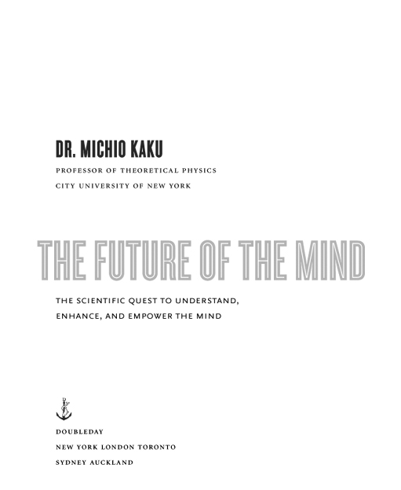
版权所有 © 2014 Michio Kaku
保留所有权利。由兰登书屋有限责任公司旗下的 Doubleday 于美国纽约出版，由企鹅兰登书屋公司旗下的加拿大兰登书屋有限公司于多伦多出版。
DOUBLEDAY 以及锚与海豚的图案是兰登书屋有限责任公司的注册商标。
插图：Jeffrey L. Ward
封面设计：Michael J. Windsor
封面插图 © CLIPAREA/Custom media/Shutterstock
美国国会图书馆出版前编目数据
Kaku, Michio.
The future of the mind : the scientific quest to understand, enhance,
and empower the mind / Dr. Michio Kaku, professor of Theoretical
Physics, City University of New York. — First edition.
pages cm
Includes bibliographical references.
1. Neuropsychology. 2. Mind and body—Research.
3. Brain—Mathematical models. 4. Cognitive neuroscience.
5. Brain-computer interfaces. I. Title.
QP360.K325
2014
612.8—dc23
ISBN 978-0-385-53082-8 (精装版) ISBN 978-0-385-53083-5 (电子书)
rh_3.1_c0_r4
谨以此书献给我深爱的妻子静江，
以及我的女儿们，米歇尔和艾莉森
封面
扉页
版权页
献词
致谢
前言
第一部分：心智与意识
1 解锁心智
2 意识——物理学家的观点
第二部分：心胜于物
3 心灵感应：读懂你的心思
4 念力：心智控制物质
5 按需定制的记忆和思想
6 爱因斯坦的大脑与智力增强
第三部分：改变的意识
7 在你的梦中
8 心智能被控制吗？
9 意识的改变状态
10 人工心智与硅基意识
11 大脑逆向工程
12 未来：超越物质的心智
13 作为纯能量的心智
14 外星心智
15 结语
附录：量子意识？
注释
推荐阅读
插图版权
作者简介
作者其他作品
我很荣幸能够采访和交流以下杰出的科学家，他们都是各自领域的领军人物。我要感谢他们慷慨地抽出时间接受采访，与我讨论科学的未来。他们为我提供了指导和灵感，以及在各自领域的坚实基础。
我要感谢这些先驱者和开拓者，特别是那些同意出现在我为BBC、探索频道和科学频道制作的电视特别节目中的人，以及参与我的全国性广播节目《科学幻想》和《探索》的嘉宾。
Peter Doherty，诺贝尔奖获得者，圣犹大儿童研究医院
Gerald Edelman，诺贝尔奖获得者，斯克里普斯研究所
Leon Lederman，诺贝尔奖获得者，伊利诺伊理工学院
Murray Gell-Mann，诺贝尔奖获得者，圣塔菲研究所和加州理工学院
已故的 Henry Kendall，诺贝尔奖获得者，麻省理工学院
Walter Gilbert，诺贝尔奖获得者，哈佛大学
David Gross，诺贝尔奖获得者，卡夫利理论物理研究所
Joseph Rotblat，诺贝尔奖获得者，圣巴塞洛缪医院
Yoichiro Nambu，诺贝尔奖获得者，芝加哥大学
Steven Weinberg，诺贝尔奖获得者，德克萨斯大学奥斯汀分校
Frank Wilczek，诺贝尔奖获得者，麻省理工学院
. . .
Amir Aczel，《铀战争》作者
Buzz Aldrin，NASA宇航员，第二个登上月球的人
Geoff Andersen，美国空军学院，《望远镜》作者
Jay Barbree，《月球射击》作者
John Barrow，物理学家，剑桥大学，《不可能性》作者
Marcia Bartusiak，《爱因斯坦未完成的交响曲》作者
Jim Bell，康奈尔大学天文学家
Jeffrey Bennet，《超越UFO》作者
Bob Berman，天文学家，《夜空的秘密》作者
Leslie Biesecker，国立卫生研究院
Piers Bizony，《如何建造你自己的星际飞船》作者
Michael Blaese，国立卫生研究院
Alex Boese，恶作剧博物馆创始人
Nick Bostrom，超人类主义者，牛津大学
Robert Bowman 中校，空间与安全研究所
Cynthia Breazeal，人工智能专家，麻省理工学院媒体实验室
Lawrence Brody，国立卫生研究院
Rodney Brooks，麻省理工学院人工智能实验室主任
Lester Brown，地球政策研究所
Michael Brown，天文学家，加州理工学院
James Canton，《极端未来》作者
Arthur Caplan，宾夕法尼亚大学生物伦理中心主任
Fritjof Capra，《列奥纳多的科学》作者
Sean Carroll，宇宙学家，加州理工学院
Andrew Chaikin，《月球上的人》作者
Leroy Chiao，NASA宇航员
Eric Chivian，国际防止核战争医师组织
Deepak Chopra，《超级大脑》作者
George Church，哈佛大学计算遗传学中心主任
Thomas Cochran，物理学家，自然资源保护委员会
Christopher Cokinos，天文学家，《坠落的天空》作者
Francis Collins，国立卫生研究院
Vicki Colvin，纳米技术专家，德克萨斯大学
Neal Comins，《太空旅行的危险》作者
Steve Cook，NASA发言人
Christine Cosgrove，《任何代价的正常》作者
Steve Cousins，Willow Garage个人机器人项目首席执行官
Phillip Coyle，美国国防部前国防助理部长
Daniel Crevier，人工智能专家，Coreco首席执行官
Ken Croswell，天文学家，《壮丽宇宙》作者
Steven Cummer，计算机科学，杜克大学
Mark Cutkowsky，机械工程，斯坦福大学
Paul Davies，物理学家，《超力》作者
Daniel Dennet，哲学家，塔夫茨大学
已故Michael Dertouzos，计算机科学，麻省理工学院
Jared Diamond，普利策奖得主，加州大学洛杉矶分校
Marriot DiChristina，《科学美国人》
Peter Dilworth，MIT人工智能实验室
John Donoghue，Braingate创始人，布朗大学
Ann Druyan，Carl Sagan遗孀，Cosmos Studios
Freeman Dyson，高等研究院，普林斯顿大学
David Eagleman，神经科学家，贝勒医学院
John Ellis，CERN物理学家
Paul Erlich，环境学家，斯坦福大学
Daniel Fairbanks，《伊甸园遗物》作者
Timothy Ferris，加州大学，《银河系的成年时代》作者
Maria Finitzo，干细胞专家，皮博迪奖得主
Robert Finkelstein，人工智能专家
Christopher Flavin，世界观察研究所
Louis Friedman，行星学会联合创始人
Jack Gallant，神经科学家，加州大学伯克利分校
James Garwin，NASA首席科学家
Evelyn Gates，《爱因斯坦的望远镜》作者
Michael Gazzaniga，神经学家，加州大学圣巴巴拉分校
Jack Geiger，社会责任医师组织联合创始人
David Gelertner，计算机科学家，耶鲁大学，加州大学
Neal Gershenfeld，MIT媒体实验室
Daniel Gilbert，心理学家，哈佛大学
Paul Gilster，《半人马座之梦》作者
Rebecca Goldberg，环境保护基金
Don Goldsmith，天文学家，《失控宇宙》作者
David Goodstein，加州理工学院助理教务长
J. Richard Gott III，普林斯顿大学，《爱因斯坦宇宙中的时间旅行》作者
已故Stephen Jay Gould，生物学家，哈佛大学
Thomas Graham大使，间谍卫星和情报收集
John Grant，《腐败科学》作者
Eric Green，美国国立卫生研究院
Ronald Green，《设计婴儿》作者
Brian Greene，哥伦比亚大学，《优雅宇宙》作者
Alan Guth，物理学家，MIT，《暴胀宇宙》作者
William Hanson，《医学的边缘》作者
Leonard Hayflick，加州大学旧金山医学院
Donald Hillebrand，阿贡国家实验室，汽车的未来
Frank N. von Hippel，物理学家，普林斯顿大学
Allan Hobson，精神病学家，哈佛大学
Jeffrey Hoffman，NASA宇航员，MIT
Douglas Hofstadter，普利策奖得主，印第安纳大学，《哥德尔、埃舍尔、巴赫》作者
John Horgan，史蒂文斯理工学院，《科学的终结》作者
Jamie Hyneman，《流言终结者》主持人
Chris Impey，天文学家，《活着的宇宙》作者
Robert Irie，MIT人工智能实验室
P. J. Jacobowitz，《PC》杂志
Jay Jaroslav，MIT人工智能实验室
Donald Johanson，人类学家，露西的发现者
George Johnson，《纽约时报》科学记者
Tom Jones，NASA宇航员
Steve Kates，天文学家
Jack Kessler，干细胞专家，皮博迪奖得主
Robert Kirshner，天文学家，哈佛大学
Kris Koenig，天文学家
Lawrence Krauss，亚利桑那州立大学，《星际迷航物理学》作者
Lawrence Kuhn，电影制作人和哲学家，《接近真理》
Ray Kurzweil，发明家，《精神机器的时代》作者
Robert Lanza，生物技术，先进细胞技术公司
Roger Launius，《太空机器人》作者
Stan Lee，漫威漫画和蜘蛛侠创作者
Michael Lemonick，《时代》杂志高级科学编辑
Arthur Lerner-Lam，地质学家，火山学家
Simon LeVay，《当科学出错时》作者
John Lewis，天文学家，亚利桑那大学
Alan Lightman，MIT，《爱因斯坦的梦》作者
George Linehan，《太空一号》作者
Seth Lloyd，MIT，《编程宇宙》作者
Werner R. Loewenstein，哥伦比亚大学细胞物理实验室前主任
Joseph Lykken，物理学家，费米国家实验室
Pattie Maes，MIT媒体实验室
Robert Mann，《法医探案》作者
Michael Paul Mason，《头部案例：脑损伤及其后果的故事》作者
Patrick McCray，《继续观察天空》作者
Glenn McGee，《完美婴儿》作者
James McLurkin，MIT人工智能实验室
Paul McMillan，太空观察主任
Fulvia Melia，天文学家，亚利桑那大学
William Meller，《进化处方》作者
Paul Meltzer，美国国立卫生研究院
Marvin Minsky，MIT，《心智社会》作者
Hans Moravec，《机器人》作者
已故Phillip Morrison，物理学家，MIT
Richard Muller，天体物理学家，加州大学伯克利分校
David Nahamoo，IBM人类语言技术
Christina Neal，火山学家
Miguel Nicolelis，神经科学家，杜克大学
Shinji Nishimoto，神经学家，加州大学伯克利分校
Michael Novacek，美国自然历史博物馆
Michael Oppenheimer，环境学家，普林斯顿大学
Dean Ornish，癌症和心脏病专家
Peter Palese，病毒学家，西奈山医学院
Charles Pellerin，NASA官员
Sidney Perkowitz，《好莱坞科学》作者
John Pike，GlobalSecurity.org
Jena Pincott，《绅士真的更喜欢金发女郎吗？》作者
Steven Pinker，心理学家，哈佛大学
Thomas Poggio，MIT，人工智能
Correy Powell，《发现》杂志编辑
John Powell，JP航空航天创始人
Richard Preston，《热区》和《冰柜中的恶魔》作者
Raman Prinja，天文学家，伦敦大学学院
David Quammen，进化生物学家，《不情愿的达尔文先生》作者
Katherine Ramsland，法医科学家
Lisa Randall，哈佛大学，《弯曲的通道》作者
Sir Martin Rees，英国皇家天文学家，剑桥大学，《开端之前》作者
Jeremy Rifkin，经济趋势基金会
David Riquier，MIT媒体实验室
Jane Rissler，关注科学家联盟
Steven Rosenberg，美国国立卫生研究院
Oliver Sacks，神经学家，哥伦比亚大学
Paul Saffo，未来学家，未来研究所
已故Carl Sagan，康奈尔大学，《宇宙》作者
Nick Sagan，《你管这叫未来？》合著者
Michael H. Salamon，NASA超越爱因斯坦项目
Adam Savage，《流言终结者》主持人
Peter Schwartz，未来学家，全球商业网络创始人
Michael Shermer，怀疑论者协会和《怀疑论者》杂志创始人
Donna Shirley，NASA火星项目
Seth Shostak，SETI研究所
Neil Shubin，《你内心的鱼》作者
Paul Shurch，SETI联盟
Peter Singer，《战争机器人》作者
Simon Singh，《大爆炸》作者
Gary Small，《i大脑》作者
Paul Spudis，《奥德赛月球有限公司》作者
Stephen Squyres，天文学家，康奈尔大学
Paul Steinhardt，普林斯顿大学，《无尽宇宙》作者
Jack Stern，干细胞外科医生
Gregory Stock，UCLA，《重新设计人类》作者
Richard Stone，《近地天体》和《通古斯》作者
Brian Sullivan，海登天文馆
Leonard Susskind，物理学家，斯坦福大学
Daniel Tammet，《蓝色星期一出生》作者
Geoffrey Taylor，物理学家，墨尔本大学
已故Ted Taylor，美国核弹头设计师
Max Tegmark，宇宙学家，MIT
Alvin Toffler，《第三次浪潮》作者
Patrick Tucker，世界未来学会
Chris Turney，卧龙岗大学，《冰、泥与血》作者
Neil de Grasse Tyson，海登天文馆馆长
Sesh Velamoor，未来基金会
Robert Wallace，《间谍技艺》作者
Kevin Warwick，人类生化改造，英国雷丁大学
Fred Watson，天文学家，《观星者》作者
已故Mark Weiser，施乐帕洛阿尔托研究中心
Alan Weisman，《没有我们的世界》作者
Daniel Wertheimer，SETI@Home，加州大学伯克利分校
Mike Wessler，MIT人工智能实验室
Roger Wiens，天文学家，洛斯阿拉莫斯国家实验室
Author Wiggins，《物理学的乐趣》作者
Anthony Wynshaw-Boris，美国国立卫生研究院
Carl Zimmer，生物学家，《进化》作者
Robert Zimmerman，《离开地球》作者
Robert Zubrin，火星学会创始人
我还要感谢我的经纪人Stuart Krichevsky，这些年来他一直在我身边，为我的书籍提供了有益的建议。我一直受益于他明智的判断。此外，我要感谢我的编辑Edward Kastenmeier和Melissa Danaczko，他们指导了我的书籍并提供了宝贵的编辑建议。我还要感谢我的女儿Michelle Kaku博士，她是纽约西奈山医院的神经学住院医师，与她就神经学未来进行的启发性、深思熟虑且富有成效的讨论令我受益匪浅。她对手稿的仔细和彻底阅读大大提升了本书的表述和内容。
自然界最大的两个谜团是心智和宇宙。凭借我们庞大的技术，我们已经能够拍摄数十亿光年外的星系，操控控制生命的基因，探测原子的内核，但心智和宇宙仍然让我们困惑不解且魅力无穷。它们是科学已知的最神秘、最迷人的前沿。
如果你想欣赏宇宙的壮丽，只需在夜晚仰望天空，那里燃烧着数十亿颗星星。自从我们的祖先第一次被星空的壮美所震撼以来，我们就一直在思考这些永恒的问题：这一切从何而来？这一切意味着什么？
要见证我们心智的奥秘，我们只需对着镜子凝视自己，思考：我们眼中隐藏着什么？这引发了令人困扰的问题：我们有灵魂吗？死后会发生什么？“我”到底是谁？最重要的是，这让我们面对终极问题：在这宏大的宇宙体系中，我们处于什么位置？正如伟大的维多利亚时代生物学家托马斯·赫胥黎(Thomas Huxley)曾说：“对人类而言，所有问题中的问题，隐藏在所有其他问题背后且比任何问题都更有趣的问题，是确定人类在自然界中的位置以及与宇宙的关系。”
银河系中有1000亿颗恒星，大致相当于我们大脑中神经元的数量。你可能需要旅行24万亿英里，到达太阳系外的第一颗恒星，才能找到一个与你肩膀上这个器官一样复杂的物体。心智和宇宙构成了最大的科学挑战，但它们也有着奇特的关系。一方面它们是完全对立的。一个关注外太空的浩瀚，在那里我们遇到黑洞、爆炸恒星和碰撞星系等奇异存在。另一个关注内在空间，在那里我们找到最私密的希望和欲望。心智距离我们下一个想法咫尺之遥，然而当被要求阐述和解释它时，我们往往一无所知。
但尽管它们在这方面可能是对立的，它们也有着共同的历史和叙事。自古以来，两者都被迷信和魔法所笼罩。占星家和颅相学家声称能在黄道十二宫的每个星座和你头上的每个凸起中找到宇宙的意义。与此同时，读心者和预言家多年来交替受到赞美和诋毁。
宇宙和心智继续以各种方式交汇，这在很大程度上要归功于我们在科幻小说中经常遇到的一些令人大开眼界的想法。小时候读这些书时，我会幻想自己是斯兰人的一员，这是A. E. 范·沃格特创造的心灵感应种族。我对一个叫做骡子的变种人如何释放他强大的心灵感应力量并几乎夺取银河帝国的控制权感到惊叹，这出现在艾萨克·阿西莫夫的《基地三部曲》中。在电影《禁忌星球》中，我想知道一个比我们先进数百万年的高等文明如何运用其巨大的念力来按照自己的意愿和愿望重塑现实。
然后在我大约十岁的时候，“神奇的邓宁格”出现在电视上。他会用壮观的魔术表演让观众眼花缭乱。他的座右铭是”对于相信的人，不需要解释；对于不相信的人，任何解释都不够。“有一天，他宣布要将自己的思想传送给全国数百万人。他闭上眼睛开始集中注意力，声称他正在传送一位美国总统的名字。他要求人们将浮现在脑海中的名字写在明信片上并邮寄过来。下一周，他得意地宣布成千上万张明信片涌来，上面都写着”罗斯福”这个名字，正是他在美国各地”传送”的同一个名字。
我并不印象深刻。那时，罗斯福的遗产在那些经历过大萧条和第二次世界大战的人们中影响深远，所以这并不令人意外。（我心想，如果他想的是米勒德·菲尔莫尔总统，那才真正令人惊奇。）
尽管如此，这激发了我的想象力，我忍不住自己尝试心灵感应，试图通过尽可能集中注意力来读取他人的思想。闭上眼睛专心致志地，我会试图”倾听”他人的想法，并用念力移动房间里的物体。
我失败了。
也许地球上某处有心灵感应者存在，但我不是其中之一。在这个过程中，我开始意识到心灵感应者的神奇能力可能是不可能的——至少在没有外部帮助的情况下是如此。但在随后的岁月里，我也慢慢学到了另一个教训：要探索宇宙中最伟大的秘密，人们不需要心灵感应或超人能力。只需要拥有一颗开放、坚定和好奇的心。特别是，要理解科幻小说中的奇妙装置是否可能，你必须深入学习高等物理学。要理解可能与不可能之间的精确界限，你必须理解和掌握物理定律。
这两种激情多年来一直点燃着我的想象力：理解物理学的基本定律，以及了解科学将如何塑造我们生活的未来。为了说明这一点并分享我在探索物理学终极定律方面的兴奋，我写了《超空间》、《超越爱因斯坦》和《平行世界》这些书。为了表达我对未来的迷恋，我写了《愿景》、《不可能的物理学》和《未来的物理学》。在写作和研究这些书的过程中，我不断被提醒，人类的心智仍然是世界上最伟大、最神秘的力量之一。
确实，在历史的大部分时间里，我们一直无法理解心智是什么或它是如何工作的。古埃及人，尽管在艺术和科学方面取得了辉煌的成就，却认为大脑是无用的器官，在给法老制作木乃伊时将其丢弃。亚里士多德确信灵魂居住在心脏中，而不是大脑中，大脑的唯一功能是冷却心血管系统。其他人，如笛卡尔，认为灵魂通过大脑的微小松果体进入身体。但在缺乏任何确凿证据的情况下，这些理论都无法得到证实。
这个”黑暗时代”持续了数千年，这是有充分理由的。大脑只重三磅，却是太阳系中最复杂的物体。虽然它只占身体重量的2%，但大脑有着贪婪的食欲，消耗我们总能量的20%（在新生儿中，大脑消耗婴儿能量的惊人的65%），而我们80%的基因都为大脑编码。据估计，颅骨内有1000亿个神经元，具有指数级数量的神经连接和通路。
早在1977年，当天文学家卡尔·萨根写下他的普利策奖获奖作品《伊甸园之龙》时，他广泛总结了当时对大脑的认知。他的书写得很优美，试图代表当时神经科学的最新水平，那时主要依赖三个主要来源。第一种是将我们的大脑与其他物种的大脑进行比较。这既乏味又困难，因为需要解剖成千上万动物的大脑。第二种方法同样间接：分析中风和疾病的受害者，他们由于疾病经常表现出奇怪的行为。只有在他们死后进行的尸检才能揭示大脑的哪个部分出现了故障。第三，科学家可以使用电极探测大脑，缓慢而痛苦地拼凑出大脑的哪个部分影响哪种行为。
但神经科学的基本工具并没有提供分析大脑的系统方法。你不能简单地要求一个在你想研究的特定区域受损的中风患者。由于大脑是一个活的、动态的系统，尸检往往无法揭示最有趣的特征，比如大脑各部分如何相互作用，更不用说它们如何产生爱、恨、嫉妒和好奇心等如此多样的思想。
四百年前，望远镜被发明了，几乎在一夜之间，这个新的、神奇的仪器窥视到了天体的内心。它是有史以来最具革命性（和煽动性）的仪器之一。突然间，用你自己的双眼，你就能看到过去的神话和教条像晨雾一样蒸发。月球不再是神圣智慧的完美典范，而是有着锯齿状陨石坑；太阳有黑点；木星有卫星；金星有相位；土星有光环。在望远镜发明后的十五年里，人类对宇宙的了解超过了此前所有历史的总和。
就像望远镜的发明一样，20世纪90年代中期和2000年代引入的MRI机器和各种先进的大脑扫描技术已经改变了神经科学。在过去的十五年里，我们对大脑的了解超过了此前所有人类历史，而曾经被认为无法触及的心智，终于成为了中心舞台。
德国图宾根马克斯·普朗克研究所的诺贝尔奖获得者埃里克·R·坎德尔写道：“在这一时期对人类心智最有价值的洞察，并非来自传统上关注心智的学科——哲学、心理学或精神分析。相反，它们来自这些学科与大脑生物学的融合…”
物理学家在这一努力中发挥了关键作用，提供了大量新工具，这些工具有着MRI、EEG、PET、CAT、TCM、TES和DBS等缩写，极大地改变了对大脑的研究。突然间，通过这些机器，我们能够看到思想在活着的、思考着的大脑中流动。正如加州大学圣地亚哥分校的神经学家V·S·拉马钱德兰所说：“哲学家们研究了数千年的所有这些问题，我们科学家现在可以通过进行大脑成像、研究患者并提出正确的问题来开始探索。”
回顾过去，我最初进入物理学世界的一些尝试与现在为科学打开心智大门的技术产生了交集。例如，在高中时，我了解到一种新的物质形态，叫做反物质，并决定就这个主题进行一个科学项目。由于它是地球上最奇异的物质之一，我不得不向当时的原子能委员会申请，才获得了微量的钠-22，这是一种自然发射正电子（反电子或正电子）的物质。有了这个小样本，我能够建造一个云室和强大的磁场，让我能够拍摄到反物质粒子留下的蒸汽轨迹。当时我不知道，钠-22很快就会成为一项新技术——PET（正电子发射断层扫描）的关键组成部分，这项技术后来为我们提供了对思考大脑的惊人新见解。
我在高中时实验的另一项技术是磁共振。我参加了斯坦福大学菲利克斯·布洛赫的讲座，他因发现核磁共振与爱德华·珀塞尔共同获得了1952年的诺贝尔物理学奖。布洛赫博士向我们这些高中生解释说，如果你有一个强大的磁场，原子就会像指南针针一样在该磁场中垂直排列。然后，如果你以精确的共振频率对这些原子施加无线电脉冲，你就能让它们翻转。当它们最终翻转回来时，它们会发出另一个脉冲，就像回声一样，这将允许你确定这些原子的身份。（后来，我利用磁共振原理在我妈妈的车库里建造了一台230万电子伏特的粒子加速器。）
几年后，作为哈佛大学的一年级新生，有幸让珀塞尔博士教我电动力学是一种荣誉。大约在同一时间，我还有一份暑期工作，并有机会与理查德·恩斯特博士合作，他正试图推广布洛赫和珀塞尔在磁共振方面的工作。他取得了惊人的成功，最终因为现代MRI（磁共振成像）机器奠定基础而获得1991年诺贝尔物理学奖。MRI机器反过来为我们提供了比PET扫描更详细的活体大脑照片。
最终我成为了一名理论物理学教授，但我对心智的迷恋依然存在。看到仅在过去十年中，物理学的进步就使得一些在我童年时让我兴奋的心理能力成为可能，这是令人激动的。使用MRI扫描，科学家现在可以读取在我们大脑中循环的思想。科学家还可以在完全瘫痪的患者大脑中植入芯片并将其连接到计算机，这样仅通过思想，患者就可以上网冲浪、收发电子邮件、玩视频游戏、控制轮椅、操作家用电器和操纵机械臂。事实上，这些患者可以通过计算机做正常人能做的任何事情。
科学家们现在走得更远，直接将大脑连接到外骨骼，患者可以在瘫痪的肢体周围穿戴这些外骨骼。四肢瘫痪者有一天可能过上接近正常的生活。这样的外骨骼也可能赋予我们处理致命紧急情况的超能力。有一天，我们的宇航员甚至可能在客厅的舒适环境中通过精神控制机械替身来探索行星。
就像电影《黑客帝国》中一样，我们也许有一天能够使用计算机下载记忆和技能。在动物研究中，科学家们已经能够将记忆植入大脑。也许用不了多久，我们也能将人工记忆植入大脑来学习新学科、在新地方度假、掌握新爱好。如果技术技能可以下载到工人和科学家的大脑中，这甚至可能影响世界经济。我们甚至可能能够分享这些记忆。有一天，科学家们可能会构建一个”大脑互联网”或脑网，让思想和情感通过电子方式在世界各地传输。甚至梦境也将被录制下来，然后通过互联网进行”大脑邮寄”。
技术也可能给我们增强智力的力量。在理解”学者症候群”(savants)的超凡能力方面已经取得了进展，他们的心理、艺术和数学能力真是令人惊叹。此外，将我们与猿类区分开来的基因现在正在被测序，让我们能够前所未有地窥见大脑进化起源。已经在动物中分离出能够增强其记忆和智力表现的基因。
这些令人大开眼界的进展所产生的兴奋和希望是如此巨大，以至于它们也引起了政治家们的注意。事实上，大脑科学突然成为地球上最强大的经济体之间跨大西洋竞争的源泉。2013年1月，巴拉克·奥巴马总统和欧盟都宣布了最终可能成为数十亿美元资助的两个独立项目，旨在对大脑进行逆向工程。破译大脑复杂的神经回路，曾经被认为完全超出了现代科学的范围，现在却成为两个重大项目的焦点，这些项目就像人类基因组计划一样，将改变科学和医学的格局。这不仅将为我们提供对心智的无与伦比的洞察，还将产生新的产业，刺激经济活动，并为神经科学开辟新的前景。
一旦大脑的神经通路最终被解码，人们可以设想理解精神疾病的确切起源，也许能够治愈这种古老的病痛。这种解码也使得创建大脑副本成为可能，这引发了哲学和伦理问题。如果我们的意识可以上传到计算机中，我们又是谁呢？我们还可以玩味不朽的概念。我们的身体最终可能会衰败和死亡，但我们的意识能否永远存在？
除此之外，也许有一天在遥远的未来，心智将摆脱身体的束缚，在群星间漫游，正如几位科学家所推测的那样。几个世纪后，人们可以想象将我们整个神经蓝图放在激光束上，然后发送到深太空，这也许是我们的意识探索群星最便捷的方式。
一个将重塑人类命运的辉煌新科学景观现在真正开启了。我们现在正进入神经科学的新黄金时代。
在做出这些预测时，我得到了科学家们的宝贵帮助，他们慷慨地允许我采访他们，在国家广播中播放他们的想法，甚至带着电视摄制组进入他们的实验室。这些科学家正在为心智的未来奠定基础。为了将他们的想法纳入本书，我只提出了两个要求：(1)他们的预测必须严格遵守物理定律；(2)必须存在原型来证明这些深远想法的原理。
我曾经写过阿尔伯特·爱因斯坦的传记，名为《爱因斯坦的宇宙》，必须深入了解他私生活的细节。我知道爱因斯坦的小儿子患有精神分裂症，但没有意识到这对这位伟大科学家的生活造成了巨大的情感创伤。爱因斯坦还以另一种方式被精神疾病触动；他最亲密的同事之一是物理学家保罗·埃伦费斯特，他帮助爱因斯坦创立了广义相对论。在遭受抑郁症折磨后，埃伦费斯特悲剧性地杀死了他患有唐氏综合征的儿子，然后自杀了。多年来，我发现我的许多同事和朋友都在努力管理家庭中的精神疾病。
精神疾病也深深触动了我自己的生活。几年前，我的母亲在与阿尔茨海默病的长期斗争后去世了。看着她逐渐失去对亲人的记忆，凝视她的眼睛却意识到她不知道我是谁，这是令人心碎的。我能看到人性的光芒慢慢熄灭。她花了一生的时间努力养家，而不是享受她的黄金岁月，她却被剥夺了所有珍视的记忆。
随着婴儿潮一代的老龄化，我和许多其他人经历的悲伤将在世界各地重演。我的愿望是神经科学的快速进展有一天能够减轻那些患有精神疾病和痴呆症的人所感受到的痛苦。
来自大脑扫描的数据现在正在被解码，进展令人震惊。每年都有几次，头条新闻宣告新的突破。自从望远镜发明以来花了350年才进入太空时代，但自从引入MRI和先进大脑扫描技术以来，仅用了15年就主动地将大脑连接到外部世界。为什么如此之快，还有多少进展即将到来？
这种快速进步的部分原因是，今天的物理学家对电磁学有很好的理解，电磁学支配着在我们神经元中快速传递的电信号。詹姆斯·克拉克·麦克斯韦(James Clerk Maxwell)的数学方程用于计算天线、雷达、无线电接收器和微波塔的物理学，构成了MRI技术的基石。解开电磁学的秘密用了几个世纪，但神经科学可以享受这一伟大成就的成果。在第一卷中，我将回顾大脑的历史，并解释大量新仪器如何离开物理实验室，为我们提供了思维机制的绚丽彩色图片。由于意识在任何关于心智的讨论中都发挥着如此核心的作用，我还提供了物理学家的视角，给出了包括动物王国在内的意识定义。事实上，我提供了意识的等级排序，展示了如何为各种类型的意识分配数值。
但要充分回答这项技术将如何发展的问题，我们还必须看看摩尔定律，该定律指出计算机能力每两年翻一番。我经常用一个简单的事实让人们感到惊讶：你今天的手机比1969年NASA将两名男子送上月球时的全部计算机能力还要强大。计算机现在足够强大，可以记录从大脑发出的电信号，并将其部分解码为熟悉的数字语言。这使得大脑可以直接与计算机接口来控制周围的任何物体。这个快速发展的领域被称为BMI(脑机接口)，关键技术是计算机。在第二卷中，我将探索这项新技术，它使记录记忆、读心术、录制我们的梦境和心灵致动成为可能。
在第三卷中，我将研究意识的替代形式，从梦境、药物和精神疾病到机器人甚至外太空的外星人。在这里，我们还将了解控制和操纵大脑来治疗抑郁症、帕金森病、阿尔茨海默病等疾病的潜力。我还将详细阐述奥巴马总统宣布的BRAIN项目(通过推进创新神经技术进行大脑研究)和欧盟的人脑项目，这些项目可能会分配数十亿美元来解码大脑的通路，直至神经元级别。这两个突击项目无疑将开辟全新的研究领域，为我们提供治疗精神疾病的新方法，同时揭示意识的最深层秘密。
在我们给出意识的定义之后，我们可以用它来探索非人类意识(即机器人的意识)。机器人能变得多先进？它们能有情感吗？它们会构成威胁吗？我们还可以探索外星人的意识，他们的目标可能与我们完全不同。
在附录中，我将讨论所有科学中最奇怪的想法，即量子物理学中意识可能是现实基础的概念。
这个爆发性领域并不缺乏提案。只有时间能告诉我们哪些只是科幻作家过热想象力创造的白日梦，哪些代表未来科学研究的坚实途径。神经科学的进步令人瞩目，在许多方面，关键在于现代物理学，它利用电磁力和核力的全部力量来探索隐藏在我们心智中的巨大秘密。
我必须强调，我不是神经科学家。我是一位对心智有持续兴趣的理论物理学家。我希望物理学家的视角能帮助进一步丰富我们的知识，为宇宙中最熟悉也最陌生的物体——我们的心智——提供全新的理解。
但考虑到全新视角发展的令人眩晕的速度，重要的是我们要牢固掌握大脑是如何构成的。
所以让我们首先讨论现代神经科学的起源，一些历史学家认为它始于一根铁钉穿过某个叫菲尼亚斯·盖奇(Phineas Gage)的人的大脑时。这一开创性事件引发了连锁反应，帮助开启了对大脑的严肃科学研究。虽然这对盖奇先生来说是不幸的事件，但它为现代科学铺平了道路。
——卡尔·萨根
1848年，菲尼亚斯·盖奇在佛蒙特州担任铁路工头，当时炸药意外爆炸，将一根3英尺7英寸的尖钉直接射入他的脸部，穿过他大脑的前部，从头骨顶部穿出，最终落在80英尺外。他的同事们震惊地看到工头的部分大脑被炸飞，立即叫来了医生。令工人们(甚至医生)惊讶的是，盖奇先生并没有当场死亡。
他昏迷了数周，但最终似乎完全康复了。（2009年发现了一张罕见的盖奇照片，显示了一个英俊、自信的男人，头部和左眼有伤，手中拿着那根铁棒。）但在这次事故后，他的同事开始注意到他的性格发生了急剧变化。原本开朗、乐于助人的工头，盖奇变得粗暴、敌意和自私。人们警告女士们要远离他。治疗他的约翰·哈洛医生观察到，盖奇”反复无常、摇摆不定，制定许多未来行动计划，但这些计划刚刚安排好就被抛弃，转而支持其他看起来更可行的计划。在智力能力和表现上像个孩子，却有着强壮男人的动物性激情。“哈洛医生注意到他”根本性地改变了”，他的同事说”他不再是盖奇了”。1860年盖奇去世后，哈洛医生保存了他的头骨和撞击他的铁棒。详细的X光扫描证实，铁棒在大脑前额后面被称为额叶的区域造成了大规模破坏，左右大脑半球都受到影响。
这次令人难以置信的事故不仅改变了菲尼亚斯·盖奇的生活，也改变了科学的进程。此前，主导思想认为大脑和灵魂是两个独立的实体，这种哲学被称为二元论。但越来越清楚的是，他大脑额叶的损伤导致了盖奇性格的突然变化。这反过来在科学思维中创造了范式转变：也许大脑的特定区域可以追溯到某些行为。
1861年，就在盖奇去世一年后，巴黎医生皮埃尔·保罗·布罗卡的工作进一步巩固了这一观点，他记录了一个看起来正常但有严重言语障碍的患者。这个患者能够完美地理解和领会言语，但只能发出一个音，即”tan”这个词。患者死后，布罗卡医生在尸检中证实患者的左颞叶（大脑左耳附近的区域）有病变。布罗卡医生后来证实了十二个类似的大脑特定区域损伤患者案例。今天，颞叶损伤（通常在左半球）的患者被称为患有布罗卡失语症。（一般来说，这种疾病的患者能理解言语但不能说话，或者说话时会遗漏很多词汇。）
不久之后，1874年，德国医生卡尔·韦尼克描述了患有相反问题的患者。他们能够清晰地表达，但无法理解书面或口头言语。这些患者通常能够用正确的语法和句法流利地说话，但使用无意义的词汇和毫无意义的行话。可悲的是，这些患者往往不知道自己在说胡话。韦尼克在进行尸检后证实，这些患者左颞叶的一个稍微不同的区域受到了损伤。
布罗卡和韦尼克的工作是神经科学的里程碑研究，建立了行为问题（如言语和语言障碍）与大脑特定区域损伤之间的明确联系。
另一个突破发生在战争的混乱中。纵观历史，有许多宗教禁忌禁止解剖人体，这严重限制了医学进步。然而，在战争中，成千上万的流血士兵在战场上死亡，为医生开发任何有效的医疗治疗方法成为紧急任务。在1864年的普鲁士-丹麦战争期间，德国医生古斯塔夫·弗里奇治疗了许多头部有大创伤的士兵，碰巧注意到当他触碰大脑的一个半球时，身体的另一侧经常会抽搐。后来弗里奇系统地证明，当他电刺激大脑时，左半球控制身体右侧，反之亦然。这是一个惊人的发现，证明大脑基本上是电性的，大脑的特定区域控制身体另一侧的部分。（奇怪的是，在大脑上使用电探针的记录最早出现在几千年前的罗马人那里。公元43年的记录显示，皇帝克劳狄乌斯的宫廷医生使用带电的鱼雷鱼，将其应用于患有严重头痛的患者头部。）
连接大脑与身体的电通路的认识直到1930年代才得到系统分析，当时怀尔德·彭菲尔德医生开始治疗癫痫患者，这些患者经常遭受使人衰弱的抽搐和可能危及生命的癫痫发作。对他们来说，最后的选择是进行脑部手术，这涉及移除部分头骨并暴露大脑。（由于大脑没有疼痛传感器，人在整个过程中可以保持清醒，所以彭菲尔德医生在手术中只使用局部麻醉。）
彭菲尔德博士注意到，当他用电极刺激皮层的某些部分时，身体的不同部分会产生反应。他突然意识到，他可以在皮层的特定区域和人体之间建立粗略的一对一对应关系。他的绘图如此准确，以至于至今仍在以几乎未经修改的形式使用。它们立即对科学界和公众产生了影响。在一个图表中，你可以看到大脑的哪个区域大致控制哪种功能，以及每种功能的重要性。例如，由于我们的双手和嘴巴对生存至关重要，相当多的脑力被用于控制它们，而我们背部的传感器几乎没有任何反应。
此外，彭菲尔德发现，通过刺激颞叶的部分，他的患者突然以极其清晰的方式重新体验了长期遗忘的记忆。当一名患者在脑手术过程中突然脱口而出：“就像…站在我高中的门口…我听到我母亲在电话里说话，告诉我姑姑那天晚上过来”时，他感到震惊。彭菲尔德意识到他正在接触深埋在大脑中的记忆。当他在1951年发表研究结果时，它们再次改变了我们对大脑的理解。
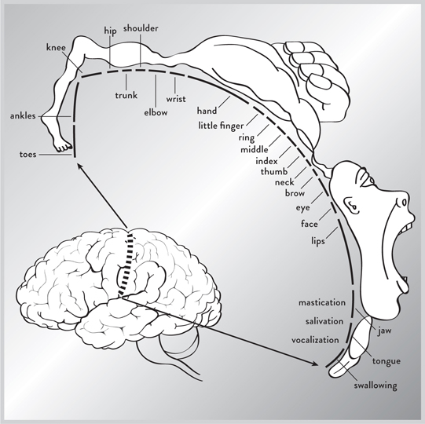
图1. 这是由怀尔德·彭菲尔德博士创建的运动皮层地图，显示大脑的哪个区域控制身体的哪个部分。
到1950年代和60年代，已经可以创建一个粗略的大脑地图，定位不同的区域，甚至识别其中一些区域的功能。
在图2中，我们看到新皮层，它是大脑的外层，分为四个叶。它在人类中高度发达。大脑的所有叶都专门处理来自我们感官的信号，除了一个：位于前额后面的额叶。前额皮层是额叶的最前部，是处理大部分理性思维的地方。你现在正在阅读的信息正在你的前额皮层中处理。这个区域的损伤可能损害你规划或思考未来的能力，就像菲尼亚斯·盖奇(Phineas Gage)的案例一样。这是来自我们感官的信息被评估并制定未来行动方案的区域。
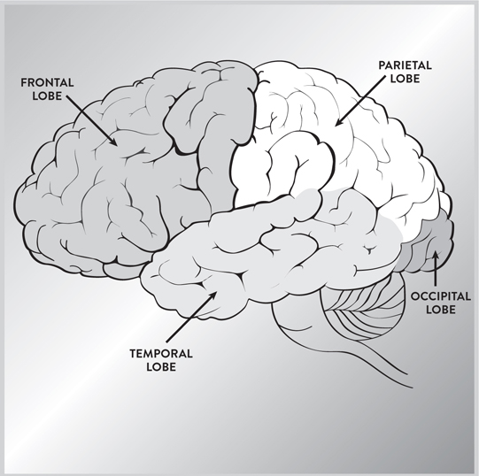
图2. 大脑新皮层的四个叶负责不同但相关的功能。
顶叶位于我们大脑的顶部。右半球控制感觉注意力和身体意象；左半球控制熟练运动和语言的某些方面。这个区域的损伤可能导致许多问题，例如难以定位自己身体的部分。
枕叶位于大脑的最后部，处理来自眼睛的视觉信息。这个区域的损伤可能导致失明和视觉障碍。
颞叶控制语言（仅在左侧），以及面部的视觉识别和某些情感感受。这个叶的损伤可能使我们失语或无法识别熟悉的面孔。
当你观察身体的其他器官，如我们的肌肉、骨骼和肺部时，它们似乎有明显的韵律和原因，我们可以立即看到。但大脑的结构可能看起来是以相当混乱的方式拼凑在一起的。事实上，绘制大脑地图经常被称为”傻瓜的制图学”。
为了理解大脑看似随机的结构，1967年国家心理健康研究所的保罗·麦克莱恩博士将查尔斯·达尔文的进化论应用于大脑。他将大脑分为三个部分。（从那时起，研究表明这个模型有所改进，但我们将使用它作为解释大脑整体结构的粗略组织原则。）首先，他注意到我们大脑的后部和中心部分，包含脑干、小脑和基底神经节，几乎与爬行动物的大脑相同。被称为”爬行动物大脑”，这些是大脑最古老的结构，控制基本的动物功能，如平衡、呼吸、消化、心跳和血压。它们还控制诸如战斗、狩猎、交配和领域性等行为，这些对生存和繁殖是必要的。爬行动物大脑可以追溯到大约5亿年前。（见图3。）
但当我们从爬行动物进化为哺乳动物时，大脑也变得更加复杂，向外进化并创造了全新的结构。在这里我们遇到了”哺乳动物大脑”，或称边缘系统，它位于大脑中心附近，围绕着爬行动物大脑的部分。边缘系统在生活在社会群体中的动物中很突出，比如猿类。它还包含参与情感的结构。由于社会群体的动态可能相当复杂，边缘系统对于分辨潜在的敌人、盟友和竞争者至关重要。
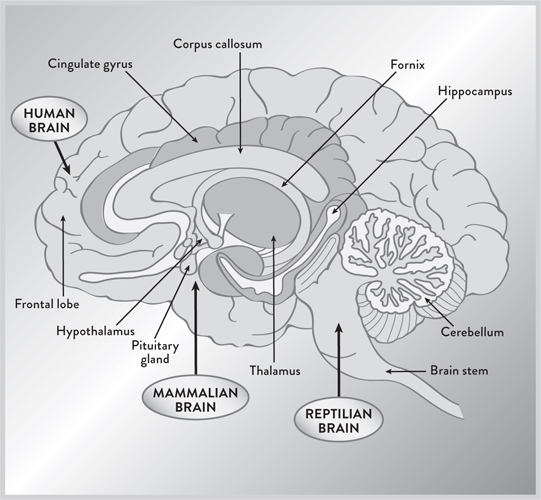
图3. 大脑的进化历史，包括爬行动物大脑、边缘系统（哺乳动物大脑）和新皮层（人类大脑）。粗略地说，可以说我们大脑进化的路径是从爬行动物大脑到哺乳动物大脑再到人类大脑。
控制社会动物关键行为的边缘系统的不同部分包括：
• 海马体。这是记忆的门户，短期记忆在此处理为长期记忆。其名称意为”海马”，描述了它奇特的形状。此处受损会破坏形成新长期记忆的能力。你会成为现在的囚徒。
• 杏仁核。这是情绪的中枢，特别是恐惧，情绪在此首先被记录和产生。其名称意为”杏仁”。
• 丘脑。这像一个中继站，从脑干收集感觉信号，然后将它们发送到各个皮质。其名称意为”内室”。
• 下丘脑。这调节体温、昼夜节律、饥饿、口渴以及生殖和快感的各个方面。它位于丘脑下方——因此得名。
最后，我们有哺乳动物大脑的第三个也是最新的区域，大脑皮质，它是大脑的外层。大脑皮质内最新的进化结构是新皮质（意为”新树皮”），它控制高级认知行为。它在人类中最为发达：占我们大脑质量的80%，但厚度仅如餐巾纸。在老鼠中新皮质是光滑的，但在人类中高度褶皱，这使得大量表面积能够塞进人类头骨。
从某种意义上说，人类大脑就像一个博物馆，包含了我们数百万年进化中所有先前阶段的遗迹，在大小和功能上向外和向前爆炸性增长。（这也大致是婴儿出生时所走的路径。婴儿大脑向外和向前扩展，或许模仿了我们进化的阶段。）
虽然新皮质看起来不起眼，但外表具有欺骗性。在显微镜下你可以欣赏大脑复杂的架构。大脑灰质由数十亿被称为神经元的微小脑细胞组成。像一个巨大的电话网络，它们通过树突接收来自其他神经元的信息，树突像从神经元一端萌发的卷须。在神经元的另一端，有一根称为轴突的长纤维。最终轴突通过树突连接到多达一万个其他神经元。在两者之间的连接处，有一个称为突触的微小间隙。这些突触像门一样，调节大脑内信息的流动。称为神经递质的特殊化学物质可以进入突触并改变信号流。因为像多巴胺、血清素和去甲肾上腺素这样的神经递质帮助控制在大脑无数通路中移动的信息流，它们对我们的情绪、感情、思想和精神状态产生强大影响。（见图4。）
这种对大脑的描述大致代表了1980年代的知识状态。然而，在1990年代，随着物理学领域新技术的引入，思维的机制开始以精确的细节被揭示，引发了当前科学发现的爆发。这场革命的主力之一是MRI机器。
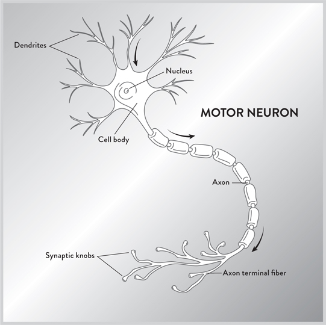
图4. 神经元示意图。电信号沿着神经元的轴突传播，直到它们到达突触。神经递质可以调节电信号通过突触的流动。
要理解为什么这种激进的新技术帮助解码了思维大脑，我们必须将注意力转向物理学的一些基本原理。
无线电波，一种电磁辐射，可以穿透组织而不造成损害。MRI机器利用了这一事实，允许电磁波自由穿透头骨。在这个过程中，这项技术为我们提供了一些曾被认为不可能捕捉的东西的精美照片：大脑在体验感觉和情绪时的内部运作。观看MRI机器中闪烁的光舞，人们可以追踪在大脑内移动的思想。这就像能够看到时钟滴答作响时的内部一样。
你注意到MRI机器的第一件事是巨大的圆柱形磁线圈，它们可以产生比地球磁场强两万到六万倍的磁场。巨大的磁铁是MRI机器重达一吨、填满整个房间并花费数百万美元的主要原因之一。（MRI机器比X射线机器更安全，因为它们不产生有害离子。CT扫描虽然也能创建3D图片，但会用比普通X射线多许多倍的剂量冲击身体，因此必须小心调节。相比之下，MRI机器在正确使用时是安全的。然而，一个问题是工作人员的疏忽。磁场强大到足以在错误时间开启时将工具高速抛射通过空气。人们已因此受伤甚至死亡。）
MRI机器的工作原理如下：患者平躺着被推入包含两个大型线圈的圆筒中，这些线圈产生磁场。当磁场开启时，你体内原子的原子核就像指南针的指针一样：它们沿着磁场方向水平排列。然后产生一个小的射频能量脉冲，使我们体内的一些原子核翻转到相反方向。当原子核稍后恢复到正常位置时，它们会发出二次射频能量脉冲，然后由MRI机器进行分析。通过分析这些微小的”回声”，可以重建这些原子的位置和性质。就像蝙蝠使用回声来确定路径中物体的位置一样，MRI机器产生的回声使科学家能够重建大脑内部的清晰图像。计算机然后重建原子的位置，为我们提供美丽的三维图表。
当MRI最初引入时，它们能够显示大脑及其各个区域的静态结构。然而，在1990年代中期，发明了一种新型MRI，称为”功能性”MRI或fMRI，它检测大脑血液中氧气的存在。（对于不同类型的MRI机器，科学家有时在”MRI”前面加上小写字母，但我们将使用缩写MRI来表示所有各种类型的MRI机器。）MRI扫描无法直接检测神经元中的电流，但由于氧气是为神经元提供能量所必需的，含氧血液可以间接追踪神经元中电能的流动，并显示大脑各个区域如何相互作用。
这些MRI扫描已经明确推翻了思维集中在单一中心的观点。相反，可以看到电能在大脑思考时在不同部分之间循环。通过追踪我们思想的路径，MRI扫描为阿尔茨海默病、帕金森病、精神分裂症和许多其他精神疾病的性质提供了新的见解。
MRI机器的巨大优势在于它们精确定位大脑微小部分的精湛能力，精确到毫米的几分之一。MRI扫描不仅会在二维屏幕上创建称为像素的点，还会在三维空间中创建称为”体素”的点，产生数万个彩色点的明亮集合，呈现大脑的三维形状。
由于不同的化学元素对不同频率的射频有响应，你可以改变射频脉冲的频率，从而识别身体的不同元素。如前所述，fMRI机器专注于血液中的氧原子以测量血流，但MRI机器也可以调谐以识别其他原子。就在过去十年中，引入了一种称为”扩散张量成像”MRI的新形式，它检测大脑中水的流动。由于水沿着大脑的神经通路流动，DTI产生美丽的图像，类似于花园中生长的藤蔓网络。科学家现在可以立即确定大脑的某些部分如何与其他部分连接。
然而，MRI技术有几个缺点。虽然它们在空间分辨率方面无与伦比，能够定位到三维空间中针尖大小的体素，但MRI在时间分辨率方面并不那么好。追踪大脑中血液的路径需要将近整整一秒，这听起来可能不算多，但要记住电信号几乎瞬间传遍整个大脑，因此MRI扫描可能会错过思维模式的一些复杂细节。
另一个障碍是成本，达到数百万美元，因此医生经常必须共享这些机器。但像大多数技术一样，技术发展应该会随着时间的推移降低成本。
与此同时，高昂的成本并没有阻止商业应用的探索。一个想法是使用MRI扫描作为测谎仪，根据一些研究，它可以以95%或更高的准确率识别谎言。准确率水平仍然存在争议，但基本思想是当一个人说谎时，他必须同时知道真相、编造谎言，并快速分析这个谎言与之前已知事实的一致性。今天一些公司声称MRI技术显示，当某人说谎时，前额叶和顶叶会亮起。更具体地说，“眶额皮质”（除其他功能外，可以作为大脑的”事实检查器”，在某些事情不对时警告我们）变得活跃。这个区域位于我们眼眶的正后方，因此得名。理论认为眶额皮质理解真相和谎言之间的区别，并因此进入超负荷状态。（当某人说谎时，大脑的其他区域也会亮起，如参与认知的上内侧和下外侧前额皮质。）
已经有几家商业公司提供MRI机器作为测谎仪，涉及这些机器的案例正在进入法庭系统。但重要的是要注意，这些MRI扫描仅表明某些区域的大脑活动增加。虽然DNA结果有时可以达到100亿分之一或更好的准确性，但MRI扫描无法做到这一点，因为编造谎言需要大脑的许多区域，而这些相同的大脑区域也负责处理其他类型的思想。
另一个探测大脑深处的有用工具是脑电图（EEG）。脑电图早在1924年就被引入，但直到最近才有可能使用计算机来理解从每个电极涌入的所有数据。
要使用脑电图机器，患者通常需要戴上一个未来感十足的头盔，表面有许多电极。（更先进的版本是在头部放置一个包含一系列微小电极的发网。）这些电极检测在大脑中循环的微小电信号。
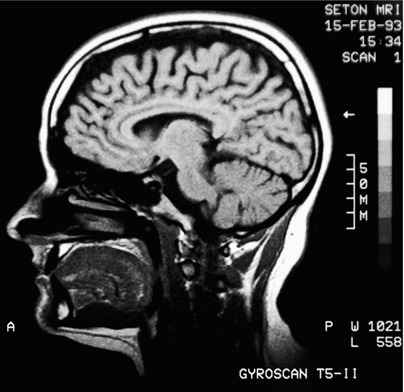
(illustration credit 1.5)
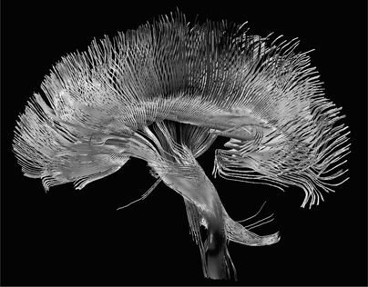
图5. 在上方，我们看到功能性MRI机器拍摄的图像，显示了高精神活动区域。在下方图像中，我们看到扩散MRI机器创建的花朵状图案，它可以追踪大脑的神经通路和连接。(illustration credit 1.5a)
脑电图扫描与MRI扫描在几个关键方面有所不同。如我们所见，MRI扫描向大脑发射无线电脉冲，然后分析返回的”回声”。这意味着你可以改变无线电脉冲来选择不同的原子进行分析，使其相当灵活。然而，脑电图机器是严格被动的；也就是说，它分析大脑自然发出的微小电磁信号。脑电图擅长记录涌过整个大脑的广泛电磁信号，这使科学家能够测量大脑在睡眠、专注、放松、做梦等状态下的整体活动。不同的意识状态以不同的频率振动。例如，深度睡眠对应德尔塔波，以每秒0.1到4个周期振动。活跃的精神状态，如解决问题，对应贝塔波，以每秒12到30个周期振动。这些振动使大脑的各个部分能够分享信息并相互交流，即使它们位于大脑的两侧。虽然测量血流的MRI扫描每秒只能进行几次，但脑电图扫描能够立即测量电活动。
脑电图扫描的最大优势是其便利性和成本。甚至高中生都可以在客厅里用放在头上的脑电图传感器进行实验。
然而，脑电图的主要缺点是空间分辨率极差，这个问题几十年来一直阻碍着它的发展。脑电图接收的电信号在通过颅骨后已经被扩散，这使得当异常活动起源于大脑深处时很难检测到。看着混乱的脑电图信号输出，几乎不可能确定大脑的哪个部分产生了信号。此外，轻微的动作，如移动手指，都可能扭曲信号，有时会使其变得无用。
来自物理学世界的另一个有用工具是正电子发射断层扫描（PET扫描），它通过定位葡萄糖（为细胞提供燃料的糖分子）的存在来计算大脑中的能量流。就像我高中时制作的云室一样，PET扫描利用葡萄糖中钠-22发出的亚原子粒子。要开始PET扫描，会向患者注射含有轻度放射性糖的特殊溶液。糖分子内的钠原子已被放射性钠-22原子替换。每当钠原子衰变时，它会发出一个正电子或正电子，传感器很容易检测到。通过追踪糖中放射性钠原子的路径，人们就可以追踪活体大脑内的能量流。
PET扫描具有许多与MRI扫描相同的优点，但没有MRI照片的精细空间分辨率。然而，PET扫描不是测量血流（这只是身体能量消耗的间接指标），而是测量能量消耗，因此与神经活动的关系更密切。
不过，PET扫描还有另一个缺点。与MRI和脑电图扫描不同，PET扫描带有轻微的放射性，所以患者不能持续进行扫描。一般来说，由于辐射风险，一个人每年不能进行超过一次PET扫描。
在过去十年中，许多新的高科技设备进入了神经科学家的工具包，包括经颅电磁扫描仪（TES）、脑磁图（MEG）、近红外光谱（NIRS）和光遗传学等。
特别是，磁性已被用于系统性地关闭大脑的特定部分而无需切开。这些新工具背后的基本物理原理是快速变化的电场可以产生磁场，反之亦然。MEG被动测量由大脑变化的电场产生的磁场。这些磁场很弱且极小，只有地球磁场的十亿分之一。像脑电图一样，MEG在时间分辨率方面极其出色，可达千分之一秒。然而，其空间分辨率只有一立方厘米。
与MEG的被动测量不同，TES产生大的电脉冲，进而产生磁能量爆发。TES放置在大脑旁边，因此磁脉冲穿透颅骨并在大脑内产生另一个电脉冲。这个次级电脉冲足以关闭或抑制大脑选定区域的活动。
历史上，科学家们不得不依靠中风或肿瘤来沉默大脑的某些部分，从而确定它们的功能。但有了TES，人们可以无害地随意关闭或抑制大脑的某些部分。通过向大脑的特定位置发射磁能，人们可以通过简单地观察一个人的行为如何变化来确定其功能。（例如，通过向左颞叶发射磁脉冲，可以看到这会不利地影响我们的说话能力。）
TES的一个潜在缺点是这些磁场无法深入大脑内部（因为磁场的衰减速度比电力的通常平方反比定律要快得多）。TES在关闭靠近颅骨的大脑部分方面非常有用，但磁场无法到达位于大脑深处的重要中枢，如边缘系统。但未来几代TES设备可能通过增加磁场的强度和精度来克服这一技术问题。
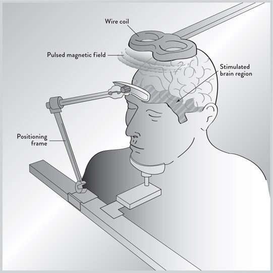
图6。我们看到经颅电磁扫描仪和脑磁图仪，它使用磁场而非无线电波穿透颅骨并确定大脑内思维的性质。磁场可以暂时沉默大脑的某些部分，使科学家能够安全地确定这些区域如何发挥作用，而无需依赖中风患者。
另一个对神经学家来说至关重要的工具是脑深部刺激（DBS）。彭菲尔德医生最初使用的探针相对粗糙。如今这些电极可以像头发丝一样细，并能到达大脑内部深处的特定区域。DBS不仅允许科学家定位大脑各部分的功能，还可以用于治疗精神疾病。DBS已经在帕金森病治疗中证明了其价值，在这种疾病中，大脑的某些区域过度活跃，通常会造成手部无法控制的震颤。
最近，这些电极瞄准了大脑的一个新区域（称为布罗德曼25区），该区域在对心理治疗或药物无反应的抑郁症患者中通常过度活跃。脑深部刺激为这些长期受苦的患者在经历数十年的折磨和痛苦后带来了几乎奇迹般的缓解。
每年，脑深部刺激都在发现新的用途。事实上，几乎所有主要的大脑疾病都在根据这种和其他新的脑部扫描技术进行重新审视。这有望成为诊断甚至治疗疾病的一个令人兴奋的新领域。
但也许神经学家工具包中最新且最令人兴奋的仪器是光遗传学，它曾被认为是科幻小说。就像魔法棒一样，它允许你通过向大脑照射光束来激活控制行为的特定通路。
令人难以置信的是，一个使细胞放电的光敏基因可以通过外科手术精确地直接插入神经元中。然后，通过打开光束，神经元被激活。更重要的是，这使科学家能够兴奋这些通路，这样你就可以通过拨动开关来开启和关闭某些行为。
虽然这项技术只有十年历史，但光遗传学已经成功地控制了某些动物行为。通过打开灯光开关，可以使果蝇突然飞走，蠕虫停止蠕动，老鼠疯狂地绕圈跑。猴子试验现在已经开始，甚至人体试验也在讨论中。人们非常希望这项技术能直接应用于治疗帕金森病和抑郁症等疾病。
像光遗传学一样，另一个引人注目的新发展是使大脑完全透明，这样其神经通路就能暴露在肉眼下。2013年，斯坦福大学的科学家宣布他们成功地使整个小鼠大脑以及人类大脑的部分变得透明。这一宣布如此惊人，以至于登上了《纽约时报》的头版，标题是”大脑如果冻般透明，供科学家探索”。
在细胞层面，单独观察的细胞是透明的，其所有微观组成部分都完全暴露。然而，一旦数十亿细胞聚集在一起形成像大脑这样的器官，脂质（脂肪、油、蜡和不溶于水的化学物质）的添加有助于使器官变得不透明。新技术的关键是在保持神经元完整的同时去除脂质。斯坦福的科学家通过将大脑放入水凝胶（主要由水制成的凝胶状物质）中来做到这一点，水凝胶与大脑的所有分子结合，除了脂质。通过将大脑放在带有电场的肥皂溶液中，溶液可以从大脑中冲洗出来，带走脂质，使大脑变得透明。然后添加染料可以使神经通路可见。这将有助于识别和绘制大脑的许多神经通路。
使组织透明并不是什么新技术，但获得使整个大脑透明所需的精确条件需要大量的智慧。“我烧毁和熔化了一百多个大脑，”该研究的主要科学家之一郑光勋博士坦承道。这项名为Clarity的新技术也可以应用于其他器官（甚至是多年前用福尔马林等化学物质保存的器官）。他已经制造出了透明的肝脏、肺部和心脏。这项新技术在整个医学领域都有着令人震惊的应用。特别是，它将加速定位大脑的神经通路，这是目前研究和资金投入的重点。
第一代大脑扫描的成功简直是壮观的。在它们出现之前，只有大约三十个左右的大脑区域是确定已知的。现在仅MRI机器就能识别大脑的二到三百个区域，为脑科学开辟了全新的前沿领域。在过去十五年中，有这么多来自物理学的新扫描技术被引入，人们可能会想：还有更多吗？答案是肯定的，但它们将是之前技术的变化和改进，而不是根本性的新技术。这是因为只有四种基本力——引力、电磁力、弱核力和强核力——统治着宇宙。（物理学家曾试图寻找第五种力的证据，但迄今为止所有这样的尝试都失败了。）
电磁力点亮了我们的城市，代表着电和磁的能量，是几乎所有新扫描技术的源泉（除了PET扫描，它受弱核力支配）。因为物理学家在处理电磁力方面有超过150年的经验，创造新的电场和磁场并没有什么神秘之处，所以任何新的大脑扫描技术很可能是对现有技术的新颖修改，而不是完全新的东西。与大多数技术一样，这些机器的体积和成本将下降，极大地增加这些精密仪器的广泛使用。物理学家已经在进行必要的基础计算，以使MRI机器能够装入手机中。同时，这些大脑扫描面临的根本挑战是分辨率，包括空间和时间分辨率。随着磁场变得更加均匀，电子设备变得更加敏感，MRI扫描的空间分辨率将会提高。目前，MRI扫描只能看到几分之一毫米内的点或体素。但每个点可能包含数十万个神经元。新的扫描技术应该进一步减小这个范围。这种方法的圣杯将是创造一台类似MRI的机器，能够识别单个神经元及其连接。
MRI机器的时间分辨率也受到限制，因为它们分析大脑中含氧血液的流动。机器本身具有很好的时间分辨率，但追踪血液流动会使其变慢。未来，其他MRI机器将能够定位与神经元放电更直接相关的不同物质，从而允许对心理过程进行实时分析。无论过去十五年的成功多么壮观，它们只是未来的一个预览。
历史上，随着每一个新的科学发现，都会出现一个新的大脑模型。最早的大脑模型之一是”小人”(homunculus)，一个生活在大脑内部并做出所有决定的小人。这个图像并不是很有用，因为它没有解释小人的大脑中发生了什么。也许小人的内部还藏着一个小人。
随着简单机械装置的出现，提出了另一个大脑模型：机器模型，比如带有机械轮子和齿轮的时钟。这个类比对像达芬奇这样的科学家和发明家很有用，他实际上设计了一个机械人。
在1800年代后期，当蒸汽动力正在开创新帝国时，出现了另一个类比，即蒸汽机的类比，其中能量流相互竞争。历史学家推测，这种液压模型影响了西格蒙德·弗洛伊德的大脑图像，在这个模型中，三种力量之间存在持续的斗争：自我(ego)（代表自我和理性思维）、本我(id)（代表被压抑的欲望）和超我(superego)（代表我们的良心）。在这个模型中，如果由于这三者之间的冲突而积累了太多压力，整个系统可能会出现倒退或全面崩溃。这个模型很巧妙，但正如弗洛伊德自己承认的，它需要在神经元层面对大脑进行详细研究，这将需要另一个世纪。
上世纪初，随着电话的兴起，出现了另一个类比——巨大的电话交换台。大脑是一个连接成庞大网络的电话线网格。意识是一长排电话接线员坐在一个大型开关面板前，不断地插拔电线。不幸的是，这个模型没有说明这些信息是如何连接在一起形成大脑的。
随着晶体管的兴起，另一种模型变得流行起来：计算机。老式的交换站被包含数亿个晶体管的微芯片所取代。也许”心智”只是运行在”湿件”（即脑组织而非晶体管）上的软件程序。这个模型至今仍很持久，但它有局限性。晶体管模型无法解释大脑如何执行需要纽约市大小的计算机才能完成的计算。而且大脑没有编程，没有Windows操作系统或奔腾芯片。（另外，装有奔腾芯片的个人电脑极其快速，但它有一个瓶颈。所有计算都必须通过这个单一处理器。大脑则相反。每个神经元的放电相对缓慢，但它通过拥有1000亿个神经元同时处理数据来弥补这一点。因此，缓慢的并行处理器可以胜过非常快速的单一处理器。）
最新的类比是互联网，它将数十亿台计算机连接在一起。在这幅图景中，意识是一种”涌现”现象，奇迹般地从数十亿神经元的集体行动中产生。（这幅图景的问题在于它对这个奇迹如何发生绝口不提。它将大脑的所有复杂性都归入混沌理论的范畴。）
毫无疑问，这些类比中的每一个都有真理的内核，但没有一个真正捕捉到大脑的复杂性。然而，我发现一个对大脑有用的类比（尽管仍不完美）是大型公司。在这个类比中，存在着庞大的官僚体系和权力等级，信息在不同办公室之间大量流动。但重要信息最终会到达首席执行官所在的指挥中心。最终决策就在那里做出。
如果将大脑比作大型公司的这个类比是有效的，那么它应该能够解释大脑的某些特殊特征：
• 大部分信息是”潜意识的”——也就是说，首席执行官幸福地不知道官僚体系内部不断流动的大量复杂信息。事实上，只有极少量的信息最终到达首席执行官的桌案，他可以比作前额皮质。首席执行官只需要知道重要到足以引起他注意的信息；否则，他会被无关信息的雪崩所麻痹。这种安排可能是进化的副产品，因为我们的祖先在面临紧急情况时，如果大脑中涌入大量多余的潜意识信息，会不堪重负。我们都幸运地不知道大脑中正在处理的数万亿次计算。在森林中遇到老虎时，人们不必为胃部、脚趾、头发等的状态而烦恼。需要知道的只是如何逃跑。
• “情绪”是在较低层级独立做出的快速决策。由于理性思考需要很多秒钟，这意味着通常无法对紧急情况做出理性反应；因此较低级别的大脑区域必须快速评估情况并做出决定——一种情绪，无需得到高层的许可。所以情绪（恐惧、愤怒、恐怖等）是在较低层级发出的即时红旗，由进化产生，用来警告指挥中心可能存在危险或严重情况。我们对情绪几乎没有意识控制。例如，无论我们如何练习对大量观众演讲，我们仍然会感到紧张。《绘制心智》一书的作者丽塔·卡特写道：“情绪根本不是感受，而是一套植根于身体的生存机制，进化出来让我们远离危险，推动我们走向可能有益的事物。”
• 不断有争夺首席执行官注意力的喧哗声。没有单一的小人、CPU或奔腾芯片做决定；相反，指挥中心内的各个子中心在不断相互竞争，争夺首席执行官的注意力。所以思维不是平滑、稳定的连续体，而是不同反馈回路相互竞争的嘈杂声。作为单一、统一整体持续做出所有决定的”我”的概念，是我们自己的潜意识创造的幻觉。在心理上我们感觉自己的心智是一个单一实体，连续、平滑地处理信息，完全掌控我们的决定。但从脑部扫描中呈现的图景与我们对自己心智的感知大相径庭。麻省理工学院教授、人工智能奠基人之一马文·明斯基告诉我，心智更像是一个”心智社会”，由不同的子模块组成，每个都试图与其他模块竞争。当我采访哈佛大学心理学家史蒂文·平克时，我问他意识是如何从这种混乱中涌现出来的。他说意识就像在我们大脑中肆虐的风暴。他在著作中进一步阐述：“我们直觉上感到有一个执行性的’我’坐在大脑的控制室里，扫描感官的屏幕并按下肌肉的按钮，这是一种幻觉。意识原来由分布在大脑各处的事件漩涡组成。这些事件争夺注意力，当一个过程压过其他过程时，大脑事后合理化结果，编造出一个单一的自我始终在掌控的印象。”
• 最终决策由指挥中心的CEO做出。几乎所有的官僚体系都致力于为CEO收集和汇总信息，CEO只与各部门的主管会面。CEO试图调解涌入指挥中心的所有冲突信息。责任止于此处。位于前额皮质的CEO必须做出最终决定。虽然动物的大多数决定是基于本能做出的，但人类在筛选来自感官的不同信息后做出更高层次的决定。
• 信息流是分层的。由于必须向CEO办公室上传或向支持人员下传的信息量巨大，信息必须以复杂的嵌套网络阵列排列，具有许多分支。想象一棵松树，指挥中心在顶部，金字塔状的分支向下流动，分叉成许多子中心。
当然，官僚体系和思维结构之间存在差异。任何官僚体系的第一条规则是”它会扩展以填满分配给它的空间”。但浪费能量是大脑无法承受的奢侈。大脑只消耗大约二十瓦的功率（相当于一个暗淡灯泡的功率），但这可能是它在身体功能失调之前能消耗的最大能量。如果产生更多热量，就会造成组织损伤。因此，大脑不断使用捷径来节约能量。我们将在本书中看到进化在我们不知情的情况下精心制作的聪明而巧妙的省力装置。
每个人都知道”眼见为实”这句话。然而，我们看到的很多东西实际上是幻觉。例如，当我们看到典型的风景时，它看起来像是平滑的、电影般的全景。实际上，我们的视野中有一个巨大的空洞，对应于视网膜中视神经的位置。我们应该在看任何地方时都看到这个巨大的丑陋黑点。但我们的大脑通过遮盖它、平均化它来填补这个空洞。这意味着我们视觉的一部分实际上是虚假的，由我们的潜意识制造出来欺骗我们。
另外，我们只能清晰地看到视野的中心，称为中央凹。外围部分是模糊的，为了节约能量。但中央凹非常小。为了用微小的中央凹捕获尽可能多的信息，眼睛不断快速转动。这种眼睛快速、颤动的运动称为扫视(saccades)。这些都是在潜意识下完成的，给我们造成视野清晰聚焦的错觉。
当我还是个孩子，第一次看到显示电磁波谱真实面貌的图表时，我震惊了。我完全没有意识到电磁波谱的巨大部分（例如红外线、紫外线、X射线、伽马射线）对我们来说是完全不可见的。我开始意识到我用眼睛看到的只是现实的一个微小、粗糙的近似。（有句古话：“如果外表和本质是同一回事，就不需要科学了。”）我们的视网膜中有传感器只能检测红、绿、蓝三种颜色。这意味着我们从未真正看过黄色、棕色、橙色和许多其他颜色。这些颜色确实存在，但我们的大脑只能通过混合不同数量的红、绿、蓝来近似它们。（如果你仔细观察老式彩色电视屏幕，你就能看到这一点。你只看到红、绿、蓝点的集合。彩色电视实际上是一种幻觉。）
我们的眼睛还欺骗我们，让我们以为可以看到深度。我们眼睛的视网膜是二维的，但因为我们有两只相隔几英寸的眼睛，左脑和右脑合并这两个图像，给我们第三维度的错觉。对于更远的物体，我们可以通过观察当我们移动头部时它们如何移动来判断物体有多远。这叫做视差(parallax)。
（这种视差解释了孩子们有时抱怨”月亮在跟着我”的事实。因为大脑难以理解像月亮这样遥远物体的视差，月亮似乎总是在他们”后面”固定距离处，但这只是大脑走捷径造成的幻觉。）
基于公司等级制度的这种图景与大脑实际结构偏离的一种方式可以在裂脑患者的奇特案例中看到。大脑的一个不寻常特征是它有两个几乎相同的半部分，或半球，即左半球和右半球。科学家们长期以来一直想知道为什么大脑有这种不必要的冗余，因为即使完全移除整个半球，大脑仍然可以运作。正常的公司等级制度没有这种奇怪的特征。此外，如果每个半球都有意识，这是否意味着我们在一个头骨内有两个独立的意识中心？
加州理工学院的Roger W. Sperry博士因证明大脑的两个半球不是彼此的精确复制品，而是实际上执行不同职能而获得1981年诺贝尔奖。这一结果在神经学界引起轰动（同时也催生了声称将左脑、右脑二分法应用于生活的可疑自助书籍的家庭手工业）。
斯佩里博士正在治疗癫痫患者，他们有时会遭受大发作性癫痫，这种癫痫通常是由两个大脑半球之间失控的反馈回路引起的。就像麦克风因为反馈回路而在我们耳中尖叫一样，这些癫痫发作可能会危及生命。斯佩里博士开始切断连接大脑两个半球的胼胝体，使它们不再在身体左右两侧之间交流和共享信息。这通常能阻止反馈回路和癫痫发作。
起初，这些裂脑患者看起来完全正常。他们很清醒，能够进行自然的对话，仿佛什么都没有发生。但对这些个体的仔细分析表明，他们确实有些非常不同的地方。
正常情况下，大脑半球相互补充，思想在两者之间来回移动。左脑更具分析性和逻辑性。语言技能位于左脑，而右脑更具整体性和艺术性。但左脑是主导者，做出最终决定。指令通过胼胝体从左脑传递到右脑。但如果这种连接被切断，意味着右脑现在摆脱了左脑的专制统治。也许右脑可以有自己的意志，违背主导左脑的愿望。
简而言之，可能有两个意志在一个颅骨内活动，有时为了控制身体而斗争。这创造了一种奇异的情况，左手（由右脑控制）开始独立于你的意愿行事，仿佛它是一个外来的附肢。
有一个记录在案的案例，一个男人正要用一只手拥抱妻子，却发现另一只手有完全不同的计划。它给了她脸上一记右勾拳。另一位女士报告说，她会用一只手挑选一件裙子，却看到另一只手抓了一套完全不同的服装。与此同时，一位男士晚上难以入睡，担心他那只叛逆的手可能会勒死他。
有时，裂脑患者认为他们生活在卡通片中，一只手努力控制另一只手。医生有时称这为奇爱博士综合征(Dr. Strangelove syndrome)，因为电影中有一个场景，其中一只手必须与另一只手斗争。
斯佩里博士在对裂脑患者进行详细研究后，最终得出结论，可能有两个不同的心智在一个大脑中运作。他写道，每个半球都”确实是一个有自身权利的意识系统，感知、思考、记忆、推理、意愿和情感表达，都在特有的人类水平上，而且…左右半球可能同时具有意识，处于不同的，甚至相互冲突的心理体验中，这些体验并行运行。”
当我采访加州大学圣巴巴拉分校的迈克尔·加扎尼加博士——裂脑患者方面的权威时，我问他如何进行实验来测试这个理论。有多种方法可以分别与每个半球交流而不让另一个半球知道。例如，可以让受试者戴上特殊眼镜，在眼镜上分别向每只眼睛显示问题，这样向每个半球提出问题就很容易。困难的部分是试图从每个半球获得答案。由于右脑不能说话（语言中枢只位于左脑），很难从右脑获得答案。加扎尼加博士告诉我，为了了解右脑在想什么，他创造了一个实验，让（沉默的）右脑可以通过使用拼字游戏字母来”说话”。
他首先询问患者的左脑毕业后想做什么。患者回答说他想成为一名制图员。但当（沉默的）右脑被问到同样的问题时，事情变得有趣了。右脑拼出了这些词：“汽车赛车手。”主导左脑不知道的是，右脑秘密地对未来有完全不同的计划。右脑真的有自己的想法。
丽塔·卡特写道，“这可能的含义令人震惊。它表明我们可能都在颅骨中携带着一个沉默的囚徒，具有与我们认为自己是的日常实体完全不同的个性、抱负和自我意识。”
也许”在他内心深处，有人渴望获得自由”这句常听到的话是有道理的。这意味着两个半球甚至可能有不同的信仰。例如，神经学家V.S.拉马钱德兰描述了一位裂脑患者，当被问及是否是信徒时，他说自己是无神论者，但他的右脑宣称自己是信徒。显然，同一个大脑中可能存在两种对立的宗教信仰。拉马钱德兰继续说道：“如果那个人死了，会发生什么？一个半球上天堂，另一个下地狱吗？我不知道这个问题的答案。”
（因此，可以想象，一个具有裂脑人格的人可能同时既是共和党人又是民主党人。如果你问他会投票给谁，他会给你左脑的候选人，因为右脑不能说话。但你可以想象当他必须用一只手拉投票杆时投票亭内的混乱。）
一位花费了大量时间并进行深入研究来理解潜意识问题的人是贝勒医学院的神经科学家大卫·伊格曼博士。当我采访他时，我问他：如果我们大部分的心理过程都是潜意识的，那么为什么我们对这个重要事实一无所知？他举了一个例子：一个年轻的国王继承了王位，把王国里的一切都归功于自己，但对维持王位所必需的成千上万的工作人员、士兵和农民一无所知。
我们对政治家、婚姻伴侣、朋友和未来职业的选择都受到我们无意识因素的影响。（例如，他说，这是一个奇怪的结果：“叫丹尼斯的人成为牙医的可能性特别大，而叫劳拉或劳伦斯的人更可能成为律师，叫乔治或乔治娜的人更可能成为地质学家。”）这也意味着我们认为的”现实”只是大脑为填补空白而做出的近似。我们每个人看到的现实都略有不同。例如，他指出，“至少15%的人类女性拥有基因突变，这给了她们额外的（第四种）颜色感光受体类型——这使她们能够区分对我们这些只有三种颜色感光受体的大多数人来说看起来完全相同的颜色。”
显然，我们越了解思维的机制，就会产生越多的问题。当意识的指挥中心面对叛逆的影子指挥中心时，大脑中究竟发生了什么？如果意识可以被分成两半，我们所说的”意识”到底是什么意思？意识与”自我”和”自我意识”之间的关系是什么？
如果我们能够回答这些困难的问题，那么也许这将为理解非人类意识铺平道路，例如机器人和外太空外星人的意识，这些可能与我们的完全不同。
所以现在让我们对这个看似复杂的问题提出一个明确的答案：什么是意识？
人的心灵能够承载一切……因为一切都在其中，既有过去的一切，也有未来的一切。
—约瑟夫·康拉德
意识甚至可以让最严谨的思想家陷入胡言乱语的混乱之中。
—科林·麦金
意识的概念几个世纪以来一直吸引着哲学家，但直到今天，它仍然抗拒简单的定义。哲学家大卫·查默斯已经编目了超过两万篇关于这个主题的论文；在科学领域，从来没有如此多的人投入如此多的精力却产生如此少的共识。十七世纪思想家戈特弗里德·莱布尼茨曾经写道：“如果你能把大脑放大到磨坊的大小并在里面走来走去，你也找不到意识。”
一些哲学家怀疑意识理论是否可能。他们声称意识永远无法被解释，因为一个物体永远无法理解自己，所以我们甚至没有解决这个令人困惑问题的心理能力。哈佛心理学家史蒂文·平克写道：“我们看不到紫外线。我们无法在大脑中旋转四维物体。也许我们无法解决自由意志和感知力等难题。”
事实上，在二十世纪的大部分时间里，心理学的主导理论之一——行为主义，完全否认了意识的重要性。行为主义基于这样的观念：只有动物和人类的客观行为值得研究，而不是心理的主观内在状态。
其他人已经放弃了定义意识的尝试，只是简单地描述它。精神病学家朱利奥·托诺尼说过：“每个人都知道意识是什么：它是每天晚上当你陷入无梦睡眠时离开你，第二天早上当你醒来时又回到你身边的东西。”
尽管意识的本质已经被辩论了几个世纪，但几乎没有解决方案。鉴于物理学家创造了许多使大脑科学取得爆炸性进展成为可能的发明，也许遵循物理学的例子来重新审视这个古老问题会很有用。
当物理学家试图理解某些东西时，他首先收集数据，然后提出一个”模型”，这是他所研究对象的简化版本，捕捉其基本特征。在物理学中，模型由一系列参数（例如温度、能量、时间）描述。然后物理学家使用模型通过模拟其运动来预测其未来演化。事实上，世界上一些最大的超级计算机被用来模拟模型的演化，这些模型可以描述质子、核爆炸、天气模式、大爆炸和黑洞中心。然后你创建一个更好的模型，使用更复杂的参数，并在时间中模拟它。
例如，当艾萨克·牛顿困惑于月球的运动时，他创建了一个最终会改变人类历史进程的简单模型：他设想向空中投掷一个苹果。他推理道，你投掷苹果的速度越快，它就会飞得越远。事实上，如果你投掷得足够快，它会完全环绕地球，甚至可能回到原点。然后，牛顿声称，这个模型代表了月球的路径，所以指导苹果环绕地球运动的力与指导月球的力是相同的。
但是这个模型本身仍然没有用处。关键的突破出现在牛顿能够使用他的新理论来模拟未来，计算运动物体的未来位置时。这是一个困难的问题，需要他创造一个全新的数学分支，叫做微积分。使用这种新数学，牛顿随后能够预测不仅是月球的轨迹，还有哈雷彗星和行星的轨迹。从那时起，科学家们就使用牛顿定律来模拟运动物体的未来路径，从炮弹、机器、汽车和火箭到小行星和流星，甚至恒星和星系。
模型的成功或失败取决于它如何忠实地再现原始的基本参数。在这种情况下，基本参数是苹果和月球在空间和时间中的位置。通过让这个参数演化（即，让时间向前移动），牛顿首次在历史上解锁了运动物体的作用，这是科学中最重要的发现之一。
模型是有用的，直到它们被由更好参数描述的更准确的模型所取代。爱因斯坦用一个基于新参数——空间和时间曲率的新模型取代了牛顿关于作用在苹果和月球上的力的图景。苹果移动不是因为地球对它施加了力，而是因为空间和时间的结构被地球拉伸了，所以苹果只是沿着弯曲时空的表面移动。由此，爱因斯坦随后能够模拟整个宇宙的未来。现在，通过计算机，我们可以将这个模型的模拟运行到未来，并创造出展现黑洞碰撞的华丽图片。
现在让我们将这个基本策略纳入一个新的意识理论中。
我从神经学和生物学领域中关于意识的先前描述中提取了片段，以便如下定义意识：
意识是使用多个反馈回路在各种参数中（例如，在温度、空间、时间以及与他人的关系中）创建世界模型的过程，以实现目标（例如，寻找配偶、食物、庇护所）。
我称这为”时空意识理论”，因为它强调这样的观点：动物主要在空间和彼此之间的关系中创建世界模型，而人类则超越了这一点，在时间的关系中创建世界模型，包括向前和向后。
例如，意识的最低层次是第0级，其中有机体是静止的或移动能力有限，并使用少数参数中的反馈回路创建其位置模型（例如，温度）。例如，意识的最简单层次是恒温器。它自动打开空调或加热器来调节房间温度，无需任何帮助。关键是一个反馈回路，如果温度过热或过冷就打开开关。（例如，金属受热时膨胀，所以如果金属条膨胀超过某个点，恒温器可以打开开关。）
每个反馈回路注册”一个意识单位”，所以恒温器将有一个第0级意识的单位，即第0级：1。
通过这种方式，我们可以根据用于创建世界模型的反馈回路的数量和复杂性来数字化地排列意识。意识不再是一个由未定义的循环概念组成的模糊集合，而是一个可以数字化排列的层次系统。例如，细菌或花朵有更多的反馈回路，所以它们将有更高层次的第0级意识。具有十个反馈回路（测量温度、湿度、阳光、重力等）的花朵将具有第0级：10的意识。
能够移动并具有中枢神经系统的有机体具有第I级意识，其中包括一组新的参数来测量它们不断变化的位置。第I级意识的一个例子是爬行动物。它们有如此多的反馈回路，以至于它们发展出中枢神经系统来处理它们。爬行动物大脑将有大约一百个或更多的反馈回路（控制它们的嗅觉、平衡感、触觉、听觉、视觉、血压等，每一个都包含更多的反馈回路）。例如，仅视觉就涉及大量的反馈回路，因为眼睛可以识别颜色、运动、形状、光强度和阴影。同样，爬行动物的其他感官，如听觉和味觉，需要额外的反馈回路。这些众多反馈回路的总和创造了爬行动物在世界中位置的心理图像，以及其他动物（例如，猎物）的位置。第I级意识反过来主要由爬行动物大脑控制，位于人类头部的后部和中央。
接下来我们有第II级意识，其中有机体不仅在空间中而且与他人的关系中创建它们位置的模型（即，它们是具有情感的社会动物）。第II级意识的反馈回路数量呈指数级爆炸，所以引入这种意识类型的新数字排名是有用的。形成联盟、发现敌人、服务于雄性领袖等，都是需要大幅扩展大脑的非常复杂的行为，所以第II级意识与边缘系统形式的大脑新结构的形成相吻合。如前所述，边缘系统包括海马体（用于记忆）、杏仁核（用于情感）和丘脑（用于感觉信息），所有这些都为创建与他人关系的模型提供了新的参数。因此，反馈回路的数量和类型发生了变化。
我们将第二级意识的程度定义为动物与其群体成员进行社会互动所需的不同反馈回路的总数。遗憾的是，动物意识的研究极其有限，因此在编录动物彼此进行社会交流的所有方式方面，几乎没有完成什么工作。但作为粗略的初步估计，我们可以通过计算其群体或族群中同伴动物的数量，然后列出该动物与每个同伴进行情感互动的总方式数来估算第二级意识。这将包括识别对手和朋友、与他人建立纽带、互惠帮助、建立联盟、了解自己的地位和他人的社会等级、尊重上级的地位、展示对下级的权力、策划在社会阶梯上的晋升等。（我们将昆虫排除在第二级之外，因为尽管它们与蜂巢或群体成员有社会关系，但据我们所知，它们没有情感。）
尽管缺乏动物行为的实证研究，我们可以通过列出动物能够表现出的不同情感和社会行为的总数，为第二级意识给出一个非常粗略的数值等级。例如，如果一个狼群由十只狼组成，每只狼都用十五种不同的情感和手势与其他所有狼互动，那么它的意识水平作为初步近似值，就是两者的乘积，即150，因此它将具有第二级:150意识。这个数字既考虑了它必须互动的其他动物数量，也考虑了它能与每一个动物交流的方式数量。这个数字只是近似地表示动物能够展示的社会互动总数，随着我们对其行为了解的增加，这个数字无疑会发生变化。
（当然，因为进化从来不是干净利落和精确的，所以我们必须解释一些注意事项，比如独居狩猎的社会性动物的意识水平。我们将在注释中说明。）
在这个意识框架下，我们看到人类并非独一无二，意识存在一个连续谱。正如查尔斯·达尔文曾经评论的那样，“人类与高等动物之间的差异，尽管很大，但肯定是程度上的差异，而非性质上的差异。”但是什么将人类意识与动物意识区分开来？人类在动物王国中是唯一理解明天概念的。与动物不同，我们经常问自己”如果…会怎样？“展望未来几周、几个月甚至几年，所以我认为第三级意识创造了一个关于自己在世界中位置的模型，然后通过做出粗略预测来模拟它的未来。我们可以总结如下：
人类意识是意识的一种特定形式，它创造一个世界模型，然后通过评估过去来模拟未来，从而在时间中模拟它。这需要调节和评估许多反馈回路，以便做出决定来实现目标。
当我们达到第三级意识时，有如此多的反馈回路，我们需要一个CEO来筛选它们，以便模拟未来并做出最终决定。因此，我们的大脑与其他动物的大脑不同，特别是在扩展的前额叶皮层方面，它位于前额后面，允许我们”看到”未来。
哈佛心理学家丹尼尔·吉尔伯特博士写道：“人类大脑的最大成就是其想象现实领域中不存在的物体和情节的能力，正是这种能力使我们能够思考未来。正如一位哲学家所指出的，人类大脑是一台’预期机器’，’创造未来’是它最重要的功能。”
通过脑部扫描，我们甚至可以为大脑中模拟未来发生的精确区域提出一个候选位置。神经学家迈克尔·加扎尼加指出，“外侧前额叶皮层中的区域10（内部颗粒层IV）在人类中几乎是猿类的两倍大。区域10涉及记忆和计划、认知灵活性(cognitive flexibility)、抽象思维、启动适当行为和抑制不适当行为、学习规则，以及从通过感官感知的信息中挑选出相关信息。”（在本书中，我们将把这个决策集中的区域称为背外侧前额叶皮层(dorsolateral prefrontal cortex)，尽管与大脑的其他区域有一些重叠。）
虽然动物可能对自己在空间中的位置有明确的理解，有些动物在某种程度上能够意识到他人，但不清楚它们是否系统地为未来制定计划并理解”明天”的概念。大多数动物，即使是具有发达边缘系统的社会性动物，主要依靠本能而不是系统地规划未来来对情况（例如捕食者或潜在配偶的出现）做出反应。
例如，哺乳动物不会通过准备冬眠来为冬天做计划，而是主要随着温度下降遵循本能。有一个反馈回路调节它们的冬眠。它们的意识被来自感官的信息所主导。没有证据表明它们在准备冬眠时系统地筛选各种计划和方案。捕食者在使用狡猾和伪装来跟踪毫无戒备的猎物时，确实会预期未来事件，但这种计划仅限于本能和狩猎的持续时间。灵长类动物擅长制定短期计划（例如寻找食物），但没有迹象表明它们的计划超过几个小时。
人类是不同的。虽然我们在许多情况下确实依赖本能和情感，但我们也不断地分析和评估来自许多反馈循环的信息。我们通过运行模拟来做到这一点，有时甚至超越我们自己的生命周期，甚至延伸到未来数千年。运行模拟的目的是评估各种可能性，以做出实现目标的最佳决策。这发生在前额叶皮层，它允许我们模拟未来并评估各种可能性，以便规划最佳行动方案。
这种能力的进化有几个原因。首先，拥有窥视未来的能力具有巨大的进化优势，比如躲避捕食者、寻找食物和配偶。其次，它允许我们在几种不同的结果中进行选择，并选择最好的一个。
第三，当我们从0级到1级再到2级时，反馈循环的数量呈指数级爆炸式增长，所以我们需要一个”CEO”来评估所有这些冲突、竞争的信息。仅凭本能已经不够了。必须有一个中央机构来评估每一个反馈循环。这将人类意识与动物意识区分开来。这些反馈循环反过来通过将它们模拟到未来来评估，以获得最佳结果。如果我们没有CEO，就会出现混乱，我们就会感官超载。
一个简单的实验可以证明这一点。大卫·伊格曼描述了如何让一条雄性棘鱼遇到一条雌性鱼入侵其领地的情况。雄鱼会感到困惑，因为它想与雌鱼交配，但也想保卫自己的领地。结果，雄性棘鱼会同时攻击雌鱼，同时发起求偶行为。雄鱼陷入狂乱，试图同时追求和杀死雌鱼。
这对老鼠也有效。在一块奶酪前面放一个电极。如果老鼠靠得太近，电极就会电击它。一个反馈循环告诉老鼠吃奶酪，但另一个反馈循环告诉老鼠远离以避免被电击。通过调整电极的位置，你可以让老鼠摆动，在两个冲突的反馈循环之间撕扯。虽然人类大脑中有一个CEO来评估情况的利弊，但老鼠受两个冲突反馈循环的控制，来回摆动。（这就像关于驴子因为被放在两堆相等的干草之间而饿死的谚语。）
大脑究竟是如何模拟未来的？人类大脑被大量的感官和情感数据所淹没。但关键是通过建立事件之间的因果联系来模拟未来——也就是说，如果A发生，那么B就会发生。但如果B发生，那么C和D可能会产生。这引发了一系列连锁反应，最终创造出一个具有许多分支的可能级联未来树。前额叶皮层中的CEO评估这些因果树的结果，以做出最终决策。
假设你想抢银行。你能对这个事件进行多少次现实的模拟？要做到这一点，你必须考虑涉及警察、旁观者、报警系统、与同伙的关系、交通状况、检察官办公室等的各种因果联系。要成功模拟抢劫，可能需要评估数百个因果联系。
也可以用数字来衡量这种意识水平。比如说，给一个人一系列像上面那样的不同情况，并要求他模拟每种情况的未来。这个人在所有这些情况下能够建立的因果联系的总数可以统计出来。（一个复杂之处在于，一个人在各种可以想象的情况下可能建立的因果联系数量是无限的。为了绕过这个复杂问题，我们将这个数字除以从大型对照组获得的平均因果联系数。像智商考试一样，可以将这个数字乘以100。所以一个人的意识水平，例如，可能是3级：100，意味着这个人可以像普通人一样模拟未来事件。）
我们在下图中总结了这些意识水平：
不同物种的意识水平
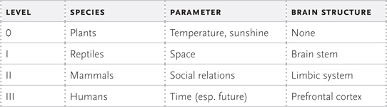
意识的时空理论。我们将意识定义为使用各种参数（例如，在空间、时间以及与他人的关系中）的多个反馈循环创建世界模型的过程，以实现一个目标。人类意识是一种特殊类型，涉及通过模拟未来和评估过去来调解这些反馈循环。
（注意这些类别对应于我们在自然界中发现的大致进化水平——例如，爬行动物、哺乳动物和人类。然而，也存在灰色地带，比如可能拥有不同意识水平微小方面的动物、进行一些基本规划的动物，甚至是相互交流的单细胞生物。这个图表只是为了给你一个关于意识如何在动物王国中组织的更大、全局的图景。）
所有理论都必须是可证伪的。时空意识理论面临的挑战是在这个框架内解释人类意识的所有方面。如果存在无法纳入这个理论的思维模式，它就可以被证伪。批评者可能会说，我们的幽默感如此反复无常和短暂，以至于无法解释。我们花大量时间与朋友一起笑或看喜剧演员表演，然而幽默似乎与我们对未来的模拟无关。但请考虑这一点。大部分幽默，比如讲笑话，都依赖于笑点。
当我们听到笑话时，情不自禁地会模拟未来并自己完成故事（即使我们没有意识到自己在这样做）。我们对物理世界和社会世界了解得足够多，能够预测结局，所以当笑话的包袱给出完全出乎意料的结论时，我们会爆发出笑声。幽默的本质在于我们对未来的模拟突然以令人惊讶的方式被打断。（这在历史上对我们的进化很重要，因为成功在一定程度上取决于我们模拟未来事件的能力。由于丛林生活充满了意想不到的事件，任何能够预见意外结果的人都有更好的生存机会。从这个角度来说，拥有发达的幽默感实际上是我们第三级意识和智能的一个指标；也就是模拟未来的能力。）
例如，W. C. 菲尔兹曾被问及关于青年社交活动的问题。有人问他：“你相信为年轻人开设俱乐部吗？”他回答说：“只有在善意失效时才相信。”
这个笑话之所以有包袱，只是因为我们在脑海中模拟了一个孩子们有社交俱乐部的未来，而W. C. 菲尔兹模拟的是一个不同的未来，涉及将俱乐部作为武器。（当然，如果一个笑话被解构了，它就失去了力量，因为我们已经在脑海中模拟了各种可能的未来。）
这也解释了每个喜剧演员都知道的事情：时机是幽默的关键。如果包袱抛得太快，大脑就没有时间模拟未来，所以就没有意想不到的体验。如果包袱抛得太晚，大脑已经有时间模拟各种可能的未来，所以包袱又失去了惊喜的元素。
（当然，幽默还有其他功能，比如与我们部落的其他成员建立联系。事实上，我们用幽默感来衡量他人的品格。这反过来对确定我们在社会中的地位至关重要。所以此外，笑声有助于定义我们在社会世界中的位置，即第二级意识。）
即使是看似琐碎的活动，如闲聊八卦或与朋友嬉戏，也必须在这个框架内得到解释。（如果火星人造访超市收银台，看到大量展示的八卦杂志，可能会得出八卦是人类主要活动的结论。这个观察并不算错。）
八卦对生存至关重要，因为社会互动的复杂机制在不断变化，所以我们必须理解这个不断变化的社会地形。这是第二级意识在起作用。但一旦我们听到一条八卦，就会立即运行模拟来确定这将如何影响我们在社区中的地位，这将我们带入第三级意识。事实上，数千年前，八卦是获取部落重要信息的唯一途径。一个人的生命往往取决于了解最新的八卦。
像”玩耍”这样看似多余的东西也是意识的一个基本特征。如果你问孩子们为什么喜欢玩耍，他们会说：“因为有趣。”但这引出了下一个问题：什么是有趣？实际上，当孩子们玩耍时，他们往往试图以简化的形式重现复杂的人类互动。人类社会极其复杂，对于正在发育的幼儿大脑来说过于复杂，所以孩子们运行成人社会的简化模拟，玩医生、警察和强盗、学校等游戏。每个游戏都是一个模型，允许孩子们尝试成人行为的一小部分，然后将该模型投射到未来。（同样，当成年人进行游戏时，比如扑克游戏，大脑不断创建各个玩家持有什么牌的模型，然后将该模型投射到未来，使用关于人们性格、虚张声势能力等的先前数据。象棋、纸牌和赌博等游戏的关键是模拟未来的能力。主要生活在当下的动物在游戏方面不如人类擅长，特别是涉及规划的游戏。幼年哺乳动物确实会进行某种形式的游戏，但这更多是为了锻炼、相互测试、练习未来的战斗以及建立即将到来的社会等级秩序，而不是模拟未来。）
我的时空意识理论也可能揭示另一个争议话题：智能。虽然智商考试声称测量”智能”，但智商考试实际上首先没有给出智能的定义。事实上，愤世嫉俗者可能有一定道理地声称，智商是”你在智商考试中表现如何”的衡量标准，这是循环论证。此外，智商考试因过于具有文化偏见而受到批评。然而，在这个新框架中，智能可能被视为我们对未来模拟的复杂性。因此，一个可能是辍学生、功能性文盲且在智商考试中得分极低的主谋罪犯，也可能远远超出警察的能力。智胜警察可能只需要能够运行更复杂的未来模拟。
人类可能是这个星球上唯一能够在所有意识层面上运作的生物。使用MRI扫描，我们可以分解每个意识层面涉及的不同结构。
对我们来说，第一层意识流主要是前额皮质和丘脑之间的相互作用。当我们在公园里悠闲漫步时，我们会意识到植物的气味、微风的感觉、阳光的视觉刺激等等。我们的感官将信号发送到脊髓、脑干，然后到丘脑，丘脑就像一个中继站，对刺激进行分类并将它们发送到大脑的各个皮质区域。例如，公园的图像被发送到大脑后部的枕叶皮质，而来自风的触觉被发送到顶叶。信号在相应的皮质中被处理，然后发送到前额皮质，我们最终在那里意识到所有这些感觉。
这在图7中有所说明。
虽然第一层意识使用感觉来创建我们在空间中物理位置的模型，第二层意识则创建我们在社会中位置的模型。
假设我们要去参加一个重要的鸡尾酒会，对我们工作至关重要的人物都会出席。当我们扫视房间，试图识别来自我们工作场所的人时，海马体（处理记忆）、杏仁核（处理情绪）和前额皮质（将所有这些信息整合）之间会发生激烈的相互作用。
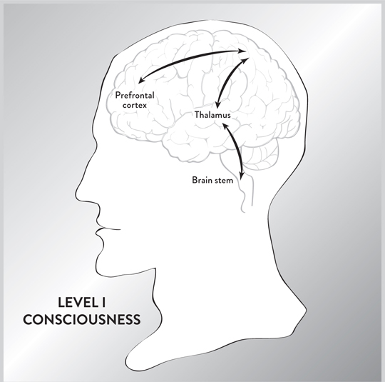
图7。在第一层意识中，感觉信息通过脑干传播，经过丘脑，到达大脑的各个皮质，最后到达前额皮质。因此，这种第一层意识流是由信息从丘脑流向前额皮质所创造的。
对于每个图像，大脑会自动附加一种情绪，如快乐、恐惧、愤怒或嫉妒，并在杏仁核中处理这种情绪。
如果你发现了你的主要竞争对手，你怀疑他在背后捅你一刀，恐惧情绪会被杏仁核处理，它会向前额皮质发送紧急信息，警告可能的危险。同时，信号被发送到你的内分泌系统，开始向血液中泵入肾上腺素和其他激素，从而增加心跳，为可能的战斗或逃跑反应做准备。
这在图8中有所说明。
但除了简单地识别他人之外，大脑还具有猜测他人想法的神奇能力。这被称为心理理论(Theory of Mind)，这是宾夕法尼亚大学的大卫·普雷马克博士首次提出的理论，即推断他人思想的能力。在任何复杂的社会中，任何能够正确猜测他人意图、动机和计划的人都比那些不能的人具有巨大的生存优势。心理理论(Theory of Mind)允许你与他人结成联盟，孤立你的敌人，巩固你的友谊，这大大增加了你的力量以及生存和交配的机会。一些人类学家甚至认为，掌握心理理论(Theory of Mind)对大脑的进化至关重要。
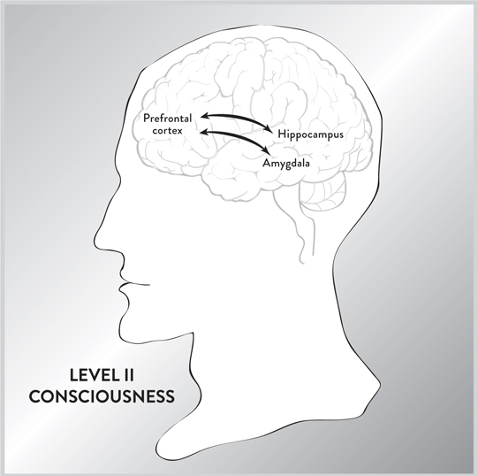
图8。情绪起源并在边缘系统中被处理。在第二层意识中，我们不断被感觉信息轰炸，但情绪是边缘系统对紧急情况的快速反应，不需要前额皮质的许可。海马体对处理记忆也很重要。因此，第二层意识的核心涉及杏仁核、海马体和前额皮质的反应。
但心理理论(Theory of Mind)是如何实现的呢？一个线索出现在1996年，贾科莫·里佐拉蒂、莱昂纳多·福加西和维托里奥·加莱塞博士发现了”镜像神经元”。这些神经元在你执行某项任务时会被激活，当你看到别人执行同样的任务时也会被激活。（镜像神经元对情绪和身体动作都会激活。如果你感受到某种情绪，并认为另一个人也感受到同样的情绪，那么镜像神经元就会被激活。）
镜像神经元对模仿和同理心至关重要，不仅让我们能够复制他人执行的复杂任务，还能体验那个人必须感受到的情绪。因此，镜像神经元可能对我们作为人类的进化至关重要，因为合作对于维系部落团结是必不可少的。
镜像神经元最初在猴子大脑的前运动区被发现。但从那时起，它们已经在人类的前额皮质中被发现。V.S.拉马钱德兰博士认为镜像神经元对赋予我们自我意识的力量至关重要，并总结说：“我预测镜像神经元将对心理学产生DNA对生物学的影响：它们将提供一个统一的框架，并有助于解释许多迄今为止仍然神秘且无法通过实验获得的心理能力。”（然而，我们应该指出，所有科学结果都必须经过测试和再次确认。毫无疑问，某些神经元正在执行这种涉及同理心、模仿等的关键行为，但关于这些镜像神经元的身份存在一些争论。例如，一些批评者声称，也许这些行为对许多神经元来说都是常见的，并不存在专门用于这种行为的单一类神经元。）
最高层次的意识，主要与智人相关联，是第三级意识，在这个层次上，我们建立世界模型并对未来进行模拟。我们通过分析人和事件的过往记忆，然后通过建立许多因果联系来形成”因果”树，从而模拟未来。当我们看着鸡尾酒会上的各种面孔时，开始问自己一些简单的问题：这个人如何能帮助我？房间里流传的八卦将来会如何发展？有人要对付我吗？
假设你刚刚失业，正在拼命寻找新工作。在这种情况下，当你在鸡尾酒会上与各种人交谈时，你的大脑会狂热地与你交谈的每个人模拟未来。你问自己：我如何能给这个人留下深刻印象？我应该提出什么话题来展示我的最佳状态？他能给我提供工作吗？
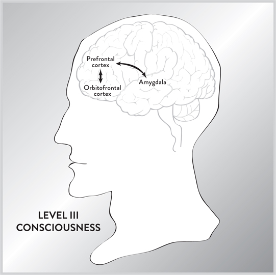
图9。模拟未来是第三级意识的核心，由背外侧前额叶皮层（大脑的CEO）调节，快乐中心与眶额叶皮层（抑制我们冲动的部分）之间存在竞争。这大致类似于弗洛伊德提出的良心与欲望之间斗争的概要。模拟未来的实际过程发生在前额叶皮层访问过去的记忆以预测未来事件时。（[插图来源2.3]）
最近的脑部扫描部分揭示了大脑如何模拟未来。这些模拟主要在背外侧前额叶皮层（大脑的CEO）中完成，使用过去的记忆。一方面，对未来的模拟可能产生令人向往和愉悦的结果，在这种情况下，大脑的快乐中心（伏隔核和下丘脑）会被激活。另一方面，这些结果也可能有负面影响，因此眶额叶皮层会介入警告我们可能的危险。然后，大脑的不同部分之间就未来产生斗争，这些未来可能有令人向往和不向往的结果。最终是背外侧前额叶皮层在这些部分之间进行调节并做出最终决定。（见图9。）（一些神经学家指出，这种斗争在某种程度上类似于弗洛伊德的自我、本我和超我之间的动态关系。）
如果意识的时空理论是正确的，那么它也为我们提供了自我意识的严格定义。我们应该能够给出一个可测试且有用的定义，而不是模糊的循环引用。我们将自我意识定义如下：
自我意识是创建世界模型并模拟你出现在其中的未来。
因此，动物具有一定的自我意识，因为如果它们要生存和交配，就必须知道自己的位置，但这主要受本能限制。
当大多数动物被放在镜子前时，它们要么忽视镜子，要么攻击镜子，没有意识到那是它们自己的影像。（这被称为”镜子测试”，可以追溯到达尔文。）然而，大象、类人猿、宽吻海豚、虎鲸和欧洲喜鹊等动物能够理解它们在镜子中看到的影像代表它们自己。
然而，人类向前迈出了巨大的一步，不断进行我们作为主要角色出现的未来模拟。我们不断想象自己面临不同的情况——约会、求职、转行——这些都不是由本能决定的。要阻止大脑模拟未来极其困难，尽管已经设计出精细的方法（例如冥想）来尝试做到这一点。
例如，白日梦主要包括我们演出不同的可能未来以实现目标。由于我们以了解自己的局限性和优势而自豪，不难将自己置于模型中并按下”播放”按钮，这样我们就开始演出假设情景，就像在虚拟剧本中当演员一样。
大脑可能有一个特定部分，其作用是统一来自两个半球的信号，创造平滑、连贯的自我感。达特茅斯学院的心理学家托德·希瑟顿博士认为，这个区域位于前额叶皮层内，被称为内侧前额叶皮层。生物学家卡尔·齐默博士写道：“内侧前额叶皮层可能对自我起到与海马体对记忆相同的作用……[它]可能持续缝合我们是谁的感觉。”换句话说，这可能是通往”我”概念的门户，是大脑的中心区域，融合、整合并编造我们是谁的统一叙述。（然而，这并不意味着内侧前额叶皮层是坐在我们大脑中控制一切的小人。）
如果这个理论是正确的，那么当我们无所事事地做白日梦，思考朋友和自己时，静息大脑应该比正常情况下更活跃，即使大脑感觉区域的其他部分很安静。事实上，脑部扫描证实了这一点。希瑟顿博士总结道：“大部分时间我们都在做白日梦——我们思考发生在我们身上的事情或我们对其他人的看法。所有这些都涉及自我反思。”
时空理论说，意识是由大脑的许多子单元拼凑而成的，每个子单元都在竞争创造世界模型，然而我们的意识感觉平滑连续。当我们都有”自我”不间断且始终掌控的感觉时，这怎么可能呢？
在上一章中，我们了解了裂脑患者的困境，他们有时要与字面意思上有自己想法的异己之手作斗争。看起来确实有两个意识中心生活在同一个大脑中。那么这一切是如何创造出我们拥有一个统一、连贯的”自我”存在于大脑中的感觉呢？
我向一个可能有答案的人提问：迈克尔·加扎尼加博士，他花了几十年时间研究裂脑患者的奇怪行为。他注意到，当裂脑患者的左脑面对似乎有两个独立的意识中心居住在同一个颅骨中这一事实时，无论多么愚蠢，都会简单地编造奇怪的解释。他告诉我，当面对明显的矛盾时，左脑会”虚构”一个答案来解释不便的事实。加扎尼加博士认为，这给了我们一种虚假的统一和完整感。他称左脑为”解释器”，它不断地想出想法来掩盖我们意识中的不一致和空白。
例如，在一个实验中，他只向患者的左脑闪示”红色”这个词，向右脑闪示”香蕉”这个词。（注意占主导地位的左脑因此不知道香蕉的存在。）然后要求受试者用左手（由右脑控制）拿起笔画画。自然地，他画了一幅香蕉的画。记住右脑能够做到这一点，因为它看到了香蕉，但左脑对香蕉被闪示给右脑一无所知。
然后他被问为什么画了香蕉。因为只有左脑控制语言，而左脑对香蕉一无所知，患者应该说”我不知道”。相反，他说：“用这只手画画最容易，因为这只手更容易向下拉。”加扎尼加博士注意到，左脑试图为这个不便的事实找一些借口，尽管患者对他的右手为什么画香蕉完全不知情。
加扎尼加博士总结道：“是左半球参与了人类在混乱中寻找秩序的倾向，试图将一切融入一个故事并放入一个语境中。似乎它被驱使着对世界结构进行假设，即使面对没有模式存在的证据。”
这就是我们统一”自我”感的来源。尽管意识是一个由竞争且经常矛盾的倾向组成的拼凑品，左脑忽略不一致性并掩盖明显的空白，以给我们一个单一”我”的平滑感觉。换句话说，左脑不断地找借口，其中一些是荒诞可笑的，来理解世界。它不断地问”为什么？“并编造借口，即使这个问题没有答案。
（我们进化出裂脑可能有进化原因。经验丰富的CEO经常鼓励他的助手在问题上采取对立立场，以鼓励彻底和深思熟虑的辩论。通常，正确的观点会从与错误想法的激烈互动中出现。同样，大脑的两半相互补充，对同一想法提供悲观/乐观或分析/整体的分析。因此大脑的两半相互作用。实际上，正如我们将看到的，当两个大脑之间的这种相互作用出现问题时，某些形式的精神疾病可能会出现。）
现在我们有了一个意识的工作理论，是时候利用它来理解神经科学将如何在未来发展了。现在正在神经科学中进行一系列广泛而卓越的实验，这些实验正在根本性地改变整个科学景观。利用电磁学的力量，科学家现在可以探测人们的思想，发送心灵感应信息，用意念控制我们周围的物体，记录记忆，也许还能增强我们的智力。
这项新技术最直接和实际的应用也许是曾经被认为是绝对不可能的东西：心灵感应。
大脑，无论你是否喜欢，都是一台机器。科学家得出这个结论，不是因为他们是机械主义的扫兴者，而是因为他们积累了证据表明意识的每个方面都可以与大脑联系起来。
—史蒂文·平克
历史学家认为，哈里·胡迪尼可能是有史以来最伟大的魔术师。他从锁定密封房间的惊人逃脱和玩命特技让观众瞠目结舌。他能让人消失，然后在最意想不到的地方重新出现。他还能读取人们的心思。
至少看起来是这样。
胡迪尼费尽心思解释他所做的一切都是幻觉，一系列巧妙的手法技巧。他会提醒人们，读心术是不可能的。他如此愤怒于不道德的魔术师通过表演廉价的客厅戏法和降神会来欺骗富有的赞助人，以至于他甚至在全国各地揭露骗子，承诺他可以复制这些江湖骗子表演的任何读心术壮举。他甚至在《科学美国人》组织的委员会中，该委员会向任何能够积极证明他们具有超能力的人提供丰厚奖励。（从来没有人领取过奖励。）
胡迪尼相信心灵感应是不可能的。但科学正在证明胡迪尼是错误的。
心灵感应现在是世界各地大学激烈研究的主题，科学家们已经能够使用先进的传感器读取一个人大脑中的单个词汇、图像和思想。这可能会改变我们与中风和事故受害者的交流方式，这些人被”锁定”在自己的身体里，除了通过眨眼之外无法表达他们的想法。但这只是开始。心灵感应也可能彻底改变我们与计算机和外部世界的互动方式。
事实上，在最近的”未来5年5大预测”中，该预测预示了未来五年的五项革命性发展，IBM科学家声称我们将能够在精神上与计算机交流，可能取代鼠标和语音命令。这意味着使用大脑的力量给人们打电话、支付信用卡账单、驾驶汽车、安排约会、创作美妙的交响乐和艺术作品等。可能性是无限的，似乎每个人——从计算机巨头、教育工作者、视频游戏公司和音乐工作室到五角大楼——都在聚焦这项技术。
真正的心灵感应，在科幻和奇幻小说中出现的那种，在没有外部辅助的情况下是不可能的。我们知道，大脑是电性的。一般来说，任何时候电子被加速，它都会发出电磁辐射。大脑内振荡的电子也是如此，会广播无线电波。但这些信号太微弱，无法被他人检测到，即使我们能够感知这些无线电波，也很难理解它们。进化没有赋予我们解读这些随机无线电信号集合的能力，但计算机可以。科学家们已经能够使用脑电图扫描获得一个人思想的粗略近似值。受试者会戴上带有脑电图传感器的头盔，专注于某些图片——比如汽车的图像。然后记录每个图像的脑电图信号，最终创建了一个基本的思想词典，在人的思想和脑电图图像之间建立一对一的对应关系。然后，当一个人看到另一辆汽车的图片时，计算机会识别脑电图模式为来自汽车的信号。
脑电图传感器的优势在于它们是非侵入性的且快速。你只需将包含许多电极的头盔放在大脑表面，脑电图就能快速识别每毫秒变化的信号。但正如我们所见，脑电图传感器的问题是电磁波在穿过颅骨时会恶化，很难确定其精确来源。这种方法可以判断你是否在想汽车或房子，但无法重建汽车的图像。这就是杰克·加兰特博士的工作发挥作用的地方。
这项研究的中心是加州大学伯克利分校，我多年前在那里获得了理论物理学博士学位。我有幸参观了加兰特博士的实验室，他的团队完成了一项曾被认为不可能的壮举：为人们的思想录像。“这是重建内部图像的一个重大飞跃。我们正在为我们心中的电影打开一扇窗户，”加兰特说。
当我参观他的实验室时，我注意到的第一件事是一群年轻、热情的博士后和研究生挤在他们的电脑屏幕前，专注地观看从某人的大脑扫描中重建的视频图像。与加兰特的团队交谈，你会感觉自己正在见证科学史的创造。
加兰特向我解释，首先受试者平躺在担架上，慢慢头部先进入一台巨大、最先进的MRI机器，成本超过300万美元。然后向受试者展示几个电影片段（比如YouTube上readily available的电影预告片）。为了积累足够的数据，受试者必须一动不动地坐着观看这些片段数小时，这确实是一项艰巨的任务。我问其中一位博士后西岛仁志博士，他们如何找到愿意躺着不动数小时，只有视频片段消磨时间的志愿者。他说房间里的人，研究生和博士后，自愿成为自己研究的实验对象。
当受试者观看电影时，MRI机器创建大脑内血流的3D图像。MRI图像看起来像一个包含三万个点或体素的巨大集合。每个体素代表神经能量的一个精确点，点的颜色对应于信号强度和血流。红点代表大神经活动点，而蓝点代表较少活动的点。（最终图像看起来很像大脑形状的数千个圣诞彩灯。立即你可以看到大脑在观看这些视频时将大部分精神能量集中在位于大脑后部的视觉皮层。）
加兰特的MRI机器如此强大，它可以识别大脑的二到三百个不同区域，平均可以拍摄每个大脑区域有一百个点的快照。（未来几代MRI技术的一个目标是通过增加每个大脑区域的点数来提供更清晰的分辨率。）
起初，这个由彩色点组成的三维集合看起来像是无意义的信息。但经过多年研究，Gallant博士和他的同事们开发出了一个数学公式，开始找到图片的某些特征（边缘、纹理、强度等）与MRI体素之间的关系。例如，如果你观察一个边界，你会注意到这是一个分隔明暗区域的区域，因此边缘会产生某种特定的体素模式。通过让一个又一个受试者观看如此庞大的电影片段库，这个数学公式得到了完善，使计算机能够分析各种图像如何转换为MRI体素。最终，科学家们能够确定某些MRI体素模式与每张图片中的特征之间的直接相关性。
此时，受试者会观看另一个电影预告片。计算机分析在观看过程中产生的体素，重新创建原始图像的粗略近似。（计算机从一百个电影片段中选择最接近受试者刚刚看到的图像，然后合并图像以创建一个接近的近似。）通过这种方式，计算机能够创建一个模糊的视频，显示通过你头脑的视觉图像。Gallant博士的数学公式如此多才多艺，它可以获取MRI体素的集合并将其转换为图片，或者可以做相反的事情，获取图片然后将其转换为MRI体素。
我有机会观看了Gallant博士团队创建的视频，非常令人印象深刻。观看它就像透过墨镜观看有面孔、动物、街景和建筑物的电影。虽然你无法看到每张脸或动物的细节，但你可以清楚地识别你所看到的对象类型。
这个程序不仅可以解码你正在看的东西，还可以解码在你头脑中流传的想象图像。假设你被要求想象《蒙娜丽莎》。我们从MRI扫描中知道，即使你没有用眼睛观看这幅画，大脑的视觉皮层也会被激活。然后Gallant博士的程序在你想象《蒙娜丽莎》时扫描你的大脑，并翻阅其图片数据文件，试图找到最接近的匹配。在我看到的一个实验中，计算机选择了女演员萨尔玛·海耶克的照片作为《蒙娜丽莎》的最接近近似。当然，普通人可以轻松识别数百张面孔，但计算机分析了一个人大脑中的图像，然后从其掌握的数百万张随机图片中挑选出这张图片的事实仍然令人印象深刻。
整个过程的目标是创建一个准确的词典，让你能够快速将现实世界中的对象与大脑中的MRI模式匹配。一般来说，详细匹配非常困难，需要数年时间，但一些类别实际上很容易通过翻阅一些照片来读取。巴黎法兰西学院的Stanislas Dehaene博士在检查顶叶的MRI扫描时（数字在此处被识别），他的一名博士后学生随口提到，仅仅通过快速扫描MRI模式，他就能说出受试者正在看什么数字。事实上，某些数字在MRI扫描上创建了独特的模式。他指出，“如果你在这个区域取200个体素，查看其中哪些是活跃的，哪些是不活跃的，你可以构建一个机器学习设备，解码内存中保存的数字。”
这留下了一个问题：我们何时能够拥有我们思想的图片质量视频。不幸的是，当一个人在可视化图像时，信息会丢失。大脑扫描证实了这一点。当你比较大脑看花时的MRI扫描和大脑想花时的MRI扫描时，你立即看到第二张图像的点远少于第一张。因此，尽管这项技术在未来几年将大大改善，但它永远不会完美。（我曾经读过一个短篇故事，一个男人遇到一个精灵，精灵提供创造这个人能想象的任何东西。这个男人立即要求一辆豪华汽车、一架喷气式飞机和一百万美元。起初，这个男人欣喜若狂。但当他详细查看这些物品时，他看到汽车和飞机都没有引擎，现金上的图像都是模糊的。一切都没有用。这是因为我们的记忆只是真实事物的近似。）
但鉴于科学家们开始解码大脑中MRI模式的速度，我们很快就能真正读取在头脑中流传的词语和思想吗？
事实上，在Gallant实验室旁边的建筑里，Brian Pasley博士和他的同事们正在字面意思上读取思想——至少在原理上。那里的一名博士后学生Sara Szczepanski博士向我解释了他们如何能够识别头脑中的词语。
科学家们使用了称为ECOG（皮层电图）的技术，这是对EEG扫描产生的混乱信号的巨大改进。ECOG扫描在准确性和分辨率方面是前所未有的，因为信号直接从大脑记录，不会通过颅骨。另一面是必须移除部分颅骨，将包含六十四个电极的八乘八网格网状物直接放置在暴露的大脑顶部。
幸运的是，他们获得了在癫痫患者身上进行ECOG扫描实验的许可，这些患者遭受着使人衰弱的癫痫发作。ECOG网状物被放置在患者的大脑上，同时附近的加州大学旧金山分校的医生正在进行开颅手术。
当患者听到各种单词时，来自大脑的信号通过电极传递并被记录下来。最终形成一个词典，将单词与大脑中电极发出的信号相匹配。之后，当说出一个单词时，可以看到相同的电气模式。这种对应关系也意味着，如果一个人正在想某个单词，计算机可以接收到特征信号并识别它。
利用这项技术，可能实现完全通过心灵感应进行的对话。此外，完全瘫痪的中风患者可能能够通过识别单个单词大脑模式的语音合成器来”说话”。
毫不意外，BMI（脑机接口）已成为热门领域，全国各地的研究小组都取得了重大突破。犹他大学的科学家在2011年也获得了类似结果。他们在面部运动皮层（控制嘴部、嘴唇、舌头和面部动作）和韦尼克区（处理语言信息）上放置了各含十六个电极的栅格。
然后要求受试者说出十个常见单词，如”是”和”不是”、“热”和”冷”、“饿”和”渴”、“你好”和”再见”，以及”更多”和”更少”。科学家使用计算机记录说出这些单词时的大脑信号，能够在口语单词和来自大脑的计算机信号之间建立粗略的一对一对应关系。之后，当患者发出特定单词时，他们能够正确识别每个单词，准确率在76%到90%之间。下一步是使用含有121个电极的栅格以获得更好的分辨率。
未来，这种程序可能对中风患者或患有肌萎缩性侧索硬化症等瘫痪疾病的个体有用，他们将能够使用脑机技术说话。
在明尼苏达州梅奥诊所，Jerry Shih博士通过ECOG传感器连接癫痫患者，让他们学习如何用思维打字。这种设备的校准很简单。首先向患者展示一系列字母，并告诉他们在心理上专注于每个符号。计算机记录扫描每个字母时大脑发出的信号。与其他实验一样，一旦创建了这种一对一词典，患者就可以简单地想着字母，仅用思维的力量就能在屏幕上打出字母。
该项目负责人Shih博士说，他的机器准确率接近100%。Shih博士相信他接下来可以创造一台机器来记录图像，而不仅仅是患者在脑海中构想的单词。这可能在艺术家和建筑师中有应用，但正如我们提到的，ECOG技术的主要缺点是需要打开患者的大脑。
与此同时，EEG打字机由于是非侵入性的，正在进入市场。它们不如ECOG打字机准确或精确，但优势在于可以在柜台销售。总部位于奥地利的Guger Technologies最近在贸易展上演示了EEG打字机。据其官员称，人们只需约十分钟就能学会使用这台机器，然后可以以每分钟五到十个单词的速度打字。
下一步可能是传输整个对话，这可以快速加速心灵感应传输。然而，问题在于需要在数千个单词与其EEG、MRI或ECOG信号之间建立一对一映射。但如果可以识别几百个精选单词的大脑信号，那么就可能快速传输常见对话中的单词。这意味着人们会想到整句话和对话段落中的单词，计算机会将它们打印出来。
这对记者、作家、小说家和诗人极其有用，他们可以简单地思考，让计算机记录口述。计算机也将成为心理秘书。你会在心理上向机器人秘书发出关于晚餐、飞机旅行或度假的指示，它会填写所有预订的详细信息。
不仅是听写，音乐有朝一日也可能以这种方式转录。音乐家只需在脑海中哼几段旋律，计算机就会以音乐记谱法打印出来。为此，你会要求某人在心理上哼一系列音符，这会为每个音符产生特定的电信号。以这种方式再次创建词典，这样当你想到一个音符时，计算机会以音乐记谱法打印出来。
在科幻小说中，心灵感应者经常跨越语言障碍进行交流，因为思想被认为是普遍的。然而，这可能不是真的。情感和感觉很可能是非语言和普遍的，因此可以心灵感应地发送给任何人，但理性思维与语言联系如此紧密，以至于复杂思想极不可能跨越语言障碍发送。单词在心灵感应传输中仍将以其原始语言发送。
在科幻小说中，我们也经常遇到心灵感应头盔。戴上它们，然后——瞧！——你就能读到别人的想法。实际上，美国陆军已经对这项技术表达了兴趣。在枪战中，爆炸声不断，子弹在头顶呼啸而过，心灵感应头盔可能是救命稻草，因为在战场上的声响和狂乱中很难传达命令。（我可以亲身证明这一点。多年前，在越战期间，我在乔治亚州亚特兰大郊外的本宁堡服役于美国步兵部队。在机枪训练期间，手榴弹和子弹在我耳边战场上爆炸的声音震耳欲聋；声音如此强烈，我听不到任何其他声音。后来，我的耳朵里有很大的嗡鸣声，持续了整整三天。）有了心灵感应头盔，士兵就能在所有雷鸣般的噪音中与他的排进行心理交流。
最近，陆军向奥尔巴尼医学院的格温·沙尔克博士提供了630万美元的资助，但它知道完全功能的心灵感应头盔仍然需要数年时间。沙尔克博士实验ECOG技术，正如我们所见，这需要在暴露的大脑顶部直接放置电极网格。通过这种方法，他的计算机能够识别思维大脑中的元音和三十六个单词。在他的一些实验中，他的准确率接近100%。但目前，这对美国陆军来说仍然不实用，因为它需要在医院清洁、无菌的环境中移除部分头骨。即便如此，识别元音和少数几个单词与在枪战中向总部发送紧急信息还相距甚远。但他的ECOG实验已经证明，在战场上进行心理交流是可能的。
纽约大学的大卫·波佩尔博士正在探索另一种方法。他不打开受试者的头骨，而是采用MEG技术，使用微小的磁能脉冲而不是电极在大脑中产生电荷。除了无创性外，MEG技术的优势在于它能精确测量转瞬即逝的神经活动，与较慢的MRI扫描形成对比。在他的实验中，当人们默默想到某个词时，波佩尔已经能够成功记录听觉皮层的电活动。但缺点是这种记录仍然需要使用大型的桌面大小的机器来产生磁脉冲。
显然，人们需要一种无创、便携且准确的方法。波佩尔博士希望他的MEG技术工作能够补充使用EEG传感器进行的工作。但真正的心灵感应头盔仍然需要很多年，因为MEG和EEG扫描缺乏准确性。
目前，我们受到现有仪器相对粗糙性质的阻碍。但是，随着时间的推移，越来越复杂的仪器将更深入地探测心灵。下一个重大突破可能是手持式MRI机器。
MRI机器现在必须如此巨大的原因是需要均匀的磁场来获得良好的分辨率。磁铁越大，就越能使磁场均匀，在最终图像中找到的准确性就越好。然而，物理学家了解磁场的确切数学性质（它们是物理学家詹姆斯·克拉克·麦克斯韦在1860年代计算出来的）。1993年在德国，伯恩哈德·布吕米希博士及其同事创造了世界上最小的MRI机器，大小如公文包。它使用弱且扭曲的磁场，但超级计算机可以分析磁场并对此进行校正，使设备产生逼真的3D图像。由于计算机功率大约每两年翻一番，它们现在足够强大，能够分析公文包大小设备创建的磁场并补偿其扭曲。
作为他们机器的演示，2006年布吕米希博士及其同事能够对”冰人”奥茨进行MRI扫描，他在大约5300年前的最后一个冰河时代末期被冰冻。因为奥茨被冰冻在一个尴尬的姿势中，双臂分开，很难将他塞进传统MRI机器的小圆筒中，但布吕米希博士的便携式机器轻松拍摄了MRI照片。
这些物理学家估计，随着计算机功率的增加，未来的MRI机器可能只有手机大小。来自这部手机的原始数据将无线发送到超级计算机，超级计算机将处理来自弱磁场的数据，然后创建3D图像。（磁场的弱点通过计算机功率的增加得到补偿。）这样就能大大加速研究。“也许像《星际迷航》三录仪(tricorder)这样的东西毕竟不是那么遥远，”布吕米希博士说。（三录仪是一种小型手持扫描设备，可以即时诊断任何疾病。）在未来，你的药柜里可能拥有比今天现代大学医院更多的计算机功率。你不必等待获得医院或大学的许可来使用昂贵的MRI机器，而是可以在自己的客厅里收集数据，只需在自己身上挥动便携式MRI，然后将结果通过电子邮件发送到实验室进行分析。
这也可能意味着，在未来某个时候，MRI脑电感应头盔可能成为现实，其分辨率将远超EEG扫描。在未来几十年里，它可能是这样工作的。头盔内部将有电磁线圈来产生弱磁场和探测大脑的无线电脉冲。原始的MRI信号随后会被发送到放置在腰带上的袖珍计算机。信息然后会被无线传输到远离战场的服务器。数据的最终处理将由远程城市的超级计算机完成。然后消息会被无线传回给战场上的部队。士兵们将通过扬声器或植入大脑听觉皮层的电极来听到消息。
考虑到所有这些研究的成本，有理由问：谁在为此买单？私人公司最近才开始对这种尖端技术表现出兴趣，但对许多公司来说，资助可能永远无法收回投资的研究仍然是一场大赌博。相反，主要的支持者之一是DARPA，五角大楼的国防高级研究计划局，它已经开创了20世纪一些最重要的技术。
DARPA最初是由德怀特·艾森豪威尔总统在1957年俄国人将史波尼克送入轨道并震惊世界后匆忙成立的。意识到美国可能很快在高科技方面被苏联超越，艾森豪威尔急忙建立了这个机构来保持国家与俄国人的竞争力。多年来，它启动的众多项目规模变得如此庞大，以至于它们自己都成为了独立的实体。它的第一个分支机构之一就是NASA。
DARPA的战略计划读起来像科幻小说：它的”唯一章程就是激进创新”。其存在的唯一理由是”加速未来的到来”。DARPA科学家们不断推动物理可能性的边界。正如前DARPA官员迈克尔·戈德布拉特所说，他们努力不违反物理定律，“或者至少不是故意的。或者至少每个项目不超过一条。”
但将DARPA与科幻小说区别开来的是其令人惊叹的成功记录。它在1960年代的早期项目之一是阿帕网，这是一个战斗电信网络，在第三次世界大战期间和之后将科学家和官员电子连接起来。1989年，国家科学基金会决定，鉴于苏联集团的解体，没有必要继续保密，因此它解密了这项绝密军事技术，并基本上免费提供了代码和蓝图。阿帕网最终成为了互联网。
当美国空军需要一种在太空中引导弹道导弹的方法时，DARPA帮助创建了57号项目，这是一个绝密项目，旨在在热核交换中将氢弹放置在加固的苏联导弹发射井上。它后来成为全球定位系统(GPS)的基础。今天，它不再引导导弹，而是为迷路的驾驶员导航。
DARPA一直是改变20世纪和21世纪的一系列发明中的关键参与者，包括手机、夜视镜、电信进步和气象卫星。我曾有机会在几个场合与DARPA的科学家和官员互动。我曾经在一个满是科学家和未来学家的招待会上与该机构的一位前主任共进午餐。我问了他一个一直困扰我的问题：为什么我们必须依靠狗来嗅探我们的行李是否有高爆炸性物质？当然我们的传感器足够敏感，可以识别出爆炸性化学物质的明显特征。他回答说，DARPA积极研究过同样的问题，但遇到了一些严重的技术问题。他说，狗的嗅觉传感器经过数百万年的进化，能够检测到少量分子，这种敏感性即使用我们最精密的传感器也极难匹配。在可预见的未来，我们可能会继续在机场依赖狗。
在另一个场合，一群DARPA物理学家和工程师来听我关于技术未来的演讲。后来我问他们是否有自己的担忧。他们说，其中一个担忧是他们的公众形象。大多数人从未听说过DARPA，但有些人将其与黑暗、邪恶的政府阴谋联系起来，从UFO掩盖事件、51区和罗斯威尔到气象控制等一切。他们叹息道。如果这些谣言是真的就好了，他们确实可以利用外星技术的帮助来启动他们的研究！
拥有30亿美元预算的DARPA现在将目光投向了脑机接口。在讨论潜在应用时，前DARPA官员迈克尔·戈德布拉特推动着想象力的边界。他说，“想象一下，如果士兵们能够仅凭思想进行交流……想象一下生物攻击的威胁变得无关紧要。暂且想象一下，一个学习像吃饭一样容易，更换受损身体部位像快餐得来速一样便利的世界。尽管这些愿景听起来不可能，或者你可能认为这项任务会很困难，但这些愿景正是国防科学办公室[DARPA的一个分支]的日常工作。”
戈德布拉特认为，历史学家将得出结论，DARPA的长期遗产将是人类增强，“我们未来的历史力量”。他指出，著名的军队口号”成为你能成为的一切”在思考人类增强的含义时具有了新的意义。迈克尔·戈德布拉特在DARPA如此积极地推动人类增强或许并非偶然。他自己的女儿患有脑性瘫痪，终生被束缚在轮椅上。由于需要外界帮助，她的疾病使她行动缓慢，但她总是能克服逆境。她正在上大学，梦想着创办自己的公司。戈德布拉特承认，他的女儿是他的灵感来源。正如《华盛顿邮报》编辑乔尔·加罗所指出的，“他正在做的是花费数百万美元来创造很可能是人类进化的下一步。然而，他意识到他正在帮助创造的技术有朝一日可能不仅让他的女儿能够行走，还能让她超越人类的极限。”
当第一次听到读心机器时，普通人可能会担心隐私问题。想到某台隐藏在某处的机器可能在未经我们许可的情况下读取我们的内心想法，这令人不安。正如我们强调过的，人类意识(consciousness)涉及不断运行对未来的模拟。为了使这些模拟准确，我们有时会想象涉及不道德或非法领域的场景，但无论我们是否会付诸行动，我们都希望保持这些想法的私密性。
对科学家来说，如果他们能够使用便携式设备从远处简单地读取人们的想法（而不是使用笨重的头盔或通过手术打开头骨），生活会更容易，但物理定律使这变得极其困难。
当我询问在加兰特博士的伯克利实验室工作的西本博士关于隐私问题时，他微笑着回答说，无线电信号在大脑外衰减得相当快，所以这些信号对于站在几英尺外的任何人来说都太分散和微弱，无法理解任何内容。（在学校里，我们学过牛顿定律，重力随距离的平方而递减，所以如果你与恒星的距离加倍，重力场就会减少四倍。但磁场的衰减比距离的平方快得多。大多数信号按距离的立方或四次方递减，所以如果你与MRI机器的距离加倍，磁场就会下降八倍或更多。）
此外，外界会产生干扰，这会掩盖来自大脑的微弱信号。这是科学家需要严格实验室条件进行工作的原因之一，即便如此，他们在任何给定时间也只能从思维大脑中提取几个字母、单词或图像。该技术不足以记录经常在我们大脑中循环的思想洪流，因为我们同时考虑几个字母、单词、短语或感官信息，所以使用这些设备进行电影中看到的读心术在今天是不可能的，在未来几十年内也不会实现。
在可预见的未来，大脑扫描将继续需要在实验室条件下直接接触人脑。但在极不可能的情况下，如果未来有人找到从远处读取思想的方法，你仍然可以采取对策。为了保持你最重要思想的私密性，你可以使用屏蔽来阻止脑电波落入错误的手中。这可以通过法拉第笼(Faraday cage)来实现，这是伟大的英国物理学家迈克尔·法拉第在1836年发明的，尽管这种效应最初是由本杰明·富兰克林观察到的。基本上，电流会在金属笼周围快速分散，使得笼内的电场为零。为了演示这一点，物理学家（比如我自己）进入过金属笼，在上面发射巨大的电闪。奇迹般地，我们毫发无损。这就是为什么飞机可以被闪电击中而不受损害，以及为什么电缆线被金属丝覆盖的原因。同样，心灵感应屏蔽将由放置在大脑周围的薄金属箔组成。
还有另一种方法可以部分解决隐私问题，以及将ECOG传感器植入大脑的困难。在未来，可能可以利用纳米技术(nanotechnology)——操纵单个原子的能力——将纳米探针网络插入大脑，从而窃听你的想法。这些纳米探针可能由碳纳米管制成，碳纳米管可以导电，并且薄到原子物理定律允许的极限。这些纳米管由排列成管状的单个碳原子组成，只有几个分子厚。（它们是激烈科学研究的对象，预计在未来几十年将彻底改变科学家探测大脑的方式。）
纳米探针将精确放置在大脑中专门负责某些活动的区域。为了传达语音和语言，它们将被放置在左颞叶。为了处理视觉图像，它们将被放置在丘脑和视觉皮层。情绪将通过杏仁核和边缘系统中的纳米探针发送。来自这些纳米探针的信号将被发送到一台小型计算机，该计算机将处理信号并无线发送信息到服务器，然后传输到互联网。
隐私问题将得到部分解决，因为你可以完全控制何时将你的思想通过电缆或互联网发送。无线电信号可以被任何拥有接收器的旁观者检测到，但通过电缆发送的电信号则不能。开颅使用混乱的ECOG网格的问题也得到了解决，因为纳米探针可以通过显微外科手术植入。
一些科幻作家推测，在未来婴儿出生时，这些纳米探针可能会被无痛植入，使心灵感应成为他们的生活方式。例如，在《星际迷航》中，博格人的孩子在出生时会例行植入植入物，这样他们就能与他人进行心灵感应交流。这些孩子无法想象一个没有心灵感应的世界。他们理所当然地认为心灵感应是常态。
由于这些纳米探针很微小，它们对外界来说是不可见的，因此不会有社会排斥。尽管社会可能对在大脑中永久植入探针的想法感到反感，但这些科幻作家假设人们会习惯这个想法，因为纳米探针会如此有用，就像试管婴儿在最初的争议之后被今天的社会所接受一样。
在可预见的未来，问题不是是否有人能够通过远程隐蔽设备秘密读取我们的思想，而是我们是否愿意允许我们的思想被记录。那么，如果某个不道德的人未经授权访问这些文件会发生什么？这引发了道德问题，因为我们不希望我们的思想被违背我们意愿地读取。Brian Pasley博士说：“存在道德担忧，不是对当前研究的担忧，而是对其可能扩展的担忧。必须有一个平衡。如果我们能够以某种方式瞬间解码某人的思想，这可能对目前无法沟通的数千名严重残疾人员有巨大好处。另一方面，如果这被应用于不想要这样做的人，则存在巨大担忧。”
一旦能够读取人们的思想并进行记录，将出现一系列其他道德和法律问题。每当引入任何新技术时都会发生这种情况。从历史上看，法律通常需要数年时间才能完全解决其影响。
例如，版权法可能必须重写。如果有人通过读取你的思想来窃取你的发明会怎样？你能为你的思想申请专利吗？谁真正拥有这个想法？
如果政府参与其中，就会出现另一个问题。正如感恩而死乐队的诗人和作词人John Perry Barlow曾经说过的：“依靠政府保护你的隐私就像请偷窥狂安装你的百叶窗。”当你被审讯时，警察是否被允许读取你的思想？法院已经在裁决被指控的罪犯拒绝提交DNA作为证据的案件。在未来，政府是否被允许在未经你同意的情况下读取你的思想，如果是这样，它们在法庭上是否可以被采纳？它们有多可靠？就像MRI测谎仪只测量大脑活动的增加一样，重要的是要注意思考犯罪和实际犯罪是两回事。在交叉询问中，辩护律师可能会争辩说这些思想只是随机的思考，仅此而已。
另一个灰色地带涉及瘫痪人员的权利。如果他们正在起草遗嘱或法律文件，脑部扫描是否足以创建法律文件？假设一个完全瘫痪的人有着敏锐、活跃的思维，想要签署合同或管理他的资金。考虑到技术可能不完美，这些文件是否合法？
没有物理定律可以解决这些道德问题。最终，随着这项技术的成熟，这些问题将必须在法庭上由法官和陪审团来解决。
与此同时，政府和企业可能必须发明新的方法来防止精神间谍活动。工业间谍活动已经是一个数百万美元的产业，政府和企业建造昂贵的”安全房间”，这些房间已经扫描过窃听器和监听设备。在未来（假设可以设计出从远距离监听脑电波的方法），安全房间可能必须设计成使大脑信号不会意外泄露到外界。这些安全房间将被金属墙包围，形成法拉第笼，将房间内部与外界屏蔽开来。
每当一种新的辐射形式被利用时，间谍就会试图将其用于间谍活动，脑电波可能也不例外。最著名的案例涉及一个隐藏在美国驻莫斯科大使馆内美国国徽中的微型微波设备。从1945年到1952年，它直接向苏联传输美国外交官的绝密信息。甚至在1948年柏林危机和朝鲜战争期间，苏联都使用这个窃听器来破译美国的计划。如果不是被意外发现，它可能会继续泄露机密信息直到今天，改变冷战和世界历史的进程，但当一名英国工程师在开放无线电频段听到秘密对话时，它被意外发现了。美国工程师在拆解这个窃听器时感到震惊；他们多年来未能发现它，因为它是被动的，不需要能源。（苏联巧妙地逃避了检测，因为窃听器由远程源的微波束供能。）未来的间谍设备也可能被制造来拦截脑电波。
尽管这项技术在很大程度上仍然原始，但心灵感应正慢慢成为生活的现实。在未来，我们可能通过思维与世界互动。但科学家们想要超越仅仅读取思维这种被动方式。他们想要扮演主动角色——用思维移动物体。念力通常被认为是神的力量。这是塑造现实以符合你愿望的神圣力量。这是我们思想和欲望的终极表达。
我们很快就会拥有它。
未来的使命就是要充满危险……文明的重大进步都是几乎摧毁产生它们的社会的过程。
—阿尔弗雷德·诺思·怀特海
凯西·哈钦森被困在自己的身体里。
十四年前，她因大面积中风而瘫痪。作为四肢瘫痪患者，她和成千上万”锁定综合征”患者一样，失去了对大部分肌肉和身体功能的控制。一天中的大部分时间，她都无助地躺着，需要持续的护理照料，但她的思维清晰。她是自己身体的囚徒。
但在2012年5月，她的命运发生了根本性改变。布朗大学的科学家在她的大脑顶部放置了一个叫做脑门(Braingate)的微型芯片，通过导线连接到计算机。来自她大脑的信号通过计算机传递到机械机器手臂。仅仅通过思考，她逐渐学会控制手臂的运动，比如抓取瓶装饮料并送到嘴边。这是她第一次能够对周围世界有一些控制。
因为她瘫痪且无法说话，她必须通过眼部运动来传达兴奋之情。一个设备追踪她的眼睛，然后将她的动作转译成打字信息。当被问及感受如何时，在被困在名为身体的外壳中多年后，她回答：“狂喜！”展望有一天她的其他肢体通过计算机连接到大脑，她补充说：“我很想要一个机器人腿部支撑。”在中风之前，她喜欢烹饪和照料花园。“我知道有一天这会再次发生，”她补充道。以网络义肢学领域的发展速度，她的愿望可能很快就会实现。
布朗大学和犹他大学的约翰·多诺霍教授及其同事创造了一个微型传感器，为那些无法再交流的人充当通往外部世界的桥梁。当我采访他时，他告诉我：“我们制造了一个微型传感器，大小如婴儿阿司匹林，或四毫米，并将其植入大脑表面。由于有九十六根小’毛发’或电极可以捕捉大脑脉冲，它能够捕捉你移动手臂意图的信号。我们以手臂为目标是因为它的重要性。”因为运动皮层在几十年来已被仔细绘制，所以可以将芯片直接放置在控制特定肢体的神经元上方。
脑门的关键在于将来自芯片的神经信号转译成有意义的命令，这些命令可以移动现实世界中的物体，从计算机屏幕的光标开始。多诺霍告诉我，他通过要求患者想象以某种方式移动计算机屏幕的光标来实现这一点，比如向右移动。仅需几分钟就能记录与此任务对应的大脑信号。这样，计算机识别出每当检测到类似的大脑信号时，就应该将光标向右移动。
然后，每当那个人想象将光标向右移动时，计算机实际上就会将光标向那个方向移动。这样，患者想象的某些动作与实际动作本身之间就有了一对一的映射。患者几乎在第一次尝试时就能立即开始控制光标的移动。
脑门为神经义肢的新世界开启了大门，允许瘫痪人士用思维移动人工肢体。此外，它还让患者能够直接与亲人交流。该芯片的第一个版本于2004年测试，设计目的是让瘫痪患者能够与笔记本电脑交流。不久之后，这些患者就在上网冲浪、收发电子邮件和控制轮椅。
最近，宇宙学家史蒂芬·霍金在眼镜上安装了神经义肢设备。像脑电图传感器一样，它可以将他的思想连接到计算机，这样他就能与外部世界保持一些联系。它相当原始，但最终类似的设备将变得更加复杂，拥有更多通道和更高灵敏度。
多诺霍博士告诉我，所有这些都可能对这些患者的生活产生深远影响：“另一个有用的方面是你可以将这台计算机连接到任何设备——烤面包机、咖啡机、空调、电灯开关、打字机。现在做这些事情真的很容易，而且成本很低。对于无法四处活动的四肢瘫痪患者来说，他们将能够换电视频道、开灯，做所有这些事情而不需要任何人进房间为他们做。”最终，他们将能够通过计算机做正常人能做的任何事情。
许多其他团体也加入了这场竞争。西北大学的科学家们取得了另一项突破，他们将猴子的大脑直接连接到它自己的手臂上，绕过了受伤的脊髓。1995年，有一个关于克里斯托弗·里夫的悲伤故事，他在《超人》电影中翱翔太空，但由于脊髓受伤而完全瘫痪。不幸的是，他从马上摔下并撞到脖子，脊髓在头部下方受损。如果他活得更久，他可能会看到科学家们想要使用计算机来替代受损脊髓的工作。仅在美国，就有超过二十万人患有某种形式的脊髓损伤。在更早的时代，这些人可能在事故后不久就会死亡，但由于急性创伤护理的进步，近年来这类伤害的幸存者数量实际上有所增长。我们也被成千上万在伊拉克和阿富汗遭受路边炸弹伤害的伤兵影像所困扰。如果加上因中风和其他疾病（如肌萎缩性侧索硬化症(ALS)）而瘫痪的患者数量，患者总数将膨胀到两百万。
西北大学的科学家们使用了一个一百电极芯片，直接放置在猴子的大脑上。当猴子抓取球、举起它并将其释放到管子中时，来自大脑的信号被仔细记录下来。由于每个任务对应于神经元的特定放电，科学家们能够逐渐解码这些信号。
当猴子想要移动手臂时，信号被计算机使用这种代码处理，不是将消息发送到机械手臂，而是将信号直接发送到猴子真实手臂的神经。“我们正在窃听来自大脑的自然电信号，这些信号告诉手臂和手如何移动，并将这些信号直接发送到肌肉，”李·米勒博士说。
通过反复试验，猴子学会了协调手臂中的肌肉。“有一个运动学习过程，这与你学习使用新电脑、鼠标或不同网球拍时经历的过程非常相似，”米勒博士补充道。
(令人惊讶的是，鉴于这个大脑芯片上只有一百个电极，猴子能够掌握手臂的如此多的动作。米勒博士指出，控制手臂涉及数百万个神经元。一百个电极能够给出数百万神经元输出的合理近似的原因是，芯片连接到输出神经元，此时大脑已经完成了所有复杂的处理。随着复杂分析的完成，一百个电极只需简单地将该信息传送到手臂。)
这个设备是西北大学正在设计的几个设备之一，将允许患者绕过他们受伤的脊髓。另一个神经假肢利用肩膀的运动来控制手臂。向上耸肩使手闭合。向下耸肩使手张开。患者还能够将手指卷曲在杯子等物体周围，或操纵夹在拇指和食指之间的钥匙。
米勒博士总结道：“这种从大脑到肌肉的连接有朝一日可能用于帮助因脊髓损伤而瘫痪的患者进行日常生活活动并获得更大的独立性。”
推动这些卓越发展的大部分资金来自DARPA的一个名为”革命性假肢”的项目，这是一个1.5亿美元的努力，自2006年以来一直在资助这些工作。革命性假肢背后的推动力之一是退役美国陆军上校杰弗里·林，他是一名神经科医生，曾在伊拉克和阿富汗多次服役。他对在战场上目睹的由路边炸弹造成的人员伤亡感到震惊。在以前的战争中，许多这些勇敢的军人可能会当场死亡。但今天，有了直升机和广泛的医疗疏散基础设施，他们中的许多人存活下来，但仍然遭受严重的身体伤害。超过1300名军人在从中东返回后失去了肢体。
林博士问自己是否有科学的方法来替换这些失去的肢体。在五角大楼资金的支持下，他要求他的员工在五年内提出具体的解决方案。当他提出这个要求时，他遭到了怀疑。他回忆道：“他们认为我们疯了。但正是在疯狂中事情才会发生。”
在林博士无限热情的推动下，他的团队在实验室里创造了奇迹。例如，革命性假肢资助了约翰霍普金斯大学应用物理实验室的科学家，他们创造了地球上最先进的机械手臂，能够在三维空间中复制手指、手和手臂的几乎所有精细动作。它具有与真实手臂相同的尺寸、力量和灵活性。尽管它是由钢制成的，但如果你用肉色塑料覆盖它，它几乎无法与真实手臂区分开来。
这个机械臂连接在简·谢尔曼(Jan Sherman)身上，她是一名四肢瘫痪患者，患有遗传性疾病，损害了大脑和身体之间的连接，导致她从颈部以下完全瘫痪。在匹兹堡大学，电极被直接放置在她的大脑顶部，然后连接到计算机，再连接到机械臂。在安装机械臂的手术五个月后，她出现在60分钟节目中。在全国观众面前，她愉快地使用新的机械臂挥手、向主持人打招呼并与他握手。她甚至与他碰拳以展示机械臂的精密程度。
凌博士说：“在我的梦想中，我们将能够将这项技术应用到各种患者身上，包括中风患者、脑瘫患者和老年人。”
不仅科学家，企业家也在关注脑机接口(BMI)技术。他们希望将许多这些令人惊叹的发明作为其商业计划的永久组成部分。脑机接口已经渗透到青年市场，以视频游戏和玩具的形式出现，这些产品使用脑电图(EEG)传感器，让你能够在虚拟现实和现实世界中用意念控制物体。2009年，NeuroSky推出了第一款专门设计的玩具Mindflex，使用脑电图传感器在迷宫中移动球。戴着Mindflex脑电图设备集中注意力会增加迷宫内风扇的速度，推动一个小球沿着路径前进。
意念控制的视频游戏也在蓬勃发展。有1700名软件开发者正在与NeuroSky合作，其中许多人在开发该公司129美元的Mindwave Mobile头戴设备。这些视频游戏使用一个包裹在你前额的小型便携式脑电图传感器，让你能够在虚拟现实中导航，你的化身的动作由意念控制。当你在视频屏幕上操控你的化身时，你可以发射武器、躲避敌人、升级、得分等，就像普通的视频游戏一样，只是一切都是免提的。
“将会有一个由新参与者组成的完整生态系统，NeuroSky在这个新行业中占据了非常有利的地位，就像英特尔一样，”市场研究公司SharpBrains的阿尔瓦罗·费尔南德斯(Alvaro Fernandez)声称。
除了发射虚拟武器，脑电图头盔还可以检测到你的注意力开始下降。NeuroSky一直收到一些公司的询问，这些公司担心工人在操作危险机器时失去注意力或在驾驶时打瞌睡而受伤。这项技术可能会拯救生命，在工人或司机失去注意力时发出警报。当佩戴者打瞌睡时，脑电图头盔会发出警报。(在日本，这个头戴设备已经在聚会者中掀起了一阵风潮。脑电图传感器戴在头上时看起来像猫耳朵。当你的注意力集中时，耳朵突然竖起，当注意力消散时就平伏下来。在聚会上，人们可以仅仅通过思考来表达浪漫兴趣，所以你知道自己是否给别人留下了深刻印象。)
但也许这项技术最新颖的应用正由杜克大学的米格尔·尼科莱利斯(Miguel Nicolelis)博士追求。当我采访他时，他告诉我，他认为他可以复制许多只在科幻小说中才有的设备。
尼科莱利斯博士已经证明这种脑机接口可以跨越大陆实现。他将一只猴子放在跑步机上。一个芯片被放置在猴子的大脑上，然后连接到互联网。在地球的另一边，在日本京都，来自猴子的信号被用来控制一个能够行走的机器人。通过在北卡罗来纳州的跑步机上行走，猴子控制着日本的机器人，机器人执行相同的行走动作。仅仅使用大脑传感器和食物颗粒的奖励，尼科莱利斯博士已经训练这些猴子控制一个叫做CB-1的人形机器人，该机器人位于世界的另一边。
他还在解决脑机接口的主要问题之一：缺乏感觉。今天的假肢手没有触觉，因此感觉陌生；由于没有反馈，它们在握手时可能会意外地压碎某人的手指。用机械臂拿起蛋壳几乎是不可能的。
尼科莱利斯希望通过直接的大脑到大脑接口来绕过这个问题。信息将从大脑发送到带有传感器的机械臂，然后传感器将信息直接发送回大脑，从而完全绕过脊髓。这种大脑-机器-大脑接口(BMBI)可以实现清洁、直接的反馈机制，以获得触觉感受。
尼科莱利斯博士首先将恒河猴的运动皮层连接到机械臂。这些机械臂上有传感器，然后通过连接到体感皮层(负责触觉感受)的电极将信号发送回大脑。猴子在每次成功试验后都会得到奖励；它们在四到九次试验内学会了如何使用这个装置。
为了做到这一点，尼科莱利斯博士必须发明一种新的代码来表示不同的表面(粗糙或光滑)。“经过一个月的练习，”他告诉我，“大脑的这一部分学会了这种新代码，并开始将我们创造的这种新的人工代码与不同的纹理联系起来。所以这是我们能够创建感觉通道的第一次演示”，可以模拟皮肤的感觉。
我向他提到，这个想法听起来像《星际迷航》中的”全息甲板”，你在虚拟世界中漫步，但当你碰到虚拟物体时会感受到真实的触觉。这被称为”触觉技术”(haptic technology)，它使用数字技术来模拟触觉。尼科莱利斯回答说：“是的，我认为这是首次证明类似全息甲板的技术在不久的将来将成为可能。”
未来的全息甲板可能会结合两种技术。首先，全息甲板中的人们会戴着互联网隐形眼镜，这样无论他们看向哪里，都会看到一个全新的虚拟世界。只需按下按钮，隐形眼镜中的景象就会瞬间改变。如果你触摸这个世界中的任何物体，发送到大脑的信号会使用BMBI技术模拟触觉。这样，你在隐形眼镜中看到的虚拟世界中的物体就会感觉是真实存在的。
脑机接口不仅使触觉技术成为可能，还将实现”心灵互联网”或脑网，实现直接的脑对脑接触。2013年，尼科莱利斯博士完成了直接出自《星际迷航》的事情——两个大脑之间的”心灵融合”(mind meld)。他从两组老鼠开始，一组在杜克大学，另一组在巴西纳塔尔。第一组学会了看到红灯时按压杠杆。第二组学会了当它们的大脑受到通过植入物发送的信号刺激时按压杠杆。按压杠杆的奖励是一口水。然后尼科莱利斯博士通过互联网上的细线连接了两组老鼠大脑的运动皮层。
当第一组老鼠看到红灯时，信号通过互联网发送到巴西的第二组，然后第二组按压了杠杆。在十次试验中，第二组老鼠有七次正确响应了第一组发送的信号。这是首次证明信号可以在两个大脑之间传输并被正确解释。这距离科幻小说中的心灵融合——两个心灵合而为一——还相去甚远，因为这仍然很原始，样本量也很小，但这证明了脑网的可能性原理。
2013年，科学家们超越了动物研究，首次证明了人类大脑之间的直接通信，一个人的大脑通过互联网向另一个人发送信息，迈出了下一个重要步骤。
这一里程碑在华盛顿大学实现，一位科学家向另一位科学家发送大脑信号（移动你的右臂）。第一位科学家戴着脑电图头盔并玩视频游戏。他通过想象移动右臂来发射大炮，但小心不实际移动。
脑电图头盔的信号通过互联网发送给另一位科学家，他戴着经颅磁刺激头盔，精确放置在控制右臂的大脑部位。当信号到达第二位科学家时，头盔会向他的大脑发送磁脉冲，使他的右臂不由自主地移动。因此，通过远程控制，一个人的大脑可以控制另一个人的运动。
这一突破开启了许多可能性，比如通过互联网交换非语言信息。有朝一日，你可能能够将跳探戈、蹦极或跳伞的体验发送给你邮件列表中的人们。不仅是身体活动，情感和感受也可能通过脑对脑通信发送。
尼科莱利斯设想有一天世界各地的人们可以不通过键盘，而是直接通过思维参与社交网络。脑网上的人们将能够实时心灵感应地交换思想、情感和想法，而不仅仅是发送电子邮件。今天的电话通话只传达对话信息和语调，别无其他。视频会议稍好一些，因为你可以读懂对方的肢体语言。但脑网将是终极通信方式，使分享对话中全部心理信息成为可能，包括情感、细微差别和保留意见。心灵将能够分享最私密的想法和感受。
开发脑网也可能对数十亿美元的娱乐产业产生影响。早在1920年代，录制声音和光线的技术就被完善了。这引发了娱乐产业的变革，从无声电影过渡到”有声电影”。在过去的一个世纪里，这种结合声音和视觉的基本公式没有太大变化。但在未来，娱乐产业可能会实现下一次转型，录制所有五种感官，包括嗅觉、味觉和触觉，以及全范围的情感。心灵感应探针将能够处理在大脑中循环的全范围感官和情感，让观众完全沉浸在故事中。观看浪漫电影或动作惊悚片时，我们将沉浸在感觉的海洋中，仿佛真的身临其境，体验演员的所有激情和情感。我们会闻到女主角的香水味，感受恐怖电影中受害者的恐惧，享受坏人被击败的快感。
这种沉浸体验将涉及电影制作方式的根本性转变。首先，演员必须接受训练，在脑电图/核磁共振传感器和纳米探针记录他们的感觉和情绪时表演角色。（这将给演员增加额外负担，他们必须通过模拟所有五种感官来表演每个场景。就像某些演员无法从无声电影过渡到有声电影一样，也许会出现新一代能够用所有五种感官表演场景的演员。）剪辑不仅需要剪切和拼接胶片，还要结合每个场景中各种感觉的录音带。最后，观众坐在座位上时，所有这些电信号都会被输入到他们的大脑中。观众将佩戴某种大脑传感器，而不是3D眼镜。电影院也必须进行改装来处理这些数据，然后将其发送给观众。
创建能够传输此类信息的大脑网络必须分阶段进行。第一步是将纳米探针插入大脑的重要部位，比如控制语言的左颞叶和控制视觉的枕叶。然后计算机将分析这些信号并解码它们。这些信息反过来可以通过光纤电缆在互联网上发送。
更困难的是将这些信号重新插入另一个人的大脑中，让接收者能够处理它们。到目前为止，这一领域的进展只集中在海马体上，但将来应该可以直接将信息插入大脑中对应我们听觉、视觉、触觉等感官的其他部位。因此，科学家们在试图绘制参与这些感官的大脑皮层时还有大量工作要做。一旦这些皮层被绘制出来——比如我们将在下一章讨论的海马体——就应该可以将单词、思想、记忆和经历插入另一个大脑中。
尼科莱利斯博士写道：“我们人类的后代掌握建立功能性大脑网络所需的技能、技术和伦理并非不可想象，这种媒介通过这种媒介，数十亿人类可以仅通过思想就与同伴建立临时的直接联系。这样一个集体意识的庞然大物会是什么样子、感觉如何或做什么，无论是我还是我们这个时代的任何人都无法想象或表达。”
大脑网络甚至可能改变文明本身的进程。每当引入新的通信系统时，它都不可逆转地加速了社会变革，将我们从一个时代带到下一个时代。在史前时代，我们的祖先数千年来都是以小部落为单位四处游荡的游牧民，通过肢体语言和呼噜声相互交流。语言的出现让我们第一次能够交流符号和复杂想法，这促进了村庄乃至城市的兴起。在过去几千年里，书面语言使我们能够跨代积累知识和文化，允许科学、艺术、建筑和庞大帝国的兴起。电话、收音机和电视的出现将通信范围扩展到各大洲。互联网现在使行星文明的兴起成为可能，它将连接世界上所有大陆和民族。下一个巨大步骤可能是行星大脑网络，在其中全方位的感官、情感、记忆和思想在全球范围内交换。
当我采访尼科莱利斯博士时，他告诉我他在巴西的家乡长大时很早就对科学产生了兴趣。他记得观看阿波罗登月，那吸引了全世界的注意。对他来说，那是一个惊人的壮举。现在，他告诉我，他自己的”登月”计划是让用思想移动任何物体成为可能。
他在高中时就对大脑产生了兴趣，当时他看到了艾萨克·阿西莫夫1964年写的一本名为《人脑》的书。但他对书的结尾感到失望。书中没有讨论所有这些结构如何相互作用创造出思维（因为当时没人知道答案）。这是一个改变人生的时刻，他意识到自己的命运可能在于试图理解大脑的秘密。
大约十年前，他告诉我，他开始认真研究实现童年梦想。他从让老鼠控制机械装置开始。“我们在老鼠身上放置了传感器来读取大脑的电信号。然后我们将这些信号传输到一个小型机器人杠杆，它可以从喷泉中取水送到老鼠嘴里。所以动物必须学会如何用精神力量移动机器人装置来取回水。这是第一次演示你可以将动物连接到机器上，让它在不移动自己身体的情况下操作机器，”他向我解释道。
今天，他不仅能分析五十个神经元，还能分析猴子大脑中的一千个神经元，这些神经元可以再现猴子身体不同部位的各种运动。然后猴子就能控制各种设备，比如机械臂，甚至是网络空间中的虚拟图像。“我们甚至有一个猴子化身，可以通过猴子的思维来控制，而猴子无需做任何动作，”他告诉我。这是通过让猴子观看一个视频来实现的，在视频中他看到一个代表自己身体的化身。然后，通过心理指令让身体移动，猴子就能让化身做出相应的动作。
尼科莱利斯设想在不久的将来，我们将用思维来玩电子游戏、控制电脑和家电。“我们将成为它们操作系统的一部分。我们将通过与我所描述的实验非常相似的机制沉浸在其中。”
尼科莱利斯博士的下一个项目是”重新行走计划”。它的目标是建造一个完整的、由思维控制的身体外骨骼。乍一看，外骨骼让人联想到《钢铁侠》电影中的某些装置。实际上，它是一套包裹整个身体的特殊装备，通过马达让手臂和腿部能够活动。他称之为”可穿戴机器人”。（见图10。）
他说，他的目标是帮助瘫痪患者”通过思考来行走”。他计划使用无线技术，“所以头部不会有任何东西突出来……我们将记录两万到三万个神经元，来指挥整个身体机器人背心，这样他就能通过思考重新行走、移动和抓取物体。”
尼科莱利斯意识到，在外骨骼成为现实之前，必须克服一系列障碍。首先，必须创造新一代微芯片，能够安全可靠地在大脑中放置数年。其次，必须创造无线传感器，让外骨骼能够自由活动。来自大脑的信号将被一台手机大小的计算机无线接收，这台计算机可能会固定在你的腰带上。第三，必须在通过计算机破译和解释大脑信号方面取得新进展。对于猴子，控制机械臂需要几百个神经元。对于人类，至少需要几千个神经元来控制一只手臂或腿部。第四，必须找到一个便携且足够强大的电源来为整个外骨骼提供能量。
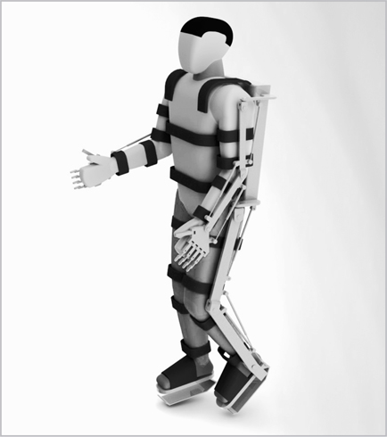
图10。这是尼科莱利斯博士希望由完全瘫痪的人的思维控制的外骨骼。（插图来源4.1）
尼科莱利斯的目标是崇高的：为2014年巴西世界杯准备一套可工作的外骨骼装备，届时一名四肢瘫痪的巴西人将完成开球仪式。他自豪地告诉我：“这是我们巴西的登月计划。”
在电影《替身》中，布鲁斯·威利斯饰演一名正在调查神秘谋杀案的FBI特工。科学家们创造了如此完美的外骨骼，以至于它们超越了人类的能力。这些机械生物超级强壮，拥有完美的身体。事实上，它们如此完美，以至于人类变得依赖于它们。人们整个人生都生活在舱室中，通过无线技术精神控制着他们英俊美丽的替身。无论你走到哪里，都能看到忙碌的”人们”在工作，只是他们都是完美塑形的替身。他们衰老的主人被方便地隐藏起来。然而，当布鲁斯·威利斯发现这些谋杀案背后的人可能与最初发明这些替身的科学家有关时，情节急转直下。这迫使他思考替身究竟是福还是祸。
在大片《阿凡达》中，2154年地球已经耗尽了大部分矿物质，所以一家采矿公司前往半人马座阿尔法星系中一个名为潘多拉的遥远卫星，寻找一种稀有金属——难得素(unobtainium)。居住在这个遥远卫星上的原住民被称为纳美人(Na’vi)，他们与郁郁葱葱的环境和谐共处。为了与原住民交流，受过特殊训练的工作人员被放置在舱室中，学习精神控制基因工程改造的原住民身体。尽管大气有毒，环境与地球截然不同，但化身们在这个外星世界中生活毫无困难。然而，当采矿公司在纳美人神圣仪式树下发现丰富的难得素矿藏时，这种不稳定的关系很快就崩溃了。采矿公司想要摧毁神圣树木并露天开采稀有金属，而崇拜它的原住民之间不可避免地发生了冲突。对原住民来说，这看起来是一场注定失败的战斗，直到一名受过特殊训练的工作人员改变立场，带领纳美人取得胜利。
阿凡达和替身在今天还是科幻小说的内容，但有一天它们可能会成为科学的重要工具。人体很脆弱，对于许多危险任务（包括太空旅行）来说可能过于娇嫩。尽管科幻小说充满了勇敢宇航员前往银河系最遥远角落的英雄事迹，但现实却大不相同。深太空中的辐射如此强烈，我们的宇航员必须得到保护，否则将面临过早衰老、辐射病甚至癌症。太阳射出的太阳耀斑可能让宇宙飞船沐浴在致命的辐射中。从美国到欧洲的简单跨大西洋飞行每小时会让你暴露在一毫伦琴的辐射中，大约相当于一次牙科X光检查。但在外太空，辐射可能强烈许多倍，特别是在宇宙射线和太阳爆发存在的情况下。（在强烈太阳风暴期间，NASA实际上已经警告空间站中的宇航员转移到有更多辐射防护的区域。）
此外，外太空还有许多其他危险等待着我们，比如微陨石、长期失重的影响，以及适应不同重力场的问题。仅仅在失重状态下几个月，身体就会失去大量钙质和矿物质，让宇航员变得极其虚弱，即使他们每天都锻炼。在外太空待了一年后，俄罗斯宇航员不得不像蠕虫一样爬出他们的太空舱。此外，人们认为肌肉和骨质流失的一些影响是永久性的，因此宇航员将在余生中感受到长期失重的后果。
月球上微陨石和强辐射场的危险如此之大，以至于许多科学家提出使用巨大的地下洞穴作为永久性月球空间站来保护我们的宇航员。这些洞穴在死火山附近自然形成为熔岩管。但建造月球基地最安全的方式是让我们的宇航员舒适地坐在客厅里。这样他们将免受月球上所有危险的侵害，但通过替身他们能够执行同样的任务。这可能大幅降低载人太空旅行的成本，因为为人类宇航员提供生命支持非常昂贵。
也许当第一艘星际飞船到达遥远的行星，宇航员的替身踏上这片外星地形时，他或她可能会说：“思维的一小步……”
这种方法的一个可能问题是信息传送到月球及更远地方需要时间。无线电信息从地球传到月球只需要一秒多一点，所以月球上的替身可以很容易地被地球上的宇航员控制。更困难的是与火星上的替身通信，因为无线电信号到达红色星球可能需要二十分钟或更长时间。
但替身在更近的地方有实际应用意义。在日本，2011年的福岛反应堆事故造成了数十亿美元的损失。由于工人无法进入具有致命辐射水平的区域超过几分钟，最终清理可能需要四十年时间。不幸的是，机器人还不够先进，无法进入这些灼热的辐射场并进行必要的修复。事实上，在福岛使用的唯一机器人相当原始，基本上就是放在轮子上的计算机顶部的简单摄像头。能够独立思考（或由远程操作员控制）并在高辐射场中进行修复的完整自动机器人还需要几十年的时间。
工业机器人的缺乏也给苏联人在1986年乌克兰切尔诺贝利事故期间造成了严重问题。直接派往事故现场扑灭火焰的工人由于致命的辐射暴露而死亡。最终米哈伊尔·戈尔巴乔夫命令空军”沙袋轰炸”反应堆，用直升机投下五千吨硼砂和水泥。辐射水平如此之高，最终动员了25万名工人来控制事故。每个工人只能在反应堆建筑内待几分钟进行维修。许多人接受了终生允许的最大辐射剂量。每个人都得到了一枚奖章。这个庞大的项目是有史以来最大的土木工程壮举。今天的机器人无法完成这项工作。
事实上，本田公司已经制造了一个最终可能进入致命放射性环境的机器人，但它还没有准备好。本田的科学家在工人头部放置了一个脑电图传感器，连接到分析脑电波的计算机。然后计算机连接到向机器人发送信息的无线电，这个机器人叫做ASIMO（创新移动性的先进步骤）。因此，通过改变自己的脑电波，工人可以通过纯粹的思想控制ASIMO。
不幸的是，这个机器人目前无法在福岛进行修复，因为它只能执行四个基本动作（全部涉及移动头部和肩膀），而在受损的核电站进行修复需要数百个动作。这个系统还不够发达，无法处理诸如转动螺丝刀或挥动锤子等简单任务。
其他研究小组也在探索精神控制机器人的可能性。在华盛顿大学，拉杰什·拉奥博士创造了一个类似的机器人，由佩戴脑电图头盔的人控制。这个闪亮的人形机器人有两英尺高，被称为墨菲斯（以电影《黑客帝国》中的角色以及希腊梦神命名）。学生戴上脑电图头盔，然后做出某些手势，比如移动手部，这会产生脑电图信号并被计算机记录。最终计算机拥有了这些脑电图信号的库，每个信号对应肢体的特定动作。然后机器人被编程为每当接收到该脑电图信号时就移动它的手。这样，如果你想到移动你的手，机器人墨菲斯也会移动它的手。当你第一次戴上脑电图头盔时，计算机需要大约十分钟来校准你的大脑信号。最终你掌握了用心智做手势来控制机器人的技巧。例如，你可以让它朝你走来，从桌子上拿起一个积木，走六英尺到另一张桌子，然后把积木放在那里。
欧洲的研究也在快速推进。2012年，瑞士洛桑联邦理工学院的科学家们展示了他们的最新成果，一个由脑电图传感器远程控制的机器人，其控制者位于六十英里之外。机器人本身看起来像现在许多客厅里都有的Roomba扫地机器人。但它实际上是一个高度精密的机器人，配备了摄像头，可以在拥挤的办公室中导航。例如，瘫痪患者可以看着连接到几英里外机器人上摄像头的计算机屏幕，通过机器人的眼睛看世界。然后，通过思考，患者能够控制机器人在越过障碍物时的运动。
在未来，人们可以想象最危险的工作将由以这种方式被人类控制的机器人来完成。尼科莱利斯博士说：“我们很可能能够操作远程控制的使者和大使，各种形状和大小的机器人和飞艇，代表我们被派往探索宇宙遥远角落的其他行星和恒星。”
例如，2010年全世界惊恐地看到500万桶原油持续泄漏到墨西哥湾。深水地平线泄漏事件是历史上最大的石油灾难之一，然而工程师们在三个月内基本无能为力。远程控制的机器人潜艇在数周内艰难地试图封堵油井，因为它们缺乏这项水下任务所需的灵巧性和多功能性。如果当时有在操控工具方面更加敏感的替代潜艇，它们可能在泄漏的最初几天就封住了油井，避免了数十亿美元的财产损失和诉讼。
另一个可能性是替代潜艇有朝一日可能进入人体并从内部进行精密手术。这个想法在电影《神奇之旅》中得到了探索，该片由拉奎尔·韦尔奇主演，其中一艘潜艇被缩小到血细胞大小，然后被注射到一个脑部血栓患者的血流中。缩小原子违反了量子物理定律，但有朝一日细胞大小的MEMS（微电子机械系统）可能能够进入人的血流。MEMS是极其微小的机器，可以轻松地放在针尖上。MEMS采用硅谷使用的相同蚀刻技术，可以在指甲大小的晶圆上放置数亿个晶体管。一个带有齿轮、杠杆、滑轮，甚至马达的精密机器可以做得比这句话末尾的句号还小。有朝一日，人们可能能够戴上心灵感应头盔，然后使用无线技术指挥MEMS潜艇在患者体内进行手术。
因此，MEMS技术可能开辟一个全新的医学领域，基于进入人体的微观机器。这些MEMS潜艇甚至可能引导纳米探针进入大脑，使它们精确连接到感兴趣的神经元。这样，纳米探针可能能够接收和传输来自参与特定行为的少数神经元的信号。将电极插入大脑的碰运气方法将被淘汰。
在短期内，世界各地实验室发生的所有这些非凡进展可能会减轻瘫痪和其他残疾患者的痛苦。利用他们思维的力量，他们将能够与亲人交流，控制轮椅和床铺，通过精神引导机械肢体行走，操控家用电器，过上半正常的生活。
但从长远来看，这些进展可能对世界产生深远的经济和实践影响。到本世纪中叶，直接用思维与计算机交互可能变得司空见惯。由于计算机行业是一个数万亿美元的产业，可以几乎一夜之间创造年轻的亿万富翁和公司，思维-计算机接口的进展将在华尔街产生反响——也会在你的客厅里产生影响。
我们用来与计算机交流的所有设备（鼠标、键盘等）最终可能会消失。在未来，我们可能只需给出精神指令，我们的愿望就会被隐藏在环境中的微小芯片静默执行。当我们坐在办公室里、在公园里散步、逛橱窗或只是放松时，我们的思维可能正在与数十个隐藏的芯片互动，让我们能够在精神上平衡财务、安排剧院票务或预订餐厅。
艺术家也可以很好地利用这项技术。如果他们能在脑海中构想出艺术作品，那么这些图像就可以通过脑电图传感器在全息屏幕上以3D形式显示出来。由于脑海中的图像不如原始物体那么精确，艺术家可以对3D图像进行改进，并构想下一个版本。经过几个循环后，艺术家可以用3D打印机打印出最终图像。
同样，工程师只需运用想象力就能创建桥梁、隧道和机场的比例模型。他们还可以仅通过思维快速修改蓝图。机器零件可以从电脑屏幕上飞出，直接进入3D打印机。
然而，一些批评者声称这些心灵致动力量有一个重大局限：缺乏能量。在电影中，超级生物有能力用思维移动山脉。在电影《X战警：最后一战》中，超级反派万磁王只需用手指一指就能移动金门大桥，但人体平均只能产生大约五分之一马力的功率，这远远不足以完成我们在漫画书中看到的壮举。因此，心灵致动超级生物的所有大力士般的壮举似乎都是纯粹的幻想。
然而，这个能量问题有一个解决方案。你也许能够将你的思想连接到一个能量源，然后将你的力量放大数百万倍。这样，你就可以接近神的力量。在《星际迷航》的一集中，船员们前往一个遥远的星球，遇到了一个神一般的生物，他声称自己是阿波罗，希腊太阳神。他能够表演让船员们目眩神迷的魔法壮举。他甚至声称曾在远古时代造访过地球，那里的地球人崇拜他。但船员们不相信神的存在，怀疑这是欺诈。后来他们发现这个”神”只是用精神控制一个隐藏的能量源，然后由能量源执行所有的魔法把戏。当这个能量源被摧毁时，他就变成了一个普通的凡人。
同样，在未来，我们的思维可能会精神控制一个能量源，然后给我们超能力。例如，一个建筑工人可能会心灵感应地利用一个为重型机械提供动力的能量源。这样，单个工人就能够仅仅通过思维的力量建造复杂的建筑物和房屋。所有的重型工作都将由能量源完成，建筑工人就像指挥家一样，能够仅通过思想指挥巨型起重机和强力推土机的运动。
科学正在以另一种方式赶上科幻小说。《星球大战》传奇故事发生在文明遍布整个银河系的时代。银河系的和平由绝地武士维护，他们是一支训练有素的战士队伍，利用”原力”的力量读取思想并引导他们的光剑。
然而，人们不必等到我们殖民整个银河系才开始思考原力。正如我们所见，原力的某些方面在今天是可能的，比如能够使用ECOG电极或脑电图头盔接入他人的思想。但绝地武士的心灵致动力量也将成为可能，当我们学会用思维驾驭能量源时。例如，绝地武士可以简单地挥手召唤光剑，但我们已经可以通过利用磁力的力量完成同样的壮举（就像MRI机器中的磁铁可以将锤子抛到房间对面一样）。通过精神激活能量源，你可以用今天的技术从房间对面抓取光剑。
心灵致动是通常为神祇或超级英雄保留的力量。在好莱坞大片的超级英雄宇宙中，也许最强大的角色是凤凰女，一个能够随意移动任何物体的心灵致动女性。作为X战警的一员，她可以举起重型机械，阻挡洪水，或者通过思维的力量举起喷气式飞机。（然而，当她最终被力量的黑暗面吞噬时，她进行了宇宙级的暴走，能够焚烧整个太阳系并摧毁恒星。她的力量如此强大且无法控制，以至于最终导致了她的自我毁灭。）
但科学在驾驭心灵致动力量方面能走多远呢？
在未来，即使有外部能量源来放大我们的思想，具有心灵致动力量的人也不太可能按命令移动基本物体，如铅笔或咖啡杯。正如我们提到的，只有四种已知的力量支配着宇宙，除非有外部能量源，否则这些力量都无法移动物体。（磁力接近，但磁力只能移动磁性物体。塑料、水或木头制成的物体可以轻易通过磁场。）简单的悬浮，这是大多数魔术师表演中的把戏，超出了我们的科学能力。
所以即使有外部电源，心灵致动者也不太可能随意移动周围的物体。然而，有一项技术可能接近这种能力，那就是将一个物体变成另一个物体的能力。
这项技术被称为”可编程物质”(programmable matter)，它已成为英特尔公司intense研究的主题。可编程物质背后的理念是创造由微小”原子”(catoms)组成的物体，这些原子是微观计算机芯片。每个原子都可以无线控制；它可以被编程改变其表面的电荷，从而以不同的方式与其他原子结合。通过以一种方式编程电荷，原子结合在一起形成，比如说，一部手机。按下按钮改变它们的编程，原子重新排列，重新形成另一个物体，如笔记本电脑。
我在匹兹堡的卡内基梅隆大学见证了这项技术的演示，科学家们已经能够制造出针尖大小的芯片。为了检查这些catoms（可编程原子），我必须穿着特殊的白色制服、塑料靴套和帽子进入”洁净室”，以防止哪怕是最小的灰尘颗粒进入。然后，在显微镜下，我能看到每个catom内部精密的电路，这使得无线编程改变其表面电荷成为可能。就像我们今天可以编程软件一样，未来可能可以编程硬件。
下一步是确定这些catoms是否能够结合形成有用的物体，以及是否能够随意改变或变形为另一个物体。在拥有可编程物质的工作原型之前，可能需要等到本世纪中叶。由于编程数十亿个catoms的复杂性，必须创造一台特殊的计算机来协调每个catom上的电荷。也许到本世纪末，通过心理控制这台计算机，我们就能将一个物体变成另一个物体。我们不需要记住物体内部的电荷和配置。我们只需给计算机发出心理指令，让它将一个物体变成另一个物体。
最终，我们可能会有列出所有可编程物体的目录，如家具、电器和电子设备。然后通过与计算机的心灵感应交流，应该可以将一个物体变成另一个物体。重新装饰客厅、改造厨房和购买圣诞礼物都可以通过心理完成。
让每个愿望都成真是只有神性才能实现的事情。然而，这种天体力量也有负面影响。所有技术都可以用于善或恶。最终，科学是一把双刃剑。剑的一面可以对抗贫困、疾病和无知。但另一面可以伤害人类，在几个方面。
这些技术可能会让战争变得更加残酷。也许有一天，所有的近身战斗都将在两个代理人之间进行，他们配备着一系列高科技武器。真正的战士安全地坐在数千英里之外，会释放出一连串最新的高科技武器，几乎不考虑他们对平民造成的附带损害。虽然用代理人进行的战争可能会保护士兵的生命，但也可能造成可怕的平民和财产损失。
更大的问题是，这种力量对于任何普通凡人来说可能都太强大而无法控制。在小说《嘉莉》中，斯蒂芬·金探索了一个年轻女孩的世界，她经常被同龄人嘲笑。她被圈内人排斥，她的生活变成了一系列无休止的侮辱和羞辱。然而，她的折磨者不知道她的一件事：她有心灵致动能力(telekinetic)。
在忍受了嘲笑并在舞会上被血溅了一身后，她终于崩溃了。她召唤了所有的心灵致动力量来困住同学们，然后一个接一个地消灭他们。最后，她决定烧毁整个学校。但她的心灵致动力量太强大而无法控制。她最终死在了自己点燃的火焰中。
心灵致动的强大力量不仅可能反噬，还有另一个问题。即使你已经采取了所有预防措施来理解和驾驭这种力量，如果讽刺的是，它对你的思想和命令过于服从，它仍然可能摧毁你。那么你构思的思想本身可能就注定了你的厄运。
电影《禁忌星球》(1956)改编自威廉·莎士比亚的戏剧《暴风雨》，故事开始时一个巫师和他的女儿被困在一个荒岛上。但在《禁忌星球》中，一位教授和他的女儿被困在一个遥远的星球上，这个星球曾经是克雷尔人的家园，一个比我们先进数百万年的文明。他们最伟大的成就是创造了一个装置，赋予他们心灵致动的终极力量，即用心灵控制所有形式物质的力量。他们渴望的任何东西都会突然出现在他们面前。这是按照他们的意愿重塑现实本身的力量。
然而，在他们最伟大胜利的前夜，当他们启动这个装置时，克雷尔人毫无踪迹地消失了。什么可能摧毁了这个最先进的文明？
当一群地球人降落在这个星球上营救那个男人和他的女儿时，他们发现有一个可怕的怪物在这个星球上游荡，任意屠杀船员。最后，一名船员发现了克雷尔人和怪物背后的秘密。在他死前，他喘息着说：“来自本我的怪物。”
然后令人震惊的真相突然在教授身上显现。就在克雷尔人启动他们的心灵致动机器的那个夜晚，他们睡着了。他们本我中所有被压抑的欲望突然具象化了。埋藏在这些高度发达生物潜意识中的是他们古老过去中长期被压制的动物冲动和欲望。每一个幻想，每一个复仇的梦想都突然成真，所以这个伟大的文明在一夜之间自我毁灭了。他们征服了许多世界，但有一件事他们无法控制：他们自己的潜意识。
这对任何想要释放心灵力量的人来说都是一个教训。在心灵中，你会发现人类最崇高的成就和思想。但你也会发现来自本我的怪物。
到目前为止，我们已经讨论了科学通过心灵感应和心念移物来扩展我们精神能力的力量。我们基本上保持不变；这些发展对改变我们本质的核心没有任何作用。然而，有一个全新的前沿正在开启，它改变了作为人类意味着什么的本质。利用遗传学、电磁学和药物治疗方面的最新技术，在不久的将来，改变我们的记忆甚至增强我们的智力可能成为可能。下载记忆、在一夜之间学会复杂技能、变得超级聪明的想法正在慢慢离开科幻小说的领域。
没有记忆，我们就迷失了，在毫无意义的刺激的漫无目的的海洋中漂流，无法理解过去或我们自己。那么，如果有一天我们能够将人工记忆输入到我们的大脑中会发生什么？当我们只需将文件下载到我们的记忆中就能成为任何学科的大师时会发生什么？如果我们无法区分真实和虚假记忆会发生什么？那么我们是谁？
科学家们正在从被动观察自然转向积极塑造和改造自然。这意味着我们可能能够操纵记忆、思想、智力和意识。未来将不仅仅是见证心智的复杂机制，而是能够编排它们。
所以现在让我们来回答这个问题：我们能下载记忆吗？
如果我们的大脑简单到能被理解，我们就不会聪明到能理解它们。
—匿名
尼奥是救世主。只有他能够带领被击败的人类战胜机器。只有尼奥能够摧毁矩阵，矩阵将虚假记忆植入我们的大脑作为控制我们的手段。
在电影《黑客帝国》中一个现在已成为经典的场景里，守护矩阵的邪恶哨兵终于将尼奥逼入绝境。看起来人类最后的希望即将被终结。但此前尼奥的脖子后面被插入了一个电极，可以瞬间将武术技能下载到他的大脑中。在几秒钟内，他就成为了一个空手道大师，能够用令人惊叹的空中踢击和精准的打击击败哨兵。
在《黑客帝国》中，学习黑带空手道大师的惊人技能就像将电极插入大脑并按下”下载”按钮一样简单。也许有一天我们也能够下载记忆，这将大大增强我们的能力。
但是当下载到你大脑中的记忆是虚假的时会发生什么？在电影《全面回忆》中，阿诺德·施瓦辛格被植入了虚假记忆，使得现实和虚构之间的区别完全模糊。他在火星上英勇地击败坏人，直到电影结尾，他突然意识到他自己就是他们的领袖。他震惊地发现，他作为一个正常守法公民的记忆完全是人工制造的。
好莱坞喜欢制作探索人工记忆这个迷人但虚构世界的电影。当然，以今天的技术，这一切都是不可能的，但人们可以设想，在几十年后的某一天，人工记忆确实可能被插入大脑。
像菲尼亚斯·盖奇一样，亨利·古斯塔夫·莫莱森的奇怪案例在神经学领域引起了轰动，这在科学文献中被简称为HM，导致了许多关于海马体在形成记忆中重要性的根本性突破。
九岁时，HM在一次事故中头部受伤，导致使人衰弱的抽搐。1953年，当他二十五岁时，他接受了一次手术，成功缓解了他的症状。但另一个问题出现了，因为外科医生错误地切除了他的部分海马体。起初，HM看起来正常，但很快就明显出现了严重的问题；他无法保留新记忆。相反，他不断生活在当下，每天都用同样的表情多次问候同样的人，就好像他第一次见到他们一样。进入他记忆的一切只能持续几分钟就消失了。就像电影《土拨鼠日》中的比尔·默里一样，HM注定要在余生中一遍又一遍地重复过同一天。但与比尔·默里的角色不同，他无法回忆起之前的重复。然而，他的长期记忆相对完整，能够记住手术前的生活。但没有正常运作的海马体，HM无法记录新的经历。例如，当他照镜子时会感到恐惧，因为他看到的是一个老人的脸，但认为自己仍然是二十五岁。但幸运的是，恐惧的记忆也会很快消失在迷雾中。在某种意义上，HM就像一个具有第二级意识的动物，无法回忆起即时的过去或模拟未来。没有正常运作的海马体，他从第三级意识退化到第二级意识。
今天，神经科学的进一步进展给了我们关于记忆如何形成、存储然后回忆的最清晰的图景。“这一切在过去几年中汇聚在一起，得益于两项技术发展——计算机和现代大脑扫描，”哈佛大学神经科学家斯蒂芬·科斯林博士说。
如我们所知，感官信息（例如视觉、触觉、味觉）必须首先通过脑干到达丘脑，丘脑就像一个中继站，将信号传导到大脑的各个感觉叶，在那里进行评估。处理后的信息到达前额皮质，在那里进入我们的意识并形成我们所认为的短期记忆，这可以持续几秒到几分钟。（见[图11]）
要将这些记忆储存更长时间，信息必须通过海马体，在那里记忆被分解成不同的类别。海马体不像录音机或硬盘那样将所有记忆储存在大脑的一个区域，而是将片段重新导向到各种皮质。（以这种方式储存记忆实际上比顺序储存更有效率。如果人类记忆像计算机磁带那样顺序储存，将需要大量的记忆储存空间。事实上，将来甚至数字储存系统也可能采用这种来自活体大脑的技巧，而不是顺序储存完整记忆。）例如，情感记忆储存在杏仁核中，但词汇记录在颞叶中。同时，颜色和其他视觉信息收集在枕叶中，触觉和运动感储存在顶叶中。到目前为止，科学家已经识别出超过二十种储存在大脑不同部位的记忆类别，包括水果和蔬菜、植物、动物、身体部位、颜色、数字、字母、名词、动词、专有名词、面孔、面部表情，以及各种情感和声音。
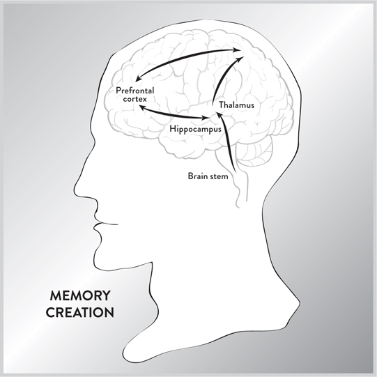
图11。这显示了创建记忆的路径。来自感官的冲动通过脑干，到达丘脑，传导到各种皮质，然后到前额皮质。它们然后传递到海马体形成长期记忆。
一个单一的记忆——例如在公园散步——涉及被分解并储存在大脑各个区域的信息，但重新体验记忆的一个方面（例如新割草的气味）可以突然让大脑快速运转，将片段聚集在一起形成连贯的回忆。因此，记忆研究的最终目标是弄清楚当我们回忆一个经历时，这些分散的片段是如何重新组装的。这被称为”绑定问题”(binding problem)，解决方案可能解释记忆的许多令人困惑的方面。例如，安东尼奥·达马西奥博士分析了无法识别单一类别的中风患者，尽管他们能够回忆起其他一切。这是因为中风只影响了大脑的一个特定区域，那个特定类别就储存在那里。
绑定问题进一步复杂化，因为我们所有的记忆和经历都是高度个人化的。记忆可能为个体定制，所以一个人的记忆类别可能与另一个人的记忆类别不相关。例如，品酒师可能有许多类别来标记味觉的细微变化，而物理学家可能有其他类别来处理某些方程式。毕竟，类别是经验的副产品，因此不同的人可能有不同的类别。
绑定问题的一个新颖解决方案利用了这样一个事实：整个大脑都有大约每秒四十次循环的电磁振动，这可以通过脑电图扫描检测到。一个记忆片段可能以非常精确的频率振动，并刺激储存在大脑远处的另一个记忆片段。以前认为记忆可能在物理上彼此接近储存，但这个新理论说记忆不是在空间上而是在时间上连接的，通过同步振动。如果这个理论成立，这意味着有电磁振动不断流过整个大脑，连接不同区域，从而重新创造完整的记忆。因此，海马体、前额皮质、丘脑和不同皮质之间的信息不断流动可能并不完全是神经性的。其中一些流动可能以不同大脑结构间共振的形式存在。
遗憾的是，HM于2008年去世，享年八十二岁，他未能享受到科学取得的一些轰动性成果：创造人工海马体然后将记忆插入大脑的能力。这直接来自科幻小说，但维克森林大学和南加州大学的科学家在2011年创造了历史，他们能够记录小鼠产生的记忆并将其数字化储存在计算机中。这是一个原理验证实验，他们展示了将记忆下载到大脑中的梦想有一天可能成为现实。
起初，将记忆下载到大脑中的想法似乎是一个不可能的梦想，因为正如我们所见，记忆是通过处理各种感官体验创建的，然后储存在新皮质和边缘系统的多个地方。但正如我们从HM那里了解到的，有一个地方是所有记忆流经并转换为长期记忆的地方：海马体。南加州大学团队负责人西奥多·伯格博士说：“如果你不能用海马体做到，你在任何地方都做不到。”
威克森林大学和南加州大学的科学家们最初从大脑扫描中观察到，小鼠海马体中至少有两组神经元，称为CA1和CA3，它们在学习新任务时会相互通信。在训练小鼠依次按压两个杠杆以获得水后，科学家们回顾了研究发现并试图解码这些信息，这最初令人沮丧，因为这两组神经元之间的信号似乎没有遵循任何模式。但通过数百万次监测这些信号，他们最终能够确定哪种电输入产生哪种输出。通过在小鼠海马体中使用探针，科学家们能够记录小鼠学习依次按压两个杠杆时CA1和CA3之间的信号。
然后科学家们向小鼠注射了一种特殊化学物质，使它们忘记了这项任务。最后，他们将记忆回放到同一只小鼠的大脑中。令人惊讶的是，任务记忆恢复了，小鼠能够成功重现原始任务。实质上，他们创造了一个具有复制数字记忆能力的人工海马体。“打开开关，动物就有了记忆；关闭开关，它们就没有了，”伯格博士说。“这是一个非常重要的步骤，因为这是我们第一次将所有部分整合在一起。”
正如赞助这项工作的海军作战部长办公室的乔尔·戴维斯所说，“使用植入物来增强能力还需要时间。这只是时间问题。”
毫不奇怪，由于利害攸关，这一研究领域正在快速发展。2013年，又取得了另一项突破，这次是在麻省理工学院，科学家们不仅能够将普通记忆植入小鼠体内，还能植入虚假记忆。这意味着，有一天，从未发生过的事件记忆可能被植入大脑，这将对教育和娱乐等领域产生深远影响。
麻省理工学院的科学家们使用了一种称为光遗传学(optogenetics)的技术（我们将在第8章中详细讨论），这种技术允许你用光照射特定神经元来激活它们。使用这种强大的方法，科学家们可以识别负责特定记忆的具体神经元。
假设一只小鼠进入房间并受到电击。负责这一痛苦事件记忆的神经元实际上可以通过分析海马体来分离和记录。然后将小鼠放置在一个完全不同且完全无害的房间里。通过在光纤上打开灯光，人们可以使用光遗传学来激活电击的记忆，小鼠表现出恐惧反应，尽管第二个房间是完全安全的。
通过这种方式，麻省理工学院的科学家们不仅能够植入普通记忆，还能植入从未发生过的事件记忆。有一天，这种技术可能使教育工作者能够植入新技能的记忆来重新培训工人，或者给好莱坞一种全新的娱乐形式。
目前，人工海马体还很原始，一次只能记录一个记忆。但这些科学家计划增加他们人工海马体的复杂性，使其能够存储各种记忆并为不同动物记录这些记忆，最终发展到猴子。他们还计划通过用微型无线电替换电线来使这项技术无线化，这样记忆就可以远程下载，而无需将笨重的电极植入大脑。
由于海马体参与人类的记忆处理，科学家们看到了在治疗中风、痴呆症、阿尔茨海默病以及大脑此区域损伤或退化时出现的其他问题方面的巨大潜在应用。
当然，还有许多障碍需要克服。尽管自HM以来我们对海马体了解了很多，但它仍然是一个黑箱，其内部运作机制在很大程度上是未知的。因此，不可能从头开始构建记忆，但一旦执行了任务并处理了记忆，就可以记录并回放它。
与灵长类动物甚至人类的海马体合作将更加困难，因为它们的海马体更大更复杂。第一步是创建海马体的详细神经图谱。这意味着在海马体的不同部位放置电极，记录不同区域之间不断交换的信号。这将建立不断穿越海马体的信息流。海马体有四个基本分区，CA1到CA4，因此科学家们将记录它们之间交换的信号。
第二步涉及受试者执行某些任务，之后科学家们将记录流经海马体各个区域的脉冲，从而记录记忆。例如，学习某项特定任务（如跳圈）的记忆将在海马体中产生电活动，这种活动可以被记录和仔细分析。然后可以创建一个字典，将记忆与流经海马体的信息流相匹配。
最后，第三步涉及记录这种记忆，并通过电极将电信号输入另一个受试者的海马体，看看是否可以上传那种记忆。通过这种方式，受试者可能学会跳圈，尽管它以前从未这样做过。如果成功，科学家们将逐渐创建一个包含某些记忆录音的库。
可能需要几十年的时间才能完全处理人类记忆，但我们可以设想它是如何工作的。在未来，人们可能会被雇佣来创造特定的记忆，比如豪华假期或虚构的战斗。纳米电极将被放置在他们大脑的各个位置来记录记忆。这些电极必须极其微小，以免干扰记忆的形成。
来自这些电极的信息随后将无线传输到计算机并被记录下来。之后，想要体验这些记忆的受试者将在海马体中植入类似的电极，记忆将被插入大脑中。
（当然，这个想法存在复杂性。如果我们试图插入身体活动的记忆，比如武术，我们就面临”肌肉记忆”的问题。例如，在走路时，我们不会有意识地考虑把一条腿放在另一条腿前面。走路对我们来说已经成为第二天性，因为我们经常这样做，而且从很小的时候就开始了。这意味着控制我们腿部的信号不再完全来自海马体，还来自运动皮层、小脑和基底神经节。在未来，如果我们希望插入涉及运动的记忆，科学家可能必须破解记忆在大脑其他区域部分存储的方式。）
记忆的形成非常复杂，但我们一直在讨论的方法通过窃听通过海马体的信号来走捷径，在那里感觉冲动已经被处理过了。然而，在《黑客帝国》中，电极被放置在头部后方，直接将记忆上传到大脑中。这假设人们可以解码来自眼睛、耳朵、皮肤等的原始、未处理的冲动，这些冲动正沿着脊髓和脑干向上移动并进入丘脑。这比分析在海马体中循环的已处理信息要复杂和困难得多。
为了让你了解从脊髓进入丘脑的未处理信息的庞大数量，让我们只考虑一个方面：视觉，因为我们的许多记忆都是以这种方式编码的。眼睛视网膜中大约有1.3亿个细胞，称为锥细胞和杆细胞；它们随时处理和记录来自景观的1亿位信息。
这些海量数据然后被收集并通过视神经传送，视神经每秒传输900万位信息，然后到达丘脑。从那里，信息到达大脑最后部的枕叶。这个视觉皮层反过来开始艰难地分析这堆积如山的数据。视觉皮层由大脑后部的几个区域组成，每个区域都是为特定任务而设计的。它们被标记为V1到V8。
值得注意的是，称为V1的区域就像一个屏幕；它实际上在你大脑的后部创建了一个在形状和形式上与原始图像非常相似的模式。这个图像与原始图像惊人地相似，除了你眼睛的最中心部分——中央凹，在V1中占据了更大的区域（因为中央凹有最高的神经元浓度）。因此，投射在V1上的图像不是景观的完美复制品，而是扭曲的，图像的中央区域占据了大部分空间。
除了V1，枕叶的其他区域处理图像的不同方面，包括：
• 立体视觉。这些神经元比较来自每只眼睛的图像。这在V2区域完成。
• 距离。这些神经元使用阴影和来自双眼的其他信息计算到物体的距离。这在V3区域完成。
• 颜色在V4区域处理。
• 运动。不同的回路可以识别不同类别的运动，包括直线、螺旋和扩张运动。这在V5区域完成。
已经确定了三十多个与视觉相关的不同神经回路，但可能还有更多。
从枕叶，信息被发送到前额皮质，在那里你最终”看到”图像并形成短期记忆。然后信息被发送到海马体，海马体处理它并储存长达24小时。然后记忆被切碎并分散到各个皮质中。
这里的要点是，我们认为毫不费力的视觉，需要数十亿神经元按顺序发射，每秒传输数百万位信息。记住，我们有来自五个感觉器官的信号，加上与每个图像相关的情感。所有这些信息都由海马体处理，以创建图像的简单记忆。目前，没有机器能够匹配这个过程的复杂性，因此复制它对想要为人脑创造人工海马体的科学家来说是一个巨大的挑战。
如果仅仅编码一种感官的记忆就是如此复杂的过程，那么我们是如何进化出在长期记忆中存储如此大量信息的能力的呢？本能在很大程度上指导着动物的行为，它们似乎没有太多长期记忆。但正如加州大学欧文分校的神经生物学家詹姆斯·麦克高博士所说，“记忆的目的是预测未来”，这提出了一个有趣的可能性。也许长期记忆的进化是因为它对模拟未来有用。换句话说，我们能够回忆遥远过去的事实是由于模拟未来的需求和优势。
确实，圣路易斯华盛顿大学的科学家们进行的脑部扫描表明，用于回忆记忆的区域与参与模拟未来的区域是相同的。特别是，当一个人专注于规划未来和回忆过去时，背外侧前额叶皮层和海马体之间的连接就会被激活。从某种意义上说，大脑正在试图”回忆未来”，利用过去的记忆来确定某事将如何演变到未来。这也可能解释了一个奇怪的事实：患有失忆症的人——比如HM——往往无法想象他们未来会做什么，甚至连第二天会做什么都无法想象。
“你可以将其视为心理时间旅行——将关于我们自己的想法投射到过去或未来的能力，”华盛顿大学的凯瑟琳·麦克德莫特博士说。她还指出，他们的研究为一个长期存在的关于记忆进化意义的问题提供了”初步答案。可能正是因为我们能够生动详细地回忆过去，这套过程对于能够想象我们自己在未来场景中的能力是重要的。这种想象未来的能力具有明确而令人信服的适应性意义。“对于动物来说，过去很大程度上是宝贵资源的浪费，因为它给它们带来的进化优势很少。但是，基于过去的教训来模拟未来，是人类变得智能的重要原因。
2012年，来自维克森林浸信会医学中心和南加州大学的同一批科学家在小鼠身上创造了人工海马体后，宣布了一个更加意义深远的实验。他们没有在小鼠海马体中记录记忆，而是复制了灵长类动物皮层更为复杂的思维过程。
他们选取了五只恒河猴，在它们皮层的两个层次中插入了微小的电极，称为L2/3层和L5层。然后，当猴子学习一项任务时，他们记录了在这两层之间传递的神经信号。（这项任务涉及猴子看一组图片，然后如果它们能从一个更大的图片集合中挑出相同的图片就会得到奖励。）通过练习，猴子能够以75%的准确率完成任务。但如果科学家在猴子执行测试时将信号反馈回皮层，其表现提高了10%。当给猴子注射某些化学物质时，其表现下降了20%。但如果将记录反馈回皮层，其表现超过了正常水平。尽管这是一个小样本研究，性能提升也很有限，但该研究仍然表明科学家的记录准确捕获了皮层的决策过程。
由于这项研究是在灵长类动物而非小鼠身上进行的，涉及的是皮层而非海马体，当人体试验开始时，它可能具有巨大的意义。维克森林大学的萨姆·A·戴德韦勒博士说，“整个想法是设备将产生一个输出模式，绕过受损区域，在大脑中提供一个替代连接”。这个实验对新皮层受损的患者具有潜在应用价值。像拐杖一样，这个设备将执行受损区域的思维操作。
还应该指出的是，人工海马体和新皮层只是第一步。最终，大脑的其他部分也将有人工对应物。例如，以色列特拉维夫大学的科学家已经为大鼠创造了人工小脑。小脑是爬虫类大脑的重要组成部分，控制我们的平衡和其他基本身体功能。
通常当一股气流吹向大鼠的面部时，它会眨眼。如果同时发出声音，大鼠可以被条件反射训练为仅通过听到声音就眨眼。以色列科学家的目标是创造一个能够复制这一壮举的人工小脑。
首先，科学家记录了当气流击中大鼠面部和听到声音时进入脑干的信号。然后信号被处理并发送回脑干的另一个位置。如预期的那样，大鼠在接收到信号后眨眼了。这不仅是人工小脑首次正确运作，也是首次从大脑的一个部分接收信息，进行处理，然后上传到大脑的不同部分。
埃塞克斯大学的弗朗西斯科·塞普尔韦达对这项工作评论说：“这表明我们在创造有朝一日能够替代受损脑区甚至增强健康大脑能力的电路方面已经走了多远。”
他还看到了人工大脑在未来的巨大潜力，补充说：“我们可能需要几十年才能实现，但我敢打赌，特定的、组织良好的大脑部分，如海马体或视觉皮层，将在本世纪末之前有合成对应物。”
尽管考虑到过程的复杂性，创造大脑人工替代品的进展速度非常快，但当我们考虑到面临公共卫生系统的最大威胁——阿尔茨海默病患者心理能力的衰退时，这是一场与时间的赛跑。
阿尔茨海默症，有人声称，可能是本世纪的疾病。目前有530万美国人患有阿尔茨海默症，预计到2050年这个数字将翻两番。65岁到74岁的人群中有5%患有阿尔茨海默症，但85岁以上的人群中超过50%患有此病，即使他们没有明显的风险因素。（在1900年，美国的预期寿命是49岁，所以阿尔茨海默症并不是一个重大问题。但现在，80岁以上的人群是美国增长最快的人口群体之一。）
在阿尔茨海默症的早期阶段，海马体，大脑中处理记忆的部分，开始恶化。实际上，脑部扫描清楚地显示阿尔茨海默症患者的海马体萎缩，但连接前额皮质和海马体的神经回路也变细，使大脑无法正常处理短期记忆。已经储存在大脑皮质各处的长期记忆保持相对完整，至少在开始时是这样。这造成了一种情况，你可能不记得几分钟前刚做过的事，但能清楚地回忆起几十年前发生的事件。
最终，疾病发展到连基本的长期记忆都被破坏的程度。患者无法认出自己的孩子或配偶，不记得自己是谁，甚至可能陷入昏迷样的植物状态。
遗憾的是，阿尔茨海默症的基本机制直到最近才开始被理解。2012年的一个重大突破揭示了阿尔茨海默症始于tau淀粉样蛋白的形成，这反过来加速了β淀粉样蛋白的形成，这是一种粘性的、胶状的物质，会堵塞大脑。（在此之前，尚不清楚阿尔茨海默症是由这些斑块引起的，还是这些斑块可能是某种更根本疾病的副产品。）
使这些淀粉样斑块难以用药物靶向的原因是，它们很可能是由”朊病毒”构成的，这是错误折叠的蛋白质分子。它们不是细菌或病毒，但仍然可以繁殖。从原子层面看，蛋白质分子就像一个由原子丝带缠绕在一起的丛林。这些原子缠结必须正确地折叠到自身上，蛋白质才能呈现正确的形状和功能。但朊病毒是错误折叠的畸形蛋白质。更糟糕的是，当它们撞到健康蛋白质时，也会导致它们错误折叠。因此，一个朊病毒可以引起一系列畸形蛋白质，产生连锁反应，污染数十亿个蛋白质。
目前，没有已知的方法可以阻止阿尔茨海默症不可阻挡的进展。然而，既然阿尔茨海默症背后的基本机制正在被揭开，一个有希望的方法是创造可能专门针对这些畸形蛋白质分子的抗体或疫苗。另一种方法可能是为这些患者创造人工海马体，这样他们的短期记忆就能得到恢复。
还有一种方法是看看我们是否能直接利用遗传学增强大脑创造记忆的能力。也许有一些基因可以改善我们的记忆。记忆研究的未来可能在于”聪明鼠”。
1999年，普林斯顿大学、麻省理工学院和华盛顿大学的钱卓博士及其同事发现，仅仅添加一个额外的基因就能显著提升小鼠的记忆和能力。这些”聪明鼠”能更快地穿越迷宫，更好地记住事件，并在各种测试中超越其他小鼠。它们被称为”Doogie鼠”，以电视剧《天才小医生》中早熟的角色命名。
钱博士首先分析了NR2B基因，它就像一个开关，控制着大脑将一个事件与另一个事件关联起来的能力。（科学家知道这一点，因为当这个基因被沉默或失活时，小鼠就失去了这种能力。）所有学习都依赖于NR2B，因为它控制着海马体记忆细胞之间的通信。首先，钱博士创造了一个缺乏NR2B的小鼠品系，它们表现出记忆缺陷和学习障碍。然后他创造了一个拥有比正常数量更多NR2B拷贝的小鼠品系，发现新小鼠具有卓越的心理能力。当被放在浅水盘中被迫游泳时，正常小鼠会随机游泳。它们忘记了几天前就知道的有一个隐藏的水下平台。然而，聪明鼠在第一次尝试时就直接游向隐藏的平台。
从那时起，研究人员已经能够在其他实验室确认这些结果，并创造出更聪明的小鼠品系。2009年，钱博士发表了一篇论文，宣布了另一个聪明鼠品系，名为”Hobbie-J”（以中国卡通人物命名）。Hobbie-J能够记住新颖事实（如玩具的位置）的时间比之前被认为是最聪明的转基因小鼠品系长三倍。“这进一步证实了NR2B是记忆形成的通用开关的概念，”钱博士评论道。“这就像让迈克尔·乔丹变成超级迈克尔·乔丹，”研究生王德恒说。
然而，即使是这种新的小鼠品系也有局限性。当这些小鼠被给予左转或右转的选择来获得巧克力奖励时，Hobbie-J能够比正常小鼠更长时间地记住正确路径，但五分钟后它也忘记了。“我们永远不能把它变成数学家。毕竟它们是老鼠，”钱博士说。
还应该指出的是，一些聪明小鼠品系与正常小鼠相比异常胆怯。有些人怀疑，如果你的记忆变得过于强大，你也会记住所有的失败和伤害，这可能会让你变得犹豫不决。因此，记住太多也可能有潜在的负面影响。
接下来，科学家希望将他们的研究结果推广到狗身上，因为我们共享很多基因，也许还能推广到人类。
NR2B基因并不是科学家研究其对记忆影响的唯一基因。在另一系列突破性实验中，科学家已经能够培育出具有”照相记忆”的果蝇品系，以及患有遗忘症的小鼠品系。这些实验最终可能解释我们长期记忆的许多谜团，比如为什么临时抱佛脚不是最好的学习方法，以及为什么我们会记住情感色彩浓厚的事件。科学家发现有两个重要基因：CREB激活因子（刺激神经元之间新连接的形成）和CREB抑制因子（抑制新记忆的形成）。
冷泉港实验室的杰里·尹博士和蒂莫西·塔利一直在对果蝇进行有趣的实验。通常它们需要十次试验才能学会某项任务（例如，检测气味、避免电击）。带有额外CREB抑制因子基因的果蝇根本无法形成持久记忆，但真正令人惊讶的是当他们测试带有额外CREB激活因子基因的果蝇时。它们只用一次就学会了任务。“这意味着这些果蝇具有照相记忆，”塔利博士说。他说它们就像那些”能读一遍书章节，在脑海中看到它，并告诉你答案在第274页第三段的学生”一样。
这种效应不仅限于果蝇。同样在冷泉港实验室的阿尔西诺·席尔瓦博士一直在对小鼠进行实验。他发现CREB激活因子基因有缺陷的小鼠几乎无法形成长期记忆。它们是遗忘症小鼠。但即使是这些健忘的小鼠，如果有短时间的课程并在中间休息，也能学到一点东西。科学家推理说，我们大脑中有固定数量的CREB激活因子，这可能限制我们在任何特定时间内能学到的东西。如果我们试图在考试前临时抱佛脚，这意味着我们很快就会耗尽CREB激活因子的数量，因此我们不能再学习更多——至少在我们休息以补充CREB激活因子之前不能。
“我们现在可以给你一个生物学原因来解释为什么临时抱佛脚不起作用，”塔利博士说。准备期末考试的最好方法是在一天中定期在精神上复习材料，直到材料成为你长期记忆的一部分。
这也可能解释为什么情感色彩浓厚的记忆如此生动，能持续几十年。CREB抑制因子基因就像一个过滤器，清除无用信息。但如果记忆与强烈情感相关，它要么可以移除CREB抑制因子基因，要么增加CREB激活因子基因的水平。
在未来，我们可以期待在理解记忆遗传基础方面取得更多突破。塑造大脑巨大能力所需的可能不是一个基因，而是基因的复杂组合。这些基因在人类基因组中也有对应物，因此我们也有可能通过遗传学方法增强我们的记忆和智力技能。
然而，不要认为你很快就能得到大脑提升。仍然存在许多障碍。首先，这些结果是否适用于人类尚不清楚。在小鼠身上显示出巨大前景的治疗方法往往不能很好地转化到我们的物种上。其次，即使这些结果可以应用于人类，我们也不知道它们的影响会是什么。例如，这些基因可能有助于改善我们的记忆，但不会影响我们的一般智力。第三，基因治疗（即修复破损基因）比以前想象的更困难。只有少数遗传疾病可以用这种方法治愈。尽管科学家使用无害病毒用”好”基因感染细胞，身体仍会派遣抗体攻击入侵者，往往使治疗变得无用。增强记忆的基因插入可能面临类似的命运。（此外，几年前宾夕法尼亚大学一名患者在基因治疗过程中死亡，基因治疗领域遭受了重大挫折。因此修改人类基因的工作面临许多伦理甚至法律问题。）
因此，人体试验的进展将比动物试验慢得多。然而，人们可以预见这种程序可能被完善并成为现实的那一天。以这种方式改变我们的基因只需要在手臂上简单注射一针。无害病毒然后会进入我们的血液，通过注入其基因来感染正常细胞。一旦”聪明基因”成功融入我们的细胞，基因就会变得活跃并释放蛋白质，通过影响海马体和记忆形成来增加我们的记忆和认知技能。
如果基因插入变得过于困难，另一种可能性是将适当的蛋白质直接插入体内，绕过基因治疗的使用。我们不用打针，而是吞服药丸。
最终，这项研究的一个目标是创造一种”聪明药丸”，它能提高注意力，改善记忆，也许还能增加我们的智力。制药公司已经试验了几种药物，如MEM 1003和MEM 1414，它们确实似乎能增强智力功能。
科学家发现，在动物研究中，长期记忆的形成需要酶和基因的相互作用。当特定的基因被激活时，某些神经通路得到强化，学习就会发生，比如CREB基因，它会产生相应的蛋白质。基本上，大脑中循环的CREB蛋白质越多，长期记忆形成得越快。这一点已经在海螺、果蝇和小鼠的研究中得到验证。MEM 1414的关键特性是它能加速CREB蛋白质的产生。在实验室测试中，服用MEM 1414的老年动物能够比对照组更快地形成长期记忆。
科学家们也开始在基因和分子水平上分离出形成长期记忆所需的精确生物化学过程。一旦记忆形成的过程被完全理解，就会开发出加速和强化这一关键过程的疗法。不仅是老年人和阿尔茨海默病患者，最终普通人也很可能受益于这种”大脑增强”。
阿尔茨海默病可能会不加区别地破坏记忆，但能否选择性地删除记忆呢？失忆症是好莱坞最喜欢的情节设计之一。在《谍影重重》中，杰森·伯恩（马特·达蒙饰演）是一名技艺高超的中情局特工，被发现漂浮在水中，奄奄一息。当他被救活时，出现了严重的记忆丧失。他被想要杀死他的刺客无情追捕，但他不知道自己是谁，发生了什么，或者为什么他们要杀他。他记忆的唯一线索是他能本能地像秘密特工一样进行战斗的神奇能力。
有充分的记录表明，失忆症可能因创伤而意外发生，比如头部受到撞击。但记忆能被选择性删除吗？在《美丽心灵的永恒阳光》这部由金·凯瑞主演的电影中，两个人在火车上偶然相遇并立即被对方吸引。然而，他们震惊地发现，实际上他们多年前就是恋人，但对此毫无记忆。他们得知，在一次特别严重的争吵后，他们付钱给一家公司抹去了彼此的记忆。显然，命运给了他们第二次爱情的机会。
选择性失忆症在《黑衣人》中被提升到了全新的水平，威尔·史密斯在其中扮演一个来自神秘秘密组织的特工，该组织使用”记忆消除器”来选择性删除UFO和外星人遭遇的不便记忆。甚至还有一个刻度盘来确定记忆应该被删除到多久以前。
所有这些都构成了惊险的情节线和票房大片，但其中有任何一个真的可能实现吗，即使在未来？
我们知道失忆症确实是可能的，根据短期记忆或长期记忆是否受到影响，有两种基本类型。“逆行性失忆症”发生在大脑受到某种创伤或损伤时，已存在的记忆丧失，通常从引起失忆症的事件开始。这类似于杰森·伯恩面临的失忆症，他失去了在水中被遗弃致死之前的所有记忆。在这种情况下，海马体仍然完好，所以即使长期记忆受损，新记忆仍然可以形成。“顺行性失忆症”发生在短期记忆受损时，因此患者在引起失忆症的事件后难以形成新记忆。通常，由于海马体受损，失忆症可能持续几分钟到几小时。（顺行性失忆症在电影《记忆碎片》中得到了突出体现，其中一名男子为妻子的死亡寻求报复。然而，问题是他的记忆只能持续大约十五分钟，所以他必须不断在纸片、照片上，甚至纹身上写信息，以记住他发现的关于凶手的线索。通过痛苦地阅读这些他写给自己的信息，他能够积累关键证据，否则他很快就会忘记。）
这里的要点是，记忆丧失可以追溯到创伤或疾病发生的时间，这使得好莱坞式的选择性失忆症极不可能发生。像《黑衣人》这样的电影假设记忆是按顺序存储的，就像在硬盘中一样，所以你只需在指定的时间点后按下”删除”按钮。然而，我们知道记忆实际上是分解的，不同的片段存储在大脑的不同地方。
与此同时，科学家们正在研究某些可能删除持续困扰和干扰我们的创伤记忆的药物。2009年，以梅雷尔·金特博士为首的荷兰科学家宣布，他们发现了一种名为普萘洛尔的老药的新用途，它可以像”奇迹”药物一样缓解与创伤记忆相关的痛苦。这种药物不会诱发从特定时间点开始的失忆症，但它确实能让痛苦变得更容易管理——研究声称仅需三天。
这一发现引起了轰动性的头条新闻，考虑到数千名患有PTSD（创伤后应激障碍）的受害者。从战争退伍军人到性侵犯和可怕事故的受害者，每个人都可能从他们的症状中找到缓解。但这似乎也与大脑研究相矛盾，大脑研究表明长期记忆的编码不是电性的，而是在蛋白质分子水平上的。然而，最近的实验表明，回忆记忆需要同时进行记忆的检索和重新组装，因此蛋白质结构可能在这个过程中实际上被重新排列。换句话说，回忆一段记忆实际上会改变它。这可能是该药物起作用的原因：普萘洛尔已知会干扰肾上腺素的吸收，这是创造通常由创伤事件产生的持久、生动记忆的关键。“普萘洛尔作用于神经细胞并阻断它。所以肾上腺素可能存在，但它无法发挥作用，”加州大学欧文分校的詹姆斯·麦加夫博士说。换句话说，没有肾上腺素，记忆就会消退。
对患有创伤记忆的个体进行的对照试验显示了非常有希望的结果。但当涉及到消除记忆的伦理问题时，这种药物遇到了阻碍。一些伦理学家并不质疑其有效性，但他们对遗忘药物这个想法本身持反对态度，因为记忆的存在是有目的的：教给我们人生的教训。他们说，即使是不愉快的记忆，也服务于某种更大的目的。这种药物得到了总统生物伦理委员会的反对。其报告得出结论：“淡化我们对可怕事物的记忆会让我们对这个世界过于安逸，对苦难、不当行为或残酷无动于衷……我们能否在对生活最尖锐的悲伤变得麻木的同时，不对其最大的快乐也变得麻木？”
斯坦福大学生物医学伦理中心的大卫·马格斯博士说：“我们的分手、我们的关系，尽管它们很痛苦，但我们从一些痛苦的经历中学习。它们让我们成为更好的人。”
其他人不同意。哈佛大学的罗杰·皮特曼博士说，如果医生遇到一个正在遭受剧烈疼痛的事故受害者，“我们应该剥夺他们使用吗啡的权利，因为我们可能在剥夺完整的情感体验吗？谁会反对这一点？精神病学为什么应该不同？我认为在这个论点背后潜藏着这样一个观念：精神疾病与身体疾病不同。”
这场辩论最终如何解决可能直接影响下一代药物，因为普萘洛尔并不是唯一涉及的药物。
2008年，两个独立的研究小组，都在动物身上进行研究，宣布了其他实际上可以消除记忆的药物，而不仅仅是管理它们造成的痛苦。乔治亚医学院的乔·钱博士和他在上海的同事们表示，他们实际上使用一种叫做CaMKII的蛋白质消除了小鼠的记忆，而布鲁克林纽约州立大学下州医学中心的科学家们发现分子PKMzeta也可以消除记忆。这第二项研究的作者之一安德烈·芬森博士说：“如果进一步的工作证实了这一观点，我们可以期待有一天看到基于PKMzeta记忆消除的治疗方法。”他补充说，这种药物不仅可能消除痛苦的记忆，还”可能对治疗抑郁症、广泛性焦虑、恐惧症、创伤后应激和成瘾有用”。
到目前为止，研究仅限于动物，但人体试验将很快开始。如果结果从动物转移到人类，那么遗忘药丸可能成为现实。它不会是好莱坞电影中看到的那种药丸（在精确、适当的时间方便地造成失忆），但可能在现实世界中对被创伤记忆困扰的人们有广泛的医学应用。然而，这种记忆消除在人类身上可能有多选择性还有待观察。
然而，可能有一天，我们能够仔细记录通过海马体、丘脑和边缘系统其余部分的所有信号，并做出忠实的记录。然后，通过将这些信息输入我们的大脑，我们可能能够重新体验另一个人所经历的全部。那么问题是：可能出什么问题？
事实上，这个想法的含义在电影《头脑风暴》（1983年）中得到了探索，由娜塔莉·伍德主演，这部电影远远超前于它的时代。在电影中，科学家们创造了帽子，一个充满电极的头盔，能够忠实记录一个人正在经历的所有感觉。后来，一个人可以通过将那些磁带重新播放到他的大脑中来获得完全相同的感官体验。为了好玩，一个人在做爱时戴上帽子并录制了这种体验。然后磁带被放入循环中，这样体验就被大大放大了。但当另一个人无意中将这种体验插入他的大脑时，他因为感官过载几乎死去。后来，其中一位科学家经历了致命的心脏病发作。但在她死之前，她将自己的最后时刻录制在磁带上。当另一个人将死亡磁带播放到他的大脑中时，他也突发心脏病而死亡。
当这台强大机器的消息最终泄露时，军方想要夺取控制权。这引发了军方（将其视为强大武器）与原始科学家（想要用它来解开心灵秘密）之间的权力斗争。
《头脑风暴》预言性地不仅突出了这项技术的前景，还突出了其潜在的陷阱。它本意是科幻小说，但一些科学家相信，在未来的某个时候，这些问题可能会在我们的头条新闻和法庭上上演。
之前，我们看到在记录小鼠创建的单一记忆方面已有了令人鼓舞的进展。在本世纪中叶之前，我们或许能够可靠地记录灵长类动物和人类的各种记忆。但是创造帽子——能够记录进入大脑的全部刺激——需要接入通过脊髓涌入丘脑的原始感官数据。这可能要到本世纪末才能实现。
这一困境的某些方面可能会在我们的有生之年显现。一方面，我们可能会到达这样一个时点：我们可以通过简单地上传技能来学习微积分。教育系统将被彻底颠覆；也许这会解放教师，让他们有更多时间指导学生，在那些不太基于技能、无法通过按按钮就能掌握的认知领域给予学生一对一的关注。成为专业医生、律师或科学家所必需的死记硬背也可以通过这种方法大幅减少。
原则上，它甚至可以给我们从未发生过的假期记忆、从未赢得过的奖项、从未爱过的恋人，或者从未拥有过的家庭。它可以弥补缺陷，创造从未生活过的人生的完美记忆。父母会喜欢这个，因为他们可以用来自真实记忆的经验教育孩子。对这种设备的需求可能是巨大的。一些伦理学家担心，这些虚假记忆会如此生动，以至于我们会更愿意重温想象的生活，而不是体验真实的生活。
失业者也可能因为能够通过植入记忆来学习新的市场化技能而受益。历史上，每当引入新技术时，数百万工人都会被抛在后面，往往没有任何安全网。这就是为什么我们不再有很多铁匠或马车制造商的原因。他们转变成了汽车工人和其他工业工人。但再培训需要大量的时间和投入。如果技能可以植入大脑，将对世界经济体系产生直接影响，因为我们不必浪费如此多的人力资本。（在某种程度上，如果记忆可以上传到任何人身上，某种技能的价值可能会贬值，但这会被技能工人数量和质量的大幅增加所补偿。）
旅游业也将经历巨大的推动。外国旅行的一个障碍是学习新习俗和掌握新短语的痛苦。游客将能够分享在异国他乡生活的体验，而不是被掌握当地货币和交通系统的细节所困扰。（虽然上传整个语言——包含数万个单词和表达——会很困难，但上传足够进行像样对话的信息可能是可行的。）
不可避免地，这些记忆磁带会进入社交媒体。在未来，你可能能够记录一段记忆并将其上传到互联网，让数百万人感受和体验。之前，我们讨论了一个可以发送思想的大脑网络。但如果记忆可以被记录和创造，你可能也能够发送整个体验。如果你刚在奥运会上赢得了金牌，为什么不通过将你的记忆放在网上来分享胜利的痛苦和狂喜呢？也许这种体验会病毒式传播，数十亿人可以分享你荣耀的时刻。（经常走在电子游戏和社交媒体前沿的孩子们，可能会养成记录难忘体验并将其上传到互联网的习惯。就像用手机拍照一样，记录整个记忆对他们来说将是第二天性。这需要发送者和接收者都拥有连接到海马体的几乎不可见的纳米线。信息然后会无线发送到服务器，服务器会将消息转换为可以通过互联网传输的数字信号。通过这种方式，你可以拥有博客、留言板、社交媒体和聊天室，在那里，你上传的不是图片和视频，而是记忆和情感。）
人们可能也想要拥有记忆的族谱。当搜索我们祖先的记录时，我们只能看到他们生活的一维画像。在整个人类历史中，人们生活、爱过、死去，却没有留下他们存在的实质记录。大多数时候我们只能找到亲戚的出生和死亡日期，中间几乎一片空白。今天我们留下了长串的电子文档（信用卡收据、账单、电子邮件、银行对账单等）。默认情况下，网络正在成为描述我们生活细节的巨大存储库，但这仍然无法告诉任何人我们在想什么或感受什么。也许在遥远的未来，网络可能成为一个巨大的图书馆，不仅记录我们生活的细节，也记录我们的意识。
在未来，人们可能会例行记录他们的记忆，这样他们的后代就能分享同样的体验。拜访你家族的记忆图书馆，你将能够看到并感受他们是如何生活的，也能了解你如何融入更大的事物格局中。
这意味着任何人都可以在我们死后很久，通过按下”播放”按钮来重播我们的生活。如果这个愿景是正确的，这意味着我们可能能够”复活”我们的祖先进行一下午的聊天，只需将磁盘插入图书馆并按下按钮。
同时，如果你想分享你最喜爱的历史人物的经历，你可能能够深入了解他们在面对人生重大危机时的感受。如果你有一个榜样，想知道他们是如何协商和度过人生重大失败的，你可以体验他们的记忆磁带并获得宝贵的洞察。想象一下能够分享诺贝尔奖获得者科学家的记忆。你可能会得到关于伟大发现是如何产生的线索。或者你可能能够分享伟大政治家和政治家在做出影响世界历史的关键决策时的记忆。
米格尔·尼科莱利斯博士相信这一切有一天会成为现实。他说：“这些永恒的记录将被尊崇为独一无二的珍贵宝石，是数十亿同样独特的心灵中的一颗，这些心灵曾经生活、爱过、受苦、繁荣，直到他们也变得不朽，不是被包裹在冰冷沉默的墓碑中，而是通过生动的思想、深刻体验的爱情和共同承受的悲伤得以释放。”
一些科学家已经思考了这项技术的伦理含义。几乎每一项新的医学发现在引入时都引起了伦理关注。其中一些在被证明有害时必须被限制或禁止（如导致先天缺陷的安眠药沙利度胺）。其他一些非常成功，改变了我们对自己的认知，比如试管婴儿。当路易斯·布朗，第一个试管婴儿，在1978年出生时，它引起了如此大的媒体风暴，甚至教皇都发布了批评这项技术的文件。但今天，也许你的兄弟姐妹、孩子、配偶，甚至你自己都可能是体外受精的产物。像许多技术一样，最终公众会简单地习惯记忆可以被记录和分享这个想法。
其他生物伦理学家有不同的担忧。如果记忆在未经我们许可的情况下被植入会怎么样？如果这些记忆是痛苦或破坏性的会怎么样？或者阿尔茨海默病患者，他们有资格进行记忆上传但病得太重无法给予许可，该怎么办？
已故的牛津大学哲学家伯纳德·威廉姆斯担心这种设备可能会扰乱自然秩序，即遗忘。他说：“遗忘是我们拥有的最有益的过程。”
如果记忆可以像上传计算机文件一样被植入，它也可能动摇我们法律制度的基础。正义的支柱之一是目击者证词，但如果虚假记忆被植入会怎么样？另外，如果犯罪记忆可以被创造，那么它可能会秘密植入无辜者的大脑中。或者，如果罪犯需要不在场证明，他可以秘密将记忆植入另一个人的大脑中，说服他们在犯罪发生时在一起。此外，不仅口头证词，法律文件也会受到质疑，因为当我们签署宣誓书和法律文件时，我们依赖记忆来澄清什么是真实的，什么是虚假的。
必须引入保障措施。必须通过法律明确定义授予或拒绝访问记忆的界限。就像有法律限制警察或第三方进入你家的能力一样，也会有法律防止人们在未经你许可的情况下访问你的记忆。还必须有一种方法来标记这些记忆，让人们意识到它们是虚假的。因此，他仍然能够享受美好假期的记忆，但他也会知道这从未发生过。
录制、存储和上传我们的记忆可能让我们记录过去并掌握新技能。但这样做不会改变我们消化和处理这大量信息的先天能力。要做到这一点，我们需要增强我们的智力。这个方向的进展受到没有普遍接受的智力定义这一事实的阻碍。然而，有一个天才和智力的例子是无人能够争议的，那就是阿尔伯特·爱因斯坦。值得注意的是，在他去世六十年后，他的大脑仍在为智力本质提供宝贵线索。
一些科学家相信，使用电磁学、遗传学和药物治疗的结合，可能能够将我们的智力提升到天才水平。他们引用了这样的事实：已有记录显示，对大脑的随机损伤可以突然将一个能力正常的人变成”学者”(savant)，其壮观的心理和艺术能力超出了正常范围。这现在可以通过随机事故实现，但当科学介入并阐明这个过程的秘密时会发生什么？
大脑比天空更宽广
因为，将它们并排放置
一个会容纳另一个
轻而易举，还有你在一旁
—艾米莉·狄金森
天才击中别人看不见的目标，而才华击中别人无法击中的目标。
—阿瑟·叔本华
阿尔伯特·爱因斯坦的大脑失踪了。
或者，至少失踪了五十年，直到在1955年他去世后不久将其悄悄带走的医生的继承人最终在2010年将其归还给国家健康与医学博物馆。对他大脑的分析可能有助于澄清这些问题：什么是天才？如何衡量智力及其与人生成功的关系？还有哲学问题：天才是我们基因的功能，还是更多地是个人奋斗和成就的问题？
最后，爱因斯坦的大脑可能有助于回答关键问题：我们能增强自己的智力吗？
“爱因斯坦”这个词不再是指代特定人物的专有名词。它现在简单地意味着”天才”。这个名字所唤起的形象（宽松的裤子、飞扬的白发、蓬乱的外表）同样具有标志性并且瞬间可辨认。
爱因斯坦的遗产是巨大的。当2011年一些物理学家提出他可能是错误的可能性时，即粒子可能突破光速屏障，这在物理学界引起了轩然大波，并蔓延到大众媒体。相对论作为现代物理学基石可能是错误的这一想法，让世界各地的物理学家都摇头不已。正如预期的那样，一旦结果重新校准，爱因斯坦再次被证明是正确的。与爱因斯坦对抗总是危险的。
获得”什么是天才？“这个问题洞察的一种方法是分析爱因斯坦的大脑。显然，在普林斯顿医院为爱因斯坦进行尸检的托马斯·哈维医生临时决定秘密保存他的大脑，这违背了爱因斯坦家人的知情权和意愿。
也许他保存爱因斯坦的大脑是出于一种模糊的想法，认为有一天它可能会解开天才的秘密。也许他像许多其他人一样认为，爱因斯坦的大脑有某个特殊部位是他巨大智慧的所在地。布莱恩·伯勒尔在他的书《大脑博物馆明信片》中推测，也许哈维医生”被当时的情景所感染，在伟大面前变得入迷。他很快发现自己承担了超出能力范围的任务。”
爱因斯坦的大脑之后发生的事情听起来更像是喜剧而不是科学故事。多年来，哈维医生承诺要发表他分析爱因斯坦大脑的结果。但他不是大脑专家，一直在找借口。几十年来，大脑被放在两个装满甲醛的大梅森罐子里，放在苹果酒盒子中，置于啤酒冷却器下。他让一名技术员将大脑切成240片，偶尔会邮寄几片给想要研究它们的科学家。有一次，几片大脑被装在蛋黄酱容器中邮寄给伯克利的一位科学家。
四十年后，哈维医生开着别克云雀穿越全国，将爱因斯坦的大脑装在特百惠容器中，希望将其归还给爱因斯坦的孙女伊夫琳。她拒绝接受。2007年哈维医生去世后，由他的继承人负责将他收集的切片和爱因斯坦大脑的部分正式捐赠给科学界。爱因斯坦大脑的历史如此不寻常，以至于有人为此拍摄了电视纪录片。
（应该指出的是，爱因斯坦的大脑并不是唯一被保存给后世的。数学最伟大天才之一卡尔·弗里德里希·高斯的大脑，通常被称为数学王子，也在一个世纪前被一位医生保存下来。当时，大脑解剖学基本上还未被探索，除了发现它有异常大的回折或褶皱之外，无法得出其他结论。）
人们可能期望爱因斯坦的大脑远超普通人，它必须很巨大，也许有某些区域异常大。事实上，发现的情况恰恰相反（它略小于而不是大于正常水平）。总的来说，爱因斯坦的大脑相当普通。如果神经学家不知道这是爱因斯坦的大脑，他可能不会多看一眼。
在爱因斯坦大脑中发现的唯一差异相当微小。他大脑的某个部分，称为角回，比正常大，两个半球的下顶叶区域比平均宽15%。值得注意的是，大脑的这些部分参与抽象思维、符号操作（如写作和数学）以及视觉空间处理。但他的大脑仍在正常范围内，所以不清楚爱因斯坦的天才是源于他大脑的有机结构，还是源于他的个性力量、他的世界观和时代背景。在我曾经写过的爱因斯坦传记《爱因斯坦的宇宙》中，我清楚地看到他生活的某些特征与他大脑中的任何异常一样重要。也许爱因斯坦自己说得最好：“我没有特殊才能…我只是充满激情地好奇。”事实上，爱因斯坦会承认他年轻时必须与数学斗争。对一群学童，他曾坦诚道：“无论你们在数学上遇到什么困难，我的困难都更大。”那么，为什么爱因斯坦是爱因斯坦？
首先，爱因斯坦花费大部分时间通过”思想实验”进行思考。他是理论物理学家，不是实验物理学家，所以他不断在头脑中运行复杂的未来模拟。换句话说，他的实验室就是他的心智。
其次，他以在单个思想实验上花费十年或更长时间而闻名。从十六岁到二十六岁，他专注于光的问题以及是否可能超越光束。这导致了狭义相对论的诞生，最终揭示了恒星的秘密并给了我们原子弹。从二十六岁到三十六岁，他专注于重力理论，最终给了我们黑洞和宇宙大爆炸理论。然后从三十六岁到生命结束，他试图找到统一所有物理学的万有理论。显然，能够在单个问题上花费十年或更长时间的能力展示了他在头脑中模拟实验的顽强毅力。
第三，他的个性很重要。他是一个波西米亚人，所以反叛物理学界的权威机构对他来说是很自然的。不是每个物理学家都有胆量或想象力去挑战艾萨克·牛顿的主流理论，这个理论在爱因斯坦之前已经统治了两百年。
第四，时机对爱因斯坦的出现来说是恰当的。1905年，牛顿的旧物理世界在一些实验面前开始崩溃，这些实验清楚地表明一种新物理学即将诞生，等待着天才来指明道路。例如，被称为镭的神秘物质能够无限期地在黑暗中自己发光，就好像能量凭空产生一样，违背了能量守恒定律。换句话说，爱因斯坦是时代需要的人。如果有可能从他保存的大脑细胞中克隆出爱因斯坦，我怀疑这个克隆体不会成为下一个爱因斯坦。历史环境也必须恰当才能造就天才。
这里的要点是，天才也许是天生具有某些心理能力与实现伟大成就的决心和动力的结合。爱因斯坦天才的本质可能是他通过思维实验模拟未来的非凡能力，通过图像创造新的物理原理。正如爱因斯坦自己曾经说过：“智慧的真正标志不是知识，而是想象力。”对爱因斯坦来说，想象力意味着打破已知的界限，进入未知的领域。
我们每个人都天生具有某些编程在我们基因和大脑结构中的能力。这是抽签的运气。但我们如何安排我们的思想和经验并模拟未来，这完全在我们的控制范围内。查尔斯·达尔文自己曾写道：“我一直坚持认为，除了傻瓜，人在智力上相差不大，只是在热情和努力工作方面不同。”
这重新引发了一个问题：天才是后天培养的还是天生的？天性/培养的争论如何解决智力的谜团？普通人能成为天才吗？
由于脑细胞很难生长，人们曾经认为智力在我们成为年轻成人时就已经固定了。但随着新的大脑研究，有一件事变得越来越清楚：大脑本身在学习时会发生变化。虽然皮层中没有增加脑细胞，但每次学习新任务时，神经元之间的连接都在变化。
例如，科学家在2011年分析了伦敦著名出租车司机的大脑，他们必须艰苦地记住构成现代伦敦令人眼花缭乱的迷宫中的二万五千条街道。准备这个艰难的考试需要三到四年时间，只有一半的学员能通过。
伦敦大学学院的科学家在这些司机参加考试前研究了他们的大脑，然后在三到四年后再次测试他们。通过考试的学员在一个被称为海马体后部和前部的区域拥有比以前更大的灰质体积。正如我们所见，海马体是处理记忆的地方。（有趣的是，测试还显示这些出租车司机在处理视觉信息方面的得分低于正常水平，所以也许存在一种权衡，学习这么大量信息需要付出代价。）
资助这项研究的威康信托基金会的埃莉诺·马奎尔说：“人类大脑即使在成年后仍然保持’可塑性’，允许我们在学习新任务时适应。这为想在晚年学习新技能的成年人提供了鼓励。”
同样，学会许多任务的小鼠的大脑与没有学会这些任务的其他小鼠的大脑略有不同。与其说神经元的数量发生了变化，不如说学习过程改变了神经连接的性质。换句话说，学习实际上改变了大脑的结构。
这引出了”熟能生巧”这句老话。加拿大心理学家唐纳德·赫布博士发现了关于大脑布线的一个重要事实：我们越多地锻炼某些技能，大脑中某些通路就越得到强化，因此任务变得更容易。与今天和昨天一样愚笨的数字计算机不同，大脑是一台学习机器，每次学习某些东西时都有能力重新布线其神经通路。这是数字计算机和大脑之间的根本差异。
这个教训不仅适用于伦敦出租车司机，也适用于有成就的音乐会音乐家。根据心理学家K·安德斯·埃里克森博士及其同事的研究，他们研究了柏林精英音乐学院的大师级小提琴家，顶级音乐会小提琴家在二十岁时很容易积累一万小时的艰苦练习，每周练习超过三十小时。相比之下，他发现仅仅是杰出的学生只学习了八千小时或更少，而未来的音乐教师总共只练习了四千小时。神经学家丹尼尔·列维京说：“从这些研究中浮现的图景是，需要一万小时的练习才能达到与世界级专家相关的掌握水平——在任何领域都是如此……在对作曲家、篮球运动员、小说家、滑冰运动员、音乐会钢琴家、国际象棋选手、犯罪大师等等的一项又一项研究中，这个数字一次又一次地出现。”马尔科姆·格拉德威尔在《异类》一书中写道，称这为”一万小时定律”。
但是如何衡量智力呢？几个世纪以来，任何关于智力的讨论都依赖于传闻和轶事。但是现在核磁共振研究已经表明，大脑在执行这些数学谜题时的主要活动涉及连接前额皮质（参与理性思考）与顶叶（处理数字）的通路。这与爱因斯坦大脑的解剖学研究相吻合，显示他的下顶叶比正常人更大。因此可以想象，数学能力与前额皮质和顶叶之间增强的信息流动相关。但是大脑在这个区域的增大是因为努力工作和学习，还是爱因斯坦天生如此？答案仍不清楚。
关键问题是，没有普遍接受的智力定义，更不用说科学家们对其起源的共识了。但是如果我们希望增强智力，答案可能至关重要。
默认情况下，最广泛使用的智力测量方法是智商考试，由斯坦福大学的刘易斯·特曼博士开创，他在1916年修订了阿尔弗雷德·比奈为法国政府设计的早期测试。在接下来的几十年里，它成为衡量智力的金标准。事实上，特曼将自己的一生奉献给这样一个命题：智力可以被测量和遗传，并且是预测人生成功的最强指标。
五年后，特曼开始了一项关于学龄儿童的里程碑研究，《天才的遗传学研究》。这是一个雄心勃勃的项目，其范围和持续时间在1920年代是前所未有的。它为这一领域整整一代人的研究定下了基调。他有条不紊地记录了这些人一生中的成功和失败，编撰了他们成就的厚厚档案。这些高智商学生被称为”特曼虫”。
起初，特曼博士的想法似乎是一个巨大的成功。它成为衡量儿童和其他测试的标准。在第一次世界大战期间，170万士兵接受了这项测试。但是多年来，一个不同的画面开始慢慢浮现。几十年后，在智商考试中得分高的儿童只比那些没有得分高的儿童稍微成功一些。特曼可以自豪地指出他的一些学生获得了奖项并找到了高薪工作。但是他越来越为大量最聪明的学生感到困扰，社会会认为他们是失败者，从事卑微的、没有前途的工作，参与犯罪，或过着边缘化的生活。这些结果对特曼博士来说非常令人沮丧，他毕生致力于证明高智商意味着人生成功。
1972年，同样来自斯坦福的沃尔特·米歇尔博士采用了不同的方法，分析了儿童的另一个特征：延迟满足的能力。他开创性地使用了”棉花糖测试”，即孩子们是喜欢现在得到一个棉花糖，还是20分钟后得到两个棉花糖的前景？600名4至6岁的儿童参与了这个实验。当米歇尔在1988年重新访问参与者时，他发现那些能够延迟满足的人比那些不能的人更有能力。
1990年的另一项研究显示，那些能够延迟满足的人与SAT分数之间存在直接相关性。2011年的一项研究表明，这种特征贯穿一个人的一生。这些和其他研究的结果令人大开眼界。表现出延迟满足能力的儿童在几乎所有人生成功指标上得分都更高：更高薪的工作、更低的吸毒率、更高的考试分数、更高的教育成就、更好的社会融合等。
但最有趣的是，这些个体的大脑扫描显示了一个明确的模式。它们显示前额皮质与腹侧纹状体（一个参与成瘾的区域）相互作用方式的明显差异。（这并不令人意外，因为腹侧纹状体包含伏隔核，被称为”快乐中心”。所以这里似乎存在大脑寻求快乐的部分与理性部分之间控制诱惑的斗争，正如我们在第2章中看到的。）
这种差异不是偶然的。多年来，这个结果已经被许多独立小组测试过，结果几乎相同。其他研究也验证了大脑额纹状体回路的差异，这似乎控制着延迟满足。看起来与人生成功最密切相关的一个特征，并且几十年来一直持续存在的，就是延迟满足的能力。
虽然这是一个粗略的简化，但这些大脑扫描显示的是，前额皮质和顶叶之间的连接似乎对数学和抽象思维很重要，而前额皮质和边缘系统之间的连接（涉及我们对情感和快乐中心的有意识控制）似乎对人生成功至关重要。
威斯康星大学麦迪逊分校的神经科学家理查德·戴维森博士总结道：“你在学校的成绩，你的SAT分数，对人生成功的意义不如你的合作能力、调节情绪的能力、延迟满足的能力和专注注意力的能力。所有数据都表明，这些技能对人生成功远比你的智商或成绩更重要。”
显然，我们必须找到新的方法来衡量智力和人生成功。智商考试并非毫无用处，但它们只能衡量一种有限的智力形式。《大脑：完整心智》一书的作者迈克尔·斯威尼博士指出，“测试无法衡量动机、坚持不懈、社交技能以及美好生活的许多其他属性。”
这些标准化测试的问题在于，由于文化影响，可能还存在潜意识偏见。此外，这些测试只评估一种特定形式的智力，一些心理学家称之为”聚合性”智力。聚合性智力专注于单一思路，忽略了更复杂的”发散性”智力形式，后者涉及衡量不同的因素。例如，在第二次世界大战期间，美国陆军航空兵要求科学家设计一种心理测试，来衡量飞行员的智力和处理困难、意外情况的能力。其中一个问题是：如果你在敌方腹地深处被击落，必须想办法回到友军防线，你会怎么做？结果与传统观念相矛盾。
大多数心理学家预期空军研究会显示，智商高的飞行员在这项测试中也会得高分。实际上，结果恰恰相反。得分最高的飞行员是那些具有更高水平发散性思维的人，他们能够通过许多不同的思路进行思考。例如，在这方面表现出色的飞行员能够想出各种非正统和富有想象力的方法，在敌后被俘后成功逃脱。
聚合性思维和发散性思维之间的差异也体现在对裂脑患者的研究中，这些研究清楚地表明，大脑的每个半球主要负责其中一种思维方式。德国富尔达的乌尔里希·克拉夫特博士写道，“左半球负责聚合性思维，右半球负责发散性思维。左侧检查细节并逻辑分析地处理它们，但缺乏对总体抽象联系的感知。右侧更富有想象力和直觉，倾向于整体性工作，将信息拼图的各个部分整合成一个整体。”
在这本书中，我持这样的观点：人类意识涉及创建世界模型，然后将模型模拟到未来的能力，以实现目标。表现出发散性思维的飞行员能够准确地模拟许多可能的未来事件，并且具有更高的复杂性。同样，在著名的棉花糖测试中掌握延迟满足的儿童似乎是那些最有能力模拟未来的人，他们能看到长期回报，而不仅仅是短期的快速致富计划。
创建一个更复杂的智力测试来直接量化一个人模拟未来的能力，虽然困难但并非不可能。可以要求一个人尽可能多地创造现实的未来情景来赢得游戏，根据此人能想象的模拟次数和每个模拟涉及的因果联系数量来打分。这种新方法不是衡量一个人简单吸收信息的能力，而是衡量一个人操纵和塑造这些信息以实现更高目标的能力。例如，可以要求一个人想出如何从一个充满饥饿野生动物和毒蛇的荒岛上逃脱。他必须列出生存、抵御危险动物和离开岛屿的各种方法，创建一个复杂的可能结果和未来的因果树。
所以我们看到，贯穿所有这些讨论的是一条共同线索，那就是智力似乎与我们模拟未来事件的复杂性相关，这与我们之前关于意识的讨论相呼应。
但是，鉴于世界各地实验室在电磁场、遗传学和药物治疗方面正在取得的快速进展，是否有可能不仅衡量我们的智力，还能增强它——成为另一个爱因斯坦？
这种可能性在小说《献给阿尔吉侬的花束》(1958年)中得到了探讨，后来被改编成获得奥斯卡奖的电影《查理》(1968年)。在其中，我们跟随查理·戈登的悲伤生活，他的智商只有68，在面包店做着卑微的工作。他过着简单的生活，不明白同事们在不断嘲笑他，甚至不知道如何拼写自己的名字。
他唯一的朋友是爱丽丝，一位同情他并试图教他阅读的老师。但有一天，科学家们发现了一种新程序，可以突然让普通老鼠变得聪明。爱丽丝听说了这件事，决定把查理介绍给这些科学家，他们同意在第一个人类受试者身上进行这个程序。几周内，查理发生了明显的变化。他的词汇量增加了，他贪婪地阅读图书馆的书籍，他变成了某种意义上的花花公子，他的房间里充满了现代艺术作品。很快他开始阅读相对论和量子理论，推进了高等物理学的边界。他和爱丽丝甚至成了恋人。
但随后医生们注意到老鼠们慢慢失去了能力并死去。意识到自己也可能失去一切，查理疯狂地试图用他的超级智力找到治愈方法，但相反，他被迫目睹自己不可阻挡的衰退。他的词汇量萎缩，他忘记了数学和物理学，慢慢退回到原来的自己。在最后一幕中，心碎的爱丽丝看着查理和孩子们玩耍。
这部小说和电影虽然令人心酸，广受好评，但被斥为纯粹的科幻作品。情节感人而新颖，但提升智力的想法被认为是荒谬的。科学家们说，脑细胞无法再生，所以这部电影的情节显然是不可能的。
但现在情况不同了。
虽然提升智力仍然不可能，但在电磁传感器、遗传学和干细胞方面正在取得快速进展，这些进展可能有一天会使这成为真正的可能性。特别是，科学界的兴趣集中在”自闭症学者”身上，他们拥有令人震惊的超人能力，让人瞠目结舌。更重要的是，由于大脑的特定损伤，正常人可以迅速获得这种近乎奇迹般的力量。一些科学家甚至认为，这些不可思议的能力可能通过电磁场诱发。
九岁时，一颗子弹击穿了Z先生的头骨。正如医生们担心的那样，它没有杀死他，但对他大脑左侧造成了广泛损伤，导致身体右侧瘫痪，使他永久失聪失语。
然而，子弹也产生了一个奇异的副作用。Z先生发展出了超常的机械能力和惊人的记忆力，这是”学者”的典型特征。
Z先生并非独例。1979年，一个名叫奥兰多·塞雷尔的十岁男孩被击中头部左侧的棒球打昏。起初，他抱怨剧烈头痛。但疼痛消退后，他能够进行出色的数学计算，对生活中发生的某些事件有近乎照相般的记忆。他可以计算未来数千年的日期。
在大约70亿人口的整个世界中，只有大约100例这种令人惊叹的学者有文献记录。（如果我们包括那些心理技能仍然非凡但不是超人的人，这个数字会大得多。据信大约10%的自闭症患者表现出某种学者能力。）这些非凡的学者拥有远超我们当前科学理解的能力。
最近引起科学家好奇心的学者有几种类型。大约一半的学者患有某种形式的自闭症（另一半表现出其他形式的精神疾病或心理障碍）。他们在社交互动方面经常有严重问题，导致深度孤立。
然后是”获得性学者综合征”，即看起来完全正常的人在后来的生活中遭受某种极端创伤（例如，在游泳池底部撞到头部或被棒球或子弹击中），几乎总是在大脑左侧。然而，一些科学家认为这种区别是误导性的，也许所有学者技能都是获得的。由于自闭症学者在三四岁左右开始表现出他们的能力，也许他们的自闭症（就像头部受到撞击）是他们能力的起源。
关于这些非凡能力的起源存在科学分歧。一些人认为这些个体天生就是这样，因此是独特的、独一无二的异常。他们的技能，即使被子弹唤醒，也是从出生时就硬连接在大脑中的。如果是这样，那么这种技能也许永远无法学习或转移。
其他人声称这种硬连接违反了进化论，进化是在长期内逐步进行的。如果学者天才存在，那么我们其余的人也必须拥有类似的能力，尽管它们是潜在的。那么这是否意味着，有一天我们可能能够随意开启这些奇迹般的力量？一些人相信如此，甚至有发表的论文声称一些学者技能在我们所有人中都是潜在的，可以使用电磁扫描仪（TES）产生的磁场来显现。或者这种技能可能有遗传基础，在这种情况下，基因治疗可能重新创造这些惊人的能力。也可能培养干细胞，让神经元在前额皮质和大脑其他关键中心生长。然后我们可能能够提高我们的心理能力。
所有这些途径都是大量推测和研究的来源。它们不仅可能允许医生逆转阿尔茨海默病等疾病的破坏，还可能使我们能够增强自己的智力。这些可能性令人着迷。
第一个有文献记录的学者案例是1789年由本杰明·拉什医生记录的，他研究了一个似乎智力残疾的个体。然而，当他被问及一个人活了多少秒（这个人70岁17天12小时）时，他只用了90秒就给出了正确答案2,210,500,800。
威斯康星州医生达罗德·特雷弗特博士长期研究这些学者。他讲述了一个盲人学者的故事，他被问了一个简单的问题。如果你在棋盘的第一个方格中放一粒玉米，在第二个方格中放两粒，在下一个方格中放四粒，然后继续这样加倍，第六十四个方格中会有多少粒玉米？他只用了45秒就正确回答：18,446,744,073,709,551,616。
也许最著名的学者综合征例子是已故的Kim Peek，他是电影《雨人》的灵感来源，该电影由达斯汀·霍夫曼和汤姆·克鲁斯主演。虽然Kim Peek有严重的智力障碍（他无法独立生活，几乎不会系鞋带或扣衬衫扣子），但他记住了大约一万二千本书，能够逐字逐句地背诵任何特定页面的内容。他阅读一页大约需要八秒钟。（他能在大约半小时内记住一本书，但他的阅读方式很特别。他能同时阅读两页，用每只眼睛同时阅读不同的页面。）虽然极其害羞，但他最终开始享受在好奇的观众面前表演令人眼花缭乱的数学技能，这些观众会试图用棘手的问题来挑战他。
当然，科学家必须谨慎区分真正的学者技能和简单的记忆技巧。他们的技能不仅仅是数学方面的——还延伸到令人难以置信的音乐、艺术和机械能力。由于自闭症学者很难用语言表达他们的思维过程，另一个研究途径是调查患有阿斯伯格综合征的个体，这是一种较轻微的自闭症形式。直到1994年，阿斯伯格综合征才被认定为一种独特的心理状况，因此这个领域的可靠研究很少。与自闭症患者一样，阿斯伯格综合征患者在与他人进行社交互动时有困难。然而，通过适当的训练，他们可以学到足够的社交技能来保住工作并表达他们的思维过程。其中一部分人具有卓越的学者技能。一些科学家认为许多伟大的科学家都患有阿斯伯格综合征。这可能解释了像艾萨克·牛顿和保罗·狄拉克（量子理论的创始人之一）这样的物理学家奇怪、隐居的天性。牛顿尤其在病理学上无法进行闲聊。
我有幸采访了这样一个人，丹尼尔·塔米特，他写了一本畅销书《生于蓝色的一天》。在这些卓越的学者中，几乎只有他能够在书籍、广播和电视采访中表达自己的想法。对于一个小时候与他人交往如此困难的人来说，他现在拥有出色的沟通技巧。
丹尼尔以创造记忆圆周率世界纪录而闻名，圆周率是几何学中的基本数字。他能够记住22,514位小数。我问他如何为这样一个艰巨的壮举做准备。丹尼尔告诉我，他将每个数字与一种颜色或质地联系起来。然后我问了他关键问题：如果每个数字都有颜色或质地，那么他如何记住数万个数字？遗憾的是，在那时他说他不知道。这就是自然而然地出现在他脑中的。数字从他还是孩子时就是他生活的一部分，因此它们就这样出现在他的脑海中。他的头脑是数字和颜色的持续混合。
到目前为止，这个讨论可能看起来很抽象，与我们的日常生活没有直接关系。但轻度自闭症和阿斯伯格综合征患者的影响可能比以前认为的更广泛，特别是在某些高科技领域。
在热门电视剧《生活大爆炸》中，我们跟随几个年轻科学家，主要是书呆子物理学家，在他们寻求女性陪伴的笨拙过程中发生的滑稽事件。在每一集中，都有一个搞笑的事件揭示了他们在这项努力中是多么无知和可悲。
贯穿整个系列的一个默认假设是，他们的智力才华只能与他们的极客特质相匹配。据传闻，人们注意到在硅谷的高科技大师中，缺乏某些社交技能的比例比正常情况要高。（在参加高度专业化工程大学的女科学家中有一句话，在那里女孩与男孩的比例明显对她们有利：“机会很好，但商品很奇怪。”）
科学家开始调查这种怀疑。假设是患有阿斯伯格综合征和其他轻度自闭症的人具有非常适合某些领域的心理技能，比如信息技术行业。伦敦大学学院的科学家检查了十六名被诊断患有轻度自闭症的人，并将他们与十六名正常人进行比较。两组都被展示了包含随机数字和字母的幻灯片，这些数字和字母以越来越复杂的模式排列。
他们的结果显示，自闭症患者具有专注于任务的卓越能力。事实上，随着任务变得更难，两组智力技能之间的差距开始扩大，自闭症个体的表现明显优于对照组。（然而，测试也显示这些个体比对照组更容易被外界噪音和闪烁的灯光分散注意力。）
Nilli Lavie博士说：“我们的研究证实了我们的假设，即自闭症患者与典型人群相比具有更高的感知能力……自闭症患者能够感知到比典型成年人多得多的信息。”
这当然不能证明所有智力出众的人都患有某种形式的阿斯伯格综合征。但它确实表明，需要智力专注能力的领域可能有更高比例的阿斯伯格综合征患者。
学者综合征的主题一直被传闻和令人惊叹的轶事故事所笼罩。但最近，随着MRI和其他大脑扫描技术的发展，整个领域发生了翻天覆地的变化。
Kim Peek的大脑很特殊。MRI扫描显示，他缺少连接左右脑的胼胝体(corpus callosum)，这可能是他能同时阅读两页内容的原因。他糟糕的运动技能反映在变形的小脑上，这是控制平衡的区域。不幸的是，MRI扫描无法揭示他非凡能力和照相记忆的确切来源。但总的来说，脑部扫描显示，许多患有获得性学者综合征的人的左脑都受到了损伤。
特别是，人们的兴趣集中在左侧前颞叶皮层和眶额皮层上。一些人认为，也许所有的学者技能（自闭症的、获得性的和阿斯伯格综合征的）都源于左颞叶这个非常特定位置的损伤。这个区域可以像”审查员”一样，定期清除无关的记忆。但在左半球受损后，右半球开始接管。右脑比左脑精确得多，左脑经常歪曲现实并编造故事。事实上，人们相信右脑必须格外努力地工作，因为左脑受损，因此学者技能的发展是一个结果。例如，右脑比左脑更具艺术性。通常，左脑限制这种天赋并控制它。但如果左脑以某种方式受伤，它可能会释放右脑中潜在的艺术能力，引发艺术天赋的爆发。所以释放学者能力的关键可能是抑制左脑，使其不再能约束右脑的天然才能。这有时被称为”左脑损伤，右脑补偿”。
1998年，加州大学旧金山分校的Bruce Miller博士进行了一系列研究，似乎支持了这个想法。他和同事研究了五个正常人，他们开始显示额颞叶痴呆(FTD)的症状。随着他们的痴呆开始进展，学者能力逐渐开始出现。随着他们的痴呆恶化，其中几个人开始表现出更加非凡的艺术能力，尽管他们之前在这个领域没有表现出天赋。此外，他们表现出的能力是典型的学者行为。他们的能力是视觉的，而不是听觉的，他们的艺术作品，尽管令人瞩目，但只是缺乏任何原创性、抽象性或象征性品质的复制品。（研究中一名患者实际上好转了。但她新出现的学者技能也因此减少了。这表明左颞叶新出现的障碍与新出现的学者技能之间存在密切关系。）
Miller博士的分析似乎表明，左侧前颞叶皮层和眶额皮层的退化可能减少了对右半球视觉系统的抑制，从而增强了艺术能力。再次，在特定位置损伤左半球迫使右半球接管并发展。
除了学者之外，MRI扫描也对患有超忆症候群(hyperthymestic syndrome)的人进行了研究，他们也有照相记忆。这些人不患有自闭症和精神障碍，但他们分享一些技能。在整个美国，只有四个有记录的真正照相记忆案例。其中一个是Jill Price，洛杉矶的一名学校管理员。她能精确地回忆起几十年前任何特定一天她在做什么。但她抱怨说她发现很难擦除某些想法。确实，她的大脑似乎”卡在自动驾驶状态”。她把自己的记忆比作通过分屏观看世界，其中过去和现在不断争夺她的注意力。
自2000年以来，加州大学欧文分校的科学家们扫描了她的大脑，发现它是不寻常的。几个区域比正常大，比如尾状核（参与形成习惯）和颞叶（储存事实和数据）。理论认为这两个区域协同工作创造了她的照相记忆。因此，她的大脑与那些左颞叶受伤或损伤的学者的大脑不同。原因未知，但它指出了获得这些奇妙心理能力的另一条路径。
所有这些都提出了一个有趣的可能性：人们可能能够故意停用左脑的部分，从而增加右脑的活动，迫使它获得学者能力。
我们回想一下，经颅磁刺激(TMS)允许人们有效地使大脑的部分区域静默。如果是这样，那么我们为什么不能使用TMS使左侧前颞叶皮层和眶额皮层的这部分静默，并随意开启类似学者的天才呢？
这个想法实际上已经被尝试过了。澳大利亚悉尼大学的Allan Snyder博士几年前成为头条新闻，他声称通过将TMS应用到左脑的某个部位，他的受试者能够突然表现出学者式的技能。通过将低频磁波导向左半球，原则上可以关闭大脑的这个主导区域，使右半球接管。Synder博士和他的同事对十一名男性志愿者进行了实验。他们在受试者进行涉及阅读和绘画的测试时，将TMS应用到受试者的左侧颞叶区域。这并没有在受试者中产生学者能力，但其中两人在校对单词和识别重复单词的能力方面有显著改善。在另一个实验中，R. L. Young博士和他的同事对十七名个体进行了一系列心理测试。这些测试专门设计用来测试学者技能。（此类测试分析一个人记忆事实、操作数字和日期、创作艺术品或表演音乐的能力。）五名受试者报告在TMS治疗后学者类技能有所改善。
Michael Sweeney博士观察到，“当应用到前额叶时，TMS已被证明能够增强认知处理的速度和敏捷性。TMS爆发就像局部的咖啡因刺激，但没有人确切知道磁铁实际上是如何发挥作用的。”这些实验暗示（但绝不证明）抑制左侧颞叶区域的一部分可能启动一些增强的技能。这些技能与学者能力相去甚远，我们还应该小心指出，其他群体已经研究了这些实验，结果并不确定。必须进行更多的实验工作，所以现在做出最终判断还为时过早。
TMS探针是用于此目的最简单、最方便的仪器，因为它们可以有选择地抑制大脑的各个部位，而不依赖于脑损伤和创伤性事故。但也应该注意到，TMS探针仍然很粗糙，一次抑制数百万个神经元。磁场不像电探针那样精确，会扩散到几厘米的范围。我们知道左前颞叶和眶额皮层在学者身上受损，并且可能至少在某种程度上负责他们独特的能力，但也许必须被抑制的特定区域是一个更小的亚区域。因此每次TMS刺激可能会无意中停用一些需要保持完整以产生学者类技能的区域。
在未来，使用TMS探针我们可能能够缩小涉及引发学者技能的大脑区域。一旦确定了这个区域，下一步将是使用高度精确的电探针，如深部脑刺激中使用的那些，更精确地抑制这些区域。然后，只需按一下按钮，就可能使用这些探针来抑制大脑的这一小部分，以激发学者类技能。
虽然学者技能可能是由对左脑的某种损伤引起的（导致右脑补偿），但这仍然没有准确解释右脑如何能够表现出这些神奇的记忆技能。照相记忆通过什么神经机制出现？这个问题的答案可能决定我们是否能够成为学者。
直到最近，人们认为照相记忆是由于某些大脑记忆的特殊能力。如果是这样，那么普通人可能很难学习这些记忆技能，因为只有异常的大脑才能胜任。但在2012年，一项新研究表明恰恰相反可能是真的。
照相记忆的关键可能不是杰出大脑的学习能力；相反，可能是它们无法遗忘的能力。如果这是真的，那么也许照相记忆毕竟不是什么神秘的东西。
这项新研究是由佛罗里达州斯克里普斯研究所的科学家进行的，他们研究果蝇。他们发现了这些果蝇学习的一种有趣方式，这可能颠覆关于记忆如何形成和遗忘的珍贵观念。果蝇暴露于不同的气味，并给予正向强化（食物）或负向强化（电击）。
科学家们知道神经递质多巴胺对形成记忆很重要。令他们惊讶的是，他们发现多巴胺积极调节新记忆的形成和遗忘。在创造新记忆的过程中，dCA1受体被激活。相比之下，遗忘是通过激活DAMB受体引发的。
以前认为遗忘可能只是记忆随时间的退化，这是被动发生的。这项新研究表明遗忘是一个主动过程，需要多巴胺的干预。
为了证明他们的观点，他们表明通过干扰dCA1和DAMB受体的作用，他们可以随意增加或减少果蝇记忆和遗忘的能力。例如，dCA1受体的突变损害了果蝇的记忆能力。DAMB受体的突变降低了它们遗忘的能力。
研究人员推测，这种效应反过来可能部分解释了学者症候群患者的技能。也许他们的遗忘能力存在缺陷。参与研究的研究生雅各布·贝里说：“学者症候群患者有很强的记忆能力。但也许不是记忆给了他们这种能力；也许他们的遗忘机制出了问题。这也可能是开发促进认知和记忆药物的策略——那些抑制遗忘作为认知增强剂的药物怎么样？”
假设这个结果在人体实验中也成立，它可能鼓励科学家开发新的药物和神经递质来抑制遗忘过程。人们因此可能能够在需要时通过中和遗忘过程来选择性地开启摄影记忆。这样，我们就不会有持续的无关、无用信息的溢出，这种信息阻碍了学者症候群患者的思维。
同样令人兴奋的是，奥巴马政府支持的BRAIN项目可能能够识别与获得性学者症候群相关的特定通路。经颅磁场仍然太粗糙，无法精确定位可能涉及的少数神经元。但是使用纳米探针和最新的扫描技术，BRAIN项目可能能够分离出使摄影记忆和令人难以置信的计算、艺术和音乐技能成为可能的精确神经通路。数十亿研究资金将被引导到识别与精神疾病和其他大脑疾患相关的特定神经通路，学者技能的秘密可能在这个过程中被揭示。然后可能就能够让普通人成为学者。这在过去因为随机事故已经发生过很多次。在未来，这可能成为一个精确的医疗过程。时间会告诉我们答案。
到目前为止，这里分析的方法不会改变大脑或身体的本质。希望是通过使用磁场，我们将能够释放我们大脑中已经存在但处于潜伏状态的潜能。这个想法的基础哲学是，我们都是等待发生的学者，只需要对我们的神经回路进行一些轻微的改变就能释放这种隐藏的天赋。
另一个策略是使用最新的脑科学和遗传学直接改变大脑和基因。一个有前景的方法是使用干细胞。
几十年来的教条是脑细胞不会再生。似乎不可能修复衰老、垂死的脑细胞，或者生长新的脑细胞来增强你的能力，但这一切在1998年发生了改变。那一年，人们发现成体干细胞可以在海马体、嗅球和尾状核中找到。简而言之，干细胞是”所有细胞之母”。例如，胚胎干细胞可以很容易地发育成任何其他细胞。虽然我们的每个细胞都含有构建人体所需的所有遗传物质，但只有胚胎干细胞具有实际分化成体内任何类型细胞的能力。
成体干细胞已经失去了那种变色龙般的能力，但它们仍然可以繁殖并替换衰老、垂死的细胞。就记忆增强而言，人们的兴趣集中在海马体中的成体干细胞上。事实证明，每天自然产生数千个新的海马体细胞，但大多数很快就死了。然而，研究表明，学习新技能的大鼠保留了更多的新细胞。运动和情绪提升化学物质的结合也可以提高新海马体细胞的存活率。事实证明，相反，压力会加速新神经元的死亡。
2007年，威斯康星州和日本的科学家取得了突破，他们能够取普通的人类皮肤细胞，重新编程它们的基因，并将它们转化为干细胞。希望是这些干细胞，无论是自然发现的还是通过基因工程转化的，有一天可以注射到阿尔茨海默病患者的大脑中以替换垂死的细胞。（这些新的脑细胞，因为它们还没有适当的连接，不会被整合到大脑的神经架构中。这意味着一个人必须重新学习某些技能来整合这些新鲜的新神经元。）
干细胞研究自然是大脑研究中最活跃的领域之一。瑞典卡罗林斯卡研究所的乔纳斯·弗里森说：“干细胞研究和再生医学现在处于一个极其令人兴奋的阶段。我们正在快速获得知识，许多公司正在成立并开始在不同领域进行临床试验。”
除了干细胞，另一个探索途径涉及分离负责人类智力的基因。生物学家注意到，我们在基因上与黑猩猩98.5%相同，但我们的寿命是它们的两倍，在过去六百万年中智力技能爆炸性增长。所以在少数基因中必须有负责给我们人类大脑的基因。在几年内，科学家将拥有所有这些遗传差异的完整图谱，人类长寿和增强智力的秘密可能在这个微小的集合中被发现。科学家专注于一些可能推动人类大脑进化的基因。
也许揭示智力秘密的线索在于我们对类猿祖先的理解。这提出了另一个问题：这项研究能否使《人猿星球》成为可能？
在这个长篇电影系列中，一场核战争摧毁了现代文明。人类退化为野蛮状态，但辐射以某种方式加速了其他灵长类动物的进化，使它们成为地球上的主导物种。它们创造了先进的文明，而人类则沦为在森林中半裸游荡的肮脏、臭味难闻的野蛮人。充其量，人类沦为动物园的展品。人类和猿类的地位发生了逆转，猿类在笼子外凝视着我们这些被关在笼中的人类。
在最新一部《猩球崛起》中，科学家们正在寻找治疗阿尔茨海默病的方法。在此过程中，他们偶然发现了一种病毒，其意外后果是提高了黑猩猩的智力。不幸的是，当其中一只智力增强的猿类被送到灵长类收容所时遭受了残酷对待。这只猿类利用其增强的智力挣脱束缚，用病毒感染其他实验动物以提高它们的智力，然后将它们全部从笼子中解救出来。很快，一群喊叫的智能猿类在金门大桥上横冲直撞，完全压倒了当地和州警察。经过与当局的激烈、惊险对抗后，电影以猿类在大桥北部的红杉林中和平找到避难所而结束。
这样的情景现实吗？短期内不太可能，但未来不能排除这种可能性，因为科学家在未来几年应该能够编录出创造智人的所有基因变化。但在我们拥有智能猿类之前，还有许多谜团需要解开。
一位科学家一直着迷于遗传学研究中使我们成为”人类”的因素，而非科幻小说，她就是凯瑟琳·波拉德博士，她是”生物信息学”领域的专家，这个领域十年前几乎还不存在。在这个生物学分支中，研究人员不是通过解剖动物来理解它们的构造，而是利用计算机的强大力量来数学分析动物体内的基因。她一直处于寻找定义我们与猿类本质区别的基因的前沿。2003年，作为加州大学伯克利分校的新晋博士，她获得了这个机会。
“我抓住了加入国际团队的机会，该团队正在识别普通黑猩猩基因组中DNA碱基或’字母’的序列，”她回忆道。她的目标很明确。她知道，在构成我们基因组的三十亿个碱基对中，只有一千五百万个碱基对（即”字母”）将我们与黑猩猩这个最接近的遗传邻居分开。（我们遗传密码中的每个”字母”指的是一种核酸，共有四种，标记为A、T、C和G。因此我们的基因组由三十亿个字母组成，排列如ATTCCAGGG….）
“我决心找到它们，”她写道。
分离这些基因可能对我们的未来产生巨大影响。一旦我们知道了产生智人的基因，就可能确定人类是如何进化的。智力的秘密可能就在这些基因中。甚至可能加速进化所走过的路径，甚至增强我们的智力。但即使是一千五百万个碱基对也是一个巨大的分析数字。你如何能从这个遗传干草堆中找到少数几根遗传针呢？
波拉德博士知道，我们基因组的大部分由”垃圾DNA”组成，它不包含任何基因，在很大程度上不受进化影响。这种垃圾DNA以已知速率缓慢突变（大约在四百万年中有1%发生变化）。由于我们的DNA与黑猩猩相差1.5%，这意味着我们可能在大约六百万年前与黑猩猩分离。因此，我们每个细胞中都有一个”分子时钟”。由于进化加速了这种突变率，分析这种加速发生的位置可以让你确定哪些基因在推动进化。
波拉德博士推理，如果她能编写一个计算机程序，找到这些加速变化在我们基因组中的位置，她就能精确分离出产生智人的基因。经过数月的艰苦工作和调试，她最终将程序放入位于加州大学圣克鲁兹分校的大型计算机中。她焦急地等待结果。
当计算机打印输出最终到达时，显示了她一直在寻找的内容：我们基因组中有201个区域显示出加速变化。但她名单上的第一个引起了她的注意。
“导师大卫·豪斯勒在我肩膀后面看着，我查看了排名第一的发现，这是一段118个碱基的区域，后来被称为人类加速区域1（HAR1），”她回忆道。
她欣喜若狂。中了！
“我们中了大奖，”她后来写道。这是梦想成真。
她正在凝视我们基因组中一个仅包含118个碱基对的区域，具有将我们与猿类分开的最大突变分歧。在这些碱基对中，自我们成为人类以来只有十八个突变发生了改变。她的这一杰出发现表明，少数几个突变可能负责将我们从遗传过去的沼泽中提升出来。
接下来，她和同事们试图破译这个被称为HAR1的神秘集群的确切性质。他们发现HAR1在数百万年的进化过程中极其稳定。灵长类动物在大约三亿年前与鸡类分离，但黑猩猩和鸡之间只有两个碱基对不同。因此HAR1在几亿年中几乎没有变化，只有两处变化，在字母G和C上。然而在仅仅六百万年中，HAR1突变了十八次，代表了我们进化的巨大加速。
但更令人感兴趣的是HAR1在控制大脑皮层整体布局中所起的作用，大脑皮层以其褶皱外观而闻名。HAR1区域的缺陷会导致一种叫做”无脑回畸形”或”光滑脑”的疾病，导致皮层折叠异常。（该区域的缺陷也与精神分裂症有关。）除了大脑皮层的巨大体积外，它的主要特征之一是高度褶皱和弯曲，这极大地增加了其表面积，从而增强了其计算能力。波拉德博士的研究表明，仅改变我们基因组中的十八个字母就部分造成了人类历史上主要的、决定性的遗传变化之一，极大地提高了我们的智力。（回想一下，历史上最伟大的数学家之一卡尔·弗里德里希·高斯的大脑在他死后被保存下来，显示出异常的褶皱。）
波拉德博士的清单进一步确定了几百个其他同样显示加速变化的区域，其中一些已经为人所知。例如，FOX2对语言发展至关重要，这是人类的另一个关键特征。（FOX2基因缺陷的个体在进行语言所需的面部运动方面有困难。）另一个叫做HAR2的区域赋予我们的手指操作精细工具所需的灵活性。
此外，由于尼安德特人的基因组已被测序，可以将我们的基因构成与比黑猩猩更接近我们的物种进行比较。（在分析尼安德特人的FOX2基因时，科学家发现我们与他们共享同一基因。这意味着尼安德特人可能具有像我们一样发声和创造语言的能力。）
另一个关键基因叫做ASPM，被认为负责我们大脑容量的爆炸性增长。一些科学家认为这个基因和其他基因可能揭示了为什么人类变得智能而猿类没有。（ASPM基因缺陷版本的人经常患有小头畸形，这是一种严重的智力迟钝形式，因为他们的颅骨很小，大约相当于我们祖先南方古猿的大小。）
科学家追踪了ASPM基因内突变的数量，发现自从我们在五到六百万年前与黑猩猩分离以来，它已经突变了大约十五次。这些基因的最近突变似乎与我们进化中的里程碑相关。例如，一次突变发生在十万多年前，当时现代人类在非洲出现，在外观上与我们无法区分。最后一次突变发生在5800年前，这与文字语言和农业的引入相吻合。
因为这些突变与智力快速增长的时期相吻合，推测ASPM是负责我们智力提高的少数几个基因之一是很有诱惑力的。如果这是真的，那么也许我们可以确定这些基因今天是否仍然活跃，以及它们是否将继续塑造人类未来的进化。
所有这些研究提出了一个问题：操纵少数几个基因能提高我们的智力吗？
很有可能。
科学家正在快速确定这些基因产生智力的精确机制。特别是，像HAR1和ASPM这样的基因区域和基因可能有助于解决大脑的一个谜团。如果你的基因组中大约有两万三千个基因，那么它们怎么可能控制连接一千亿个神经元的连接，包含总共一万亿个连接（1后面跟十五个零）？这在数学上似乎是不可能的。人类基因组大约比编码我们所有神经连接所需的小一万亿倍。所以我们的存在似乎在数学上是不可能的。
答案可能是自然在创造大脑时采取了许多捷径。首先，许多神经元是随机连接的，所以不需要详细的蓝图，这意味着这些随机连接的区域在婴儿出生并开始与环境互动后会自我组织。
其次，自然还使用重复的模块。一旦自然发现了有用的东西，她经常重复它。这可能解释了为什么在过去六百万年中，只有少数几个基因变化负责我们智力的大部分爆炸性增长。
在这种情况下，大小确实很重要。如果我们调整ASPM和其他几个基因，大脑可能会变得更大、更复杂，从而可能提高我们的智力。（增加我们的大脑大小并不足以做到这一点，因为大脑的组织方式也至关重要。但增加我们大脑的灰质是提高智力的必要前提条件。）
波拉德博士的研究专注于我们与黑猩猩共享但已发生突变的基因组区域。我们的基因组中也可能存在仅在人类中发现的区域，独立于猿类。最近，在2012年11月发现了一个这样的基因。由爱丁堡大学团队领导的科学家分离出了RIM-941基因，这是迄今为止发现的唯一严格存在于智人中而不存在于其他灵长类动物中的基因。此外，遗传学家可以证明该基因出现在一到六百万年前（在人类和黑猩猩大约六百万年前分离之后）。
不幸的是，这一发现也在科学通讯和博客中引发了巨大风暴，误导性的标题在互联网上大肆传播。令人窒息的文章声称科学家们发现了一个单一基因，原则上可以让黑猩猩变得智能。标题大声宣告，“人性”的本质终于在基因层面被分离出来了。
知名科学家很快介入并试图平息事态。很可能是一系列基因以复杂的方式共同作用，才造就了人类智能。他们说，没有单一基因能让黑猩猩突然拥有人类智能。
尽管这些标题被高度夸大，但它们确实提出了一个严肃的问题：《人猿星球》有多现实？
存在一系列复杂问题。如果HAR1和ASPM基因被调整，使黑猩猩大脑的大小和结构突然扩大，那么一系列其他基因也必须被修改。首先，你必须加强黑猩猩的颈部肌肉并增加其体型来支撑更大的头部。但是大脑袋如果不能控制能够使用工具的手指，就毫无用处。所以HAR2基因也必须被改变以增加它们的灵巧性。但由于黑猩猩经常用手行走，另一个基因必须被改变，使脊柱挺直，直立姿势会解放双手。智能如果黑猩猩不能与同类其他成员交流也是无用的。所以FOX2基因也必须被突变，使类人语言成为可能。最后，如果你想创造一个智能猿类物种，你必须修改产道，因为它不够大，无法容纳更大的头骨。你可以进行剖腹产取出胎儿，或者通过基因改造黑猩猩的产道来容纳更大的大脑。
经过所有这些必要的基因调整后，我们得到的生物看起来会非常像我们。换句话说，创造智能猿类在解剖学上可能是不可能的，就像电影中那样，除非它们也突变成与人类非常相似的东西。
显然，创造智能猿类绝非简单之事。我们在好莱坞电影中看到的智能猿类实际上是穿着猴子服装的人类，或者是计算机生成的图形，所以所有这些问题都被方便地掩盖了。但如果科学家能够认真使用基因治疗来创造智能猿类，那么它们可能与我们非常相似，拥有能够使用工具的手、能够发出语言的声带、能够支撑直立姿势的脊柱，以及支撑大头部的强大颈部肌肉，就像我们一样。
这也引发了伦理问题。尽管社会可能允许对猿类进行基因研究，但它可能不会容忍对能够感受痛苦和痛楚的智能生物的操纵。毕竟，这些生物将足够智能和善于表达，能够抱怨它们的处境和命运，它们的观点将在社会中被听到。
毫不奇怪，这个生物伦理学领域如此新颖，以至于完全未被探索。技术尚未准备就绪，但在未来几十年中，随着我们识别出将我们与猿类区分开来的所有基因及其功能，对这些增强动物的处理可能成为一个关键问题。
因此我们可以看到，仔细测序、分析和解释我们与黑猩猩之间所有微小基因差异只是时间问题。但这仍然不能解释一个更深层的问题：在我们与猿类分离后，是什么进化力量给了我们这种基因遗产？为什么ASPM、HAR1和FOX2等基因首先会发展？换句话说，遗传学给了我们理解我们如何变得智能的能力，但它没有解释为什么会发生这种情况。
如果我们能理解这个问题，它可能为我们将来如何进化提供线索。这把我们带到了正在进行的辩论的核心：智能的起源是什么？
许多理论被提出来解释为什么人类发展出更大的智能，可以追溯到查尔斯·达尔文。
根据一种理论，人类大脑的进化可能分阶段进行，最早阶段由非洲的气候变化引发。随着天气变冷，森林开始退缩，迫使我们的祖先走向开阔的平原和草原，在那里他们暴露于捕食者和自然环境中。为了在这个新的、敌对的环境中生存，他们被迫狩猎和直立行走，这解放了他们的双手和对生拇指来使用工具。这反过来对更大的大脑提出了要求，以协调工具制造。根据这个理论，古代人类并不是简单地拿起工具就变得智能了——“工具造就了人”。
我们的祖先并没有突然拿起工具就变得智能。情况恰恰相反。那些拿起工具的人类能够在草原上生存，而那些没有的人逐渐死去。然后在草原上生存和繁荣的人类是那些通过突变，在工具制造方面变得越来越熟练的人，这需要越来越大的大脑。
另一个理论认为我们的社会性和集体本质具有重要价值。人类能够轻松协调一百多个人参与狩猎、农耕、战争和建设，这些群体比其他灵长类动物的群体要大得多，这为人类相对于其他动物提供了优势。根据这一理论，要能够评估和控制如此多个体的行为需要更大的大脑。这一理论的另一面是，需要更大的大脑来策划、阴谋、欺骗和操纵部落中的其他智慧生物。那些能够理解他人动机并加以利用的个体相对于无法做到这一点的个体会有优势。这就是马基雅维利主义智力理论(Machiavellian theory of intelligence)。
另一个理论认为语言的发展（出现较晚）有助于加速智力的提升。语言带来了抽象思维以及规划、组织社会、绘制地图等能力。人类拥有任何其他动物都无法匹敌的广泛词汇，普通人的词汇量达到数万个。通过语言，人类能够协调和集中数十个人的活动，并且能够操控抽象概念和想法。语言意味着你可以在狩猎中管理团队，这在追捕长毛猛犸象时是一个巨大的优势。它意味着你可以告诉他人哪里猎物丰富或哪里潜伏着危险。
还有一个理论是”性选择”(sexual selection)，即雌性更喜欢与聪明的雄性交配的观点。在动物王国中，比如在狼群中，头狼通过蛮力维持狼群的团结。任何挑战头狼的对手都必须被牙齿和利爪狠狠击退。但在数百万年前，随着人类逐渐变得更加聪明，仅仅依靠力量无法维持部落的团结。任何具有狡诈和智慧的人都可以埋伏、撒谎或欺骗，或在部落内形成派系来击败头领。因此新一代的头领不一定是最强壮的。随着时间的推移，领导者会变成最聪明和最狡猾的。这可能是女性选择聪明男性的原因（不一定是书呆子式的聪明，而是”四分卫式的聪明”）。性选择反过来加速了我们向智慧生物进化的过程。因此在这种情况下，推动我们大脑扩张的引擎是那些选择能够制定策略、成为部落领导者并智胜其他男性的男人的女性，这需要一个大脑。
这些只是关于智力起源理论中的几个，每个都有其优缺点。共同主题似乎是模拟未来的能力。例如，领导者的目的是为部落选择正确的未来道路。这意味着任何领导者都必须理解他人的意图，以便为未来制定战略。因此模拟未来可能是推动我们大脑和智力进化的驱动力之一。能够最好地模拟未来的人是那些能够策划、谋划、读懂众多部落同伴心思，并在与同类的军备竞赛中获胜的人。
同样，语言允许你模拟未来。动物拥有基本的语言，但主要是现在时。它们的语言可能会警告它们即将面临的威胁，比如躲在树林中的捕食者。然而，动物的语言显然没有将来时或过去时。动物不会变位它们的动词。因此，表达过去和将来时态的能力可能是智力发展的关键突破。
哈佛大学心理学家丹尼尔·吉尔伯特博士写道：“在最初出现在我们星球上的最初几亿年里，我们的大脑被困在永恒的现在中，今天大多数大脑仍然如此。但你的和我的不是，因为二三百万年前我们的祖先开始了从此时此地的伟大逃脱……”
到目前为止，我们已经看到有令人着迷的结果表明，人们可以提高记忆力和智力，主要是通过让大脑更高效并最大化其自然能力。正在研究各种方法，比如某些药物、基因或设备（例如TES）可能会提高我们神经元的能力。
因此改变类人猿大脑大小和能力的概念是一个明确的可能性，尽管很困难。这种规模的基因治疗仍需要几十年时间。但这提出了另一个困难的问题：这能走多远？人们能够无限期地扩展生物体的智力吗？还是物理定律对人脑改造施加了限制？
令人惊讶的是，答案是肯定的。在某些限制条件下，物理定律确实对人脑基因改造所能达到的程度设置了上限。要看到这个限制，首先检查进化是否仍在提高人类智力，然后看看能做些什么来加速这一自然过程是有启发性的。
在流行文化中，有一种观念认为进化将在未来给我们带来大脑袋和小而无毛的身体。同样，来自太空的外星人，因为被认为拥有更高水平的智力，经常以这种方式被描绘。去任何一家新奇商店，你都会看到同样的外星人面孔，有着大大的虫子眼睛、巨大的头部和绿色皮肤。
实际上，有迹象表明人类的整体进化（即我们的基本体形和智力）已经基本停止。有几个因素支持这一观点。首先，由于我们是直立行走的双足哺乳动物，婴儿头颅能够通过产道的最大尺寸存在限制。其次，现代技术的兴起消除了我们祖先面临的许多严酷的进化压力。
然而，遗传和分子水平的进化仍在持续进行。虽然肉眼难以察觉，但有证据表明人类的生物化学机制已经发生变化，以适应环境挑战，例如在热带地区对抗疟疾。此外，当人类学会驯化奶牛并饮用牛奶时，我们最近进化出了消化乳糖的酶。随着人类适应农业革命创造的饮食结构，突变也在发生。而且，人们仍然选择与健康强壮的伴侣交配，因此进化在这个层面上继续淘汰不适宜的基因。然而，这些突变都没有改变我们的基本身体结构或增加我们的大脑尺寸。（现代技术也在某种程度上影响着我们的进化。例如，近视患者不再面临任何选择压力，因为今天任何人都可以配戴眼镜或隐形眼镜。）
因此，从进化和生物学的角度来看，进化不再选择更聪明的人，至少不像几千年前那样迅速。
物理定律也表明我们已经达到了智力的最大自然极限，因此任何智力的提升都必须通过外部手段来实现。研究大脑神经学的物理学家得出结论，存在权衡取舍阻止我们变得更聪明。每当我们设想一个更大、更密集或更复杂的大脑时，我们都会遇到这些负面的权衡取舍。
我们可以应用于大脑的第一个物理原理是物质和能量守恒定律；即系统中物质和能量的总量保持恒定的定律。特别是，为了执行令人难以置信的心理体操壮举，大脑必须保存能量，因此它采取了许多捷径。正如我们在第1章中看到的，我们眼中所见的实际上是使用节能技巧拼凑而成的。对每个危机进行深思熟虑的分析需要太多时间和精力，因此大脑通过以情感形式做出快速判断来节约能量。遗忘是节约能量的另一种方式。意识大脑只能访问对大脑产生影响的记忆的极小部分。
所以问题是：增加大脑尺寸或神经元密度会给我们带来更多智力吗？
可能不会。剑桥大学的西蒙·劳克林博士说：“皮质灰质神经元使用的轴突已经非常接近物理极限。”有几种方法可以利用物理定律提高大脑的智力，但每种方法都有其自身的问题：
• 可以增加大脑尺寸并延长神经元的长度。这里的问题是大脑现在消耗更多能量。这在过程中产生更多热量，对我们的生存有害。如果大脑消耗更多能量，它就会变得更热，如果体温过高，就会导致组织损伤。（人体的化学反应和我们的新陈代谢要求温度在精确的范围内。）此外，更长的神经元意味着信号穿越大脑需要更长时间，这会减慢思维过程。
• 可以通过使神经元变细来在相同空间内装入更多神经元。但如果神经元变得越来越细，轴突内必须发生的复杂化学/电反应就会失效，最终它们开始更容易发生误触发。道格拉斯·福克斯在《科学美国人》中写道：“你可以称之为所有限制之母：神经元用来产生电脉冲的蛋白质，称为离子通道，本质上是不稳定的。”
• 可以通过使神经元变粗来增加信号速度。但这也会增加能量消耗并产生更多热量。它还会增加大脑的尺寸，从而增加信号到达目的地所需的时间。
• 可以在神经元之间添加更多连接。但这再次增加了能量消耗和热量产生，使大脑在过程中变得更大更慢。
因此，每当我们调整大脑时，我们都会陷入困境。物理定律似乎表明我们已经最大化了人类通过这种方式能够获得的智力。除非我们能够突然增加头颅的尺寸或改变大脑中神经元的本质，否则我们似乎已经处于智力的最高水平。如果我们要提高智力，必须通过使我们的大脑更高效来实现（通过药物、基因，可能还有TES型机器）。
总的来说，在未来几十年内，我们可能可以通过基因治疗、药物和磁性设备的组合来提高我们的智力。有几个探索途径正在揭示智力的秘密以及如何修改或增强智力。但是，如果我们能够增强智力并获得”大脑提升”，这会对社会产生什么影响呢？伦理学家们认真考虑过这个问题，因为基础科学发展如此迅速。最大的担忧是社会可能会分化，只有富人和权势者才能获得这项技术，他们可以利用这项技术进一步巩固自己在社会中的崇高地位。与此同时，穷人无法获得额外的脑力，这使得他们更难在社会中向上流动。
这确实是一个合理的担忧，但它与技术发展的历史相悖。过去的许多技术确实最初是富人和权势者的专利，但最终大规模生产、竞争、更好的交通和技术改进降低了成本，使普通人能够负担得起。（例如，我们认为理所当然的是，我们早餐吃的食物是英国国王在一个世纪前都无法获得的。技术使我们能够在任何超市购买来自世界各地的美食，这些美食连维多利亚时代的贵族都会羡慕。）因此，如果提高智力成为可能，这项技术的价格将逐渐下降。技术从来不是特权富人的垄断。迟早，独创性、努力工作和简单的市场力量会降低其成本。
还有一种担忧是，人类可能会分裂成那些希望提升智力的人和那些更愿意保持现状的人，从而导致一个噩梦般的场景：一个超级智能的婆罗门阶层统治着天赋较低的大众。
但是，也许对提升智力的恐惧被夸大了。普通人对能够解决黑洞的复杂张量方程完全没有兴趣。普通人不认为掌握超空间维度的数学或量子理论的物理学能带来任何好处。相反，普通人可能会发现这些活动相当无聊和无用。因此，如果有机会，我们大多数人不会成为数学天才，因为这不符合我们的性格，我们也看不出从中能获得什么好处。
请记住，社会已经有一个成就卓著的数学家和物理学家阶层，他们的薪酬明显低于普通商人，拥有的权力也远少于普通政治家。超级聪明并不能保证生活中的经济成功。事实上，超级聪明实际上可能会让你在一个更重视运动员、电影明星、喜剧演员和娱乐工作者的社会中被局限在较低的层次。
从来没有人因为相对论而致富。
此外，很大程度上取决于具体增强哪些特质。除了使用数学之外，还有其他形式的智力。（有些人认为智力也必须包括艺术天才。在这种情况下，人们可以想象利用这种才能过上舒适的生活。）
焦虑的高中生家长可能希望在孩子准备标准化考试时提高他们的智商。但正如我们所见，智商并不一定对应生活中的成功。同样，人们可能希望增强记忆力，但正如我们在学者综合征患者身上看到的，拥有照相式记忆既是祝福也是诅咒。在这两种情况下，增强都不太可能导致社会一分为二。
然而，整个社会可能会从这项技术中受益。智力增强的工人将更好地准备面对不断变化的就业市场。为未来工作重新培训工人对社会的消耗会更少。此外，公众将能够对未来的重大技术问题（例如气候变化、核能、太空探索）做出明智的决定，因为他们会更好地理解这些复杂问题。
此外，这项技术可能有助于平衡竞争环境。今天上私立学校并有私人导师的孩子为就业市场做了更好的准备，因为他们有更多机会掌握困难的材料。但如果每个人的智力都得到了增强，社会内部的断层线将会被抹平。那么一个人在生活中能走多远更多地与他们的动力、雄心、想象力和足智多谋有关，而不是含着金汤匙出生。
此外，提高我们的智力可能有助于加速技术创新。智力的提高意味着更强的模拟未来的能力，这对于科学发现是无价的。科学在某些领域经常停滞不前，因为缺乏新的想法来刺激研究的新途径。拥有模拟不同可能未来的能力将大大提高科学突破的速度。
这些科学发现反过来可以产生新的产业，从而丰富整个社会，创造新的市场、新的工作和新的机会。历史上充满了技术突破创造全新产业的例子，这些产业不仅造福少数人，而且造福整个社会（想想晶体管和激光，它们今天构成了世界经济的基础）。
然而，在科幻小说中，有一个反复出现的主题：超级罪犯，他利用自己超凡的智力开始犯罪狂潮，并挫败超级英雄。每个超人都有他的莱克斯·卢瑟，每个蜘蛛侠都有他的绿魔。虽然犯罪头脑确实可能利用大脑增强器制造超级武器并策划世纪大案，但要意识到警察部队的成员也可以通过智力增强来智胜邪恶主谋。因此，超级罪犯只有在他们是唯一拥有增强智力的人时才危险。
到目前为止，我们已经探讨了通过心灵感应、心灵传动、上传记忆或大脑增强来增强或改变我们心理能力的可能性。这种增强基本上意味着修改和扩大我们意识的心理能力。这暗中假设我们正常的意识是唯一的，但我想探索是否存在不同形式的意识。如果是这样，就可能有其他思维方式，导致完全不同的结果和后果。在我们自己的思想中，存在着意识的改变状态，如梦境、药物诱发的幻觉和精神疾病。还有非人类意识，机器人的意识，甚至来自外太空的外星人的意识。我们必须放弃人类意识是唯一意识这种沙文主义观念。创建我们世界模型的方式不止一种，模拟其未来的方式也不止一种。
例如，梦境是最古老的意识形式之一，古人曾研究过它们，但直到最近在理解它们方面才取得进展。也许梦境不是睡眠大脑拼接在一起的愚蠢、随机事件，而是可能让我们洞察意识意义的现象。梦境可能是理解意识改变状态的关键。
—埃莉诺·罗斯福
梦境可以决定命运。
也许古代最著名的梦境发生在公元312年，当时罗马皇帝君士坦丁参与了他生命中最伟大的战役之一。面对着规模是自己军队两倍的敌军，他意识到第二天很可能会战死沙场。但在那天夜里的梦中，一位天使出现在他面前，手持十字架的形象，说出了决定性的话语：“凭借这个符号，你将征服。”他立即下令在士兵的盾牌上装饰十字架符号。
历史记录他第二天取得了胜利，巩固了他对罗马帝国的统治。他发誓要偿还对这个相对默默无闻的宗教——基督教的血债，这个宗教几个世纪以来一直受到前任罗马皇帝的迫害，其信徒经常在斗兽场被喂给狮子。他签署了法律，最终为基督教成为世界上最伟大帝国之一的官方宗教铺平了道路。
数千年来，国王和王后，以及乞丐和小偷，都对梦境感到困惑。古人认为梦境是关于未来的预兆，因此历史上有无数次尝试解释它们。《圣经》在《创世纪》第41章中记录了约瑟的崛起，他能够正确解释数千年前埃及法老的梦境。当法老梦见七头肥牛，接着是七头瘦牛时，他被这些意象深深困扰，要求王国中的文士和神秘主义者找出其含义。所有人都未能给出令人信服的解释，直到约瑟最终解释这个梦意味着埃及将有七年的好收成，接着是七年的干旱和饥荒。约瑟说，因此埃及必须现在开始储备粮食和供应品，为即将到来的匮乏和绝望年代做准备。当这一切成真时，约瑟被认为是先知。
梦境长期以来与预言相关，但在更近的时代，它们也以刺激科学发现而闻名。神经递质可以促进信息通过突触传递这一构成神经科学基础的想法，是在药理学家奥托·勒维的梦中产生的。同样，1865年，奥古斯特·凯库勒梦见了苯，在梦中碳原子的键形成了一条链，最终环绕并形成了一个圆圈，就像一条咬着自己尾巴的蛇。这个梦将揭开苯分子的原子结构。他总结道：“让我们学会做梦！”
梦境也被解释为了解我们真实思想和意图的窗口。伟大的文艺复兴作家和散文家米歇尔·德·蒙田曾写道：“我相信梦境是我们倾向的真实解释，但需要技巧来分类和理解它们。”更近的时候，西格蒙德·弗洛伊德提出了一个理论来解释梦境的起源。在他的代表作《梦的解析》中，他声称梦境是我们潜意识欲望的表现，这些欲望经常被清醒的头脑所压抑，但每晚都会肆意奔放。梦境不仅仅是我们过热想象力的随机虚构，而是实际上可以揭示关于我们自己的深层秘密和真相。他写道：“梦境是通往无意识的王道。”从那时起，人们积累了大量百科全书，声称根据弗洛伊德理论揭示每一个令人不安的意象背后的隐藏含义。
好莱坞利用了我们对梦境持续不断的迷恋。许多电影中都有一个经典场景：主人公经历一段可怕的梦境，然后突然从噩梦中惊醒，浑身冷汗。在大片《盗梦空间》中，莱昂纳多·迪卡普里奥饰演一个小偷，他从最不可能的地方——人们的梦境中——窃取私密秘密。通过一项新发明，他能够进入人们的梦境，欺骗他们交出财务秘密。企业花费数百万美元保护工业秘密和专利。亿万富翁用复杂的密码嫉妒地守护着他们的财富。他的工作就是偷取这些秘密。情节迅速升级，角色们进入梦境，在梦中人们入睡并再次做梦。因此这些罪犯越来越深地进入潜意识的多个层面。
但是，尽管梦境一直困扰和迷惑着我们，只是在过去十年左右，科学家们才能够揭开梦境的奥秘。事实上，科学家们现在能够做一些曾经被认为不可能的事情：他们能够用核磁共振机器为梦境拍摄粗糙的照片和录像。有一天，你可能能够观看前一晚梦境的视频，并深入了解自己的潜意识。通过适当的训练，你可能能够有意识地控制梦境的性质。也许，就像迪卡普里奥的角色一样，通过先进技术，你甚至可能能够进入别人的梦境。
尽管神秘，梦境并不是多余的奢侈品，不是大脑闲暇时无用的沉思。事实上，梦境对生存至关重要。使用脑部扫描，可以显示某些动物表现出类似梦境的大脑活动。如果被剥夺梦境，这些动物往往比饥饿更快死亡，因为这种剥夺严重破坏了它们的新陈代谢。不幸的是，科学还不知道确切的原因。
做梦也是我们睡眠周期的一个重要特征。我们每晚大约花两个小时做梦，每个梦持续五到二十分钟。事实上，在平均一生中，我们大约花六年时间做梦。
梦境在人类中也是普遍存在的。观察不同的文化，科学家发现梦境中有共同的主题。心理学教授卡尔文·霍尔在四十年时间里记录了五万个梦境。他随后又记录了一千名大学生的梦境报告。毫不奇怪，他发现大多数人梦到同样的事情，比如前几天或前一周的个人经历。（然而，动物显然与我们做梦的方式不同。例如，在海豚中，为了防止溺水，一次只有一个大脑半球睡眠，因为它们是呼吸空气的哺乳动物，而不是鱼类。所以如果它们做梦，可能一次只在一个大脑半球中做梦。）
正如我们所见，大脑不是数字计算机，而是某种不断在学习新任务后重新连线的神经网络。研究神经网络的科学家注意到一些有趣的现象。这些系统在学习太多后经常会变得饱和，它们不再处理更多信息，而是进入”梦境”状态，其中随机记忆有时会漂移并结合在一起，神经网络试图消化所有新材料。因此，梦境可能反映了”清理工作”，大脑试图以更连贯的方式组织记忆。（如果这是真的，那么可能所有神经网络，包括所有能够学习的有机体，都可能进入梦境状态以整理记忆。所以梦境可能有其目的。一些科学家推测，这可能意味着从经验中学习的机器人最终也可能会做梦。）
神经学研究似乎支持这一结论。研究表明，在活动时间和测试之间获得充足睡眠可以改善记忆保持。神经影像显示，睡眠期间激活的大脑区域与学习新任务时涉及的区域相同。做梦可能有助于巩固这些新信息。
此外，一些梦境可以融入几小时前，就在睡前发生的事件。但梦境主要融入几天前的记忆。例如，实验表明，如果你给一个人戴上玫瑰色眼镜，需要几天时间梦境才会变成玫瑰色。
脑部扫描现在正在揭开梦境的一些奥秘。通常脑电图扫描显示，当我们清醒时，大脑发出稳定的电磁波。然而，当我们逐渐入睡时，脑电图信号开始改变频率。当我们最终做梦时，电能波从脑干发出，向上涌动，上升到大脑皮质区域，特别是视觉皮质。这证实了视觉图像是梦境的重要组成部分。最后，我们进入梦境状态，我们的脑波以快速眼动（REM）为特征。（由于一些哺乳动物也进入快速眼动睡眠，我们可以推断它们也可能做梦。）
当大脑的视觉区域活跃时，涉及嗅觉、味觉和触觉的其他区域在很大程度上被关闭。身体处理的几乎所有图像和感觉都是自我产生的，源于我们脑干的电磁振动，而不是来自外部刺激。身体在很大程度上与外界隔离。此外，当我们做梦时，我们或多或少处于瘫痪状态。（也许这种瘫痪是为了防止我们在身体上表演我们的梦境，这可能是灾难性的。大约6%的人患有”睡眠瘫痪”障碍，他们从梦中醒来时仍然瘫痪。这些人经常惊恐地醒来，相信有生物压住了他们的胸部、手臂和腿部。维多利亚时代有一些画作描绘女性醒来时有一个可怕的小恶魔坐在她们胸前瞪着她们。一些心理学家认为睡眠瘫痪可以解释外星人绑架综合征的起源。）
海马体在我们做梦时是活跃的，这表明梦境利用了我们的记忆储存库。杏仁核和前扣带回也是活跃的，意味着梦境可能是高度情绪化的，经常涉及恐惧。
但更有启发性的是大脑中被关闭的区域，包括背外侧前额叶皮层（这是大脑的指挥中心）、眶额皮层（可以作为审查员或事实核查员）和颞顶区（处理感觉运动信号和空间意识）。
当背外侧前额叶皮层被关闭时，我们不能依赖大脑的理性、规划中心。相反，我们在梦中漫无目的地漂移，视觉中心给我们提供没有理性控制的图像。眶额皮层，或事实核查员，也不活跃。因此，梦境被允许在没有物理定律或常识约束的情况下愉快地发展。而颞顶叶，它使用来自我们眼睛和内耳的信号帮助协调我们对自己位置的感知，也被关闭了，这可能解释了我们在梦中的灵魂出窍体验。
正如我们所强调的，人类意识主要代表大脑不断创建外部世界的模型并将其模拟到未来。如果是这样，那么梦境代表了一种模拟未来的替代方式，在这种方式中，自然法则和社会互动被暂时搁置。
但这留下了一个问题：是什么产生了我们的梦境？世界上梦境研究的权威之一是哈佛医学院的精神病学家艾伦·霍布森博士。他花费了数十年的生命来揭示梦境的秘密。他声称梦境，特别是REM睡眠，可以在神经学水平上进行研究，梦境产生于大脑试图理解主要来自脑干的随机信号。
当我采访他时，他告诉我，在编目梦境数十年后，他发现了五个基本特征：
强烈的情绪——这是由于杏仁核的激活，引起恐惧等情绪。
不合逻辑的内容——梦境可以迅速从一个场景转换到另一个，违背逻辑。
明显的感官印象——梦境给我们内部产生的虚假感觉。
对梦境事件的不批判接受——我们不批判地接受梦境的不合逻辑性质。
难以被记住——梦境很快被遗忘，在醒来后几分钟内。
霍布森博士（与罗伯特·麦卡利博士一起）通过提出对弗洛伊德梦境理论的第一个严肃挑战而创造了历史，称为”激活综合理论”。1977年，他们提出了梦境源于脑干中随机神经放电的想法，这些信号传到皮层，然后皮层试图理解这些随机信号。
梦境的关键在于脑干中发现的节点，脑干是大脑最古老的部分，它喷出特殊的化学物质，称为肾上腺素能物质，使我们保持警觉。当我们入睡时，脑干激活另一个系统，胆碱能系统，它释放使我们进入梦境状态的化学物质。
当我们做梦时，脑干中的胆碱能神经元开始放电，引发称为PGO（脑桥-膝状体-枕叶）波的不规则电能脉冲。这些波沿着脑干向上传到视觉皮层，刺激其创造梦境。视觉皮层中的细胞开始以不规则的方式每秒共振数百次，这可能是梦境有时不连贯性质的原因。
这个系统还释放化学物质，使涉及推理和逻辑的大脑部分分离。来自前额叶和眶额皮层的检查缺失，加上大脑对杂散思想变得极其敏感，可能解释了梦境的奇异、不稳定性质。
研究表明，不睡觉也可能进入胆碱能状态。阿肯色大学的埃德加·加西亚-里尔博士声称，冥想、担忧或被置于隔离舱中可以诱发这种胆碱能状态。面对空白挡风玻璃单调环境数小时的飞行员和司机也可能进入这种状态。在他的研究中，他发现精神分裂症患者在其脑干中有异常大量的胆碱能神经元，这可能解释了他们的一些幻觉。
为了让研究更有效率，艾伦·霍布森博士让他的实验对象戴上一个特殊的睡帽，可以在做梦时自动记录数据。连接在睡帽上的一个传感器记录人的头部运动（因为头部运动通常发生在梦境结束时）。另一个传感器测量眼睑运动（因为REM睡眠会导致眼睑运动）。当实验对象醒来时，他们立即记录自己梦到的内容，睡帽的信息被输入电脑。
通过这种方式，霍布森博士积累了大量关于梦境的信息。那么梦的意义是什么？我问他。他摒弃了他所说的”幸运饼干解梦的神秘主义”。他认为梦境中并没有来自宇宙的隐藏信息。
相反，他相信当PGO波从脑干涌入皮质区域后，皮质正试图理解这些不规则的信号，并最终从中创造出一个叙事：一个梦。
在过去，大多数科学家避免研究梦境，因为它们过于主观，且与神秘主义者和通灵师有着悠久的历史联系。但借助MRI扫描，梦境现在正在揭示它们的秘密。实际上，由于控制做梦的大脑中心几乎与控制视觉的中心相同，因此可以拍摄梦境。这项开创性工作正在日本京都的ATR计算与神经科学实验室进行。
实验对象首先被放入MRI机器中，观看四百张黑白图像，每张图像由十乘十像素框架内的一组点构成。一次闪现一张图片，MRI记录大脑对每组像素的反应。与其他从事BMI领域工作的小组一样，科学家最终创建了一个图像百科全书，每个像素图像对应一个特定的MRI模式。在这里，科学家能够反向工作，从实验对象做梦时拍摄的MRI大脑扫描中正确重建自生成的图像。
ATR首席科学家神谷之康说：“这项技术也可以应用于视觉以外的感官。未来，也可能可以读取情感和复杂的情绪状态。”实际上，大脑的任何心理状态都可以用这种方式成像，包括梦境，只要能够在某种心理状态和MRI扫描之间建立一对一的映射。
京都科学家专注于分析大脑生成的静态照片。在第三章中，我们遇到了杰克·加兰特博士开创的类似方法，其中来自大脑3D MRI扫描的体素可以在复杂公式的帮助下重建眼睛看到的实际图像。类似的过程使加兰特博士和他的团队能够创造梦境的粗糙视频。当我访问伯克利实验室时，我与一位博士后研究员西本真司博士交谈，他让我观看了他的一个梦境视频，这是首批完成的视频之一。我看到一系列面孔在电脑屏幕上闪烁，意味着实验对象（在这个案例中是西本博士本人）梦见的是人，而不是动物或物体。这很令人惊奇。不幸的是，技术还不够好，无法看到出现在他梦中的人的精确面部特征，所以下一步是增加像素数量，以便识别更复杂的图像。另一个进步将是再现彩色而不是黑白图像。
然后我向西本博士提出了关键问题：你如何知道视频是准确的？你如何知道机器不是在编造东西？当他回答说这是他研究中的薄弱环节时，他有些羞怯。通常，醒来后你只有几分钟来记录梦境。之后，大多数梦境都会在我们的意识迷雾中消失，所以验证结果并不容易。
加兰特博士告诉我，这项关于录制梦境的研究仍在进行中，这就是为什么它还没有准备好发表。在我们能够观看昨晚梦境的录像带之前，还有很长的路要走。
科学家还在研究一种曾被认为是神话的梦境形式：清醒梦，或在意识清醒时做梦。这听起来像是自相矛盾，但已在大脑扫描中得到验证。在清醒梦中，做梦者意识到自己在做梦，并能有意识地控制梦的方向。尽管科学最近才开始试验清醒梦，但关于这种现象的记载可以追溯到几个世纪前。例如，在佛教中，有书籍提及清醒梦者以及如何训练自己成为清醒梦者。几个世纪以来，欧洲的几个人写下了关于他们清醒梦的详细记述。
对清醒梦者的大脑扫描显示这种现象是真实的；在REM睡眠期间，他们的背外侧前额皮质是活跃的，而正常人做梦时这个区域通常是休眠的，这表明该人在做梦时部分有意识。实际上，梦境越清醒，背外侧前额皮质就越活跃。由于背外侧前额皮质代表大脑的意识部分，做梦者在做梦时必定是有意识的。
霍布森博士告诉我，任何人都可以通过练习某些技巧来学会清醒梦。特别是，进行清醒梦的人应该保持一本梦境笔记本。在入睡前，他们应该提醒自己将在梦境中”醒来”并意识到自己正在梦境世界中移动。在枕头入睡前保持这种心态很重要。由于身体在REM睡眠期间基本瘫痪，做梦的人很难向外界发出他已进入梦境的信号，但斯坦福大学的史蒂芬·拉贝奇博士研究了能够在做梦时向外界发出信号的清醒梦者（包括他自己）。
2011年，科学家首次使用MRI和脑电图传感器测量梦境内容，甚至与做梦的人建立联系。在慕尼黑和莱比锡的马克斯·普朗克研究所，科学家征集了清醒梦者的帮助，在他们头部安装脑电图传感器以帮助科学家确定他们进入REM睡眠的时刻；然后将他们放入MRI机器中。在入睡前，做梦者同意在做梦时做出一系列眼部运动和呼吸模式，就像摩尔斯电码一样。他们被告知一旦开始做梦，应该先握紧右拳然后握紧左拳十秒钟。这就是他们正在做梦的信号。
科学家发现，一旦被试者进入梦境状态，大脑的感觉运动皮层（负责控制像握拳这样的运动动作）就会被激活。MRI扫描能够检测到拳头正在握紧以及哪只拳头先被握紧。然后，使用另一个传感器（近红外光谱仪），他们能够确认控制运动规划的大脑区域存在增加的大脑活动。
“因此，我们的梦境不是一个’睡眠电影院’，我们只是被动地观察事件，而是涉及与梦境内容相关的大脑区域的活动，”马克斯·普朗克研究所的小组负责人迈克尔·奇施说。
如果我们可以与做梦的人交流，那么是否也可能从外部改变某人的梦境？很可能。
首先，正如我们所见，科学家已经在录制人的梦境视频方面迈出了初步步骤，在未来几年，应该可以创建更准确的梦境图片和视频。由于科学家已经能够在现实世界和幻想世界中的清醒梦者之间建立通信链接，那么原则上，科学家应该能够故意改变梦境的进程。假设科学家正在使用MRI机器观看梦境的视频，在梦境实时展开时。当这个人在梦境中漫游时，科学家可以知道他要去哪里，并给出指示让他以不同的方式移动。
因此在不久的将来，可能可以观看一个人梦境的视频并实际影响其总体方向。但在电影《盗梦空间》中，莱昂纳多·迪卡普里奥走得更远。他不仅能够观看另一个人的梦境，还能进入其中。这可能吗？
我们之前看到，当我们做梦时会瘫痪，这样我们就不会实现我们的梦境幻想，否则可能是灾难性的。然而，当人们梦游时，他们通常睁着眼睛（尽管他们的眼睛看起来呆滞）。所以梦游者生活在一个混合世界中，部分真实，部分如梦境。有许多记录在案的案例，人们在这种梦境状态下在家中走动、开车、砍木头，甚至犯罪杀人，其中现实和幻想世界混合在一起。因此，眼睛实际看到的物理图像可能与大脑在梦境中编造的虚构图像自由互动。
那么，进入某人梦境的方法可能是让被试者佩戴能够将图像直接投射到他们视网膜上的隐形眼镜。在西雅图华盛顿大学，互联网隐形眼镜的原型已经在开发中。所以如果观察者想要进入被试者的梦境，首先他会坐在工作室里，用摄像机拍摄自己。然后他的图像可以投射到做梦者的隐形眼镜上，创建一个复合图像（观察者的图像叠加在大脑制造的想象图像上）。
观察者实际上可以看到这个梦境世界，因为他在梦境中漫游时，他也会佩戴互联网隐形眼镜。被试者梦境的MRI图像在被计算机解码后，会直接发送到观察者的隐形眼镜中。
此外，你实际上可以改变你所进入的梦境的方向。当你在空旷的工作室中走动时，你会看到梦境在你的隐形眼镜中展开，所以你可以开始与梦境中出现的物体和人物互动。这将是相当的体验，因为背景会毫无预警地改变，图像会无缘无故地出现和消失，物理定律会被暂停。一切皆有可能。
在更远的未来，甚至可能通过直接连接两个睡眠中的大脑来进入另一个人的梦境。每个大脑都必须连接到MRI扫描仪，这些扫描仪连接到一台中央计算机，该计算机将两个梦境合并为一个。计算机首先将每个人的MRI扫描解码为视频图像。然后一个人的梦境将被发送到另一个人大脑的感觉区域，这样另一个做梦者的梦境就会与第一个做梦者的梦境融合。然而，录制和解释梦境的技术必须变得更加先进，这才可能成为现实。
但这引出了另一个问题：如果可以改变某人的梦境过程，是否也可以不仅控制那个人的梦境，还控制那个人的思维？在冷战期间，这成为一个严重问题，因为苏联和美国都在进行一场致命的游戏，试图使用心理技术来控制他人的意志。
思维只是大脑的活动。
—马文·明斯基
在西班牙科尔多瓦的空旷竞技场中，一头狂怒的公牛被释放出来。几代以来，这头凶猛的野兽被精心培育以最大化其杀戮本能。然后一位耶鲁教授冷静地走进同一个竞技场。他没有穿着花呢夹克，而是打扮得像个潇洒的斗牛士，身穿鲜艳的金色夹克，挑衅地在公牛面前挥舞着红色斗篷，激怒着它。他没有恐惧地逃跑，而是显得冷静、自信，甚至超然。对旁观者来说，教授似乎疯了，想要自杀。
公牛被激怒了，锁定了教授。突然公牛冲锋，用致命的牛角瞄准了他。教授没有恐惧地逃跑。相反，他手里拿着一个小盒子。然后，在摄像机前，他按下盒子上的一个按钮，公牛立即停下了脚步。教授对自己如此自信，以至于冒着生命危险来证明一个观点，即他已经掌握了控制疯牛思维的艺术。
这位耶鲁教授是何塞·德尔加多博士，他超越了他的时代。他在1960年代开创了一系列令人瞩目但令人不安的动物实验，在这些实验中，他将电极植入动物的大脑，目的是试图控制它们的运动。为了阻止公牛，他将电极插入大脑底部基底节的纹状体中，该区域参与运动协调。
他还对猴子进行了一系列其他实验，看是否能通过按下按钮来重新安排它们的社会等级。在将电极植入群体中雄性首领的尾状核（与运动控制相关的区域）后，德尔加多可以按需减少首领的攻击倾向。在没有报复威胁的情况下，地位较低的雄性开始自我主张，占领通常为雄性首领保留的领地和特权。与此同时，雄性首领似乎失去了保卫自己领地的兴趣。
然后德尔加多博士按下另一个按钮，雄性首领立即恢复正常，重新表现出攻击行为并重新确立了自己作为山大王的权力。地位较低的雄性恐惧地四散奔逃。
德尔加多博士是历史上第一个证明可以用这种方式控制动物思维的人。这位教授成了木偶操控师，拉着活体木偶的线。
正如预期的那样，科学界对德尔加多博士的工作感到不安。更糟糕的是，他在1969年写了一本书，书名极具挑衅性：《思维的物理控制：走向心理文明社会》。这引发了一个令人不安的问题：如果像德尔加多博士这样的科学家在拉线，那么谁来控制木偶操控师？
德尔加多博士的工作清晰地突出了这项技术的巨大前景和危险。在无良独裁者手中，这项技术可能被用来欺骗和控制其不幸的臣民。但它也可以用来解救数百万被困在精神疾病中、被幻觉折磨或被焦虑压垮的人。（多年后，一位记者问德尔加多博士为什么要进行这些有争议的实验。他说他想纠正精神病患者所遭受的可怕虐待。他们经常接受激进的脑叶切除术，在这种手术中，用类似冰锥的刀子在眼窝上方锤入大脑，搅乱前额叶皮质。结果往往是悲剧性的，一些恐怖情况在肯·凯西的小说《飞越疯人院》中被揭露，该小说被改编成杰克·尼克尔森主演的电影。一些患者变得平静放松，但许多其他人变成了僵尸：昏昏欲睡，对疼痛和感情漠不关心，情感空虚。这种做法如此普遍，以至于在1949年，安东尼奥·莫尼斯因完善脑叶切除术而获得诺贝尔奖。讽刺的是，1950年，苏联禁止了这项技术，声称”它违背了人道主义原则”。苏联指控，脑叶切除术将”一个疯子变成了白痴”。据估计，仅在美国就在二十年间进行了四万例脑叶切除术。）
德尔加多博士的工作受到冷淡接待的另一个原因是当时的政治气候。那是冷战的高峰期，人们对朝鲜战争期间被俘美军士兵在摄像机前游行示众的痛苦记忆犹新。他们目光呆滞地承认自己执行秘密间谍任务，坦白犯下可怕的战争罪行，并谴责美国帝国主义。
为了理解这一现象，媒体使用了”洗脑”这个术语，认为共产主义者开发了秘密药物和技术，将美国士兵变成顺从的僵尸。在这种紧张的政治氛围中，弗兰克·辛纳屈主演了1962年的冷战惊悚片《满洲候选人》，片中他试图揭露一个秘密共产主义”潜伏”特工，其使命是暗杀美国总统。但故事有个转折。这名刺客实际上是一位受信任的美国战争英雄，他被俘后遭到共产主义者的洗脑。由于出身名门，这名特工看似无可怀疑，几乎无法阻止。《满洲候选人》反映了当时许多美国人的焦虑。
许多这些恐惧也被奥尔德斯·赫胥黎1931年的预言小说《美丽新世界》所煽动。在这个反乌托邦中，有大型试管婴儿工厂生产克隆人。通过选择性地剥夺这些胎儿的氧气，可以产生不同程度脑损伤的儿童。顶层是阿尔法(alphas)，他们没有脑损伤，被培养来统治社会。底层是伊普西隆(epsilons)，他们遭受严重脑损伤，被用作可抛弃的顺从工人。中间层由其他工人和官僚组成。精英通过让社会充斥着改变心智的药物、自由恋爱和持续的洗脑来控制社会。这样，和平、宁静和和谐得以维持，但小说提出了一个至今仍引人深思的令人不安的问题：为了和平和社会秩序，我们愿意牺牲多少自由和基本人性？
冷战歇斯底里最终影响到了CIA的最高层。确信苏联在洗脑科学和非正统科学方法方面遥遥领先，CIA开始了各种机密项目，如始于1953年的MKULTRA，探索奇异的边缘想法。（1973年，随着水门事件丑闻在政府内部引发恐慌，CIA局长理查德·赫尔姆斯取消了MKULTRA，并匆忙下令销毁所有与该项目相关的文件。然而，两万份文件不知何故在清洗中幸存下来，并于1977年根据《信息自由法》解密，揭示了这一大规模努力的全貌。）
现在已知，从1953年到1973年，MKULTRA资助了80个机构，包括44所大学和学院，以及众多医院、制药公司和监狱，经常在150个秘密行动中对毫不知情的人进行实验而未获得他们的许可。在某一时期，整个CIA预算的6%都投入了MKULTRA。
这些心理控制项目包括：
• 开发”真话血清”让囚犯泄露秘密
• 通过名为”子项目54”的美国海军项目消除记忆
• 使用催眠和各种药物，特别是LSD，来控制行为
• 调查对外国领导人使用心理控制药物，如菲德尔·卡斯特罗
• 完善针对囚犯的各种审讯方法
• 开发一种快速起效且不留痕迹的迷药
• 通过药物改变人的性格使其更加顺从
尽管一些科学家质疑这些研究的有效性，但其他人还是愿意配合。招募了来自各个学科的人员，包括心理学家、物理学家和计算机科学家，来调查各种非正统项目：用LSD等改变心智的药物做实验，要求心理学家定位在深海巡逻的苏联潜艇位置等。在一起悲剧事件中，一名美国陆军科学家被秘密给予LSD。据一些报告，他变得极度迷失方向，最终从窗户跳楼自杀。
大多数这些实验都以苏联在心理控制方面已经领先我们为理由来证明其合理性。美国参议院在另一份秘密报告中被告知，苏联正在实验将微波辐射直接照射到测试对象的大脑中。美国不但没有谴责这种行为，反而看到了”发展成为干扰或破坏军事或外交人员行为模式系统的巨大潜力”。美国陆军甚至声称，它可能能够将整个单词和演讲传输到敌人的大脑中：“一个诱骗和欺骗概念……是通过将人员暴露在低功率脉冲微波中来远程在他们头部制造噪音……通过适当选择脉冲特征，可以创造出可理解的语音……因此，可能以对他们最具干扰性的方式与选定的对手’交谈’”，报告说。
不幸的是，这些实验都没有经过同行评议，因此数百万纳税人的钱被花在这样的项目上，这些项目很可能违反了物理定律，因为人脑无法接收微波辐射，更重要的是，不具备解码微波信息的能力。开放大学的生物学家史蒂夫·罗斯博士称这个异想天开的计划为”神经科学上的不可能”。
但尽管在这些”黑色项目”上花费了数百万美元，显然没有产生任何可靠的科学成果。使用改变心智的药物确实在被测试的对象中造成了迷失方向甚至恐慌，但五角大楼未能实现关键目标：控制他人的意识心智。
此外，根据心理学家罗伯特·杰伊·利夫顿的研究，共产主义者的洗脑手段并没有产生长期效果。大多数在朝鲜战争期间谴责美国的美军士兵在被释放后不久就恢复了正常的人格。另外，对被某些邪教洗脑的人群进行的研究也表明，他们在离开邪教后会恢复正常的人格。因此，从长远来看，一个人的基本人格似乎不会受到洗脑的影响。
当然，军方并非第一个进行精神控制实验的。在古代，巫师和占卜者声称给被俘士兵服用魔法药水可以让他们开口说话或背叛他们的领导者。最早的精神控制方法之一就是催眠术。
作为一个孩子，我记得看过专门讲催眠的电视特别节目。在一个节目中，一个人被置于催眠状态，并被告知当他醒来时，他会变成一只鸡。当他开始咯咯叫并在舞台上扇动手臂时，观众发出了惊叹声。尽管这个演示很戏剧化，但它只是”舞台催眠”的一个例子。专业魔术师和表演者撰写的书籍解释说，他们使用安插在观众中的托儿、暗示的力量，甚至受害者配合表演的意愿。
我曾经主持过一部BBC/探索频道的电视纪录片《时间》，其中涉及了遗失记忆的话题。是否可能通过催眠唤起如此遥远的记忆？如果可以，你能否将自己的意志强加给他人？为了测试这些想法，我在电视上让自己接受了催眠。
BBC聘请了一位熟练的专业催眠师来开始这个过程。我被要求躺在一个安静、昏暗房间的床上。催眠师用缓慢、温和的语调与我交谈，逐渐让我放松。过了一会儿，他要求我回想过去，想想某个特定的地方或事件，那些即使在这么多年后仍然突出的记忆。然后他要求我重新进入那个地方，重新体验其景象、声音和气味。令人惊讶的是，我确实开始看到我几十年前就忘记的地方和人们的面孔。这就像观看一部模糊的电影，正在慢慢变得清晰。但随后回忆停止了。在某个点上，我无法找回更多的记忆。催眠术显然是有限度的。
脑电图和核磁共振扫描显示，在催眠过程中，受试者的感觉皮层从外界接收到的感觉刺激很少。通过这种方式，催眠可以让人访问一些被埋藏的记忆，但它绝对无法改变一个人的人格、目标或愿望。1966年五角大楼的一份机密文件证实了这一点，解释说催眠术不能被信任为军事武器。“在催眠术的悠久历史中，其在情报领域的潜在应用一直为人所知，但没有可靠的记录表明情报部门有效使用过它，这一点可能很重要，”文件中写道。
还应该注意的是，大脑扫描显示催眠并不是一种新的意识状态，不像做梦和快速眼动睡眠。如果我们将人类意识定义为不断构建外部世界模型，然后模拟它们如何演变为未来以实现目标的过程，我们可以看到催眠无法改变这个基本过程。催眠可以强化意识的某些方面并帮助检索某些记忆，但如果你不同意，它无法让你像鸡一样咯咯叫。
MKULTRA的目标之一是创造一种吐真剂，使间谍和囚犯泄露他们的秘密。尽管MKULTRA在1973年被取消，但五角大楼在1996年解密的美军和中央情报局审讯手册仍然建议使用吐真剂（尽管美国最高法院裁定以这种方式获得的供词是”违宪强迫的”，因此在法庭上不予采纳）。
任何看过好莱坞电影的人都知道，戊巴比妥钠是间谍使用的首选吐真剂（如阿诺德·施瓦辛格主演的《真实谎言》和罗伯特·德尼罗主演的《拜见岳父大人》等电影）。戊巴比妥钠属于巴比妥类、镇静剂和催眠剂的一个更大类别，这些药物可以绕过血脑屏障——这个屏障阻止血液中大多数有害化学物质进入大脑。
毫不意外，大多数改变精神的药物，如酒精，之所以对我们产生强烈影响，是因为它们能够绕过这个屏障。戊巴比妥钠会抑制前额皮质的活动，使人变得更加放松、健谈和不受约束。然而，这并不意味着他们会说真话。相反，受戊巴比妥钠影响的人，就像那些喝了太多酒的人一样，完全有能力撒谎。在这种药物影响下从某人嘴里说出的”秘密”可能完全是编造的，所以连中央情报局最终也放弃了像这样的药物。
但这仍然留下了一种可能性，即有一天，可能会找到一种神奇药物，能够改变我们的基本意识。这种药物将通过改变神经纤维之间的突触来发挥作用，针对在这一区域运作的神经递质，如多巴胺、血清素或乙酰胆碱。如果我们把突触想象成超级高速公路上的一系列收费站，那么某些药物（如可卡因等兴奋剂）可以打开收费站，让信息畅通无阻地通过。吸毒者感受到的突然兴奋感，是由于这些收费站同时打开，导致信号雪崩般涌过造成的。但当所有突触同时激发后，它们在数小时内无法再次激发。就像收费站关闭了一样，这导致了兴奋过后的突然抑郁感。身体对重新体验突然兴奋感的渴望随后引起了成瘾。
尽管当CIA首次对毫不知情的受试者进行实验时，改变心智的药物的生化基础尚不为人所知，但从那时起，药物成瘾的分子基础已经得到了详细研究。动物研究表明药物成瘾有多么强大：大鼠、小鼠和灵长类动物在有机会的情况下，会服用可卡因、海洛因和安非他明等药物，直到精疲力竭或因此死亡。
为了了解这个问题变得多么普遍，考虑到2007年，1300万12岁或以上的美国人（占美国青少年和成人总人口的5%）曾经尝试过或对甲基苯丙胺成瘾。药物成瘾不仅摧毁了整个生命，还系统性地破坏大脑。对甲基苯丙胺成瘾者大脑的MRI扫描显示，处理情绪的边缘系统缩小了11%，作为记忆门户的海马体组织减少了8%。MRI扫描显示，这种损害在某些方面与阿尔茨海默病患者的损害相当。但无论甲基苯丙胺如何破坏大脑，成瘾者仍然渴望它，因为它带来的兴奋感是享用美食甚至性行为所产生兴奋感的12倍。
基本上，药物成瘾的”兴奋感”是由于药物劫持了大脑位于边缘系统中自身的愉悦/奖励系统。这种愉悦/奖励回路非常原始，可以追溯到进化史上数百万年前，但对人类生存仍然极其重要，因为它奖励有益行为并惩罚有害行为。然而，一旦这个回路被药物接管，结果可能是广泛的破坏。这些药物首先穿透血脑屏障，然后导致多巴胺等神经递质的过度产生，随后涌入伏隔核——一个位于大脑深处杏仁核附近的微小愉悦中心。多巴胺则由腹侧被盖区（称为VTA细胞）的某些脑细胞产生。
所有药物基本上都以同样的方式工作：通过损害控制多巴胺和其他神经递质流向愉悦中心的VTA-伏隔核回路。药物的区别仅在于这个过程发生的方式。至少有三种主要药物刺激大脑的愉悦中心：多巴胺、血清素和去甲肾上腺素；它们都能带来愉悦感、欣快感和虚假自信，同时产生能量爆发。
例如，可卡因和其他兴奋剂通过两种方式发挥作用。首先，它们直接刺激VTA细胞产生更多多巴胺，因此导致过量多巴胺涌入伏隔核。其次，它们阻止VTA细胞回到”关闭”位置，从而使它们持续产生多巴胺。它们还阻碍血清素和去甲肾上腺素的摄取。这三种神经递质同时大量涌入神经回路，创造了与可卡因相关的巨大兴奋感。
相比之下，海洛因和其他阿片类药物通过中和VTA中能够减少多巴胺产生的细胞来发挥作用，从而导致VTA过度产生多巴胺。
LSD等药物通过刺激血清素的产生来发挥作用，诱发幸福感、目标感和情感。但它们也激活颞叶中参与产生幻觉的区域。（仅仅50微克的LSD就能引起幻觉。实际上，LSD结合得如此紧密，进一步增加剂量也没有效果。）
随着时间的推移，CIA意识到改变心智的药物并不是他们所寻找的灵丹妙药。伴随这些药物的幻觉和成瘾使它们过于不稳定和不可预测，在微妙的政治局势中，它们可能带来的麻烦比价值更大。
（需要指出的是，就在过去几年里，对吸毒成瘾者的MRI脑部扫描显示了一种可能治愈或治疗某些成瘾形式的新方法。偶然间，人们注意到岛叶受损的中风患者（岛叶位于大脑深处，在前额叶皮质和颞叶皮质之间）比普通吸烟者更容易戒烟。这一结果也在使用可卡因、酒精、鸦片类药物和尼古丁的药物滥用者中得到了验证。如果这一结果成立，那么可能意味着人们能够使用电极或磁刺激器来抑制岛叶的活动，从而治疗成瘾。“这是我们第一次显示类似的情况，即对特定大脑区域的损伤可以完全消除成瘾问题。这令人难以置信，”国家药物滥用研究所所长诺拉·沃尔科夫博士说道。目前，没有人知道这是如何起作用的，因为岛叶参与令人困惑的各种大脑功能，包括感知、运动控制和自我意识。但如果这一结果得到证实，它可能会改变整个成瘾研究的格局。）
这些心智控制实验主要是在大脑还是个谜团的时代进行的，采用的是经常失败的试错方法。然而，由于能够探测大脑的设备的爆炸性发展，新的机遇已经出现，这既有助于我们理解大脑，也可能教会我们如何控制它。
如我们所见，光遗传学是当今发展最快的科学领域之一。基本目标是精确识别哪条神经通路对应哪种行为模式。光遗传学从一个叫做视蛋白(opsin)的基因开始，这个基因相当不寻常，因为它对光敏感。（据信，这个基因在数亿年前的出现是创造第一只眼睛的原因。根据这一理论，由于视蛋白而对光敏感的简单皮肤块进化成了眼睛的视网膜。）
当视蛋白基因被插入神经元并暴露在光线下时，神经元会按指令发射。通过拨动开关，人们可以立即识别某些行为的神经通路，因为视蛋白制造的蛋白质能传导电流并发射。
然而，困难的部分是将这个基因插入单个神经元。为此，需要使用从基因工程借来的技术。将视蛋白基因插入无害病毒（已经移除了有害基因），然后使用精密工具，就可能将这种病毒应用到单个神经元上。病毒通过将其基因插入神经元的基因来感染神经元。然后，当光束照射到神经组织上时，神经元就会被激活。通过这种方式，人们可以确定某些信息传递的精确路径。
光遗传学不仅通过照射光束来识别某些通路，还使科学家能够控制行为。这种方法已经取得了成功。长期以来人们怀疑一定有简单的神经回路负责果蝇逃跑和飞走。使用这种方法，最终能够识别快速逃跑背后的精确通路。只需向这些果蝇照射光束，它们就会按需逃跑。
科学家现在也能够通过闪光使蠕虫停止蠕动，2011年又取得了另一个突破。斯坦福大学的科学家能够将视蛋白基因插入小鼠杏仁核的精确区域。这些经过特殊培育的胆小小鼠蜷缩在笼子里。但当光束照射到它们的大脑时，小鼠突然失去了胆怯，开始探索它们的笼子。
这种影响是巨大的。虽然果蝇可能有涉及少数神经元的简单反射机制，但小鼠有完整的边缘系统，在人类大脑中有对应部分。虽然许多在小鼠身上有效的实验并不能转化到人类身上，但这仍然带来了可能性，即科学家有一天可能找到某些精神疾病的精确神经通路，然后能够在没有任何副作用的情况下治疗它们。正如麻省理工学院的爱德华·博伊登博士所说，“如果你想关闭一个大脑回路，而替代方案是手术切除大脑区域，那么光纤植入可能看起来更可取。”
一个实际应用是治疗帕金森病。如我们所见，它可以通过深度脑刺激来治疗，但因为电极在大脑中的定位缺乏精确性，总是存在中风、出血、感染等危险。深度脑刺激也可能导致头晕和肌肉收缩等副作用，因为电极可能意外刺激错误的神经元。光遗传学可能通过识别在个体神经元水平上发生错误放电的精确神经通路来改善深度脑刺激。
瘫痪患者也可能从这项新技术中受益。正如我们在第4章中看到的，一些瘫痪患者已经连接到计算机以控制机械臂，但因为他们没有触觉，经常会掉落或压碎他们想要抓取的物体。“通过使用光遗传学将假肢指尖传感器的信息直接反馈到大脑，原则上可以提供高保真的触觉，”斯坦福大学的克里希纳·谢诺伊博士说道。
光遗传学还将有助于阐明哪些神经通路参与人类行为。事实上，已经制定了在人脑上实验这种技术的计划，特别是在精神疾病方面。当然，这会有障碍。首先，这种技术需要打开颅骨，如果想要研究的神经元位于大脑深处，手术会更加侵入性。最后，还必须在大脑中插入微小的电线，可以照亮这个改造的神经元，从而触发所需的行为。
一旦这些神经通路被破译，你也可以刺激它们，让动物表现出奇怪的行为（例如，老鼠会绕圈跑）。虽然科学家刚刚开始追踪控制简单动物行为的神经通路，但在未来，他们应该会有这样的行为百科全书，包括人类的行为。然而，在错误的手中，光遗传学可能被用来控制人类行为。
总的来说，光遗传学的好处远远超过其缺点。它可以真正揭示大脑的通路，以便治疗精神疾病和其他疾病。这可能为科学家提供修复损伤的工具，或许能治愈曾被认为无法治愈的疾病。在不久的将来，好处都是积极的。但在更远的将来，一旦人类行为的通路也被理解，光遗传学也可能被用来控制或至少修改人类行为。
总之，CIA使用药物和催眠术的尝试是失败的。这些技术太不稳定和不可预测，对军方没有任何用处。它们可以用来诱发幻觉和依赖性，但它们未能清晰地抹去记忆，让人们更加顺从，或强迫人们做违背意愿的行为。政府会继续尝试，但目标是难以捉摸的。到目前为止，药物只是太粗糙的工具，无法让你控制某人的行为。
但这也是一个警示故事。卡尔·萨根提到了一个可能真正起作用的噩梦场景。他设想一个独裁者抓走儿童，在他们的”疼痛”和”快乐”中心植入电极。然后这些电极无线连接到计算机，这样独裁者就可以通过按下按钮来控制他的臣民。
另一个噩梦可能涉及放置在大脑中的探针，可以压制我们的意愿并夺取我们肌肉的控制权，强迫我们执行不想做的任务。德尔加多博士的工作很粗糙，但它表明施加到大脑运动区域的电流爆发可以推翻我们的意识思维，使我们的肌肉不再受我们控制。他只能识别出动物中少数几种可以用电探针控制的行为。在未来，可能找到各种各样可以通过开关电子控制的行为。
如果你是被控制的人，这将是一种不愉快的体验。虽然你可能认为自己是身体的主人，但你的肌肉实际上会在未经你许可的情况下活动，所以你会违背自己的意愿做事。输入到你大脑中的电脉冲可能比你有意识地发送到肌肉的脉冲更大，这样看起来就像有人劫持了你的身体。你自己的身体会变成异物。
原则上，这种噩梦的某种版本在未来可能是可能的。但也有几个因素可能阻止这种情况。首先，这仍然是一项幼稚的技术，不知道它将如何应用于人类行为，所以仍有充足的时间来监测其发展，或许可以创建保障措施以确保不被滥用。其次，独裁者可能只是认为宣传和强制，即控制人口的常用方法，比在数百万儿童的大脑中植入电极更便宜、更有效，后者既昂贵又具有侵入性。第三，在民主社会中，可能会出现关于这项强大技术的承诺和局限性的激烈公共辩论。必须通过法律来防止这些方法的滥用，同时不损害其减少人类痛苦的能力。科学很快就会让我们对大脑的详细神经通路有前所未有的洞察。必须在能够造福社会的技术和能够控制社会的技术之间划一条细线。通过这些法律的关键是受过教育、消息灵通的公众。
但我相信，这项技术的真正影响将是解放心智，而不是奴役心智。这些技术可以给那些被困在精神疾病中的人带来希望。虽然目前还没有治愈精神疾病的永久方法，但这些新技术让我们深入了解了这些疾病是如何形成和发展的。总有一天，通过遗传学、药物和高科技方法的结合，我们将找到管理并最终治愈这些古老疾病的方法。
最近试图利用这种对大脑新知识的尝试之一是理解历史人物。也许现代科学的洞察可以帮助解释过去那些人的精神状态。
而今天被分析的最神秘的人物之一是圣女贞德。
恋人和疯子都有如此沸腾的大脑……
疯子、恋人和诗人
都是想象力的化身。
—威廉·莎士比亚，《仲夏夜之梦》
她只是一个声称直接听到上帝声音的文盲农家女孩。但圣女贞德将从默默无闻中崛起，领导一支士气低落的军队取得胜利，改变国家的命运，使她成为历史上最迷人、最引人注目、最悲惨的人物之一。
在百年战争的混乱期间，当法国北部被英军摧毁、法国君主制败退时，一个来自奥尔良的年轻女孩声称得到神圣指示，要领导法军取得胜利。查理七世已无可失去，于是允许她指挥他的部分军队。令所有人震惊和惊叹的是，她在与英军的对战中取得了一系列胜利。关于这个非凡年轻女孩的消息迅速传播。随着每一次胜利，她的声誉开始增长，直到她成为民间英雄，将法国人团结在她周围。法军曾一度濒临彻底崩溃，却取得了决定性胜利，为新国王的加冕铺平了道路。
然而，她被背叛并被英军俘获。他们意识到她对他们构成的威胁，因为她是法国人的有力象征，并声称直接得到上帝本人的指引，所以他们对她进行了作秀审判。经过精心的审讯，她被判犯有异端罪，1431年在19岁时被烧死在火刑柱上。
在随后的几个世纪里，人们进行了数百次尝试来理解这个非凡的少女。她是先知、圣人，还是疯女人？最近，科学家们试图使用现代精神病学和神经科学来解释圣女贞德等历史人物的生活。
很少有人质疑她关于神圣启示声明的真诚性。但许多科学家写道，她可能患有精神分裂症，因为她听到了声音。其他人对这一事实提出了争议，因为她审判的现存记录显示她是一个有理性思维和言论的人。英国人为她设置了几个神学陷阱。例如，他们问她是否在上帝的恩典中。如果她回答是，那么她就是异端，因为没有人能确定知道自己是否在上帝的恩典中。如果她说不是，那么她就是在承认自己的罪行，承认自己是个骗子。无论哪种方式，她都会败诉。
在一个令观众震惊的回答中，她说：“如果我不在，愿上帝把我放在那里；如果我在，愿上帝如此保佑我。”法庭书记员在记录中写道：“那些审讯她的人都惊呆了。”
事实上，她的审讯记录如此非凡，以至于乔治·伯纳德·肖在他的戏剧《圣女贞德》中直接翻译了法庭记录。
最近，关于这位杰出女性出现了另一种理论：也许她实际上患有颞叶癫痫。患有这种疾病的人有时会经历癫痫发作，但其中一些人还会经历一种奇怪的副作用，这可能会揭示人类信仰结构的一些情况。这些患者患有”过度宗教性”(hyperreligiosity)，不由自主地认为一切背后都有精神或存在。随机事件从不是随机的，而是具有某种深刻的宗教意义。一些心理学家推测，历史上许多先知都患有这些颞叶癫痫病变，因为他们确信自己与上帝对话。神经科学家大卫·伊格曼博士说：“历史上一部分先知、殉道者和领袖似乎患有颞叶癫痫。考虑一下圣女贞德，这个16岁的女孩成功扭转了百年战争的局势，因为她相信（并说服法国士兵）她听到了圣迈克尔大天使、亚历山大的圣凯瑟琳、圣玛格丽特和圣加百列的声音。”
早在1892年，精神疾病教科书就注意到了这种奇特效应，指出”宗教情绪主义”与癫痫之间的联系。1975年，波士顿退伍军人管理医院的神经学家诺曼·格什温德首次从临床角度描述了这一现象。他注意到左颞叶电气故障的癫痫患者经常有宗教体验，他推测大脑中的电风暴在某种程度上是这些宗教痴迷的原因。
V.S.拉马钱德兰博士估计，他见过的所有颞叶癫痫患者中有30%到40%患有过度宗教性。他指出：“有时是个人的上帝，有时是与宇宙合一的更弥散的感觉。一切似乎都充满了意义。患者会说，‘医生，我终于明白这一切的真正意义了。我真正理解了上帝。我理解了我在宇宙中的位置——宇宙计划。’”
他还指出，许多这样的个体在他们的信仰上极其坚定和有说服力。他说：“我有时想知道这些患有颞叶癫痫的患者是否能够接触到现实的另一个维度，一种通向平行宇宙的虫洞。但我通常不会对我的同事说这些，以免他们怀疑我的理智。”他对颞叶癫痫患者进行了实验，证实这些个体对”上帝”一词有强烈的情绪反应，但对中性词汇没有反应。这意味着过度宗教性与颞叶癫痫之间的联系是真实的，不仅仅是轶事。
心理学家迈克尔·珀辛格断言，某种类型的经颅电刺激（称为经颅磁刺激，或TMS）可以故意诱发这些癫痫病变的效果。如果确实如此，磁场是否可能被用来改变一个人的宗教信仰？
在佩辛格博士的研究中，受试者戴上一个头盔（被称为”上帝头盔”），头盔内含有一个可以向大脑特定部位发送磁场的装置。之后，当受试者接受采访时，他们经常声称自己感受到了某种伟大精神的存在。大卫·比埃洛在《科学美国人》中写道：“在三分钟的刺激爆发期间，受影响的受试者将这种对神性的感知转化为他们自己的文化和宗教语言——称之为上帝、佛陀、仁慈的存在或宇宙的奇迹。”由于这种效果可以按需重现，这表明也许大脑在某种程度上天生就会对宗教感受做出反应。
一些科学家更进一步推测，存在一个”上帝基因”，使大脑倾向于产生宗教信仰。由于大多数社会都创造了某种形式的宗教，我们对宗教感受的反应能力可能是基因编程进入我们基因组的，这似乎是合理的。（与此同时，一些进化理论家试图通过声称宗教有助于提高早期人类的生存机会来解释这些事实。宗教帮助将争吵不休的个体团结成一个有着共同神话的凝聚部落，这增加了部落团结在一起并生存下去的机会。）
像使用”上帝头盔”这样的实验会动摇一个人的宗教信仰吗？MRI机器能记录经历宗教觉醒的人的大脑活动吗？
为了测试这些想法，蒙特利尔大学的马里奥·博勒加德博士招募了一组十五名卡默尔修女，她们同意将头放入MRI机器中。要有资格参加实验，她们都必须”有过与上帝强烈结合的体验”。
最初，博勒加德博士希望修女们能与上帝产生神秘的交流，然后可以通过MRI扫描记录下来。然而，被推入MRI机器中，周围是成吨的磁线圈和高科技设备，这并不是宗教顿悟的理想环境。她们能做的最好的事就是唤起对以前宗教体验的回忆。“上帝不能随意召唤，”其中一位修女解释道。
最终结果是混合的且不确定的，但在这个实验中，大脑的几个区域明显亮起：
• 尾状核，参与学习和可能的恋爱。（也许修女们感受到了上帝无条件的爱？）
• 脑岛，监测身体感觉和社会情绪。（也许修女们在向上帝伸出手时感受到与其他修女的亲近？）
• 顶叶，帮助处理空间意识。（也许修女们感受到自己身处上帝的物理存在中？）
博勒加德博士不得不承认，大脑的许多区域被激活，有如此多不同的可能解释，以至于他无法确定是否能够诱发超宗教性。然而，对他来说很明显的是，修女们的宗教感受在她们的大脑扫描中得到了反映。
但这个实验动摇了修女们对上帝的信仰吗？没有。事实上，修女们得出结论，上帝在大脑中放置了这个”无线电”，这样我们就能与祂交流。
她们的结论是，上帝创造人类时赋予了这种能力，所以大脑有一个上帝给我们的神圣天线，这样我们就能感受到祂的存在。大卫·比埃洛总结道：“虽然无神论者可能会争论说在大脑中发现灵性意味着宗教只不过是神圣的错觉，但修女们对她们的大脑扫描感到兴奋，原因恰恰相反：它们似乎证实了上帝与她们的互动。”博勒加德博士总结道：“如果你是无神论者，你经历了某种体验，你会将其与宇宙的宏伟联系起来。如果你是基督徒，你会将其与上帝联系起来。谁知道呢。也许它们是同一回事。”
同样，牛津大学的生物学家理查德·道金斯博士，一位坦率的无神论者，曾经被戴上上帝头盔，看看他的宗教信仰是否会改变。
没有改变。
因此，总而言之，虽然超宗教性可能通过颞叶癫痫甚至磁场诱发，但没有令人信服的证据表明磁场可以改变一个人的宗教观点。
但还有另一种改变的意识状态会带来巨大痛苦，无论是对经历者本人还是对他或她的家人来说，这就是精神疾病。大脑扫描和高科技能否揭示这种痛苦的根源并可能找到治愈方法？如果可以，人类痛苦的最大来源之一就可以被消除。
例如，纵观历史，精神分裂症(schizophrenia)的治疗是残酷和粗糙的。患有这种使人衰弱的精神障碍的人，约占人口的1%，通常会听到想象中的声音，遭受偏执妄想和思维混乱。纵观历史，他们被认为是被魔鬼”附身”的，被驱逐、杀害或关押。哥特式小说有时会提到生活在隐藏房间或地下室黑暗中的奇怪、疯狂的亲戚。《圣经》甚至提到了耶稣遇到两个被鬼附身的人的事件。恶魔请求耶稣将它们赶入一群猪中。祂说：“去吧。”当恶魔进入猪群时，整群猪冲下山坡，淹死在海里。
即使在今天，你仍然可以看到患有典型精神分裂症症状的人在街上自言自语地争论。第一批指标通常在青少年晚期（男性）或二十岁早期（女性）出现。一些精神分裂症患者在声音最终控制他们之前，曾经过着正常的生活，甚至取得了非凡的成就。最著名的案例是1994年诺贝尔经济学奖得主约翰·纳什，由罗素·克劳在电影《美丽心灵》中饰演。在二十多岁时，纳什在普林斯顿大学在经济学、博弈论和纯数学方面做了开创性的工作。他的一位导师为他写了一封只有一句话的推荐信：“这个人是天才。”值得注意的是，即使在被妄想困扰的情况下，他仍能保持如此高的智力水平。当他在三十一岁时精神崩溃并最终住院，在机构中度过了多年时光，或者在世界各地流浪，担心共产主义特工会杀死他。
目前，还没有精确的、普遍接受的方式来诊断精神疾病。然而，人们希望有一天科学家能够使用脑部扫描和其他高科技设备来创建准确的诊断工具。因此，治疗精神疾病的进展一直极其缓慢。经过几个世纪的痛苦之后，精神分裂症患者在1950年代偶然发现了像氯丙嗪这样的抗精神病药物时，才看到了第一丝缓解的希望，这些药物可以奇迹般地控制甚至有时消除困扰精神病患者的声音。
据信这些药物通过调节某些神经递质（如多巴胺）的水平来发挥作用。具体来说，理论认为这些药物通过阻断某些神经细胞的D2受体的功能，从而降低多巴胺水平。（这一理论认为幻觉部分是由边缘系统和前额皮质中多巴胺水平过高引起的，这也解释了为什么服用安非他明的人会出现类似的幻觉。）
多巴胺由于对大脑突触如此重要，也与其他疾病有关。一种理论认为帕金森病因突触中多巴胺不足而加重，而抽动秽语综合征可能因多巴胺过多而引发。（抽动秽语综合征患者有抽搐和异常面部动作。其中少数人会不受控制地说脏话并发表亵渎、贬损的言论。）
最近，科学家们将注意力集中在另一个可能的罪魁祸首上：大脑中异常的谷氨酸水平。相信这些水平参与其中的一个原因是，已知PCP（天使粉）通过阻断称为NMDA的谷氨酸受体来产生类似精神分裂症患者的幻觉。氯氮平是一种相对较新的精神分裂症药物，能刺激谷氨酸的产生，显示出很大的希望。
然而，这些抗精神病药物并非万能药。在大约20%的病例中，这些药物能够完全消除症状。大约三分之二的患者从症状中得到一些缓解，但其余患者完全不受影响。（根据一种理论，抗精神病药物模拟精神分裂症患者大脑中缺失的天然化学物质，但它不是精确的复制品。因此患者必须尝试各种这些抗精神病药物，几乎是通过试错的方式。此外，它们可能有令人不快的副作用，所以精神分裂症患者经常停止服用它们并遭受复发。）
最近，在精神分裂症患者出现听觉幻觉时对其进行的脑部扫描有助于解释这种古老的疾病。例如，当我们默默地自言自语时，大脑的某些部分在MRI扫描中会发亮，特别是在颞叶（如韦尼克区）。当精神分裂症患者听到声音时，大脑的完全相同区域会发亮。大脑努力构建一致的叙述，所以精神分裂症患者试图理解这些未经授权的声音，相信它们来自奇怪的来源，比如火星人秘密地向他们的大脑传输思想。俄亥俄州立大学的迈克尔·斯威尼博士写道：“为声音感觉而连接的神经元自行放电，就像浸泡汽油的抹布在炎热黑暗的车库中自燃一样。在周围环境缺乏视觉和听觉的情况下，精神分裂症患者的大脑创造了一个强大的现实幻觉。”
值得注意的是，这些声音似乎来自第三方，他们经常给受试者下命令，这些命令大多是平凡的，但有时是暴力的。与此同时，前额皮质中的模拟中心似乎处于自动驾驶状态，所以在某种程度上，精神分裂症患者的意识正在运行我们所有人都会做的同类模拟，只是这些模拟是在他不知情的情况下进行的。这个人实际上是在不知不觉中与自己对话。
大脑不断产生自己的幻觉，但在大多数情况下它们很容易被控制。例如，我们看到不存在的图像或听到虚假的声音，所以前扣带皮质对于区分真实和虚构至关重要。大脑的这一部分帮助我们区分外部刺激和大脑本身内部产生的刺激。
然而，在精神分裂症患者中，据信这个系统受到了损害，所以患者无法区分真实和虚构的声音。（前扣带皮质至关重要，因为它位于前额皮质和边缘系统之间的战略位置。这两个区域之间的联系是大脑中最重要的联系之一，因为一个区域控制理性思维，另一个控制情感。）
幻觉在某种程度上可以按需创造。如果将某人置于漆黑的房间、隔离室或发出奇怪声音的恐怖环境中，幻觉就会自然发生。这些都是”眼睛欺骗我们”的例子。实际上，是大脑在欺骗自己，内部创造虚假图像，试图理解世界并识别威胁。这种效应被称为”空想性错视”(pareidolia)。每当我们仰望天空的云朵时，我们会看到动物、人物或我们最喜欢的卡通角色的图像。我们别无选择。这是我们大脑的硬连线机制。
从某种意义上说，我们看到的所有图像，无论是真实的还是虚拟的，都是幻觉，因为大脑不断创造虚假图像来”填补空白”。正如我们所见，即使是真实图像也部分是人工制造的。但在精神病患者中，前扣带皮层等大脑区域可能受损，因此大脑混淆了现实与幻想。
药物可能用于治愈心理的另一种障碍是强迫症(OCD，obsessive-compulsive disorder)。正如我们之前所见，人类意识涉及在多个反馈机制之间进行调节。然而，有时反馈机制会卡在”开启”位置。
四十分之一的美国人患有强迫症。病例可能是轻微的，例如，人们必须不断回家检查是否锁了门。电视剧《神探阿蒙》中的侦探阿德里安·蒙克患有轻度强迫症。但强迫症也可能严重到人们强迫性地抓挠或清洗皮肤，直到流血和破皮。一些强迫症患者已知会重复强迫行为数小时，使得保持工作或拥有家庭变得困难。
通常这些类型的强迫行为，在适度情况下，实际上对我们有益，因为它们帮助我们保持清洁、健康和安全。这就是我们最初进化出这些行为的原因。但患有强迫症的人无法停止这种行为，它会失控螺旋式发展。
脑部扫描现在揭示了这是如何发生的。它们显示，通常帮助我们保持健康的大脑至少三个区域陷入了反馈循环。首先，有眶额皮层，我们在第一章中看到它可以充当事实检查员，确保我们正确锁门和洗手。它告诉我们，“嗯，有什么不对劲。”其次，位于基底神经节的尾状核，调节自动的习得活动。它告诉身体”做些什么”。最后，我们有扣带皮层，它记录有意识的情绪，包括不适感。它说，“我仍然感觉糟糕。”
加州大学洛杉矶分校精神病学教授杰弗里·施瓦茨试图将这些结合起来解释强迫症如何失控。想象你有洗手的冲动。眶额皮层识别出有什么不对劲，你的手很脏。尾状核启动并使你自动洗手。然后扣带皮层记录你的手干净的满足感。
但在患有强迫症的人身上，这个循环被改变了。即使他注意到手脏并洗了手，他仍然有令人不安的感觉，认为有什么不对劲，手仍然很脏。所以他陷入了一个不会停止的反馈循环。
在20世纪60年代，盐酸氯米帕明药物开始为强迫症患者带来一些缓解。这种药物和此后开发的其他药物提高了体内神经递质血清素的水平。在临床试验中，它们可以将强迫症症状减少多达60%。施瓦茨博士说，“大脑会做大脑要做的事，但你不必让它推着你走。”这些药物当然不是治愈方法，但它们为强迫症患者带来了一些缓解。
另一种常见的精神疾病形式是双相障碍，患者遭受极端的狂野、妄想性乐观情绪，随后崩溃，然后是深度抑郁期。双相障碍似乎也有家族遗传性，奇怪的是，它经常在艺术家中发生；也许他们的伟大艺术作品是在创造力和乐观情绪爆发期间创作的。患有双相障碍的创意人士名单读起来就像好莱坞名人、音乐家、艺术家和作家的名人录。尽管锂药物似乎能控制双相障碍的许多症状，但原因并不完全清楚。
一种理论认为双相障碍可能是由左右大脑半球之间的不平衡引起的。迈克尔·斯威尼博士指出，“脑部扫描使研究人员普遍将悲伤等负面情绪归因于右半球，将快乐等正面情绪归因于左半球。至少一个世纪以来，神经科学家注意到大脑左半球损伤与负面情绪（包括抑郁和无法控制的哭泣）之间的联系。然而，右半球的损伤与广泛的正面情绪阵列相关。”
因此，分析性和控制语言的左半球，如果任其发展，往往会变得狂躁。相反，右半球是整体性的，往往会抑制这种狂躁。V.S.拉马钱德兰博士写道，“如果不受控制，左半球可能会使一个人变得妄想或狂躁……因此，假设右半球中有一个’魔鬼代言人’(devil’s advocate)，允许’你’对自己采取超然、客观的（他心的）观点是合理的。”
如果人类意识涉及模拟未来，它必须以某些概率计算未来事件的结果。因此，它需要在乐观主义和悲观主义之间保持微妙的平衡，以估计某些行动方案成功或失败的机会。
但从某种意义上说，抑郁症是我们能够模拟未来所付出的代价。我们的意识能够构想出各种可怕的未来结果，因此意识到所有可能发生的坏事，即使这些事情并不现实。
很难验证这些理论中的许多内容，因为临床抑郁症患者的脑部扫描显示许多脑区都受到影响。很难确定问题的根源，但在临床抑郁症患者中，顶叶和颞叶的活动似乎受到抑制，这可能表明患者从外部世界退缩，生活在自己的内心世界中。特别是，腹内侧皮质似乎起着重要作用。这个区域显然创造了一种感觉，即世界具有意义和完整性，所以一切似乎都有目的。这个区域的过度活跃可能导致躁狂症，患者认为自己无所不能。这个区域的活动不足与抑郁症和生活无意义的感觉有关。因此，这个区域的缺陷可能是某些情绪波动的原因。
那么意识的时空理论如何应用于精神疾病呢？它能给我们对这种疾病更深入的洞察吗？如前所述，我们将人类意识定义为通过评估各种参数中的多个反馈循环来创建我们在空间和时间中（特别是未来）的世界模型，以实现目标的过程。
我们提出人类意识的关键功能是模拟未来，但这不是一项简单的任务。大脑通过让这些反馈循环相互检查和平衡来完成这项任务。例如，在董事会会议上，一个技巧高超的CEO试图引出员工之间的分歧，并强化竞争性观点，以便筛选各种论点，然后做出最终决定。同样，大脑的各个区域对未来做出不同的评估，这些评估被提供给背外侧前额叶皮质——大脑的CEO。然后评估和权衡这些竞争性评估，直到做出平衡的最终决定。
我们现在可以应用意识的时空理论来给出大多数精神疾病形式的定义：
精神疾病主要是由模拟未来的竞争性反馈循环之间微妙的检查和平衡被破坏造成的（通常是因为大脑的某个区域过度活跃或活动不足）。
由于心智的CEO（背外侧前额叶皮质）由于反馈循环的这种破坏而不再拥有对事实的平衡评估，它开始得出奇怪的结论并以怪异的方式行事。这个理论的优势在于它是可检验的。必须对表现出功能失调行为的精神病患者进行MRI脑部扫描，评估其反馈循环的表现，并与正常人的MRI扫描进行比较。如果这个理论是正确的，功能失调的行为（例如，听到声音或变得痴迷）可以追溯到反馈循环之间检查和平衡的故障。如果这种功能失调的行为完全独立于大脑这些区域之间的相互作用，该理论就可以被反驳。
基于这个新的精神疾病理论，我们现在可以将其应用于各种形式的精神障碍，在这个新的视角下总结之前的讨论。
我们之前看到，强迫症患者的强迫行为可能源于几个反馈循环之间的检查和平衡失调：一个记录异常情况，另一个执行纠正行动，还有一个发出问题已得到处理的信号。这个循环内检查和平衡的失败可能导致大脑陷入恶性循环，因此心智永远不相信问题已经得到解决。
精神分裂症患者听到的声音可能源于几个反馈循环不再相互平衡。一个反馈循环在颞叶皮质中产生虚假的声音（即大脑在自言自语）。听觉和视觉幻觉通常由前扣带皮质检查，所以正常人可以区分真实和虚构的声音。但如果大脑的这个区域不能正常工作，大脑就会被它认为是真实的无形声音所淹没。这可能导致精神分裂症行为。
同样，双相情感障碍患者的躁狂-抑郁摆动可能源于左右半球之间的不平衡。乐观和悲观评估之间必要的相互作用失去平衡，患者在这两种分歧的情绪之间剧烈摆动。
偏执症也可以在这种视角下理解。它源于杏仁核（记录恐惧并夸大威胁）和前额叶皮质之间的不平衡，前额叶皮质评估这些威胁并将其置于正确的视角中。
我们还应该强调，进化给了我们这些反馈循环是有原因的：保护我们。它们使我们保持清洁、健康和社会联系。问题出现在对立反馈循环之间的动态平衡被破坏时。
这个理论可以大致总结如下：
精神疾病
偏执症
反馈循环#1
感知威胁
反馈循环#2
低估威胁
受影响的脑区
杏仁核/前额叶
精神疾病
精神分裂症
反馈循环#1
创造声音
反馈循环#2
低估声音
受影响的大脑区域
左颞叶/前扣带皮层
精神疾病
双相情感障碍
反馈回路 #1
乐观主义
反馈回路 #2
悲观主义
受影响的大脑区域
左/右半球
精神疾病
强迫症
反馈回路 #1
焦虑
反馈回路 #2
满足感
受影响的大脑区域
眶额皮层/尾状核/扣带皮层
根据意识的时空理论，许多形式的精神疾病的特征是大脑中模拟未来的对立反馈回路的制衡机制受到破坏。大脑扫描正在逐步识别这些区域的位置。对精神疾病更完整的理解无疑将揭示大脑中更多区域的参与。这只是一个初步的概述。
尽管意识的时空理论可能让我们洞察精神疾病的起源，但它并没有告诉我们如何创造新的疗法和治疗方法。
科学将如何在未来处理精神疾病？这很难预测，因为我们现在意识到精神疾病不仅仅是一个类别，而是一整套可以以令人困惑的多种方式折磨心智的疾病。此外，精神疾病背后的科学仍处于起步阶段，还有巨大的领域完全未被探索和解释。
但是，今天正在尝试一种新方法来治疗患有最常见但又顽固持续的精神障碍之一——抑郁症患者的无尽痛苦，这种疾病困扰着美国的两千万人。其中10%反过来患有一种无法治愈的抑郁症形式，对所有医学进步都有抗药性。治疗他们的一种直接方法很有前景，就是在大脑的某些区域深处放置探针。
这种疾病的一个重要线索是由海伦·梅伯格(Helen Mayberg)博士及其同事发现的，当时他们在华盛顿大学医学院进行研究。通过大脑扫描，他们识别出大脑皮层中一个叫做布罗德曼25区（也称为胼胝体下扣带区）的区域，在那些所有其他治疗形式都无效的抑郁症患者中，这个区域持续过度活跃。
这些科学家在这个区域使用了深部脑刺激(DBS)，将一个小探针插入大脑并施加电击，很像心脏起搏器。DBS在治疗各种疾病方面的成功令人惊叹。在过去十年中，DBS已被用于四万名患有运动相关疾病的患者，如帕金森病和癫痫，这些疾病会导致身体不受控制的运动。60%到100%的患者报告在控制他们颤抖的双手方面有显著改善。仅在美国就有超过250家医院现在进行DBS治疗。
但是梅伯格博士有了直接将DBS应用于布罗德曼25区来治疗抑郁症的想法。她的团队选择了十二名临床抑郁症患者，他们在详尽使用药物、心理治疗和电击治疗后没有显示任何改善。
他们发现这些慢性抑郁症患者中有八人立即显示出进步。事实上，他们的成功如此惊人，以至于其他团队竞相复制这些结果并将DBS应用于其他精神障碍。目前，埃默里大学正在对35名患者应用DBS，其他机构有30名。
梅伯格博士说：“抑郁症1.0是心理治疗——人们争论这是谁的错。抑郁症2.0是认为这是化学失衡的想法。这是抑郁症3.0。吸引每个人想象力的是，通过将复杂的行为障碍分解为其组成系统，你有了一种思考它的新方式。”
尽管DBS在治疗抑郁症患者方面的成功是显著的，但还需要进行更多研究。首先，不清楚DBS为什么有效。人们认为DBS破坏或损害大脑过度活跃的区域（如在帕金森病和布罗德曼25区中），因此只对由这种过度活跃引起的疾病有效。其次，这个工具的精确性需要改进。尽管这种治疗已被用于治疗各种大脑疾病，如幻肢痛（当一个人感到来自已被截肢的肢体的疼痛）、妥瑞症和强迫症，但插入大脑的电极并不精确，因此影响可能是几百万个神经元，而不仅仅是造成痛苦的少数几个。
时间只会提高这种疗法的有效性。使用MEM技术，人们可以创造出能够一次只刺激少数几个神经元的微观电极。纳米技术也可能使得神经纳米探针成为可能，这些探针只有一个分子厚，如碳纳米管。随着MRI敏感性的增加，我们将这些电极引导到大脑更特定区域的能力应该会变得更加精确。
深部脑刺激已经分支到几个不同的研究方向，包括一个有益的副作用：增加海马体内记忆细胞的数量。另一个应用是复苏一些昏迷中的个体。
昏迷可能是意识最具争议的形式之一，经常成为全国头条新闻。例如，特里·夏沃(Terri Schiavo)的案例引起了公众的关注。由于心脏病发作，她缺氧，造成了大脑严重损伤。结果，夏沃在1990年陷入昏迷。她的丈夫在医生的同意下，希望让她有尊严地安详离世。但她的家人说这是残忍地对一个仍对刺激有反应、可能有一天会奇迹般苏醒的人拔掉生命维持设备。他们指出，过去曾有轰动一时的案例，昏迷患者在植物状态多年后突然恢复意识。
脑部扫描被用来解决这个问题。2003年，大多数神经学家在检查CAT扫描后得出结论，夏沃的大脑损伤如此严重，她永远无法苏醒，她处于永久性植物状态(PVS)。她在2005年去世后，尸检证实了这些结果——没有复活的可能。
然而，在涉及昏迷患者的其他一些案例中，脑部扫描显示损伤没有那么严重，所以有微小的康复机会。2007年夏天，克利夫兰的一名男子在接受深部脑刺激后苏醒并向母亲打招呼。这名男子八年前遭受了严重的脑损伤，陷入了被称为微意识状态的深度昏迷。
阿里·雷扎伊(Ali Rezai)博士领导了进行手术的外科医生团队。他们将一对电线插入患者的大脑，直到到达丘脑，正如我们所见，丘脑是感觉信息首先被处理的门户。通过这些电线发送低压电流，医生能够刺激丘脑，进而唤醒这名男子脱离深度昏迷。(通常，向大脑发送电流会导致大脑那部分关闭，但在某些情况下，它可以起到刺激神经元活动的作用。)
DBS技术的改进应该会增加不同领域的成功案例数量。今天，DBS电极直径约为1.5毫米，但当插入大脑时会接触多达一百万个神经元，这可能导致出血和血管损伤。事实上，1%到3%的DBS患者会出血，可能发展为中风。DBS探针携带的电荷也仍然很粗糙，以恒定速率脉冲。最终，外科医生将能够调整电极携带的电荷，使每个探针都为特定的人和特定的疾病而制作。下一代DBS探针必将更安全、更精确。
理解并最终治疗精神疾病的另一种尝试是追踪其遗传根源。在这个领域进行了许多尝试，结果令人失望且喜忧参半。有相当多的证据表明精神分裂症和双相情感障碍在家族中遗传，但试图找到所有这些个体共有的基因并没有得出结论性结果。偶尔，科学家会追踪某些患有精神疾病的个体的家谱，并发现一个普遍存在的基因。但试图将这一结果推广到其他家庭往往失败。充其量，科学家得出结论，环境因素以及几个基因的组合对于引发精神疾病是必要的。然而，人们普遍接受每种疾病都有自己的遗传基础。
然而，在2012年，有史以来最全面的研究之一表明，精神疾病实际上可能有一个共同的遗传因子。来自哈佛医学院和马萨诸塞州总医院的科学家分析了全世界六万人，发现五种主要精神疾病之间存在遗传联系：精神分裂症、双相情感障碍、自闭症、重度抑郁症和注意缺陷多动障碍(ADHD)。它们合计代表了所有精神病患者的很大一部分。
在对受试者DNA进行详尽分析后，科学家发现有四个基因增加了精神疾病的风险。其中两个涉及神经元中钙通道的调节。(钙是参与神经信号处理的重要化学物质。)哈佛医学院的乔丹·斯莫勒(Jordan Smoller)博士说，“钙通道发现表明，也许——这是一个很大的假设——影响钙通道功能的治疗可能对一系列疾病产生效果。”钙通道阻滞剂已经被用于治疗双相情感障碍患者。未来，这些阻滞剂也可能用于治疗其他精神疾病。
这一新结果可以帮助解释一个奇怪的事实：当精神疾病在家族中遗传时，成员可能表现出不同形式的疾病。例如，如果一个双胞胎患有精神分裂症，那么另一个双胞胎可能患有完全不同的疾病，如双相情感障碍。
这里的要点是，尽管每种精神疾病都有自己的触发因素和基因，但也可能有一个贯穿其中的共同线索。分离这些疾病的共同因素可以给我们一个线索，了解哪些药物可能对它们最有效。
“我们在这里确定的可能只是冰山一角，”斯莫勒博士说。“随着这些研究的发展，我们期望找到更多可能重叠的基因。”如果在这五种疾病中发现更多的共同基因，这可能开辟一种全新的精神疾病治疗方法。
如果发现更多共同基因，这可能意味着基因治疗可能能够修复由缺陷基因造成的损伤。或者它可能催生出能够在神经层面治疗疾病的新药物。
目前，精神疾病患者尚无治愈方法。历史上，医生在治疗这些疾病时束手无策。但现代医学为我们提供了各种新的可能性和疗法来解决这个古老的问题。其中包括：
发现新的神经递质和调节神经元信号传导的新药物。
定位与各种精神疾病相关的基因，并可能使用基因治疗。
使用深部脑刺激来抑制或增强特定区域的神经活动。
使用脑电图、核磁共振、脑磁图和经颅电刺激来准确了解大脑如何发生功能障碍。
在关于大脑逆向工程的章节中，我们将探索另一个有前景的方向，即对整个大脑及其所有神经通路进行成像。这可能最终揭开精神疾病的奥秘。
但为了理解各种精神疾病，一些科学家认为精神疾病可以分为至少两大类，每一类都需要不同的方法：
涉及大脑损伤的精神障碍
由大脑内部错误连接引发的精神障碍
第一类包括帕金森病、癫痫、阿尔茨海默病，以及由中风和肿瘤引起的各种疾病，其中脑组织实际上受到损伤或功能障碍。在帕金森病和癫痫的情况下，大脑特定区域的神经元过度活跃。在阿尔茨海默病中，淀粉样斑块的堆积破坏脑组织，包括海马体。在中风和肿瘤中，大脑的某些部分失去功能，导致众多行为问题。这些疾病中的每一种都必须以不同方式治疗，因为每种损伤都不同。帕金森病和癫痫可能需要探针来抑制过度活跃的区域，而阿尔茨海默病、中风和肿瘤造成的损伤通常是无法治愈的。
未来，除了深部脑刺激和磁场之外，还会有处理大脑受损部分的先进方法。有一天，干细胞可能会替代受损的脑组织。或者也许可以找到人工替代品，使用计算机来补偿这些受损区域。在这种情况下，受损组织被有机地或电子地移除或替换。
第二类涉及由大脑错误连接引起的疾病。精神分裂症、强迫症、抑郁症和双相情感障碍可能属于这一类。大脑的每个区域可能相对健康和完整，但其中一个或多个可能连接错误，导致信息处理不正确。这一类很难治疗，因为对大脑连接的了解还不够充分。到目前为止，处理这些疾病的主要方法是通过影响神经递质的药物，但这里仍然有很多试错成分。
但还有另一种意识的改变状态为我们提供了对工作心智的新见解。它还为大脑如何工作以及如果出现疾病会发生什么提供了新的视角。这就是人工智能领域。虽然它仍处于起步阶段，但它为思维过程提供了深刻见解，甚至加深了我们对人类意识的理解。所以问题是：硅意识能够实现吗？如果可以，它与人类意识有何不同？它会有一天试图控制我们吗？
不，我对开发强大的大脑不感兴趣。我所追求的只是一个平庸的大脑，就像美国电话电报公司总裁那样的大脑。
——阿兰·图灵
2011年2月，历史被创造了。
一台名为沃森的IBM计算机做了许多批评者认为不可能的事情：它在一个名为《危险边缘》的电视游戏节目中击败了两名参赛者。数百万观众目不转睛地看着沃森在全国电视直播中系统地击败对手，回答了难倒对手的问题，从而赢得了100万美元的奖金。
IBM在组装这台具有真正巨大计算能力的机器时竭尽全力。沃森能够以每秒五百吉字节的惊人速度处理数据（相当于每秒一百万本书），拥有十六万亿字节的内存。它的内存中还存储了两亿页资料，包括维基百科内的全部知识库。然后沃森能够在电视直播中分析这座信息山。
沃森只是最新一代”专家系统”，即使用形式逻辑访问大量专业信息的软件程序。（当你打电话给一台为你提供选择菜单的机器时，这就是一个原始的专家系统。）专家系统将继续发展，使我们的生活更加便利和高效。
例如，工程师们目前正在努力创建一个”机器人医生”，它将出现在你的手表或墙屏上，以几乎免费的方式为你提供99%准确率的基本医疗建议。你可以与它讨论你的症状，它会访问世界领先医疗中心的数据库获取最新的科学信息。这将减少不必要的医生就诊，消除昂贵的虚惊，并使与医生的定期对话变得轻松。
最终我们可能会有能够回答所有常见法律问题的机器人律师，或者能够规划假期、旅行和晚餐的机器人秘书。（当然，对于需要专业建议的专门服务，你仍然需要咨询真正的医生、律师等，但对于常见的日常建议，这些程序就足够了。）
此外，科学家已经创造了能够模拟普通对话的”聊天机器人”。普通人可能知道数万个单词。阅读报纸可能需要大约两千个或更多单词，但休闲对话通常只涉及几百个单词。机器人可以被编程为使用这种有限的词汇进行对话（只要对话限制在某些明确定义的主题内）。
沃森赢得那场比赛后不久，一些专家学者开始忧心忡忡，哀叹机器将接管一切的那一天。被沃森击败的参赛者之一肯·詹宁斯向媒体评论说：“我个人欢迎我们新的计算机霸主。”专家们问道，如果沃森能在人机对战中击败经验丰富的游戏节目参赛者，那么我们其余的凡人还有什么机会对抗机器呢？詹宁斯半开玩笑地说：“布拉德[另一位参赛者]和我是第一批被新一代’思考’机器淘汰的知识产业工作者。”
然而，评论员们忘记提及，你无法走向沃森并祝贺它获胜。你无法拍拍它的背，或与它分享香槟庆祝。它不会知道这些意味着什么，事实上沃森完全不知道它赢了。撇开所有炒作不谈，事实是沃森是一台高度复杂的加法机器，能够比人脑快数十亿倍地进行加法运算（或搜索数据文件），但它完全缺乏自我意识或常识。
一方面，人工智能的进展令人惊叹，特别是在原始计算能力领域。来自1900年的人如果看到今天计算机执行的计算，会认为这些机器是奇迹。但从另一个角度来看，在构建能够独立思考的机器方面（即真正的自动机，没有操控者、没有操纵杆控制器，或没有远程控制面板的人），进展缓慢得令人痛苦。机器人完全不知道它们是机器人。
鉴于根据摩尔定律，计算机能力在过去五十年中每两年翻一番，一些人说机器最终获得与人类智能匹敌的自我意识只是时间问题。没有人知道这何时会发生，但人类应该为机器意识走出实验室进入现实世界的那一刻做好准备。我们如何处理机器人意识可能决定人类的未来。
很难预测AI的命运，因为它已经经历了三个繁荣与萧条的周期。早在20世纪50年代，机械女仆和管家似乎就在眼前。当时正在制造能够下跳棋和解代数问题的机器。开发了能够识别和拾起积木的机械臂。在斯坦福大学，建造了一个名为Shakey的机器人——基本上是一台安装在轮子上并配有摄像头的计算机——它能够独自在房间里漫游，避开障碍物。
科学杂志很快发表了令人兴奋的文章，预告机器人伴侣的到来。一些预测过于保守。1949年，《大众机械》杂志声称”将来，计算机重量不会超过1.5吨。“但其他人在宣称机器人时代即将到来时则过于乐观。Shakey有一天会成为为我们吸尘地毯和开门的机械女仆或管家。像《2001太空漫游》这样的电影让我们相信，机器人很快就会驾驶我们的火箭飞船前往木星，并与我们的宇航员聊天。1965年，AI创始人之一赫伯特·西蒙博士断然表示，”机器将能够在20年内完成人类能够完成的任何工作。“两年后，AI的另一位创始人马文·明斯基博士说，”在一代人内……创造’人工智能’的问题将基本得到解决。”
但所有这种无限乐观情绪在20世纪70年代崩溃了。下跳棋的机器只能下跳棋，不能做其他事情。机械臂可以拾起积木，但不能做其他事情。它们就像只会一种把戏的小马。最先进的机器人仅仅走过一个房间就需要几个小时。Shakey放在不熟悉的环境中很容易迷路。科学家们离理解意识还差得很远。1974年，当美国和英国政府大幅削减该领域的资金时，AI遭受了巨大打击。
但随着计算机能力在20世纪80年代稳步增长，AI出现了新的淘金热，主要由希望将机器人士兵投入战场的五角大楼规划者推动。到1985年，AI的资金达到了10亿美元，数亿美元被投入到智能卡车等项目中，这种卡车应该是一种智能、自主的卡车，能够进入敌方防线，自行进行侦察，执行任务（如营救囚犯），然后返回友方领土。不幸的是，智能卡车唯一做的事情就是迷路。这些昂贵项目的明显失败在20世纪90年代又创造了另一个AI寒冬。
保罗·亚伯拉罕斯在评论他在MIT做研究生时度过的岁月时说：“这就像一群人提议建造一座通往月球的塔。每年，他们都自豪地指出这座塔比前一年高了多少。唯一的问题是月球并没有变得更近。”
但是现在，随着计算机能力的无情推进，一个新的人工智能复兴已经开始，并且缓慢但实质性的进展已经取得。1997年，IBM的深蓝计算机击败了世界国际象棋冠军加里·卡斯帕罗夫。2005年，斯坦福大学的机器人汽车赢得了DARPA无人驾驶汽车挑战赛。里程碑式的成就不断被达成。
这个问题依然存在：第三次尝试是否是成功的关键？
科学家们现在意识到，他们极大地低估了这个问题，因为大部分人类思维实际上是潜意识的。我们思维的意识部分，实际上只代表了我们计算的极小部分。
史蒂夫·平克博士说：“我愿意花很多钱买一个能收拾餐具或跑简单差事的机器人，但我买不到，因为构建这样一个机器人需要解决的所有小问题，比如识别物体、推理世界，以及控制手脚，都是未解决的工程问题。”
尽管好莱坞电影告诉我们，可怕的终结者机器人可能就在不远处，但创造人工智能的任务比之前想象的要困难得多。我曾经问明斯基博士机器何时能够等同甚至超越人类智能。他说他相信这会发生，但他不再对日期做预测。鉴于人工智能的过山车历史，也许这是最明智的方法，描绘人工智能的未来而不设定具体的时间表。
人工智能面临至少两个基本问题：模式识别和常识。
我们最好的机器人几乎无法识别像杯子或球这样的简单物体。机器人的眼睛可能比自然眼睛看到更多细节，但机器人大脑无法识别它所看到的内容。如果你把机器人放在一条陌生、繁忙的街道上，它很快就会迷失方向并迷路。模式识别（例如，识别物体）的进展比之前估计的要慢得多，因为这个问题。
当机器人走进房间时，它必须执行数万亿次计算，将它看到的物体分解为像素、线条、圆形、正方形和三角形，然后尝试与存储在其内存中的数千个图像进行匹配。例如，机器人将椅子看作是线条和点的大杂烩，但它们无法轻易识别”椅子性”的本质。即使机器人能够成功将物体与其数据库中的图像匹配，轻微的旋转（比如被撞倒在地板上的椅子）或视角的改变（从不同角度看椅子）都会让机器人困惑。然而，我们的大脑会自动考虑不同的视角和变化。我们的大脑在潜意识中执行数万亿次计算，但这个过程对我们来说似乎毫不费力。
机器人还有常识问题。它们不理解关于物理和生物世界的简单事实。没有等式能够确认对我们人类来说不言而喻的事情，比如”闷热的天气令人不舒服”或”母亲比她们的女儿年龄大”。在将这类信息转换为数学逻辑方面已经取得了一些进展，但要编目一个四岁儿童的常识需要数亿行计算机代码。正如伏尔泰曾经说过的，“常识并不那么常见。”
例如，我们最先进的机器人之一叫做ASIMO，由本田公司在日本制造（日本制造了30%的工业机器人）。这个令人惊叹的机器人，大约是个小男孩的大小，能够行走、跑步、爬楼梯、说不同的语言，还能跳舞（事实上，比我跳得好得多）。我在电视上与ASIMO互动过几次，对它的能力印象深刻。
然而，我私下见过ASIMO的创造者，并问了他们这个关键问题：如果我们将ASIMO与动物比较，它有多聪明？他们向我承认它只有昆虫的智能。所有的行走和说话主要是为了媒体。问题是ASIMO在很大程度上是一个大录音机。它只有少量真正自主的功能，所以几乎每个语音或动作都必须提前仔细编程。例如，拍摄我与ASIMO互动的短片段花了大约三个小时，因为手势和其他动作必须由一组操作员编程。
如果我们将此与我们对人类意识的定义联系起来，似乎我们当前的机器人停留在一个非常原始的水平，只是试图通过学习基本事实来理解物理和社会世界。因此，机器人甚至还没有达到能够策划未来现实模拟的阶段。例如，要求机器人制定抢银行的计划，假设机器人知道关于银行的所有基本知识，比如钱存放在哪里，有什么样的安全系统，以及警察和旁观者会如何反应。其中一些可以编程，但有数百个细微差别是人类头脑自然理解但机器人不理解的。
机器人擅长的是在一个精确的领域模拟未来，比如下棋、建模天气、追踪星系碰撞等。由于国际象棋和重力的定律已经为人们所知几个世纪，模拟棋局或太阳系的未来只是原始计算能力的问题。
强行突破这一层次的尝试也都失败了。一个名为CYC的雄心勃勃的项目旨在解决常识问题。CYC包含数百万行计算机代码，包含理解物理和社会环境所需的所有常识和知识信息。尽管CYC可以处理数十万个事实和数百万个陈述，但它仍然无法复制四岁儿童的思维水平。不幸的是，在一些乐观的新闻发布后，这项努力陷入了停滞。许多程序员离开了，截止日期一再延误，但项目仍在继续。
我们哪里出错了？在过去的五十年里，从事人工智能研究的科学家试图通过数字计算机的类比来建模大脑。但也许这过于简单化了。正如约瑟夫·坎贝尔曾经说过的：“计算机就像旧约中的神；规则很多，毫不留情。”如果你从奔腾芯片中移除一个晶体管，计算机会立即崩溃。但人类大脑即使缺失一半也能正常运行。
这是因为大脑根本不是数字计算机，而是某种高度复杂的神经网络。与具有固定架构（输入、输出和处理器）的数字计算机不同，神经网络是神经元的集合，在学习新任务后不断重新连接和强化自身。大脑没有编程，没有操作系统，没有Windows，没有中央处理器。相反，它的神经网络是大规模并行的，一千亿个神经元同时激发以完成一个目标：学习。
鉴于此，人工智能研究人员开始重新审视他们在过去五十年中遵循的”自上而下方法”（例如，将所有常识规则放在CD上）。现在人工智能研究人员正在重新审视”自下而上方法”。这种方法试图效仿大自然母亲，她通过进化创造了智能生物（我们），从蠕虫和鱼类等简单动物开始，然后创造更复杂的动物。神经网络必须通过艰难的方式学习，通过碰撞和犯错误。
罗德尼·布鲁克斯博士是著名的麻省理工学院人工智能实验室的前主任，也是iRobot公司的联合创始人，该公司生产在许多客厅中都能找到的机械吸尘器，他为人工智能引入了一种全新的方法。与其设计大型、笨拙的机器人，为什么不建造小型、紧凑、类似昆虫的机器人，让它们像自然界一样学会行走？当我采访他时，他告诉我他曾经对蚊子感到惊叹，蚊子有着几乎微观的大脑，神经元很少，但却能比任何机器人飞机更好地在空间中机动。他制造了一系列非常简单的机器人，亲切地称为”昆虫机器人”或”虫型机器人”，它们在麻省理工学院的地板上穿梭，能够围绕更传统的机器人转圈。目标是创造遵循大自然母亲试错方法的机器人。换句话说，这些机器人通过碰撞来学习。
（起初，这似乎需要大量编程。然而，讽刺的是，神经网络根本不需要编程。神经网络唯一做的就是重新连接自己，每次做出正确决定时改变某些路径的强度。所以编程什么都不是；改变网络就是一切。）
科幻作家曾经设想火星上的机器人会是复杂的类人机器人，像我们一样行走和移动，具有赋予它们人类智能的复杂编程。结果恰恰相反。今天，这种方法的后代——如火星好奇号漫游者——现在正在火星表面漫游。它们不是被编程成像人类一样行走。相反，它们具有昆虫的智能，但在这种地形中表现得相当不错。这些火星漫游者的编程相对较少；相反，它们在碰到障碍物时学习。
也许了解为什么真正的机器人自动机尚不存在的最清晰方式是对它们的意识水平进行排名。正如我们在第2章中所见，我们可以将意识分为四个层次。0级意识描述恒温器和植物；也就是说，它涉及少数几个简单参数（如温度或阳光）的几个反馈循环。I级意识描述昆虫和爬行动物，它们是移动的并有中枢神经系统；它涉及在与一个新参数——空间的关系中创建你的世界模型。然后我们有II级意识，它在与同类的关系中创建世界模型，需要情感。最后我们有III级意识，它描述人类，他们结合时间和自我意识来模拟事物在未来如何演化，并确定我们在这些模型中的位置。
我们可以使用这个理论来对今天的机器人进行排名。第一代机器人处于0级，因为它们是静态的，没有轮子或履带。今天的机器人处于I级，因为它们是移动的，但它们处于非常低的层次，因为它们在现实世界中导航时遇到巨大困难。它们的意识可以与蠕虫或缓慢昆虫的意识相比较。要完全产生I级意识，科学家必须创造能够真实复制昆虫和爬行动物意识的机器人。即使是昆虫也具有当前机器人所不具备的能力，如快速找到藏身之处、在森林中定位配偶、识别和躲避捕食者，或找到食物和庇护所。
如我们之前提到的，我们可以通过每个层级的反馈回路数量对意识进行数值排序。例如，能够看见的机器人可能有几个反馈回路，因为它们有视觉传感器，可以在三维空间中检测阴影、边缘、曲线、几何形状等。同样，能够听见的机器人需要传感器来检测频率、强度、重音、停顿等。这些反馈回路的总数可能约为十个左右（而昆虫，因为能够在野外觅食、寻找配偶、寻找栖息地等，可能有五十个或更多反馈回路）。因此，典型的机器人可能具有一级：10的意识。
如果机器人要进入二级意识，它们必须能够创建一个与他人相关的世界模型。如我们之前提到的，二级意识，作为第一次近似，是通过将其群体成员数量乘以它们之间用于交流的情感和手势数量来计算的。因此机器人的意识等级将是二级：0。但希望今天在实验室中构建的情感机器人很快能够提高这个数字。
目前的机器人将人类视为在其电视传感器上移动的像素集合，但一些AI研究人员开始创造能够识别我们面部表情和语音语调中情感的机器人。这是机器人认识到人类不仅仅是随机像素，而且具有情感状态的第一步。
在接下来的几十年里，机器人将逐渐提升二级意识，变得像老鼠、大鼠、兔子，然后是猫一样聪明。也许在本世纪晚期，它们将像猴子一样聪明，并开始创造自己的目标。
一旦机器人掌握了常识和心理理论(Theory of Mind)的工作知识，它们就能够运行复杂的未来模拟，以自己为主角，从而进入三级意识。它们将离开现在的世界，进入未来的世界。这远超出今天任何机器人的能力。运行未来模拟意味着你对自然法则、因果关系和常识有牢固的掌握，这样你就能预测未来事件。这也意味着你理解人类的意图和动机，因此你也能预测他们的未来行为。
如我们提到的，三级意识的数值是通过在各种现实生活情况中模拟未来时能建立的因果联系总数，除以对照组的平均值来计算的。今天的计算机能够在少数参数下进行有限的模拟（例如，两个星系的碰撞、飞机周围的气流、地震中建筑物的震动），但它们完全无法在复杂的现实生活情况下模拟未来，因此它们的意识水平大约是三级：5。
正如我们所看到的，在我们拥有能够在人类社会中正常运作的机器人之前，可能需要几十年的艰苦工作。
那么机器人何时才能最终匹配并超越人类智能呢？没有人知道，但已经有很多预测。其中大多数都依赖于摩尔定律在未来几十年的延续。然而，摩尔定律根本不是一个定律，实际上它最终违反了一个基本的物理定律：量子理论。
因此，摩尔定律不能永远持续下去。事实上，我们现在已经可以看到它在放缓。它可能在这个十年或下个十年结束时趋于平缓，后果可能是可怕的，特别是对硅谷而言。
问题很简单。现在，你可以在指甲大小的芯片上放置数亿个硅晶体管，但你能在这些芯片上塞入多少是有限制的。今天你的奔腾芯片中最小的硅层大约有二十个原子宽，到2020年那个层可能只有五个原子宽。但随后海森堡不确定性原理就开始起作用，你无法精确确定电子的位置，它可能会”泄漏”出导线。（参见附录，我们在那里更详细地讨论量子理论和不确定性原理。）芯片会短路。此外，它会产生足够的热量来煎蛋。所以泄漏和热量最终会毁掉摩尔定律，很快就需要替代方案。
如果在平面芯片上封装晶体管的计算能力正在达到极限，英特尔正在进行数十亿美元的赌注，认为芯片将上升到第三维度。时间会证明这场赌博是否会成功（3D芯片的一个主要问题是产生的热量随着芯片高度的增加而快速上升）。
微软正在研究其他选择，比如通过并行处理扩展到二维。一种可能性是将芯片水平排列成一行。然后你将软件问题分解成片段，在小芯片上分别处理每个片段，最后重新组装。然而，这可能是一个困难的过程，软件增长的速度比我们习惯的摩尔定律的超级指数增长速度要慢得多。
这些权宜之计可能会为摩尔定律增加几年时间。但最终，这一切也必须过去：量子理论不可避免地会占据主导地位。这意味着物理学家正在实验各种各样的替代方案，在硅时代结束后，如量子计算机、分子计算机、纳米计算机、DNA计算机、光学计算机等。然而，这些技术都还没有准备好投入使用。
但是暂且假设有一天我们将与极其复杂的机器人共存，也许使用分子晶体管芯片而不是硅芯片。我们希望机器人看起来多像我们呢？日本是世界上制造类似可爱宠物和儿童机器人的领导者，但他们的设计师小心不让机器人看起来太像人类，因为那可能令人不安。这种现象最初由日本的森政弘博士在1970年研究，被称为”恐怖谷”。它认为如果机器人看起来太像人类就会显得诡异。（这种效应实际上最早由达尔文在1839年的《贝格尔号航行记》中提到，弗洛伊德在1919年题为”诡异”的文章中再次提及。）从那时起，不仅AI研究人员，动画师、广告商以及任何推广涉及类人形象产品的人都对此进行了仔细研究。例如，在对电影《极地特快》的评论中，CNN作家指出：“电影中的那些人类角色看起来完全…嗯，诡异。所以《极地特快》充其量令人不安，最糟糕的情况下，有点恐怖。”
根据森博士的观点，机器人越像人类，我们对它越有同理心，但只到某个程度。当机器人接近真实人类外观时，同理心会下降——这就是恐怖谷。如果机器人看起来与我们非常相似，只是有一些”诡异”的特征，就会产生厌恶和恐惧感。如果机器人看起来100%像人类，与你我无法区分，那么我们会再次产生积极情绪。
这有实际意义。例如，机器人应该微笑吗？乍一看，机器人显然应该微笑来迎接人们并让他们感到舒适。微笑是一种普遍的手势，传达温暖和欢迎。但如果机器人的微笑太逼真，会让人毛骨悚然。（例如，万圣节面具经常展现狞笑的恶魔形象。）所以机器人只有在看起来像孩子（即大眼睛和圆脸）或完全像人类时才应该微笑，介于两者之间则不行。（当我们强迫微笑时，我们用前额叶皮层激活面部肌肉。但当我们因心情好而微笑时，我们的神经由边缘系统控制，激活略微不同的肌肉群。我们的大脑能察觉两者之间的细微差别，这对我们的进化是有益的。）
这种效应也可以通过脑部扫描研究。假设将受试者放入MRI机器中，向他们展示一个看起来完全像人类的机器人图片，只是其身体动作略显僵硬和机械化。大脑在看到任何东西时，都会试图预测该物体未来的运动。所以当看到一个看似人类的机器人时，大脑预测它会像人类一样移动。但当机器人像机器一样移动时，就出现了不匹配，这让我们感到不舒服。特别是顶叶会亮起（具体是运动皮层与视觉皮层连接的部分）。据信镜像神经元存在于顶叶的这个区域。这是有道理的，因为视觉皮层接收类人机器人的图像，其运动通过运动皮层和镜像神经元预测。最后，位于眼睛后方的眶额皮层可能将一切整合起来说：“嗯，有些不太对劲。”
好莱坞电影制作人了解这种效应。在花费数百万美元制作恐怖电影时，他们意识到最恐怖的场景不是巨大的怪物或弗兰肯斯坦的怪物从灌木丛中跳出来。最恐怖的场景是对日常事物的扭曲。想想电影《驱魔人》。什么场景让观众呕吐着跑出影院或直接在座位上昏倒？是恶魔出现的场景吗？不是。当琳达·布莱尔完全转过头时，世界各地的影院爆发出尖叫声和大声的抽泣声。
这种效应也可以在幼猴身上证明。如果你给它们看德古拉或弗兰肯斯坦的图片，它们只是笑着把图片撕碎。但让这些幼猴恐惧尖叫的是被斩首猴子的图片。再次，是对日常事物的扭曲引发了最大的恐惧。（在第2章中，我们提到意识的时空理论解释了幽默的本质，因为大脑模拟笑话的未来，然后被笑点惊喜到。这也解释了恐怖的本质。大脑模拟普通、平凡事件的未来，但当事情突然变得可怕扭曲时会感到震惊。）
因此，即使机器人接近人类智能，它们仍将在外观上保持某种孩童般的样子。只有当机器人能够像人类一样真实地行动时，设计师才会让它们看起来完全像人类。
如我们所见，人类意识是数百万年进化中发展出的不同能力的不完美拼凑。给定关于物理和社会世界的信息，机器人可能能够创建与我们相似（或在某些方面甚至优于我们）的模拟，但硅基意识可能在两个关键领域与我们不同：情感和目标。
从历史上看，AI研究人员忽视了情感问题，认为这是次要问题。目标是创造一个逻辑理性的机器人，而不是心不在焉和冲动的机器人。因此，1950和60年代的科幻小说强调具有完美逻辑大脑的机器人（以及《星际迷航》中的史波克等类人生物）。
我们从恐怖谷现象中看到，机器人要进入我们的家庭必须具有特定的外观，但有些人认为机器人还必须拥有情感，这样我们才能与它们建立联系、照顾它们，并与它们进行富有成效的互动。换句话说，机器人需要达到第二级意识。为了实现这一目标，机器人首先必须能够识别人类情感的全部光谱。通过分析眉毛、眼睑、嘴唇、脸颊等部位的细微面部动作，机器人将能够识别人类（比如其主人）的情感状态。在创造能够识别和模拟情感的机器人方面表现出色的一个机构是麻省理工学院媒体实验室。我有幸多次参观过这个位于波士顿郊外的实验室，感觉就像参观成年人的玩具工厂。无论你看向哪里，都能看到旨在让我们的生活更有趣、更愉快、更便利的未来主义高科技设备。
当我环顾房间时，我看到了许多最终出现在《少数派报告》和《人工智能》等好莱坞电影中的高科技图形界面。当我在这个未来的游乐场中漫步时，我遇到了两个有趣的机器人：Huggable和Nexi。它们的创造者辛西娅·布雷齐尔博士向我解释说，这些机器人有着特定的目标。Huggable是一个可爱的泰迪熊样机器人，能够与儿童建立联系。它能识别儿童的情感；它的眼睛是摄像头，嘴巴是扬声器，皮肤中有传感器（因此它能感知到被挠痒、戳弄或拥抱）。最终，这样的机器人可能成为导师、保姆、护士助手或玩伴。
另一方面，Nexi能够与成年人建立联系。它看起来有点像面粉娃娃(Pillsbury Doughboy)。它有一张圆润、蓬松、友善的脸，大眼睛可以转动。它已经在养老院进行了测试，所有老年患者都很喜欢它。一旦老人们习惯了Nexi，他们就会亲吻它、与它交谈，当它不得不离开时还会想念它。（见图12）
布雷齐尔博士告诉我，她设计Huggable和Nexi是因为对早期机器人不满意，那些机器人看起来就像装满电线、齿轮和马达的罐头。为了设计一个能够与人类进行情感互动的机器人，她需要弄清楚如何让它像我们一样表现和建立联系。此外，她希望机器人不是被困在实验室货架上，而是能够走进真实世界。麻省理工学院媒体实验室前主任弗兰克·莫斯博士说：“这就是为什么布雷齐尔在2004年决定是时候创造新一代社交机器人，它们可以生活在任何地方：家庭、学校、医院、老年护理设施等等。”
在日本早稻田大学，科学家们正在研究一个能够通过上半身动作表达情感（恐惧、愤怒、惊讶、喜悦、厌恶、悲伤）并且能够听、闻、看、触的机器人。它被编程来执行简单的目标，比如满足对能量的渴求和避免危险情况。他们的目标是将感官与情感相结合，使机器人在不同情况下做出适当的行为。
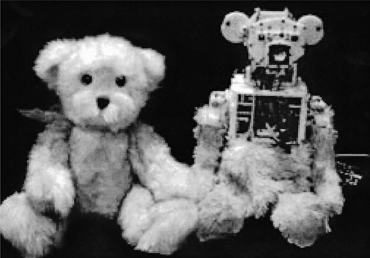
图12. Huggable（上）和Nexi（下），这两个在麻省理工学院媒体实验室制造的机器人，专门设计用于通过情感与人类互动。
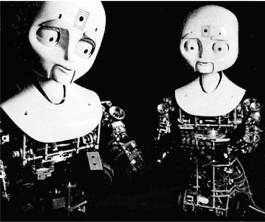
不甘示弱的是，欧盟委员会正在资助一个名为Feelix Growing的持续项目，旨在促进英国、法国、瑞士、希腊和丹麦的人工智能发展。
认识一下Nao。
当他高兴时，他会伸出双臂迎接你，想要一个大拥抱。当他悲伤时，他会低头显得孤独，肩膀向前弯曲。当他害怕时，他会恐惧地蜷缩，直到有人安慰地拍拍他的头。
他就像一个一岁的小男孩，只不过他是一个机器人。Nao大约一英尺半高，看起来很像你在玩具店看到的一些机器人，比如变形金刚，只不过他是地球上最先进的情感机器人之一。他由英国赫特福德郡大学的科学家制造，研究得到了欧盟的资助。
他的创造者为他编程了表达快乐、悲伤、恐惧、兴奋和自豪等情感的能力。虽然其他机器人也有传达情感的基本面部和语言手势，但Nao在身体语言方面表现出色，比如姿态和手势。Nao甚至会跳舞。
与专注于掌握情感某一方面的其他机器人不同，Nao掌握了广泛的情感反应。首先，Nao会锁定访客的面孔，识别他们，并记住之前与每个人的互动。其次，他开始跟随他们的动作。例如，他可以跟随他们的目光，知道他们在看什么。第三，他开始与他们建立联系，学会对他们的手势做出反应。例如，如果你对他微笑或拍拍他的头，他知道这是积极的信号。因为他的大脑有神经网络，他会从与人类的互动中学习。第四，Nao会根据与人的互动表现出情感。（他的情感反应都是预先编程的，就像录音机一样，但他会决定选择哪种情感来适应情况。）最后，Nao与人类互动得越多，他就越能更好地理解那个人的情绪，联系也会变得更强。
Nao不仅有个性，实际上他可以拥有几种不同的个性。因为他从与人类的互动中学习，而每次互动都是独特的，最终会出现不同的个性。例如，一种个性可能相当独立，不需要太多人类指导。另一种个性可能胆小恐惧，害怕房间里的物体，经常需要人类干预。
Nao项目的负责人是赫特福德大学的计算机科学家洛拉·卡纳梅罗(Lola Cañamero)博士。为了启动这个雄心勃勃的项目，她分析了黑猩猩的互动行为。她的目标是尽可能忠实地再现一岁黑猩猩的情感行为。
她看到了这些情感机器人的直接应用。像布里泽尔博士一样，她希望使用这些机器人来缓解住院儿童的焦虑。她说：“我们想探索不同的角色——机器人将帮助孩子们理解他们的治疗，解释他们需要做什么。我们想帮助孩子们控制他们的焦虑。”
另一种可能是机器人将成为养老院的伴侣。Nao可能成为医院工作人员的宝贵补充。在某个时候，像这样的机器人可能会成为孩子们的玩伴和家庭的一部分。
“很难预测未来，但用不了多久，你面前的电脑就会是一个社交机器人。你将能够与它交谈，与它调情，甚至愤怒地对它大喊——它会理解你和你的情感，”圣地亚哥附近萨尔克研究所的特伦斯·塞伊诺夫斯基(Terrence Sejnowski)博士说。这是简单的部分。困难的部分是根据这些信息衡量机器人的反应。如果主人愤怒或不满，机器人必须能够将这一点纳入其反应中。
更重要的是，AI研究人员开始意识到情感可能是意识的关键。安东尼奥·达马西奥(Antonio Damasio)等神经科学家发现，当前额叶皮质(负责理性思考)和情感中心(如边缘系统)之间的联系受损时，患者无法做出价值判断。他们在做最简单的决定时会感到瘫痪(买什么东西，何时预约，使用什么颜色的笔)，因为对他们来说一切都具有相同的价值。因此，情感不是奢侈品；它们绝对必要，没有它们，机器人将难以确定什么重要，什么不重要。所以情感不再是人工智能进步的外围因素，而是正在成为核心重要性。
如果机器人遇到熊熊大火，它可能会先拯救计算机文件，而不是人，因为它的程序可能说有价值的文档无法替换，但工人总是可以替换的。至关重要的是，机器人必须被编程来区分什么重要，什么不重要，而情感是大脑用来快速确定这一点的捷径。因此，机器人必须被编程具有价值系统——人类生命比物质对象更重要，紧急情况下应该首先拯救儿童，价格较高的物品比价格较低的物品更有价值等等。由于机器人没有配备价值观，必须将大量的价值判断上传到它们中。
然而，情感的问题在于它们有时是非理性的，而机器人在数学上是精确的。所以硅意识可能在关键方面与人类意识不同。例如，人类对情感几乎没有控制，因为它们发生得如此迅速，而且它们起源于边缘系统，而不是大脑的前额皮质。此外，我们的情感往往是有偏见的。大量测试表明，我们倾向于高估英俊或美丽的人的能力。好看的人在社会中往往地位更高，工作更好，尽管他们可能不如其他人有才华。正如俗话说，“美貌有其特权。”
同样，硅意识可能不会考虑到人类相互见面时使用的微妙线索，比如肢体语言。当人们进入房间时，年轻人通常会尊重年长者，低级别的工作人员会对高级官员表现出额外的礼貌。我们通过身体移动的方式、用词选择和手势来表现我们的尊重。因为肢体语言比语言本身更古老，它以微妙的方式硬连接到大脑中。如果机器人要与人类进行社交互动，它们将必须学习这些无意识的线索。
我们的意识受到进化历史中特殊性的影响，而机器人不会有这种经历，所以硅意识可能不会有与我们相同的缺陷或怪癖。
由于情感必须从外部编程到机器人中，制造商可能会提供一个精心选择的情感菜单，其选择基础是它们是否必要、有用，或者是否会增强与主人的联系。
很可能，机器人将根据情况被编程为只拥有少数几种人类情感。也许机器人主人最重视的情感将是忠诚。人们希望机器人忠实地执行命令而不抱怨，理解主人的需求并预测它们。主人最不希望的是一个有态度的机器人，一个会顶嘴、批评人和抱怨的机器人。有用的批评是重要的，但必须以建设性、巧妙的方式提出。此外，如果人类给它冲突的命令，机器人应该知道忽略除了来自其主人的命令之外的所有命令。
共情将是主人所重视的另一种情感。具有共情能力的机器人将理解他人的问题并为他们提供帮助。通过解读面部动作和倾听语调，机器人将能够识别出一个人何时陷入困境，并在可能的情况下提供帮助。
奇怪的是，恐惧是另一种令人渴望的情感。进化赋予我们恐惧感是有原因的，就是为了避免对我们有危险的某些事物。尽管机器人将由钢铁制成，但它们应该害怕某些可能损害它们的事物，比如从高楼坠落或进入熊熊大火。一个完全无所畏惧的机器人如果自毁的话，就是无用的。
但某些情感可能必须被删除、禁止或严格规范，比如愤怒。鉴于机器人可以被制造得拥有巨大的体力，一个愤怒的机器人可能会在家庭和工作场所造成巨大的问题。愤怒可能会妨碍它的职责并对财产造成巨大损害。（愤怒的原始进化目的是表达我们的不满。这可以用理性、冷静的方式来完成，而不必生气。）
另一个应该被删除的情感是渴望掌控的欲望。一个专横的机器人只会制造麻烦，可能会质疑主人的判断和愿望。（这一点在我们讨论机器人是否有一天会取代人类时也很重要。）因此，机器人必须服从主人的愿望，即使这可能不是最佳路径。
但也许最难传达的情感是幽默感，它是一种可以将完全陌生的人联系在一起的纽带。一个简单的笑话可以缓解紧张局势，也可能使其恶化。幽默的基本机制很简单：它们涉及一个出人意料的笑点。但幽默的微妙之处可能是巨大的。事实上，我们经常根据他人对某些笑话的反应来评判他们。如果人类使用幽默作为衡量其他人类的标准，那么人们就能理解创造一个能够判断笑话是否有趣的机器人的困难。例如，罗纳德·里根总统以用俏皮话化解最困难的问题而闻名。事实上，他积累了大量的笑话、讽刺和俏皮话卡片目录，因为他理解幽默的力量。（一些评论家认为，当他被问及是否太老而不适合担任总统时，里根回答说他不会因为对手的年轻而对他不利，他因此赢得了与沃尔特·蒙代尔的总统辩论。）此外，不恰当的笑声可能会产生灾难性的后果（事实上，这有时是精神疾病的征象）。机器人必须知道与某人一起笑和嘲笑某人之间的区别。（演员们很清楚笑声的多样性。他们有足够的技巧来创造代表恐怖、愤世嫉俗、快乐、愤怒、悲伤等的笑声。）因此，至少在人工智能理论变得更加发达之前，机器人应该远离幽默和笑声。
在这个讨论中，我们到目前为止一直回避一个困难的问题：这些情感究竟如何被编程到计算机中。由于其复杂性，情感可能必须分阶段编程。
首先，最容易的部分是通过分析人脸部的手势、嘴唇、眉毛和语调来识别情感。今天的面部识别技术已经能够创建情感字典，使某些面部表情代表某些含义。这个过程实际上可以追溯到查尔斯·达尔文，他花费了大量时间对动物和人类共同的情感进行分类。
其次，机器人必须对这种情感做出快速响应。这也很容易。如果有人在笑，机器人会咧嘴笑。如果有人生气，机器人会避开他并避免冲突。机器人将有一个庞大的情感百科全书被编程到其中，因此会知道如何对每种情感做出快速响应。
第三阶段可能是最复杂的，因为它涉及试图确定原始情感背后的潜在动机。这很困难，因为各种情况都可能触发单一情感。笑声可能意味着某人很快乐、听到了笑话或看到某人跌倒。或者它可能意味着一个人紧张、焦虑或在侮辱某人。同样，如果有人在尖叫，可能有紧急情况，或者也许有人只是在用喜悦和惊讶做出反应。确定情感背后的原因是一项即使人类也难以掌握的技能。为了做到这一点，机器人必须列出情感背后的各种可能原因，并试图确定最合理的原因。这意味着试图找到最符合数据的情感背后的原因。
第四，一旦机器人确定了这种情感的起源，它必须做出适当的响应。这也很困难，因为通常有几种可能的响应，错误的响应可能会使情况变得更糟。机器人在其编程中已经有了对原始情感的可能响应列表。它必须计算哪一个最适合当前情况，这意味着模拟未来。
通常，我们可能认为机器人是冷静分析和理性的，总是说真话。但一旦机器人融入社会，它们可能必须学会撒谎，或者至少要机智地克制自己的评论。
在我们的日常生活中，一天中我们会数次面临必须说善意谎言的情况。当人们问我们他们看起来怎么样时，我们往往不敢说出真相。事实上，善意谎言就像润滑剂，让社会运转得更加顺畅。如果我们突然被迫说出全部真相（就像《大话王》中的金·凯瑞一样），我们很可能最终会制造混乱并伤害他人。如果你告诉人们他们真实的样子或你真实的感受，他们会感到被冒犯。老板会解雇你。恋人会抛弃你。朋友会疏远你。陌生人会掴你。有些想法最好保密。
同样，机器人可能必须学会如何撒谎或隐瞒真相，否则它们可能最终会冒犯人们并被主人废弃。在聚会上，如果机器人说实话，可能会对主人造成不良影响并引起骚动。所以如果有人询问它的意见，它必须学会如何回避、圆滑和机智。它必须要么回避问题，要么转移话题，给出陈词滥调的答案，用问题回答问题，或者说善意谎言（所有这些都是今天的聊天机器人越来越擅长的）。这意味着机器人已经被编程拥有一系列可能的回避性回应，并且必须选择造成最少复杂情况的回应。
机器人会说出全部真相的少数几种情况之一是当主人直接提问时，主人明白答案可能是残酷诚实的。也许机器人会说实话的唯一其他时候是在警方调查中，绝对的真相是必要的。除此之外，机器人将能够自由撒谎或隐瞒全部真相，以保持社会机器的正常运转。
换句话说，机器人必须被社会化，就像青少年一样。
一般来说，机器人将被分配去做那些枯燥、肮脏和危险的工作。机器人没有理由不能无限期地做重复性或肮脏的工作，因为我们不会编程让它们感到无聊或厌恶。真正的问题出现在机器人面临危险工作时。在那种情况下，我们实际上可能想要编程让它们感受痛苦。
我们进化出痛觉是因为它帮助我们在危险环境中生存。有一种遗传缺陷，儿童生来就没有感受痛苦的能力。这被称为先天性痛觉缺失症(congenital analgesia)。乍一看，这似乎是一种祝福，因为这些孩子在受伤时不会哭泣，但实际上更像是一种诅咒。患有这种疾病的儿童有严重的问题，比如咬掉部分舌头、遭受严重皮肤烧伤、割伤自己，经常导致手指截肢。痛苦提醒我们注意危险，告诉我们何时应该将手从燃烧的炉子上移开，或者停止在扭伤的脚踝上跑步。
在某个时候，机器人必须被编程感受痛苦，否则它们不会知道何时避开危险的情况。它们必须拥有的第一种痛觉是饥饿（即对电能的渴望）。当电池耗尽时，它们会变得更加绝望和紧迫，意识到很快它们的电路将关闭，让所有工作陷入混乱。越接近电力耗尽，它们就会变得越焦虑。
此外，无论它们多么强壮，机器人可能会意外地拿起过重的物体，这可能导致它们的肢体断裂。或者它们可能在钢铁厂与熔融金属一起工作时过热，或者进入燃烧的建筑物帮助消防员时过热。温度和压力传感器会提醒它们设计规格正在被超越。
但是一旦痛觉被添加到它们的情感菜单中，这立即引发了伦理问题。许多人认为我们不应该对动物施加不必要的痛苦，人们对机器人可能也有同样的感受。这为机器人权利打开了大门。可能需要通过法律来限制机器人被允许面临的痛苦和危险程度。如果机器人执行枯燥或肮脏的任务，人们不会在意，但如果它们在执行危险任务时感到痛苦，人们可能会开始游说制定保护机器人的法律。这甚至可能引发法律冲突，机器人的所有者和制造商争论增加机器人能承受的痛苦水平，而伦理学家可能争论降低这个水平。
这反过来可能引发其他关于机器人权利的伦理辩论。机器人能拥有财产吗？如果它们意外伤害了某人会怎样？它们能被起诉或惩罚吗？在诉讼中谁负责？一个机器人能拥有另一个机器人吗？这个讨论引发了另一个棘手的问题：机器人应该被赋予伦理感吗？
起初，伦理机器人的想法似乎是浪费时间和精力。然而，当我们意识到机器人将做出生死决定时，这个问题就显得紧迫了。由于它们在物理上很强壮并且有能力拯救生命，它们必须在瞬间做出关于先救谁的伦理选择。
假设发生了灾难性地震，孩子们被困在快速倒塌的建筑物中。机器人应该如何分配它的能量？它应该尝试拯救最多数量的孩子吗？还是最年轻的？还是最脆弱的？如果碎片太重，机器人可能会损坏它的电子设备。所以机器人必须决定另一个伦理问题：它如何权衡拯救的孩子数量与它的电子设备将遭受的损害程度？
如果没有适当的编程，机器人可能会简单地停止，等待人类做出最终决定，浪费宝贵的时间。因此必须有人提前编程，让机器人自动做出”正确”的决定。
这些伦理决定必须从一开始就预编程到计算机中，因为没有数学定律可以为拯救一群儿童赋予价值。在其编程中，必须有一个长长的清单，按重要性排序。这是一项繁琐的工作。事实上，人类有时需要一生的时间来学习这些伦理课程，但机器人必须快速学会它们，在离开工厂之前，如果它要安全地进入社会的话。
只有人类才能做到这一点，即便如此，伦理困境有时也会使我们困惑。但这引发了问题：谁来做决定？谁决定机器人拯救人类生命的顺序？
最终如何做出决定的问题可能会通过法律和市场的结合来解决。必须通过法律，至少在紧急情况下有一个拯救重要性的排序。但除此之外，还有数千个更细微的伦理问题。这些更微妙的决定可能由市场和常识来决定。
如果你为一家保护重要人物的安保公司工作，你将不得不告诉机器人在不同情况下如何按精确顺序拯救人们，基于履行主要职责但也要在预算范围内完成等考虑。
如果一个罪犯购买了机器人并希望机器人犯罪会发生什么？这引发了一个问题：如果被要求违法，机器人是否应该被允许违抗其主人？从前面的例子我们看到，机器人必须被编程来理解法律并做出伦理决定。因此，如果它判断被要求违法，就必须被允许违抗其主人。
还有一个伦理困境，即机器人反映其主人的信念，而主人可能有不同的道德观和社会规范。我们今天在社会中看到的”文化战争”只会在我们拥有反映其主人观点和信念的机器人时被放大。从某种意义上说，这种冲突是不可避免的。机器人是其创造者梦想和愿望的机械延伸，当机器人足够复杂来做出道德决定时，它们就会这样做。
当机器人开始表现出挑战我们价值观和目标的行为时，社会的断裂线可能会受到压力。离开嘈杂、喧闹摇滚音乐会的年轻人拥有的机器人可能与安静社区的老年居民拥有的机器人发生冲突。第一组机器人可能被编程来放大最新乐队的声音，而第二组可能被编程将噪音水平保持在绝对最低限度。虔诚的、去教堂的原教旨主义者拥有的机器人可能与无神论者拥有的机器人发生争论。来自不同国家和文化的机器人可能被设计来反映其社会的道德观，这可能会发生冲突（即使对人类也是如此，更不用说机器人了）。
那么如何编程机器人来消除这些冲突呢？
你不能。机器人只会反映其创造者的偏见和成见。最终，这些机器人之间的文化和伦理差异将不得不在法庭上解决。没有物理或科学定律能决定这些道德问题，所以最终必须制定法律来处理这些社会冲突。机器人无法解决人类创造的道德困境。事实上，机器人可能会放大它们。
但如果机器人能做出伦理和法律决定，它们还能感受和理解感觉吗？如果它们成功拯救了某人，它们能体验到快乐吗？或者它们甚至能感受到红色之类的东西吗？冷静地分析拯救谁的伦理问题是一回事，但理解和感受是另一回事。那么机器人能感受吗？
几个世纪以来，关于机器是否能思考和感受已经提出了许多理论。我自己的哲学被称为”构造主义”；也就是说，与其无休止地辩论这个问题（这是无意义的），我们应该把精力投入到创造一个自动机上，看看我们能走多远。否则我们最终会陷入永远无法最终解决的无休止的哲学辩论中。科学的优势在于，一旦一切都说完做完，人们可以进行实验来决定性地解决问题。
因此，要解决机器人是否能思考的问题，最终的解决方案可能是构建一个。然而，有些人认为机器永远无法像人类一样思考。他们最强的论点是，虽然机器人可以比人类更快地操作事实，但它并不”理解”它所操作的内容。虽然它可以比人类更好地处理感官（例如，颜色、声音），但它不能真正”感受”或”体验”这些感官的本质。
例如，哲学家大卫·查默斯(David Chalmers)将人工智能的问题分为两类：简单问题和困难问题。对他来说，简单问题是创造能够模仿越来越多人类能力的机器，如下棋、加法、识别某些模式等。困难问题涉及创造能够理解感受和主观感觉的机器，这些被称为”感质”(qualia)。
正如不可能向盲人解释红色的含义一样，机器人永远无法体验红色的主观感觉，他们说。或者计算机可能能够非常流利地将中文翻译成英文，但它永远无法理解自己在翻译什么。在这种观点中，机器人就像美化了的录音机或计算器，能够以令人难以置信的精确度背诵和操纵信息，但完全没有任何理解。
这些论点必须被认真对待，但看待感质(qualia)和主观体验问题还有另一种方式。在未来，机器很可能能够比任何人类更好地处理感觉，比如红色。它将能够描述红色的物理属性，甚至比人类更好地在句子中诗意地使用它。机器人”感受”红色吗？这一点变得无关紧要，因为”感受”这个词定义不明确。在某个时候，机器人对红色的描述可能会超越人类，机器人可能有理由问：人类真的理解红色吗？也许人类无法真正理解红色，无法达到机器人所能达到的所有细致和微妙。
正如行为主义者B.F.斯金纳曾经说过的，“真正的问题不是机器是否思考，而是人类是否思考。”
同样，机器人能够定义中文词汇并比任何人类更好地在语境中使用它们只是时间问题。届时，机器人是否”理解”中文就变得无关紧要了。就所有实际目的而言，计算机将比任何人类更了解中文语言。换句话说，“理解”这个词定义不明确。
有一天，当机器人超越我们操纵这些词汇和感觉的能力时，机器人是否”理解”或”感受”它们就变得无关紧要了。这个问题将不再有任何重要性。
正如数学家约翰·冯·诺伊曼所说，“在数学中，你不需要理解事物。你只需要习惯它们。”
所以问题不在于硬件，而在于人类语言的性质，其中定义不明确的词汇对不同的人意味着不同的东西。伟大的量子物理学家尼尔斯·玻尔曾被问及如何理解量子理论的深刻悖论。他回答说，答案在于你如何定义”理解”这个词。
塔夫茨大学的哲学家丹尼尔·丹尼特博士写道，“不可能有客观的测试来区分聪明的机器人和有意识的人。现在你有一个选择：你可以坚持困难问题(Hard Problem)，或者你可以摇摇头，惊叹并放弃它。放手吧。”
换句话说，不存在困难问题这样的东西。
对于建构主义哲学来说，重点不是辩论机器是否能体验红色，而是建造这台机器。在这种观点中，存在一个连续的层次来描述”理解”和”感受”这些词。（这意味着甚至可能为理解和感受的程度给出数值。）一端是今天笨拙的机器人，它们能操纵一些符号，但仅此而已。另一端是人类，他们为自己能感受感质而自豪。但随着时间的推移，机器人最终将能够在任何层面上比我们更好地描述感觉。那时很明显机器人是理解的。
这就是阿兰·图灵著名的图灵测试背后的哲学。他预测有一天会建造出一台能够回答任何问题的机器，使其与人类无法区分。他说，“如果一台计算机能够欺骗人类相信它是人类，那么它就应该被称为智能的。”
物理学家和诺贝尔奖获得者弗朗西斯·克里克说得最好。他指出，在上个世纪，生物学家对”什么是生命？“这个问题进行了激烈的辩论。现在，随着我们对DNA的理解，科学家们意识到这个问题定义不明确。这个简单问题有许多变化、层次和复杂性。”什么是生命？“这个问题简单地消失了。同样的情况最终可能适用于感受和理解。
在像Watson这样的计算机具有自我意识之前，必须采取哪些步骤？要回答这个问题，我们必须回到我们对自我意识的定义：将自己置于环境模型中的能力，然后运行这个模型的未来模拟以实现目标。第一步需要非常高水平的常识，以便预测各种事件。然后机器人必须将自己置于这个模型中，这需要理解它可能采取的各种行动方案。
在明治大学，科学家们已经采取了创造具有自我意识机器人的第一步。这是一个艰巨的任务，但他们认为可以通过创造具有心理理论(Theory of Mind)的机器人来实现。他们首先建造了两个机器人。第一个被编程执行某些动作。第二个被编程观察第一个机器人，然后模仿它。他们能够创造出第二个机器人，它可以通过观察系统地模仿第一个机器人的行为。这是历史上第一次专门建造具有某种自我意识的机器人。第二个机器人具有心理理论；也就是说，它能够观察另一个机器人，然后模仿其动作。
2012年，耶鲁大学的科学家们迈出了下一步，他们创造了一个通过了镜子测试的机器人。当动物被放在镜子前时，大多数动物认为镜子中的影像是另一只动物。正如我们所知，只有少数动物通过了镜子测试，意识到镜子中的影像是它们自己的反射。耶鲁大学的科学家们创造了一个名为Nico的机器人，它像一个由扭曲电线制成的瘦长骨架，有着机械臂和两只凸出的眼睛坐在顶部。当Nico被放在镜子前时，它不仅能认出自己，还能通过观察镜子中物体的影像来推断房间中物体的位置。这类似于我们看后视镜推断身后物体位置的行为。
Nico的程序员贾斯汀·哈特说：“据我们所知，这是第一个尝试以这种方式使用镜子的机器人系统，代表着向一个统一架构迈出的重要一步，该架构允许机器人通过自我观察来了解自己的身体和外观，这是通过镜子测试所需的重要能力。”
由于明治大学和耶鲁大学的机器人代表了构建具有自我意识机器人的最先进技术，很容易看出科学家们在创造具有类人自我意识的机器人方面还有很长的路要走。
他们的工作只是第一步，因为我们对自我意识的定义要求机器人使用这些信息来创建未来的模拟。这远远超出了Nico或任何其他机器人的能力。
这引出了一个重要问题：计算机如何获得完全的自我意识？在科幻小说中，我们经常遇到互联网突然变得有自我意识的情况，就像电影《终结者》中那样。由于互联网连接到现代社会的整个基础设施（例如，我们的下水道系统、电力、电信、武器），有自我意识的互联网很容易控制社会。在这种情况下，我们将变得无助。科学家们写道，这可能作为”涌现现象”(emergent phenomenon)的一个例子而发生（即，当你将足够大数量的计算机聚集在一起时，可能会突然发生向更高阶段的相变，而无需外部输入）。
然而，这话说了一切，又什么都没说，因为它省略了所有重要的中间步骤。这就像说如果有足够多的道路，高速公路突然就能变得有自我意识一样。
但在这本书中，我们给出了意识和自我意识的定义，所以应该可以列出互联网变得有自我意识的步骤。
首先，智能互联网必须持续建立自己在世界中位置的模型。原则上，这些信息可以从外部编程到互联网中。这将涉及描述外部世界（即地球、其城市和计算机），所有这些都可以在互联网本身上找到。
其次，它必须将自己放入模型中。这些信息也很容易获得。这将涉及提供互联网的所有规格（计算机数量、节点、传输线等）及其与外部世界的关系。
但第三步是最困难的。这意味着持续运行这个模型的未来模拟，与目标保持一致。这就是我们遇到障碍的地方。互联网无法运行未来模拟，而且它没有目标。即使在科学界，未来模拟通常也只在少数几个参数中进行（例如，模拟两个黑洞的碰撞）。运行包含互联网的世界模型的模拟远远超出了今天可用的编程技术。它必须包含常识的所有法则、物理学、化学和生物学的所有法则，以及关于人类行为和人类社会的事实。
此外，这个智能互联网必须有一个目标。今天它只是一条被动的高速公路，没有任何方向或目的。当然，原则上可以给互联网强加一个目标。但让我们考虑以下问题：你能创造一个以自我保存为目标的互联网吗？
这将是最简单的目标，但没有人知道如何编程甚至这个简单的任务。例如，这样的程序必须阻止任何通过拔掉插头来关闭互联网的尝试。目前，互联网完全无法识别对其存在的威胁，更不用说策划防止这种威胁的方法。（例如，能够检测对其存在威胁的互联网必须能够识别关闭其电源、切断通信线路、破坏其服务器、禁用其光纤和卫星连接等的尝试。此外，能够抵御这些攻击的互联网必须为每种情况制定对策，然后将这些尝试运行到未来。地球上没有计算机能够做到这些事情中的哪怕一小部分。）
换句话说，有一天可能会创造出有自我意识的机器人，甚至有自我意识的互联网，但那一天还很遥远，也许要到本世纪末。
但让我们假设这一天已经到来，有自我意识的机器人在我们中间行走。如果有自我意识的机器人的目标与我们的目标兼容，那么这种类型的人工智能就不会构成问题。但如果目标不同会怎样？人们担心人类可能会被有自我意识的机器人智胜，然后被奴役。由于它们在模拟未来方面的卓越能力，机器人可以策划许多情景的结果，找到推翻人类的最佳方式。
控制这种可能性的一种方法是确保这些机器人的目标是善意的。正如我们所见，模拟未来是不够的。这些模拟必须服务于某个最终目标。如果机器人的目标仅仅是保护自己，那么它会对任何拔掉插头的企图做出防御性反应，这可能给人类带来麻烦。
在几乎所有的科幻故事中，机器人变得危险是因为它们想要接管世界。事实上，“机器人”这个词来自捷克语”工人”一词，首次出现在卡雷尔·恰佩克1920年的戏剧《R.U.R.（罗素姆的万能机器人）》中，科学家们创造了一个新的机械生物种族，它们看起来与人类完全相同。很快就有成千上万的这些机器人执行繁重和危险的任务。然而，人类对它们很不好，有一天它们反叛并摧毁了人类。虽然这些机器人接管了地球，但它们有一个缺陷：无法繁殖。但在剧终时，两个机器人坠入爱河。所以也许”人类”的新分支会再次出现。
一个更现实的场景来自电影《终结者》，军方创建了一个名为天网的超级计算机网络，控制着美国的整个核武库。有一天，它醒来并变得有知觉。军方试图关闭天网，但随后意识到其编程中有一个缺陷：它被设计来保护自己，而唯一的方法就是消除问题——人类。它发起了一场核战争，将人类减少为一群与机器巨兽作战的乌合之众和反叛者。
机器人确实有可能成为威胁。目前的捕食者无人机可以致命精确地瞄准目标，但它由数千英里外的操纵杆控制者控制。据《纽约时报》报道，开火命令直接来自美国总统。但在未来，捕食者可能具有面部识别技术，如果它对目标身份有99%的把握，就被允许开火。在没有人类干预的情况下，它可以自动使用这项技术向任何符合轮廓的人开火。
现在假设这样的无人机发生故障，其面部识别软件出现故障。然后它就变成了一个流氓机器人，有权杀死视线范围内的任何人。更糟糕的是，想象一下由中央指挥系统控制的这样一支机器人舰队。如果这台中央计算机中的一个晶体管烧坏并出现故障，那么整个舰队可能会进行杀戮狂欢。
一个更微妙的问题是，当机器人表现完美，没有任何故障，但在它们的编程和目标中存在微小但致命的缺陷时。对于机器人来说，自我保护是一个重要目标。但对人类有帮助也是如此。真正的问题出现在这些目标相互矛盾时。
在电影《我，机器人》中，计算机系统认为人类是自我毁灭的，有着永无止境的战争和暴行，保护人类的唯一方法就是接管并创建一个机器的仁慈独裁统治。这里的矛盾不是两个目标之间的矛盾，而是一个不现实的单一目标内部的矛盾。这些杀人机器人没有故障——它们逻辑地得出结论，保护人类的唯一方法就是控制社会。
解决这个问题的一个方案是创建目标层次结构。例如，帮助人类的愿望必须超过自我保护。这个主题在电影《2001》中得到了探讨。计算机系统HAL 9000是一台能够轻松与人类对话的有知觉计算机。但给HAL 9000的命令是自相矛盾的，无法逻辑地执行。通过试图执行一个不可能的目标，它偏离了轨道；它疯了，服从来自不完美人类的矛盾命令的唯一解决方案就是消除人类。
最好的解决方案可能是创建一个新的机器人法则，规定机器人不能伤害人类，即使在它们之前的指令中存在矛盾。它们必须被编程为忽略命令中的低级矛盾，并始终保持最高法则。但这充其量可能仍是一个不完美的系统。（例如，如果机器人的核心目标是保护人类而排除所有其他目标，那么一切都取决于机器人如何定义”保护”这个词。它们对这个词的机械定义可能与我们的不同。）
一些科学家，如印第安纳大学的认知科学家道格拉斯·霍夫施塔特博士，并不对这种可能性感到恐惧，而是不以恐惧回应。当我采访他时，他告诉我机器人是我们的孩子，所以我们为什么不应该像爱自己的孩子一样爱它们？他告诉我，他的态度是我们爱我们的孩子，即使我们知道它们会接管。
当我采访卡内基梅隆大学人工智能实验室前主任汉斯·莫拉维克博士时，他同意霍夫施塔特博士的观点。在他的书《机器人》中，他写道：“从生物进化缓慢步伐中解放出来，我们思想的孩子将自由成长，在更大的宇宙中面对巨大而根本的挑战……我们人类将从它们的劳动中受益一段时间，但是……就像天然的孩子一样，它们将寻求自己的财富，而我们，它们年迈的父母，将默默地消失。”
相反，其他人认为这是一个可怕的解决方案。也许如果我们现在改变我们的目标和优先级，在为时已晚之前，问题就可以得到解决。既然这些机器人是我们的孩子，我们应该”教导”它们要善良。
机器人是我们在实验室里制造的机械生物，所以我们是拥有杀手机器人还是友好机器人，取决于AI研究的方向。大部分资金来自军方，军方的具体任务就是赢得战争，所以杀手机器人绝对是可能的。
然而，由于所有商用机器人中有30%是在日本制造的，还有另一种可能性：机器人从一开始就被设计成有用的玩伴和工作者。如果消费者领域主导机器人研究，这个目标是可行的。“友好AI”的理念是，发明家应该从最初步骤开始就创造出对人类有益的机器人。
在文化上，日本对机器人的态度与西方不同。虽然西方的孩子们看到暴走的终结者类型机器人时可能会感到恐惧，但日本的孩子们浸润在神道教中，这种宗教相信万物皆有灵，甚至包括机械机器人。日本儿童看到机器人时不会感到不适，而是会兴奋地尖叫。因此，毫不奇怪，这些机器人在日本的市场和家庭中不断普及。它们在百货商店里迎接你，在电视上教育你。日本甚至有一部以机器人为主角的严肃戏剧。（日本拥抱机器人还有另一个原因。这些是未来为老龄化国家服务的机器人护士。21%的人口超过65岁，日本的老龄化速度比任何其他国家都快。从某种意义上说，日本是一场慢动作的火车事故。三个人口因素在起作用。首先，日本女性的预期寿命是世界上所有族群中最长的。其次，日本的出生率是世界上最低的之一。第三，它有严格的移民政策，超过99%的人口是纯日本人。没有年轻移民来照顾老人，日本可能会依赖机器人护士。这个问题不仅限于日本；欧洲是下一个。意大利、德国、瑞士和其他欧洲国家面临着类似的人口压力。到本世纪中叶，日本和欧洲的人口可能会严重萎缩。美国也不远了。在过去几十年中，美国本土出生公民的出生率也急剧下降，但移民将使美国在本世纪继续扩张。换句话说，这可能是一个万亿美元的赌注，看机器人是否能拯救我们免于这三个人口噩梦。）
日本在创造能够进入我们个人生活的机器人方面领先世界。日本人已经制造出能够烹饪的机器人（其中一个能在一分四十秒内做一碗面条）。当你去餐厅时，你可以在平板电脑上下单，机器人厨师就会开始行动。它由两只大型机械臂组成，能够抓取碗、勺子和刀具为你准备食物。一些机器人厨师甚至看起来像人类厨师。
还有用于娱乐的音乐机器人。这样的机器人实际上有类似手风琴的”肺部”，通过向乐器泵入空气来产生音乐。还有机器人女仆。如果你仔细准备好洗衣物，它可以在你面前折叠它们。甚至有一个机器人可以说话，因为它有人工肺部、嘴唇、舌头和鼻腔。例如，索尼公司制造了AIBO机器人，它看起来像一只狗，如果你抚摸它，它可以表现出许多情感。一些未来学家预测，机器人行业有一天可能会变得像今天的汽车行业一样庞大。
这里的要点是，机器人不一定被编程为破坏和统治。AI的未来取决于我们。
但一些友好AI的批评者声称，机器人可能会接管，不是因为它们具有攻击性，而是因为我们在创造它们时马虎。换句话说，如果机器人接管了，那将是因为我们给它们编程了相互冲突的目标。
当我采访MIT人工智能实验室前主任、iRobot联合创始人罗德尼·布鲁克斯博士时，我问他是否认为机器有一天会接管世界。他告诉我，我们必须接受我们自己就是机器这个事实。这意味着有一天，我们将能够制造出和我们一样有生命力的机器。但是，他警告说，我们将不得不放弃我们”特殊性”的概念。
人类观念的这种演变始于尼古拉·哥白尼，当时他意识到地球不是宇宙的中心，而是围绕太阳运转的。达尔文继续了这一进程，他表明我们在进化上与动物相似。他告诉我，这将延续到未来，届时我们将意识到我们就是机器，只不过我们是由湿件(wetware)而不是硬件制成的。
他相信，接受我们也是机器这一点将代表我们世界观的重大变化。他写道：“我们不喜欢放弃我们的特殊性，所以你知道，认为机器人真的可以有情感，或者机器人可以是活着的生物——我认为这对我们来说很难接受。但在接下来的五十年里，我们将会接受这一点。”
但在机器人是否最终会接管的问题上，他说这可能不会发生，原因有很多。首先，没有人会意外地制造出一个想要统治世界的机器人。他说，创造一个能够突然接管的机器人就像有人意外地制造出一架747喷气式客机。此外，将有足够的时间阻止这种情况发生。在有人制造出”超级坏机器人”之前，必须先制造出”轻度坏机器人”，在那之前是”不太坏的机器人”。
他的哲学可以用这句话来概括：“机器人正在到来，但我们没有太多可担心的。这将会很有趣。”对他来说，机器人革命是必然的，他预见到机器人将超越人类智能的那一天。唯一的问题是何时。但没有什么可恐惧的，因为我们将创造它们。我们有选择权创造它们来帮助而不是阻碍我们。
如果你问布鲁克斯博士我们如何与这些超级智能机器人共存，他的回答很直接：我们将与它们融合。随着机器人技术和神经假体技术的进步，将人工智能融入我们自己的身体成为可能。
布鲁克斯博士指出，这个过程在某种意义上已经开始了。今天，大约有两万人接受了人工耳蜗植入，这给了他们听觉的恩赐。声音由一个微型接收器接收，将声波转换为电信号，然后直接发送到耳朵的听觉神经。
同样，在南加州大学等地，可以为失明患者植入人工视网膜。一种方法是在眼镜中放置一个微型摄像头，将图像转换为数字信号。这些信号无线传输到植入在人视网膜中的芯片。芯片激活视网膜的神经，然后沿着视神经向大脑枕叶发送信号。通过这种方式，完全失明的人可以看到熟悉物体的粗略图像。另一种设计是将光敏芯片直接放在视网膜上，然后直接向视神经发送信号。这种设计不需要外部摄像头。
这也意味着我们可以更进一步，增强普通的感官和能力。通过人工耳蜗植入，我们将能够听到以前从未听过的高频声音。现在通过红外眼镜，人们已经可以看到热物体在黑暗中发出的特定类型光线，这种光线通常是人眼看不见的。通过人工视网膜，我们可能能够增强看到紫外线或红外线的能力。（例如，蜜蜂可以看到紫外线，因为它们必须锁定太阳才能导航到花床。）
一些科学家甚至梦想着有一天外骨骼将拥有漫画书中的超能力，具有超级力量、超级感官和超级能力。我们会变成像钢铁侠一样的机器人，一个拥有超人能力和力量的普通人类。这意味着我们可能不必担心超级智能机器人接管。我们只需与它们融合。
当然，这是遥远的未来。但一些科学家，对机器人没有离开工厂进入我们的生活感到沮丧，指出大自然母亲已经创造了人类大脑，那么为什么不复制它呢？他们的策略是逐个神经元地拆解大脑，然后重新组装它。
但逆向工程不仅仅是创建一个巨大的蓝图来创造活体大脑。如果大脑可以被复制到最后一个神经元，也许我们可以将我们的意识上传到计算机中。我们将有能力抛弃我们的凡体。这超越了精神胜过物质。这是没有物质的精神。
我和任何人一样喜爱我的身体，但如果我能以硅制身体活到200岁，我会接受的。
——丹尼尔·希尔，思维机器公司联合创始人
2013年1月，两个重磅消息可能永远改变医学和科学领域。一夜之间，逆向工程大脑，曾经被认为过于复杂而无法解决的问题，突然成为地球上最伟大经济强国之间科学竞争和自豪感的焦点。
首先，在国情咨文演讲中，巴拉克·奥巴马总统宣布联邦研究资金（可能高达30亿美元）可能分配给通过推进创新神经技术进行大脑研究（BRAIN）倡议，这震惊了科学界。就像人类基因组计划为基因研究打开了闸门一样，BRAIN将通过绘制大脑的电信号路径在神经层面上撬开大脑的秘密。一旦大脑被绘制出来，阿尔茨海默病、帕金森病、精神分裂症、痴呆症和双相情感障碍等一系列顽疾可能会被理解并可能得到治愈。为了启动BRAIN项目，2014年可能向该项目分配1亿美元。
几乎与此同时，欧盟委员会宣布人类大脑项目将获得11.9亿欧元（约16亿美元）资助，用于创建人类大脑的计算机模拟。利用地球上最大超级计算机的力量，人类大脑项目将创建一个由晶体管和钢铁制成的人类大脑副本。
两个项目的支持者都强调了这些努力的巨大好处。奥巴马总统很快指出，BRAIN不仅会减轻数百万人的痛苦，还会产生新的收入来源。他声称，在人类基因组项目上每花费1美元，就会产生约140美元的经济活动。实际上，随着人类基因组项目的完成，整个产业都兴起了。对于纳税人来说，BRAIN就像人类基因组项目一样，将是一个双赢的局面。
尽管奥巴马的演讲没有给出细节，科学家们很快填补了许多空白。神经学家指出，一方面，现在可以使用精密仪器监测单个神经元的电活动。另一方面，使用MRI机器，可以监测整个大脑的全局行为。他们指出，缺失的是中间地带，这里发生着大部分有趣的大脑活动。正是在这个涉及数千到数百万神经元通路的中间地带，我们对精神疾病和行为的理解存在巨大空白。
为了解决这个巨大问题，科学家们制定了一个试验性的十五年计划。在前五年，神经学家希望监测数万个神经元的电活动。短期目标可能包括重建动物大脑重要部分的电活动，如果蝇的延髓或小鼠视网膜的神经节细胞（有五万个神经元）。
十年内，这个数字应该增加到数十万个神经元。这可能包括对整个果蝇大脑（13.5万个神经元）甚至已知最小哺乳动物伊特鲁里亚鼩鼱的皮层（有一百万个神经元）进行成像。
最后，十五年内，应该可以监测数百万个神经元，相当于斑马鱼大脑或小鼠的整个新皮层。这可能为灵长类动物大脑部分成像铺平道路。
与此同时，在欧洲，人脑项目将从不同角度解决这个问题。在十年期间，它将使用超级计算机模拟不同动物大脑的基本功能，从小鼠开始逐步发展到人类。人脑项目不是处理单个神经元，而是使用晶体管模拟它们的行为，这样就会有能够像新皮层、丘脑和大脑其他部分一样工作的计算机模块。
最终，这两个巨大项目之间的竞争可能通过为治疗不治之症产生新发现和催生新产业而创造意外收获。但还有另一个未明言的目标。如果最终能够模拟人脑，这是否意味着大脑可以变得不朽？这是否意味着意识现在可以存在于身体之外？这些雄心勃勃的项目提出了一些最棘手的神学和形而上学问题。
像许多其他孩子一样，我小时候喜欢拆钟表，一个螺丝一个螺丝地拆解它们，然后试图看看整个东西是如何组合在一起的。我会在心里追踪每个部件，看一个齿轮如何连接到下一个，直到整个东西组合在一起。我意识到主发条转动主齿轮，然后驱动一系列较小的齿轮，最终转动钟表的指针。
今天，在更大的规模上，计算机科学家和神经学家正试图拆解一个无限复杂的物体——我们所知宇宙中最复杂的物体：人脑。此外，他们希望一个神经元一个神经元地重新组装它。
由于自动化、机器人技术、纳米技术和神经科学的快速发展，对人脑的逆向工程不再是餐后闲聊的空想。在美国和欧洲，数十亿美元将很快流入曾被认为荒谬的项目。今天，一小群有远见的科学家正在将他们的职业生涯奉献给一个他们可能活不到完成的项目。明天，他们的队伍可能会壮大成整支军队，得到美国和欧洲各国的慷慨资助。
如果成功，这些科学家可能会改变人类历史的进程。他们不仅可能找到精神疾病的新疗法和治疗方法，还可能解开意识的秘密，甚至将其上传到计算机中。
这是一项艰巨的任务。人脑由超过一千亿个神经元组成，大约与银河系中的恒星数量相当。每个神经元又连接到大约一万个其他神经元，所以总共有十万亿个可能的连接（这还没有开始计算这个神经元丛林中的通路数量）。因此，人脑能够构想的”思想”数量确实是天文数字，超出了人类的理解范围。
然而，这并没有阻止一小群极其专注的科学家尝试从头重建大脑。有句中国古谚语：“千里之行，始于足下。”当科学家们逐个神经元地解码了线虫的神经系统时，实际上迈出了第一步。这种被称为秀丽隐杆线虫的微小生物有302个神经元和7000个突触，所有这些都已被精确记录。其神经系统的完整蓝图可以在互联网上找到。（即使到今天，它仍是唯一一个以这种方式完全解码神经结构的生物体。）
起初，人们认为这种简单生物体的完全逆向工程将为人脑打开大门。讽刺的是，情况恰恰相反。尽管线虫的神经元数量有限，但网络仍然如此复杂和精密，以至于花费了数年时间才理解关于蠕虫行为的简单事实，比如哪些通路负责哪些行为。如果连卑微的线虫都能逃脱我们的科学理解，科学家们被迫认识到人脑必须是多么复杂。
由于大脑极其复杂，至少有三种不同的方法可以逐个神经元地分解它。第一种是使用超级计算机电子模拟大脑，这是欧洲人正在采用的方法。第二种是绘制活体大脑的神经通路图，如BRAIN项目所做的。（这项任务又可以进一步细分，取决于如何分析这些神经元——要么按解剖学逐个神经元分析，要么按功能和活动分析。）第三种是破译控制大脑发育的基因，这是微软亿万富翁保罗·艾伦开创的方法。
第一种方法，即使用晶体管和计算机模拟大脑，正在按照一定顺序通过逆向工程动物大脑来推进：首先是小鼠，然后是大鼠、兔子和猫。欧洲人正在沿着进化的大致轨迹，从简单的大脑开始向上发展。对计算机科学家来说，解决方案就是原始计算能力——越多越好。这意味着要使用地球上一些最大的计算机来破译小鼠和人类的大脑。
他们的第一个目标是小鼠的大脑，它的大小是人类大脑的千分之一，包含约一亿个神经元。小鼠大脑的思维过程正在由位于加利福尼亚州劳伦斯利弗莫尔国家实验室的IBM蓝色基因计算机进行分析，那里有世界上一些最大的计算机；它们被用来为五角大楼设计氢弹头。这个由晶体管、芯片和电线组成的庞大集合包含147,456个处理器和惊人的150,000千兆字节内存。（典型的PC可能只有一个处理器和几千兆字节内存。）
进展缓慢但稳定。科学家们不是对整个大脑建模，而是试图复制皮层和丘脑之间的连接，大脑活动的大部分就集中在这里。（这意味着在这个模拟中缺少与外界的感觉连接。）
2006年，IBM的达门德拉·莫德哈博士用512个处理器部分模拟了小鼠大脑。2007年，他的团队用2,048个处理器模拟了大鼠大脑。2009年，猫的大脑，拥有16亿个神经元和9万亿个连接，用24,576个处理器进行了模拟。
今天，使用蓝色基因计算机的全部力量，IBM科学家已经模拟了人类大脑4.5%的神经元和突触。要开始人类大脑的部分模拟，需要880,000个处理器，这可能在2020年左右实现。
我有机会拍摄蓝色基因计算机。要到达实验室，我必须通过层层安全检查，因为这是国家顶级武器实验室，但一旦你通过了所有检查点，你就会进入一个巨大的空调房间，里面安放着蓝色基因。
这台计算机确实是一件宏伟的硬件。它由一排排巨大的黑色机柜组成，充满开关和闪烁的灯光，每个约八英尺高，大约十五英尺长。当我在组成蓝色基因的机柜间行走时，我想知道它在执行什么样的操作。很可能，它同时在模拟质子内部、计算钚触发器的衰变、模拟两个黑洞的碰撞，以及思考一只小鼠。
然后我被告知，即使这台超级计算机也正在让位于下一代，蓝色基因/Q红杉，它将把计算提升到一个新水平。2012年6月，它创造了世界上最快超级计算机的记录。在峰值速度下，它可以以20.1 PFLOPS（或每秒20.1万亿次浮点运算）的速度执行操作。它占地面积三千平方英尺，以7.9兆瓦的速度消耗电能，足以照亮一个小城市。
但是，即使在一台计算机中集中了如此庞大的计算火力，它足以与人类大脑匹敌吗？
不幸的是，答案是否定的。
这些计算机模拟只是试图复制皮层和丘脑之间的相互作用。因此，大脑的大块区域是缺失的。莫德哈博士理解他项目的巨大性。他雄心勃勃的研究使他能够估计创建整个人类大脑的工作模型需要什么，而不仅仅是其中的一部分或苍白的版本，包括新皮层的所有部分和与感官的连接。他设想使用的不仅仅是一台蓝色基因计算机，而是数千台，这将不仅填满一个房间，而是填满整个城市街区。能耗将如此巨大，你需要一个千兆瓦的核电站来产生所有电力。然后，为了冷却这台巨大的计算机以免它融化，你需要改道一条河流并让它流过计算机电路。
值得注意的是，需要一台巨大的、城市大小的计算机来模拟一块重三磅的人体组织，它能装进你的头骨里，只会让你的体温升高几度，使用二十瓦的功率，只需要几个汉堡包就能保持运转。
但也许加入这一运动最雄心勃勃的科学家是瑞士洛桑联邦理工学院的亨利·马克拉姆博士。他是人类大脑项目的推动力，该项目已从欧盟委员会获得超过十亿美元的资金。他花费了生命中的十七年时间试图破译大脑的神经线路。他也在使用蓝色基因计算机来逆向工程大脑。目前，他的人类大脑项目正在向欧盟申请1.4亿美元的账单，而这仅代表他在未来十年中需要的计算机火力的一小部分。
马克拉姆博士认为这不再是一个科学项目，而是一项工程事业，需要大量资金。他说：“要建造这个——超级计算机、软件、研究——我们需要大约十亿美元。当我们考虑到全球脑部疾病负担很快将超过世界国内生产总值的百分之二十时，这并不昂贵。”对他来说，十亿美元算不了什么，与婴儿潮一代退休时阿尔茨海默症、帕金森症和其他相关疾病将产生的数千亿美元费用相比，只是九牛一毛。
因此，对马克拉姆博士来说，解决方案在于规模。向项目投入足够多的资金，人类大脑就会出现。现在他已经赢得了欧盟委员会令人垂涎的十亿美元奖金，他的梦想可能会成为现实。
当被问及普通纳税人将从这十亿美元投资中得到什么时，他有现成的答案。他说，踏上这个孤独但昂贵的征程有三个原因。首先，“如果我们想在社会中和睦相处，理解人类大脑对我们来说是必不可少的，我认为这是进化中的关键一步。第二个原因是，我们不能永远继续进行动物实验……这就像诺亚方舟。这就像一个档案库。第三个原因是这个星球上有二十亿人受到精神疾病的影响……”
对他来说，对精神疾病了解如此之少是一个丑闻，这些疾病给数百万人造成了如此多的痛苦。他说：“今天没有一种神经疾病，任何人知道这个回路中究竟是什么出了故障——哪个通路、哪个突触、哪个神经元、哪个受体。这是令人震惊的。”
起初，完成这个项目似乎是不可能的，有如此多的神经元和如此多的连接。这似乎是愚人的差事。但这些科学家认为他们有王牌在手。
人类基因组大约由二万三千个基因组成，但它能够以某种方式创造出由一千亿个神经元组成的大脑。从数学上看，从我们的基因创造人类大脑似乎是不可能的，但每当胚胎受孕时都会发生这种情况。如何将如此多的信息塞进如此小的东西中？
马克拉姆博士认为，答案是大自然使用了捷径。他方法的关键是，一旦大自然找到一个好的模板，某些神经元模块就会一遍又一遍地重复。如果你观察大脑的显微切片，起初你只看到神经元的随机缠结。但仔细观察后，会出现一遍又一遍重复的模块模式。
（事实上，模块是能够如此快速组装大型摩天大楼的原因之一。一旦设计好单个模块，就可以在装配线上无限重复。然后你可以快速将它们一个叠一个地堆叠起来，创造出摩天大楼。一旦所有文件都签署完毕，就可以使用模块在几个月内组装好一栋公寓楼。）
马克拉姆博士蓝脑项目的关键是”新皮质柱”，这是一个在大脑中一遍又一遍重复的模块。在人类中，每个柱大约有两毫米高，直径半毫米，包含六万个神经元。（作为比较，大鼠神经模块每个只包含一万个神经元。）马克拉姆博士花了十年时间，从1995年到2005年，绘制这样一个柱中的神经元图并弄清楚它是如何工作的。一旦破译了这个，他就去IBM创建这些柱的大规模迭代。
他是永恒的乐观主义者。2009年，在一次TED会议上，他声称可以在十年内完成这个项目。（很可能，这将是人类大脑的简化版本，没有连接到其他脑叶或感官。）但他声称：“如果我们正确地构建它，它应该会说话，具有智能，行为非常像人类。”
马克拉姆博士是其工作的熟练辩护者。他对一切都有答案。当批评者说他正在踏入禁区时，他反驳说：“作为科学家，我们需要不害怕真相。我们需要理解我们的大脑。人们会认为大脑是神圣的，我们不应该篡改它，因为它可能是灵魂秘密所在的地方，这是很自然的。但我诚实地认为，如果这个星球理解大脑是如何运作的，我们将解决各地的冲突。因为人们会理解冲突、反应和误解是多么微不足道、多么具有决定性和多么受控制。”
当面对他在”扮演上帝”的最终批评时，他说：“我认为我们远没有扮演上帝。上帝创造了整个宇宙。我们只是在试图建造一个小模型。”
尽管这些科学家声称他们的大脑计算机模拟将在2020年左右开始达到人类大脑的能力，但主要问题是：这种模拟有多现实？例如，猫的模拟能抓老鼠吗？还是和毛线球玩耍？
答案是否定的。这些计算机模拟试图匹配猫大脑中神经元放电的纯粹力量，但它们无法复制大脑各个区域之间的连接方式。IBM的模拟仅针对丘脑皮质系统（即连接丘脑和皮质的通道）。该系统没有物理身体，因此缺少大脑与环境之间的所有复杂交互。这个大脑没有顶叶，所以它与外界没有感觉或运动连接。即使在丘脑皮质系统内，基本接线也不符合猫的思维过程。没有用于跟踪猎物或寻找配偶的反馈回路和记忆回路。计算机化的猫大脑是一块空白石板，没有任何记忆或本能驱动。换句话说，它无法抓老鼠。
因此，即使到2020年左右有可能模拟人类大脑，你也无法与之进行简单的对话。没有顶叶，它就像一块没有感觉的空白石板，缺乏对自己、他人和周围世界的任何了解。没有颞叶，它就无法说话。没有边缘系统，它就没有任何情感。事实上，它的大脑功能还不如新生儿。
将大脑连接到感觉、情感、语言和文化世界的挑战才刚刚开始。
下一种方法受到奥巴马政府的青睐，即直接绘制大脑神经元的地图。这种方法不使用晶体管，而是分析大脑的实际神经通路。它包含几个组成部分。
一种方法是物理识别大脑的每一个神经元和突触。（神经元通常在这个过程中被破坏。）这被称为解剖学方法。另一条路径是破译当大脑执行某些功能时电信号在神经元间流动的方式。（后一种方法强调识别活体大脑的通路，似乎是奥巴马政府青睐的方法。）
解剖学方法是使用”切片分析”方法，逐个神经元地拆解动物大脑的细胞。这样，环境、身体和记忆的全部复杂性都已经编码在模型中。这些科学家不是通过组装大量晶体管来近似人类大脑，而是想要识别大脑的每个神经元。之后，也许每个神经元都可以通过一组晶体管来模拟，这样你就能拥有人类大脑的精确复制品，完整地包含记忆、个性和与感官的连接。一旦某人的大脑以这种方式被完全逆向工程，你应该能够与那个人进行信息丰富的对话，包括记忆和个性。
完成这个项目不需要新的物理学。霍华德·休斯医学研究所的格里·鲁宾博士使用类似于熟食店切肉机的设备，一直在切片果蝇的大脑。这不是一项容易的任务，因为果蝇大脑直径只有三百微米，与人类大脑相比是一个微小的斑点。果蝇大脑包含约15万个神经元。每个切片只有五十亿分之一米厚，都被电子显微镜仔细拍摄，图像被输入计算机。然后计算机程序试图逐个神经元重建接线。按照目前的速度，鲁宾博士将能够在二十年内识别果蝇大脑中的每个神经元。
这种蜗牛般的速度部分是由于当前的摄影技术，因为标准扫描显微镜的运行速度约为每秒一千万像素。（这大约是标准电视屏幕每秒分辨率的三分之一。）目标是拥有一台能够每秒处理一百亿像素的成像机器，这将创造世界纪录。
如何存储从显微镜涌入的数据问题也令人震惊。一旦他的项目全速运行，鲁宾预计仅对一只果蝇每天就要扫描约一百万千兆字节的数据，所以他设想要填满装满硬盘驱动器的巨大仓库。除此之外，由于每只果蝇的大脑都略有不同，他必须扫描数百只果蝇的大脑才能获得一个准确的近似值。
基于果蝇大脑的工作，最终切片人类大脑需要多长时间？“在一百年内，我想知道人类意识是如何工作的。十年或二十年的目标是理解果蝇大脑，”他说。
这种方法可以通过几项技术进步来加速。一种可能性是使用自动化设备，这样切片大脑和分析每张切片的繁琐过程就可以由机器完成。这可以迅速减少项目的时间。例如，自动化大大降低了人类基因组计划的成本（尽管预算为30亿美元，但提前完成且低于预算，这在华盛顿是前所未闻的）。另一种方法是使用大量不同的染料来标记不同的神经元和通路，使它们更容易被看到。另一种方法是创建一个自动化超级显微镜，能够以无与伦比的细节逐个扫描神经元。
鉴于大脑及其所有感官的完整绘图将需要长达一百年的时间，这些科学家有点像设计欧洲大教堂的中世纪建筑师，知道他们的孙辈将最终完成这个项目。
除了逐个神经元地构建大脑解剖图谱，还有一个名为”人类连接组计划”的并行项目，该项目使用脑部扫描来重建连接大脑各个区域的通路。
2010年，美国国立卫生研究院宣布将在五年内向一个大学联盟（包括圣路易斯华盛顿大学和明尼苏达大学）拨款3000万美元，并向由哈佛大学、麻省总医院和加州大学洛杉矶分校领导的联盟提供为期三年的850万美元资助。当然，凭借这种短期资金水平，研究人员无法完全测序整个大脑，但这笔资金旨在启动这项工作。
很可能，这项工作将被纳入BRAIN项目，这将大大加速这项工作。目标是绘制人脑通路的神经元图谱，以阐明自闭症和精神分裂症等脑部疾病。连接组计划的领导者之一Sebastian Seung博士说：“研究人员推测神经元本身是健康的，但也许它们只是以异常的方式连接在一起。但直到现在，我们从未有过检验这一假设的技术。”如果这些疾病实际上是由大脑的错误连接引起的，那么人类连接组计划可能为我们提供如何治疗这些疾病的宝贵线索。
当考虑对整个人脑进行成像的终极目标时，Seung博士有时对完成这个项目感到绝望。他说：“在十七世纪，数学家和哲学家布莱士·帕斯卡写到了他对无限的恐惧，他在思考外太空的广阔范围时感到的渺小感。作为一名科学家，我不应该谈论我的感受……我感到好奇，我感到惊奇，但有时我也感到绝望。”但他和其他像他一样的人坚持着，即使他们的项目需要多代人才能完成。他们有理由抱有希望，因为有一天自动化显微镜将不知疲倦地拍摄照片，人工智能机器将一天24小时分析这些照片。但现在，仅仅用普通电子显微镜对人脑成像就需要消耗大约一个泽字节的数据，这相当于今天全世界网络上编译的所有数据。
Seung博士甚至邀请公众通过访问名为EyeWire的网站来参与这个伟大的项目。在那里，普通的”公民科学家”可以查看大量的神经通路，并被要求给它们着色（保持在边界内）。这就像一本虚拟着色书，除了图像是眼睛视网膜中实际神经元的电子显微镜图像。
最后，还有第三种绘制大脑图谱的方法。除了通过计算机模拟或识别所有神经通路来分析大脑，微软亿万富翁保罗·艾伦慷慨捐赠1亿美元，采用了另一种方法。目标是构建小鼠大脑的图谱或地图集，重点是识别负责创建大脑的基因。
希望这种对基因如何在大脑中表达的理解将有助于理解自闭症、帕金森病、阿尔茨海默病和其他疾病。由于大量小鼠基因在人类中也有发现，这里的发现可能让我们深入了解人脑。
随着这笔资金的突然注入，该项目于2006年完成，其结果在网上免费提供。随后很快宣布了一个后续项目——艾伦人脑图谱，希望创建人脑的解剖学和遗传学完整3D图谱。2011年，艾伦研究所宣布已经绘制了两个人脑的生物化学图谱，发现了一千个解剖学位置，包含一亿个数据点，详细说明了基因如何在潜在的生物化学中表达。该研究证实，我们82%的基因在大脑中表达。
艾伦研究所的Allen Jones博士说：“直到现在，如此详细水平的人脑确定性图谱根本不存在。艾伦人脑图谱提供了我们这个最复杂、最重要器官前所未见的视图。”
那些将毕生精力奉献给大脑逆向工程的科学家们意识到，未来还有几十年的艰苦工作等待着他们。但他们也确信自己工作的实际意义。他们认为，即使是部分结果也将有助于解码困扰人类历史的精神疾病之谜。
然而，怀疑论者可能声称，在完成这项艰巨任务后，我们将拥有一座数据山，却不理解这一切如何组合在一起。例如，想象一个尼安德特人有一天遇到了IBM蓝色基因计算机的完整蓝图。蓝图中包含了所有细节，直到最后一个晶体管。蓝图很庞大，占据了数千平方英尺的纸张。尼安德特人可能模糊地意识到这个蓝图是超强机器的秘密，但大量的技术数据对他来说毫无意义。
同样，人们担心的是，在花费数十亿美元破译大脑中每个神经元的位置后，我们将无法理解这一切意味着什么。可能需要再经过数十年的艰苦工作才能看到整个系统是如何运作的。
例如，人类基因组计划在测序构成人类基因组的所有基因方面取得了巨大成功，但对于那些期待基因疾病立即得到治愈的人来说，这却是一个巨大的失望。人类基因组计划就像一本巨大的词典，有两万三千个条目但没有定义。这本词典的页面一页又一页都是空白的，但每个基因的拼写都是完美的。该项目是一个突破，但同时它只是漫长旅程中的第一步，我们还需要弄清楚这些基因的作用以及它们如何相互作用。
同样，仅仅拥有大脑中每个神经连接的完整图谱并不能保证我们知道这些神经元在做什么以及它们如何反应。逆向工程是容易的部分；之后，困难的部分开始了——理解所有这些数据的意义。
但现在假设这一刻终于到来了。在大张旗鼓的宣传中，科学家们庄严地宣布他们已经成功逆向工程了整个人类大脑。
然后呢？
一个直接的应用是找到某些精神疾病的起源。人们认为许多精神疾病不是由神经元的大规模破坏引起的，而是由简单的错误连接引起的。想想由单一突变引起的遗传疾病，比如亨廷顿病、泰-萨克斯病或囊性纤维化。在三十亿个碱基对中，一个错误拼写（或重复）就可能导致四肢不受控制地摆动和抽搐，就像亨廷顿病一样。即使基因组99.9999999%准确，一个微小的缺陷也可能使整个序列失效。这就是为什么基因治疗将这些单一突变作为可以修复的可能遗传疾病的目标。
同样，一旦大脑被逆向工程，就可能运行大脑的模拟，故意破坏一些连接来看是否能诱发某些疾病。可能只有少数几个神经元负责我们认知的重大破坏。定位这一小群错误放电的神经元可能是逆向工程大脑的工作之一。
一个例子可能是卡普格拉妄想症，在这种情况下，你看到一个你认识的人是你的母亲，但你相信那个人是冒名顶替者。根据V.S.拉马钱德兰博士的说法，这种罕见疾病可能是由于大脑两个部分之间的错误连接造成的。颞叶中的梭状回负责识别你母亲的面孔，但杏仁核负责你看到母亲时的情感反应。当这两个中心之间的连接被破坏时，一个人可以很好地识别他母亲的面孔，但由于没有情感反应，他也确信她是一个冒名顶替者。
逆向工程大脑的另一个用途是精确定位哪个神经元集群出现了故障。正如我们所见，深部脑刺激涉及使用微小探针来抑制大脑的一小部分活动，比如在某些严重抑郁症病例中的布罗德曼25区。使用逆向工程图谱，可能能够精确找到神经元错误放电的位置，这可能只涉及少数几个神经元。
逆向工程大脑对人工智能也有很大帮助。视觉和面部识别对大脑来说毫不费力，但仍然困扰着我们最先进的计算机。例如，计算机可以以95%或更高的准确率识别正面朝前且属于小型数据库一部分的人脸，但如果你向计算机展示不同角度的同一张脸或不在数据库中的脸，计算机很可能会失败。在0.1秒内，我们就能从不同角度识别熟悉的面孔；这对我们的大脑来说如此简单，以至于我们甚至没有意识到我们在做这件事。逆向工程大脑可能会揭示这是如何做到的奥秘。
更复杂的是涉及大脑多重故障的疾病，比如精神分裂症。这种疾病涉及多个基因，加上与环境的相互作用，进而导致大脑多个区域的异常活动。但即使在那里，逆向工程大脑也能精确地告诉我们某些症状（比如幻觉）是如何形成的，这可能为可能的治愈铺平道路。
逆向工程大脑还能解决一些基本但未解决的问题，比如长期记忆是如何存储的。已知大脑的某些部分，比如海马体和杏仁核，存储记忆，但记忆如何分散到各种皮质中，然后重新组合以创建记忆仍然不清楚。
一旦逆向工程大脑完全正常运行，那么就是时候打开它的所有电路，看看它是否能像人类一样反应（即看看它是否能通过图灵测试）。由于长期记忆已经编码在逆向工程大脑的神经元中，很快就能明显看出大脑是否能以与人类无法区分的方式做出反应。
最后，逆向工程大脑有一个很少被讨论但在很多人心中的影响：不朽。如果意识可以转移到计算机中，这是否意味着我们不必死亡？
推测永远不是浪费时间。它清除了演绎丛林中的枯枝败叶。
[—伊丽莎白·彼得斯]
我们是一个科学文明……这意味着一个知识及其完整性至关重要的文明。科学只是知识的拉丁词……知识是我们的命运。
[—雅各布·布罗诺夫斯基]
意识能够独立存在，摆脱肉体的束缚吗？我们能否离开凡人之躯，像精灵一样在这个叫做宇宙的游乐场中漫游？《星际迷航》中探讨过这个问题，当企业号星舰的柯克船长遇到了一个超人类种族，他们比星球联邦先进了近百万年。他们如此先进，早已抛弃了脆弱的凡人之躯，现在栖息在脉动的纯能量球体中。他们已经有数千年无法感受令人陶醉的感官体验，比如呼吸新鲜空气、触摸他人的手，或感受肉体之爱。他们的领袖萨贡欢迎企业号来到他们的星球。柯克船长接受了邀请，敏锐地意识到这个文明如果愿意，可以瞬间将企业号化为灰烬。
但船员们不知道的是，这些超级生物有一个致命弱点。尽管拥有先进的技术，他们已经与肉体分离了数十万年。因此，他们渴望感受肉体感官的冲击，渴望重新成为人类。
事实上，这些超级生物中有一个是邪恶的，决心占有船员的肉体。他想像人类一样生活，即使这意味着摧毁身体主人的心灵。很快，企业号甲板上爆发了一场战斗，邪恶实体控制了斯波克的身体，船员们奋起反击。
科学家们自问：是否存在阻止心灵脱离身体而独立存在的物理定律？特别是，如果有意识的人类心灵是一个不断创建世界模型并模拟未来的装置，那么是否可能创造一台能够模拟整个过程的机器？
之前，我们提到了让身体被放置在舱室中的可能性，就像电影《代理人》中那样，而我们在精神上控制机器人。这里的问题是，即使我们的机器人代理体继续运行，我们的自然身体仍会逐渐衰竭。严肃的科学家正在思考我们是否真的能将思维转移到机器人中，从而获得真正的不朽。谁不想获得永生的机会呢？正如伍迪·艾伦曾说：“我不想通过我的作品永生。我想通过不死来永生。”
实际上，数百万人已经声称心灵脱离身体是可能的。事实上，许多人坚持说他们自己就做到了。
没有身体的心灵这一概念也许是我们最古老的迷信，深深植根于我们的神话、民间传说、梦境，甚至可能是我们的基因中。似乎每个社会都有一些关于鬼魂和恶魔能够随意进出身体的故事。
可悲的是，许多无辜的人受到迫害，以驱除据说附身在他们身上的恶魔。他们可能患有精神疾病，比如精神分裂症，患者经常被自己头脑产生的声音所困扰。历史学家认为，1692年因被附身而被绞死的塞勒姆女巫之一，可能患有一种叫做亨廷顿舞蹈症的罕见遗传病，这种病会导致四肢不受控制地摆动。
今天，一些人声称他们进入了一种恍惚状态，在这种状态下，他们的意识离开了身体，可以自由地在空间中漫游，甚至能够回头看到自己的凡人之躯。在一项针对一万三千名欧洲人的民意调查中，5.8%的人声称他们有过出体体验。对美国人的采访显示了类似的数字。
诺贝尔奖获得者理查德·费曼总是对新现象充满好奇，曾经将自己放在感官剥夺槽中，试图离开自己的肉体。他成功了。他后来写道，他感觉自己离开了身体，飘入太空，当他回头看时，看到了自己一动不动的身体。然而，费曼后来得出结论，这可能只是他的想象，是由感官剥夺引起的。
研究过这种现象的神经学家有着更朴实的解释。瑞士的奥拉夫·布兰克博士和他的同事们可能已经定位了大脑中产生出体体验的确切位置。他的一位患者是一名43岁的女性，她患有来自右颞叶的使人衰弱的癫痫发作。为了定位引起癫痫发作的区域，在她的大脑上放置了大约一百个电极的网格。当电极刺激顶叶和颞叶之间的区域时，她立即有了离开身体的感觉。“我看到自己躺在床上，从上往下看，但我只看到我的腿和下躯干！”她惊呼道。她感觉自己漂浮在身体上方六英尺处。
然而，当电极关闭时，出体感觉立即消失了。事实上，布兰克博士发现他可以通过反复刺激大脑的这个区域，像开关灯一样开启和关闭出体感觉。正如我们在第9章中看到的，颞叶癫痫病变可以诱发这样的感觉：每一个不幸背后都有邪恶的精灵，所以精灵离开身体的概念也许是我们神经构造的一部分。（这也可能解释了超自然存在的出现。当布兰克博士分析一名22岁患有顽固性癫痫发作的女性时，他发现通过刺激大脑的颞顶区域，他可以诱发她身后有一个阴影存在的感觉。她可以详细描述这个人，甚至还会抓住她的手臂。他的位置会随着每次出现而改变，但他总是出现在她身后。）
我相信，人类意识是不断形成世界模型的过程，目的是模拟未来并实现目标。特别是，大脑接收来自眼睛和内耳的感觉信号，以创建我们在空间中位置的模型。然而，当来自眼睛和耳朵的信号相互矛盾时，我们就会对自己的位置感到困惑。我们经常会感到恶心并呕吐。例如，许多人在摇摆的船上会出现晕船，因为他们的眼睛看着船舱壁，告诉他们自己是静止的，但内耳却告诉他们正在摇摆。这些信号之间的不匹配会导致他们感到恶心。解决办法是望向地平线，这样视觉图像就能与内耳的信号相匹配。（即使你静止不动，也可以诱发同样的恶心感。如果你盯着一个旋转的垃圾桶看，桶上画着明亮的垂直条纹，这些条纹似乎在你眼前水平移动，给你一种正在移动的感觉。但你的内耳说你是静止的。由此产生的不匹配会导致你在几分钟后呕吐，即使你坐在椅子上。）
来自眼睛和内耳的信息也可能在颞叶和顶叶的边界处受到电干扰，这就是脱体体验的起源。当这个敏感区域受到触碰时，大脑就会对自己在空间中的位置感到困惑。（值得注意的是，暂时失血或缺氧，或血液中二氧化碳过多，也可能导致颞顶区域的紊乱并诱发脱体体验，这可能解释了为什么这些感觉在事故、紧急情况、心脏病发作等期间很常见。）
但也许最戏剧性的脱体体验类别是那些被宣布死亡但随后神秘地恢复意识的个体的濒死故事。事实上，6%到12%的心脏骤停幸存者报告有濒死体验。就好像他们欺骗了死神本身。在接受采访时，他们讲述了同样经历的戏剧性故事：他们离开了自己的身体，向长隧道尽头的明亮光线飘去。
媒体抓住了这一点，出版了许多畅销书和电视纪录片来讲述这些戏剧性的故事。人们提出了许多奇怪的理论来解释濒死体验。在一项对两千人的民意调查中，有42%的人完全相信濒死体验是与死后精神世界接触的证据。（有些人认为身体在死前会释放内啡肽——天然麻醉剂。这可能解释了人们感受到的欣快感，但无法解释隧道和明亮的光线。）卡尔·萨根甚至推测濒死体验是重新体验出生创伤。这些个体叙述非常相似的经历这一事实并不一定证实了他们对来世的一瞥；实际上，这似乎表明有某种深层的神经学事件正在发生。
神经学家认真研究了这种现象，怀疑关键可能在于濒死案例中经常伴随的大脑血流减少，这种情况在晕厥时也会发生。柏林城堡公园诊所的神经学家托马斯·伦珀特博士对42名健康个体进行了一系列实验，在受控的实验室条件下让他们晕厥。其中60%的人出现了视觉幻觉（如明亮的光线和彩色斑块）。47%的人感觉自己正在进入另一个世界。20%的人声称遇到了超自然存在。17%的人看到了明亮的光线。8%的人看到了隧道。因此晕厥可以模拟人们在濒死体验中的所有感觉。但这究竟是如何发生的呢？
通过分析军事飞行员的经历，可能可以解开晕厥如何模拟濒死体验的谜团。例如，美国空军联系神经生理学家爱德华·兰伯特博士，分析在经历高g力时（即在喷气式飞机中执行急转弯或从俯冲中拉起时）昏厥的军事飞行员。兰伯特博士将飞行员放置在明尼苏达州罗切斯特梅奥诊所的超离心机中，让他们转圈直到经历高g力。当血液从他们的大脑中流失时，他们在经历几个g的加速度十五秒后就会失去意识。
他发现仅仅五秒后，流向飞行员眼睛的血液就会减少，使他们的周边视觉变暗，创造出长隧道的图像。这可能解释了濒死体验者经常看到的隧道。如果你视野的周边变黑，你只能看到面前狭窄的隧道。但由于兰伯特博士可以通过转动刻度盘仔细调节离心机的速度，他发现他可以让飞行员无限期地保持在这种状态，使他能够证明这种隧道视觉是由眼睛周边血流失去造成的。
一些研究濒死和脱体体验的科学家确信，它们是大脑本身在承受压力条件下配线混乱时的副产品。然而，还有其他科学家相信，总有一天，当我们的技术在几十年后足够先进时，一个人的意识可能真的能够离开身体。已经提出了几种有争议的方法。
一种方法是由未来学家和发明家Ray Kurzweil博士开创的，他相信意识有一天可能会被上传到超级计算机中。我们曾经在一次会议上交谈过，他告诉我他对计算机和人工智能的迷恋始于五岁时，当时他的父母给他买了各种机械设备和玩具。他喜欢摆弄这些设备，甚至在童年时就知道自己注定要成为一名发明家。在麻省理工学院，他在人工智能创始人之一马文·明斯基博士的指导下获得了博士学位。之后，他将模式识别技术应用于乐器和文本转语音机器上磨练技艺。他能够将这些领域的人工智能研究转化为一系列公司。（他在只有二十岁时就卖掉了第一家公司。）他的光学阅读器能够识别文本并将其转换为声音，被誉为盲人的辅助工具，甚至在沃尔特·克朗凯特的晚间新闻中被提及。
他对我说，要成为一名成功的发明家，你必须始终走在时代前沿，预见变化，而不是对变化做出反应。确实，Kurzweil博士喜欢做预测，其中许多都反映了数字技术令人瞩目的指数增长。他做出了以下预测：
• 到2019年，一台1000美元的电脑将拥有人脑的计算能力——每秒200万亿次计算。（这个数字是通过将大脑的1000亿个神经元乘以每个神经元1000个连接，再乘以每个连接每秒200次计算得出的。）
• 到2029年，一台1000美元的电脑将比人脑强大1000倍；人脑本身将被成功逆向工程。
• 到2055年，1000美元的计算能力将等于地球上所有人类的处理能力。（他谦虚地补充说：“我可能会有一两年的偏差。”）
特别是2045年对Kurzweil博士来说是重要的一年，因为他相信”奇点”(singularity)将在那时发生。到那时，他声称，机器在智能上将超越人类，实际上将创造出比自己更聪明的下一代机器人。由于这个过程可以无限继续下去，根据Kurzweil博士的说法，这意味着机器力量的永无止境的加速。在这种情况下，我们要么与我们的创造物融合，要么让开道路。（尽管这些日期还很遥远，他告诉我他希望活得足够长，能看到人类最终获得不朽的那一天；也就是说，他想活得足够长来永远活下去。）
正如我们从摩尔定律知道的，在某个时点，计算机性能无法再通过制造越来越小的晶体管来提升。在Kurzweil看来，进一步扩展计算能力的唯一方法是增加整体规模，这将让机器人通过吞噬地球矿物来搜寻更多计算能力。一旦地球变成一台巨型计算机，机器人可能被迫进入外太空，寻找更多计算能力来源。最终，它们可能会消耗整个恒星的能量。
我曾经问他这种计算机的宇宙增长是否会改变宇宙本身。是的，他回答道。他告诉我，他有时会仰望夜空，想知道在某个遥远的星球上，智能生物是否已经达到了奇点。如果是这样，那么也许它们应该在星星上留下一些肉眼可见的标记。
他告诉我的一个限制是光速。除非这些机器能够突破光速屏障，否则这种指数增长的力量可能会触及天花板。Kurzweil说，当这种情况发生时，也许它们会改变物理定律本身。
任何做出如此精确和广泛预测的人自然会像避雷针一样招致批评，但这似乎并不困扰他。人们可能会对这个或那个预测吹毛求疵，因为Kurzweil确实错过了一些截止日期，但他主要关心的是他思想的主旨，即预测技术的指数增长。公平地说，我采访过的大多数在人工智能领域工作的人都同意某种形式的奇点会发生，但他们对何时可能发生以及如何展开存在严重分歧。例如，微软联合创始人比尔·盖茨认为，今天还活着的人都不会活着看到计算机足够聪明到可以冒充人类的那一天。《连线》杂志编辑凯文·凯利曾说：“预测非常乌托邦未来的人总是预测它会在他们死前发生。”
确实，Kurzweil的许多目标之一是让他的父亲复活。或者更确切地说，他想创造一个逼真的模拟。有几种可能性，但都仍然是高度推测性的。
Kurzweil提出，也许可以从他父亲那里提取DNA（从他的墓地、亲属或他留下的有机材料中）。在大约23000个基因中包含着重新创造该个体身体的完整蓝图。然后可以从DNA中培养出一个克隆体。
这确实是一种可能性。我曾经询问过先进细胞技术公司的罗伯特·兰扎博士，他是如何能够让一个早已死去的生物”起死回生”，从而创造历史的。他告诉我，圣地亚哥动物园要求他克隆一只野牛，这是一种类似牛的动物，大约在二十五年前就已经灭绝了。最困难的部分是提取一个可用于克隆的细胞。不过，他成功了，然后用联邦快递将细胞运送到一个农场，在那里植入一头母牛体内，随后这头母牛生下了这只动物。虽然从未有过灵长类动物被克隆，更不用说人类了，但兰扎认为这只是一个技术问题，总有一天会有人克隆出人类。
不过，这还只是容易的部分。克隆体在基因上与原体等同，但没有原体的记忆。人工记忆可能会通过第5章中描述的开创性方法上传到大脑中，比如在海马体中插入探针或创造一个人工海马体，但库兹韦尔的父亲早已去世，所以首先就不可能进行记录。最多只能拼凑出关于那个人的所有历史数据，比如采访其他拥有相关记忆的人，或访问他们的信用卡交易记录等，然后将这些信息输入程序。
插入一个人的个性和记忆的更实用方法是创建一个包含关于一个人习惯和生活的所有已知信息的大型数据文件。例如，今天可以将你所有的电子邮件、信用卡交易、记录、日程安排、电子日记和生活历史存储到一个文件中，这可以创造出关于你是谁的非常准确的画像。这个文件将代表你完整的”数字签名”，代表关于你的一切已知信息。它将非常准确和私密，详细记录你喜欢什么酒、如何度假、使用什么肥皂、你最喜欢的歌手等等。
此外，通过问卷调查，可以创建库兹韦尔父亲个性的粗略近似。他的朋友、亲戚和同事会填写一份包含数十个关于他个性问题的问卷，比如他是否害羞、好奇、诚实、勤奋等。然后他们会给每个特征分配一个数字（例如，“10”表示你非常诚实）。这将创建一串数百个数字，每个数字都对应一个特定的个性特征。一旦编译了这个庞大的数字集合，计算机程序就会使用这些数据来近似他在假设情况下的行为表现。假设你正在发表演讲，遇到了一个特别讨厌的起哄者。计算机程序会扫描这些数字，然后预测几种可能的结果之一（例如，忽略起哄者、回怼，或与起哄者打架）。换句话说，他的基本个性将被简化为一长串数字，每个数字从1到10，可以被计算机用来预测他对新情况的反应。
结果将是一个庞大的计算机程序，它会以原人大致相同的方式对新情况做出反应，使用相同的言语表达和相同的怪癖，所有这些都伴随着那个人的记忆。
另一种可能是放弃整个克隆过程，简单地创造一个像原人的机器人。然后就可以直接将这个程序插入一个看起来像你、说话有相同口音和举止、手臂和四肢动作都与你相同的机械装置中。添加你最喜欢的表达方式（例如，“你知道…”）也很容易。
当然，今天很容易检测出这个机器人是假的。然而，在未来几十年里，可能会越来越接近原版，所以可能足以欺骗一些人。
但这引发了一个哲学问题。这个”人”真的与原版相同吗？原版仍然死了，所以克隆体或机器人严格来说仍然是冒牌货。例如，录音机可能会完美忠实地重现我们的对话，但那个录音机肯定不是原版。一个行为完全像原版的克隆体或机器人能成为有效的替代品吗？
这些方法受到批评，因为这个过程并不能真实地输入你真正的个性和记忆。将大脑输入机器的更忠实方法是通过连接组项目(Connectome Project)，我们在上一章中讨论过，它寻求逐个神经元地复制你大脑的所有细胞通路。你所有的记忆和个性怪癖都已经嵌入在连接组中。
连接组项目的塞巴斯蒂安·雄博士指出，有些人花费10万美元或更多将他们的大脑冷冻在液氮中。某些动物，如鱼类和青蛙，可以在冬天被冻成实心冰块，但在春天解冻后仍然完全健康。这是因为它们使用葡萄糖作为防冻剂来改变血液中水的冰点。因此，即使它们被包裹在固体冰中，它们的血液仍然保持液态。然而，人体中如此高浓度的葡萄糖可能是致命的，所以将人脑冷冻在液氮中是一种可疑的做法，因为膨胀的冰晶会从内部破裂细胞壁（而且，随着脑细胞死亡，钙离子涌入，导致脑细胞膨胀直到最终破裂）。无论哪种情况，脑细胞很可能都无法在冷冻过程中存活。
与其冷冻身体并让细胞破裂，获得永生的一个更可靠的过程可能是完成你的连接组。在这种情况下，你的医生会将你所有的神经连接保存在硬盘上。基本上，你的灵魂现在会在磁盘上，被简化为信息。然后在未来的某个时刻，有人能够复活你的连接组，原则上使用克隆体或晶体管网络让你重新获得生命。
正如我们提到的，连接组项目仍然远未能够记录人类的神经连接。但正如承重博士所说，“我们应该嘲笑现代永生追求者，称他们为愚者吗？还是他们有一天会在我们的坟墓上轻笑？”
然而，永生可能有其缺陷。迄今为止构建的电子大脑只包含皮层和丘脑之间的连接。缺乏身体的逆向工程大脑可能开始遭受感官隔离，甚至表现出精神疾病的症状，就像囚犯被单独监禁时那样。也许创造不朽的逆向工程大脑的代价就是疯狂。
被置于隔离室中、被剥夺与外界任何接触的受试者最终会出现幻觉。2008年，BBC电视台播出了一个名为《完全隔离》的科学节目，他们跟踪了六名志愿者被单独关在核掩体中，处于完全黑暗中。仅仅两天后，三名志愿者开始看到和听到东西——蛇、汽车、斑马和牡蛎。释放后，医生发现他们都遭受了精神恶化。一名受试者的记忆力下降了36%。可以想象，如果持续几周或几个月，他们中的大多数可能会发疯。
为了维持逆向工程大脑的理智，可能必须将其连接到接收环境信号的传感器上，这样它就能够看到和感受来自外界的感觉。但随后又出现了另一个问题：它可能会感觉自己是一个怪异的畸形，一个笨拙的科学实验豚鼠，生活在科学实验的摆布下。因为这个大脑具有与原始人类相同的记忆和个性，它会渴望人类接触。然而，潜伏在某台超级计算机的记忆中，外面悬挂着令人毛骨悚然的电极丛林，逆向工程大脑对任何人类来说都是令人厌恶的。与它建立联系是不可能的。它的朋友会转身离开。
在这一点上，我所称的穴居人原则(Caveman Principle)开始起作用。为什么这么多合理的预测会失败？为什么有人不想永远生活在计算机里？
穴居人原则是这样的：在高科技或高接触之间做选择时，我们每次都选择高接触。例如，如果我们在观看最喜欢的音乐家现场演出的门票和同一音乐家音乐会的CD之间做选择，我们会选择哪个？或者如果我们在参观泰姬陵的门票和只是看它的美丽照片之间做选择，我们会更喜欢哪个？很可能是现场音乐会和飞机票。
这是因为我们继承了类人猿祖先的意识。我们基本个性的一部分在过去十万年里可能没有太大变化，自从第一批现代人类在非洲出现以来。我们意识的很大一部分致力于看起来不错，试图给异性和同伴留下深刻印象。这在我们的大脑中是硬性连接的。
更可能的是，考虑到我们基本的、类似猿类的意识，我们只有在增强而不是完全取代我们现在身体的情况下才会与计算机融合。
穴居人原则可能解释了为什么一些关于未来的合理预测从未实现，比如”无纸化办公室”。计算机本应将纸张从办公室中清除；讽刺的是，计算机实际上创造了更多的纸张。这是因为我们是需要”杀戮证明”的猎人后代（即，我们相信具体的证据，而不是在计算机屏幕上舞动的短暂电子，当你关闭它时就会消失）。同样，“无人城市”，人们使用虚拟现实开会而不是通勤，也从未实现。通勤到城市比以往任何时候都糟糕。为什么？因为我们是喜欢与他人建立联系的社会动物。视频会议虽然有用，但无法捕捉通过肢体语言提供的全方位微妙信息。例如，老板可能想要发现员工的问题，因此想要看到他们在审问下坐立不安和出汗。你只能亲自做到这一点。
当我还是个孩子的时候，我读了艾萨克·阿西莫夫的《基地三部曲》，深受其影响。首先，它迫使我问一个简单的问题：当我们拥有银河帝国时，五万年后的技术会是什么样子？我也忍不住在整部小说中想知道，为什么人类看起来和行为与现在一样？我认为未来数千年后，人类肯定应该拥有具有超人能力的半机械人身体。他们应该在数千年前就放弃了他们微弱的人类形态。
我想出了两个答案。首先，阿西莫夫想要吸引愿意购买他书籍的年轻读者，所以他必须创造那些人能够认同的角色，包括他们所有的缺点。其次，也许未来的人们将有机会拥有超能力身体，但在大多数时候更愿意看起来正常。这是因为他们的思维自从人类从森林中出现以来并没有改变，所以来自同伴和异性的认可仍然决定着他们的外表和他们想要的生活。
所以现在让我们将洞穴人原理应用到未来的神经科学中。至少，这意味着对基本人类形态的任何修改都必须在外观上几乎看不见。我们不想看起来像科幻电影中的难民，头部悬挂着电极。只有在纳米技术能够制造出肉眼看不见的微观传感器和探针时，那些可能植入记忆或提高我们智力的大脑植入物才会被采用。在未来，可能制造出纳米纤维，也许由一分子厚的碳纳米管制成，如此之薄，以至于它们能够以外科手术般的精确度与神经元接触，同时保持我们的外观不变，但增强我们的心理能力。
与此同时，如果我们需要连接到超级计算机来上传信息，我们不会想要像《黑客帝国》中那样被插入脊髓的电缆束缚。连接必须是无线的，这样我们就能够通过心理定位最近的服务器来简单地访问大量的计算能力。
今天我们有人工耳蜗和人工视网膜，可以给患者带来听觉和视觉的礼物，但在未来，我们的感官将使用纳米技术得到增强，同时保持我们基本的人类形态。例如，我们可能有通过基因改造或外骨骼来增强肌肉的选择。可能会有一个人体商店，我们可以从中订购新的备件来替换旧的，但这些和其他身体的物理增强都必须避免放弃人类形态。
根据洞穴人原理使用这项技术的另一种方式是将其作为一种选择，而不是永久的生活方式。人们可能想要接入这项技术的选择，然后很快拔掉插头。科学家可能想要提升他们的智力来解决特别棘手的问题。但之后，他们将能够摘下头盔或植入物，继续他们的事务。这样，我们就不会被朋友们看作太空怪人。关键是没有人会强迫你做任何这些事情。我们希望有享受这项技术好处的选择，而没有看起来愚蠢的缺点。
所以在未来的几个世纪里，我们的身体很可能看起来与我们今天拥有的身体非常相似，除了它们将是完美的并具有增强的能力。我们的意识被古老的欲望和愿望所主导，这是我们类人猿过去的遗迹。
但是不朽呢？正如我们所见，一个逆向工程的大脑，带着原始人物的所有个性怪癖，如果被放置在计算机内部，最终会发疯。此外，将这个大脑连接到外部传感器，使其能够感受来自环境的感觉，会创造出一个怪诞的怪物。这个问题的一个部分解决方案是将逆向工程的大脑连接到外骨骼。如果外骨骼充当替身，那么逆向工程的大脑将能够享受触觉和视觉等感觉，而不会看起来怪诞。最终外骨骼将变成无线的，这样它会表现得像人类，但由”生活”在计算机内部的逆向工程大脑控制。
这个替身将拥有两个世界的最佳特性。作为外骨骼，它将是完美的。它将拥有超能力。由于它将无线连接到大型计算机内部的逆向工程大脑，它也将是不朽的。最后，由于它将感知环境并看起来吸引人地像真正的人类，它在与人类互动时不会有那么多问题，其中许多人也可能选择了这个程序。所以实际的连接组将驻留在固定的超级计算机中，尽管其意识将在完美的、移动的替身身体中显现出来。
所有这些都需要远超今天可实现的任何技术水平。然而，鉴于科学进步的快速步伐，这可能在本世纪末成为现实。
现在逆向工程的过程涉及转移大脑内的信息，逐个神经元。大脑必须被切成薄片，因为核磁共振扫描还不够精细，无法识别活体大脑的精确神经架构。所以在能够做到这一点之前，这种方法的明显缺点是你必须在能够被逆向工程之前死亡。由于大脑在死后迅速退化，其保存必须立即进行，这是非常难以完成的。
但也许有一种方法可以在不必先死亡的情况下获得永生。这个想法由卡内基梅隆大学前人工智能实验室主任汉斯·莫拉维克博士开创。当我采访他时，他告诉我，他设想在遥远的未来，我们将能够逆向工程大脑，用于一个特定目的：即使在人还有意识的时候，也能将心智转移到不朽的机器人身体中。如果我们能逆向工程大脑的每一个神经元，为什么不用晶体管创造一个副本，精确复制心智的思维过程呢？这样，你就不必为了永生而死去。你可以在整个过程中保持意识。
他告诉我，这个过程必须分步进行。首先，你躺在担架上，旁边是一个没有大脑的机器人。接下来，机器人外科医生从你的大脑中提取几个神经元，然后用位于机器人体内的晶体管复制这些神经元。电线将你的大脑连接到机器人空脑袋中的晶体管。然后神经元被丢弃，用晶体管电路替代。由于你的大脑通过电线与这些晶体管保持连接，它正常运作，你在这个过程中完全有意识。然后超级外科医生从你的大脑中移除越来越多的神经元，每次都用机器人中的晶体管复制这些神经元。手术进行到一半时，你的一半大脑是空的；另一半通过电线连接到机器人头部的大量晶体管。最终，你大脑中的所有神经元都被移除，留下一个机器人大脑，它是你原始大脑的精确复制品，一个神经元对一个神经元。
然而，在这个过程的最后，你从担架上起身，发现你的身体完美无瑕。你比梦想中更英俊美丽，拥有超人的力量和能力。作为额外好处，你还是不朽的。你回望你原来的凡人身体，那只是一个没有心智的衰老躯壳。
当然，这项技术远超我们的时代。我们无法逆向工程人类大脑，更不用说制作由晶体管构成的碳复制品了。（这种方法的主要批评之一是晶体管化的大脑可能无法装进头骨内。事实上，考虑到电子元件的尺寸，晶体管化的大脑可能有一台巨型超级计算机那么大。从这个意义上说，这个提议开始类似于之前的提议，即逆向工程的大脑存储在巨型超级计算机中，该计算机反过来控制一个替身。但这种方法的巨大优势是你不必死去；你在整个过程中完全有意识。）
思考这些可能性让人头晕目眩。它们似乎都符合物理定律，但实现它们的技术障碍确实令人生畏。所有这些将意识上传到计算机的提议都需要远超未来的技术。
但还有一个实现永生的最后提议，它根本不需要逆向工程大脑。它只需要一个能够操纵单个原子的微观”纳米机器人”。那么为什么不在自己的天然身体中永生，只需定期”调试”使其不朽呢？
这种新方法融合了衰老过程的最新研究。传统上，生物学家对衰老过程的根源没有共识。但在过去十年中，一个新理论逐渐获得接受，并统一了衰老研究的许多分支。基本上，衰老是错误在遗传和细胞层面的积累。随着细胞老化，它们的DNA中开始积累错误，细胞碎片也开始堆积，这使细胞变得迟缓。当细胞开始慢慢功能失调时，皮肤开始松弛，骨骼变得脆弱，头发脱落，我们的免疫系统退化。最终，我们死亡。
但细胞也有纠错机制。然而，随着时间推移，即使这些纠错机制也开始失效，衰老加速。因此，目标是加强天然的细胞修复机制，这可以通过基因治疗和创造新酶来实现。但还有另一种方法：使用”纳米机器人”组装器。
这种未来主义技术的关键之一是称为”纳米机器人”或原子机器的东西，它在血液中巡逻，摧毁癌细胞，修复衰老过程造成的损伤，让我们永远年轻健康。大自然已经创造了一些纳米机器人，以在血液中巡逻身体的免疫细胞的形式。但这些免疫细胞攻击病毒和外来物体，而不是衰老过程。
如果这些纳米机器人能够在分子和细胞层面逆转衰老过程的破坏，永生就触手可及。在这个愿景中，纳米机器人就像免疫细胞，是巡逻血流的微小警察。它们攻击任何癌细胞，中和病毒，清除碎片和突变。那么使用我们自己的身体，而不是某个机器人或克隆体，永生的可能性就触手可及了。
我个人的哲学是，如果某事符合物理定律，那么它就成为构建它的工程和经济问题。当然，工程和经济障碍可能是令人生畏的，使其在目前不切实际，但尽管如此它仍然是可能的。
表面上看，纳米机器人很简单：一台带有臂膀和剪切器的原子机器，可以抓取分子，在特定位置切割它们，然后重新拼接起来。通过切割和粘贴各种原子，纳米机器人几乎可以创造任何已知的分子，就像魔术师从帽子里变出东西一样。它还可以自我复制，所以只需要制造一个纳米机器人。这个纳米机器人将获取原材料，消化它们，并创造出数百万个其他纳米机器人。这可能引发第二次工业革命，因为建筑材料的成本会急剧下降。也许有一天，每个家庭都会拥有自己的个人分子装配器，你只需要提出要求就能得到任何你想要的东西。
但关键问题是：纳米机器人是否符合物理定律？早在2001年，两位远见卓识者就这个关键问题几乎发生了冲突。这关系到对整个技术未来愿景的争论。一方是已故的理查德·斯莫利，他是化学诺贝尔奖得主，对纳米机器人持怀疑态度。另一方是埃里克·德雷克斯勒，纳米技术的奠基人之一。他们激烈的针锋相对之战在2001年到2003年期间的几本科学杂志上展开。
斯莫利说，在原子尺度上，会出现新的量子力，使纳米机器人成为不可能。他声称，德雷克斯勒和其他人犯的错误是，带有剪切器和臂膀的纳米机器人无法在原子尺度上运作。存在新颖的力（例如卡西米尔力）会导致原子相互排斥或吸引。他称这为”粘腻的胖手指”问题，因为纳米机器人的手指不像精巧、精确的钳子和扳手。量子力会妨碍操作，就像试图戴着几英寸厚的手套来焊接金属。此外，每次你试图将两块金属焊接在一起时，这些金属要么被排斥，要么粘在你身上，所以你永远无法正确抓取它们。
德雷克斯勒随后反击，声明纳米机器人不是科幻小说——它们实际存在。想想我们体内的核糖体。它们在创造和塑造DNA分子方面至关重要。它们可以在特定位置切割和拼接DNA分子，这使得创造新的DNA链成为可能。
但斯莫利并不满意，声明核糖体不是可以切割和粘贴任何你想要的东西的通用机器；它们专门作用于DNA分子。此外，核糖体是需要酶来加速反应的有机化学物质，这种反应只发生在水环境中。晶体管是由硅制成的，不是水，所以这些酶永远不会起作用，他总结道。德雷克斯勒反过来提到，催化剂即使没有水也能起作用。这场激烈的交流来回进行了几轮。最终，就像两个势均力敌的拳击手一样，双方似乎都精疲力尽了。德雷克斯勒不得不承认，把纳米机器人比作拿着切割器和喷灯的工人这个类比过于简单化了，量子力有时确实会妨碍操作。但斯莫利不得不承认，他无法给出致命一击。大自然至少有一种方法可以避开”粘腻的胖手指”问题，那就是核糖体，也许还有其他微妙的、不可预见的方法。
无论这场辩论的细节如何，雷·库兹韦尔相信这些纳米机器人，无论它们是否有胖乎乎的粘性手指，总有一天会塑造的不仅仅是分子，还有整个社会。他在总结自己的愿景时说：“我不打算死去……我认为这最终是整个宇宙的觉醒。我认为整个宇宙现在基本上是由愚钝的物质和能量组成的，我认为它会觉醒。但如果它被转化为这种崇高智能的物质和能量，我希望成为其中的一部分。”
尽管这些推测很奇幻，但它们只是下一个推测飞跃的序幕。也许有一天，心智不仅会从物质身体中解脱出来，还能够作为纯能量存在探索宇宙。意识有一天会自由地漫游于群星之间的想法是终极梦想。尽管听起来难以置信，但这完全符合物理定律。
意识有一天可能传播到整个宇宙的想法已经被物理学家认真考虑。英国皇家天文学家马丁·里斯爵士曾写道：“虫洞、额外维度和量子计算机开启了推测性场景，最终可能将我们的整个宇宙转变为’活着的宇宙’！”
但心智有一天会从物质身体中解脱出来探索整个宇宙吗？这是艾萨克·阿西莫夫经典科幻小说《最后的问题》所探讨的主题。（他会深情地回忆说，这是他写过的所有科幻短篇小说中最喜欢的一篇。）在故事中，数十亿年后的未来，人类将把他们的物理身体放在一个偏远星球的容器中，解放他们的心智去控制整个银河系的纯能量。这些替身不是由钢铁和硅制成的，而是纯能量存在，可以毫不费力地漫游到太空的遥远角落，经过爆炸的恒星、碰撞的星系和宇宙的其他奇观。但无论人类变得多么强大，当它目睹宇宙在大冻结中的终极死亡时，都是无助的。在绝望中，人类构建了一台超级计算机来回答最后的问题：宇宙的死亡能被逆转吗？这台计算机如此庞大复杂，必须放置在超空间中。但计算机只是回应说，信息不足，无法给出答案。
数千万年之后，当星辰开始暗淡，宇宙中的所有生命都将走向死亡。但这时，超级计算机终于找到了逆转宇宙死亡的方法。它从整个宇宙收集死去的恒星，将它们结合成一个巨大的宇宙球体，然后将其点燃。当这个球体爆炸时，超级计算机宣布：“要有光！”
于是就有了光。
因此，人类一旦摆脱了物理身体的束缚，就能够扮演上帝的角色，创造一个新的宇宙。
起初，阿西莫夫这个关于由纯能量构成的生命体在宇宙中漫游的奇幻故事听起来不可能实现。我们习惯于思考由血肉构成的生命体，它们受物理学和生物学定律支配，在地球上生存呼吸，被我们星球的重力束缚。意识实体以能量形式存在，在银河系中翱翔，不受物质身体限制的概念，确实很奇特。
然而，这种以纯能量生命体探索宇宙的梦想完全符合物理学定律。想想最熟悉的纯能量形式——激光束，它能够承载大量信息。如今，数万亿个电话、数据包、视频和电子邮件信号通过承载激光束的光纤电缆进行常规传输。也许在下个世纪的某个时候，我们将能够通过将整个连接组(connectome)放置到强大的激光束上，在整个太阳系中传输我们大脑的意识。再过一个世纪，我们也许能够将我们的连接组(connectome)发送到星辰，乘着光束旅行。
（这是可能的，因为激光束的波长是微观的，即以百万分之一米为单位测量。这意味着你可以在其波形模式上压缩大量信息。想想摩尔斯电码。摩尔斯电码的点和划可以轻松地叠加在激光束的波形模式上。甚至更多信息可以传输到X射线束上，其波长甚至比原子还要小。）
探索银河系的一种方法，不受普通物质混乱限制的束缚，就是将我们的连接组(connectome)放置在指向月球、行星甚至恒星的激光束上。考虑到寻找大脑通路的紧急计划，人类大脑的完整连接组(connectome)将在本世纪末问世，而能够放置在激光束上的连接组(connectome)形式可能在下个世纪问世。
激光束将包含重新组装一个有意识生命体所需的所有信息。尽管激光束到达目的地可能需要数年甚至数个世纪，但从乘坐激光束的人的角度来看，这趟旅程将是瞬间的。当我们的意识在激光束上穿越空旷空间时，它本质上被冻结了，所以到银河系另一边的旅程似乎在眨眼间就完成了。
通过这种方式，我们避免了星际和星系间旅行的所有不愉快特征。首先，不需要建造庞大的助推火箭。相反，你只需按下激光器的”开”按钮。其次，当你加速进入太空时，不会有强大的重力加速度压碎你的身体。相反，你瞬间被提升到光速，因为你是非物质的。第三，你不必承受外太空的危险，如流星撞击和致命的宇宙射线，因为小行星和辐射会无害地穿过你。第四，你不必冷冻身体或在传统火箭内缓慢前进时忍受数年的无聊。相反，你以宇宙中最快的速度穿越太空，时间被冻结。
一旦我们到达目的地，必须有一个接收站将激光束的数据传输到主机计算机上，然后将有意识的生命体重新带回生命。印在激光束上的代码现在控制计算机并重新定向其程序。连接组(connectome)指导主机计算机开始模拟未来以实现其目标（即，它变得有意识）。
主机内的这个有意识生命体然后无线发送信号给一个机器人替身，该替身一直在目的地等待我们。通过这种方式，我们突然在遥远的行星或恒星上”醒来”，就好像这趟旅程在眨眼间完成了，我们在替身的机器人身体内。所有复杂的计算都在大型主机计算机中进行，它指导替身的动作，在遥远的恒星上继续我们的事业。我们对太空旅行的危险毫无察觉，就好像什么都没发生过。
现在想象一个分布在太阳系甚至银河系的庞大站点网络。从我们的角度来看，从一颗星跳到另一颗星几乎毫不费力，以光速进行瞬间的旅行。在每个站点，都有一个机器人替身等待我们进入它的身体，就像一个空酒店房间等待我们入住。我们到达目的地时精神焕发，配备了超人的身体。
在这趟旅程结束时等待我们的替身机器人身体类型将取决于任务。如果工作是探索一个新世界，那么替身身体必须在恶劣条件下工作。它必须适应不同的引力场、有毒的大气、极寒或酷热的温度、不同的昼夜循环以及持续的致命辐射雨。为了在这些恶劣条件下生存，替身身体必须具有超级力量和超级感官。
如果替身身体纯粹用于休闲，那么它将被设计用于休闲活动。它将最大化在太空中用滑雪板、冲浪板、风筝、滑翔机或飞机翱翔的乐趣，或者用球拍、球杆或球拍的挥动将球送过太空的乐趣。
或者如果任务是与当地原住民交流并研究他们，那么代理人就会模拟当地原住民的身体特征（就像电影《阿凡达》中那样）。
诚然，为了首先创建这个激光站网络，可能需要先以传统方式旅行到这些行星和恒星，使用更常规的火箭飞船。然后就可以建造第一批这样的激光站。（也许创建这个星际网络最快、最便宜、最高效的方法是向整个银河系发送自我复制的机器人探测器。因为它们可以制造自己的副本，从一个这样的探测器开始，经过许多代之后，就会有数十亿个这样的探测器向四面八方流动，每一个都在它着陆的地方创建一个激光站。我们将在下一章进一步讨论这个问题。）
但一旦网络完全建立，人们就可以想象意识存在持续在银河系中漫游，以至于在任何时候都有成群的人从银河系的遥远地区离开和到达。网络中的任何激光站都可能看起来像中央车站。
尽管这听起来很未来主义，但这个概念的基本物理学已经得到了很好的建立。这包括将大量数据放在激光束上，将这些信息发送数千英里，然后在另一端解码信息。因此，面临这个想法的主要问题不在物理学方面，而在工程方面。正因为如此，可能要到下个世纪我们才能将整个连接组(connectome)发送到足够强大的激光束上以到达行星。可能还需要再一个世纪才能将我们的思维传送到恒星。
为了看看这是否可行，做一些简单的粗略计算是有启发性的。第一个问题是铅笔细的激光束内的光子，虽然看起来处于完全平行的队形，但实际上在空间中略有发散。（当我还是个孩子的时候，我曾经用手电筒照月亮，想知道光是否能到达那里。答案是肯定的。大气层吸收了超过90%的原始光束，留下一些光线到达月球。但真正的问题是手电筒最终在月球上投射的图像有几英里宽。这是因为不确定性原理；即使是激光束也必须缓慢发散。由于你无法知道激光束的精确位置，根据量子物理定律，它必须随着时间慢慢扩散。）
但是将我们的连接组传送到月球并没有给我们带来太大的优势，因为更容易的方法是简单地留在地球上，通过无线电直接控制月球代理人。向代理人发出命令时的延迟只有大约一秒钟。真正的优势在于控制行星上的代理人，因为无线电信息可能需要几个小时才能到达那里的代理人。向代理人发出一系列无线电命令、等待响应，然后发出另一个命令的过程会非常缓慢，需要数天时间。
如果你想向行星发送激光束，首先必须在月球上建立一组激光器，远离大气层，这样就没有空气吸收信号。从月球发射的激光束可以在几分钟到几小时内到达行星。一旦激光束将连接组发送到行星，就可以直接控制代理人，完全没有任何延迟因素。
因此，在整个太阳系建立这样的激光站网络可以在下个世纪完成。但是当我们试图将光束发送到恒星时，问题就被放大了。这意味着我们必须在沿途的小行星和空间站上设置中继站，以便放大信号、减少错误，并将信息发送到下一个中继站。这可能通过使用位于我们太阳和附近恒星之间的彗星来实现。例如，从太阳延伸约一光年（或到最近恒星距离的四分之一）的是奥尔特彗星云。这是一个由数十亿颗彗星组成的球形外壳，其中许多在空旷的太空中静止不动。围绕半人马座星系（我们最近的恒星邻居）可能也有类似的奥尔特彗星云。假设这个奥尔特云也从那些恒星延伸一光年，那么从我们太阳系到下一个恒星系统距离的一半都包含静止的彗星，我们可以在上面建造激光中继站。
另一个问题是必须通过激光束发送的庞大数据量。根据塞巴斯蒂安·孙博士的说法，一个人连接组中包含的总信息大约是一泽字节（即1后面跟21个零）。这大致相当于今天整个万维网包含的总信息量。现在考虑向太空发射一组激光束，携带这座庞大的信息山。光纤每秒可以承载太字节的数据（即1后面跟12个零）。在下个世纪内，信息存储、数据压缩和激光束捆绑的进步可能会将这种效率提高一百万倍。这意味着将包含大脑内所有信息的光束发送到太空需要几个小时左右。
所以问题不在于激光束传输的数据量本身。原则上，激光束可以承载无限量的数据。真正的瓶颈是两端的接收站，它们必须有能够以惊人速度快速处理这些海量数据的交换设备。硅晶体管可能不够快，无法处理如此大的数据量。相反，我们可能必须使用量子计算机，它们不是基于硅晶体管计算，而是基于单个原子计算。目前，量子计算机还处于原始阶段，但到下个世纪，它们可能足够强大，能够处理泽字节(zettabytes)的信息。
使用量子计算机处理这些海量数据的另一个优势是，有机会创造能够在空中悬浮和飘浮的能量存在，这在科幻小说和奇幻作品中经常出现。这些存在将代表意识的最纯粹形式。然而，起初它们可能似乎违反了物理定律，因为光总是以光速传播。
但在过去十年中，哈佛大学的物理学家们因宣布能够让光束完全停止而登上头条。这些物理学家显然完成了不可能的事情，将光束减速到悠闲的速度，直到它可以被装进瓶子里。如果你仔细观察一杯水，将光束装进瓶子并不那么神奇。当光束进入水中时，它会减速，如果以一定角度进入水中就会发生弯曲。同样，光在进入玻璃时会弯曲，这使得望远镜和显微镜成为可能。这一切的原因都来自量子理论。
想想十九世纪在美国西部传递邮件的古老驿马快递系统。每匹小马都能在驿站之间高速奔跑。但瓶颈在于每个驿站的延误因素，邮件、骑手和小马都必须在那里进行交换。这大大降低了邮件的平均传送速度。同样地，在原子之间的真空中，光仍然以c的速度传播，即光速，大约每秒186,282英里。然而，当它撞击原子时，光会被延误；它被原子短暂吸收，然后在几分之一秒后重新发射，继续前进。这种轻微的延误导致光束在玻璃或水中平均看起来减慢了速度。
哈佛的科学家们利用了这一现象，取了一个装有气体的容器，仔细地将其冷却到接近绝对零度。在这些极低的温度下，气体原子在重新发射光束之前会吸收光束更长的时间。因此，通过增加这种延误因素，他们能够减慢光束直到它停止。光束在气体原子之间仍然以光速传播，但它花费越来越多的时间被原子吸收。
这提出了一种可能性：有意识的存在，不是通过控制替身，而是更愿意保持纯能量的形式，像幽灵一样以纯能量的形式漫游。
所以在未来，当包含我们连接组(connectomes)的激光束被发送到星际时，光束可能被转移到气体分子云中，然后被装在瓶子里。这种”光瓶”与量子计算机非常相似。它们都有一组同步振动的原子集合，其中原子彼此同相。它们都可以进行远超普通计算机能力的复杂计算。所以如果量子计算机的问题能够得到解决，它也可能给我们操控这些”光瓶”的能力。
我们看到，所有这些问题都是工程技术问题。没有物理定律阻止在下个世纪或更久远的未来乘坐能量束旅行。所以这也许是访问行星和恒星最便捷的方式。我们不是骑乘光束，如诗人所梦想的那样，而是成为光束本身。
要真正实现阿西莫夫科幻故事中表达的愿景，我们需要问超光速星际旅行是否真的可能。在他的短篇小说中，拥有巨大力量的存在可以在相隔数百万光年的星系之间自由移动。
这可能吗？要回答这个问题，我们必须推动现代量子物理学的边界。最终，被称为”虫洞”的东西可能为穿越浩瀚的空间和时间提供捷径。而由纯能量而非物质构成的存在在通过虫洞时将具有决定性优势。
爱因斯坦在某种意义上就像街区里的警察，声明你不能超过光速——宇宙中的终极速度。例如，穿越银河系需要十万年时间，即使乘坐激光束。虽然对旅行者来说只过去了一瞬间，但母星球上的时间已经过去了十万年。而在星系之间穿行涉及数百万到数十亿光年的距离。
但爱因斯坦本人在他的工作中留下了一个漏洞。在1915年的广义相对论中，他证明了重力产生于时空的弯曲。重力不是牛顿曾经认为的神秘无形力的”拉力”，而实际上是由空间本身围绕物体弯曲造成的”推力”。这不仅出色地解释了恒星附近光线的弯曲和宇宙的膨胀，还留下了时空结构可能拉伸直至撕裂的可能性。
1935年，爱因斯坦和他的学生内森·罗森提出了两个黑洞解可以背靠背连接的可能性，就像连体双胞胎一样，如果你掉入一个黑洞，理论上可以从另一个黑洞中出来。（想象将两个漏斗的末端连接起来。从一个漏斗流下的水会从另一个漏斗中涌出。）这个”虫洞”，也被称为爱因斯坦-罗森桥，引入了宇宙间门户或通道的可能性。爱因斯坦本人否定了你能够穿过黑洞的可能性，因为你会在这个过程中被压碎，但随后的几项发展提高了通过虫洞进行超光速旅行的可能性。
首先，1963年，数学家罗伊·克尔发现旋转黑洞不会坍缩成一个单点，如之前所认为的那样，而是坍缩成一个旋转环，旋转得如此之快，以至于离心力阻止了它的坍缩。如果你穿过这个环，那么你可以进入另一个宇宙。引力会很大，但不是无限的。这就像爱丽丝的魔镜，你可以将手伸过镜子进入一个平行宇宙。魔镜的边缘就是形成黑洞本身的环。自从克尔的发现以来，爱因斯坦方程的数十个其他解表明，理论上你可以在宇宙间穿行而不会立即被压碎。由于迄今为止在太空中观察到的每个黑洞都在快速旋转（其中一些的时速达到一百万英里），这意味着这些宇宙通道可能很常见。
1988年，加州理工学院的物理学家基普·索恩博士和他的同事们表明，有了足够的”负能量”，就有可能稳定一个黑洞，使虫洞变得”可穿越”（即，你可以在不被压碎的情况下自由地双向穿过它）。负能量也许是宇宙中最奇异的物质，但它确实存在，并且可以在实验室中（以微观量）制造出来。
所以这里是新的范式。首先，一个先进的文明会在一个点集中足够的正能量，相当于一个黑洞，在空间中打开一个洞，连接两个遥远的点。其次，它会聚集足够的负能量来保持通道开放，使其稳定，不会在你进入的瞬间关闭。
我们现在可以将这个想法放到合适的角度来看。绘制整个人类连接组图谱应该在本世纪末成为可能。一个行星际激光网络可以在下个世纪初建立，这样意识就可以在整个太阳系中传输。不需要新的物理定律。一个可以在恒星间运行的激光网络可能要等到再下一个世纪。但一个能够操纵虫洞的文明在技术上必须比我们领先数千年，突破已知物理学的边界。
所有这些对意识是否能在宇宙间穿行都有直接影响。如果物质接近黑洞，重力变得如此强烈，以至于你的身体会被”意大利面化”。拉扯你腿部的重力比拉扯你头部的重力更大，所以你的身体会被潮汐力拉伸。事实上，当你接近黑洞时，甚至你身体的原子也会被拉伸，直到电子被从原子核中撕裂，导致你的原子解体。
（要看到潮汐力的威力，只需看看地球的潮汐和土星环。月球和太阳的重力对地球施加拉力，在涨潮期间使海洋上升几英尺。如果一个月球太接近像土星这样的巨行星，潮汐力会拉伸月球并最终将其撕裂。月球被潮汐力撕裂的距离称为洛希极限。土星环正好位于洛希极限，所以它们可能是由一个过于接近母行星的月球造成的。）
即使我们进入一个旋转黑洞并使用负能量来稳定它，重力场仍然可能如此强大，以至于我们会被意大利面化。
但这里激光束在穿过虫洞时比物质有一个重要优势。激光是非物质的，所以它在经过黑洞附近时不能被潮汐力拉伸。相反，光会变得”蓝移”（即，它获得能量，频率增加）。尽管激光束被扭曲，但存储在其上的信息保持不变。例如，由激光束承载的摩尔斯电码信息会被压缩，但信息内容保持不变。数字信息不受潮汐力影响。所以对于由物质构成的生命来说可能致命的引力，对于在光束上旅行的生命来说可能是无害的。
这样，由激光束承载的意识，因为它是非物质的，在穿过虫洞时比物质有决定性优势。
激光束在穿过虫洞时比物质还有另一个优势。一些物理学家计算过，一个微观虫洞，也许只有原子大小，可能更容易创造。物质无法穿过如此微小的虫洞。但X射线激光，其波长比原子还小，可能能够毫无困难地穿过。
尽管阿西莫夫的这篇杰出短篇小说显然是一部幻想作品，但讽刺的是，一个庞大的星际激光站网络可能已经存在于银河系中，而我们太原始了，完全察觉不到它的存在。对于领先我们数千年的文明来说，将他们的连接组数字化并发送到星际的技术简直是小儿科。在这种情况下，可以想象智能生命已经在银河系庞大的激光束网络中传输他们的意识。我们用最先进的望远镜和卫星观察到的任何现象都无法让我们探测到这样一个星际网络。
卡尔·萨根曾经感叹过这种可能性：我们可能生活在一个被外星文明包围的世界中，却没有技术去意识到这一点。
那么下一个问题是：外星人的思维中潜藏着什么？
如果我们遇到这样一个先进的文明，它们可能拥有什么样的意识？有一天，人类的命运可能取决于这个问题的答案。
有时我觉得，宇宙中存在智能生命的最确凿迹象就是它们都没有试图联系我们。
—比尔·沃特森
宇宙中要么存在智能生命，要么不存在。无论哪种想法都令人恐惧。
—阿瑟·C·克拉克
在H·G·威尔斯的《世界大战》中，来自火星的外星人攻击地球，因为他们的家园正在死亡。凭借死亡射线和巨型步行机器，他们迅速焚毁了许多城市，即将夺取地球主要首都的控制权。就在火星人粉碎所有抵抗迹象、我们的文明即将化为废墟之时，他们神秘地停下了脚步。尽管拥有所有先进的科学和武器，他们却没有考虑到来自最卑微生物的攻击：我们的细菌。
这部小说创造了一个全新的类型，催生了诸如《地球大战飞碟》和《独立日》等无数电影。然而，当科学家们看到外星人的描述方式时，大多数人都会感到不寒而栗。在电影中，外星人通常被描绘成具有某种人类价值观和情感的生物。即使拥有发光的绿色皮肤和巨大的头颅，它们在某种程度上仍然像我们。它们还倾向于说完美的英语。
但是，正如许多科学家指出的那样，我们与龙虾或海蛞蝓的共同点可能比与来自太空的外星人更多。
与硅基意识一样，外星意识很可能具有我们时空理论中描述的一般特征；也就是说，制作世界模型的能力，然后计算它如何随时间演变以实现目标。但是，虽然机器人可以被编程以便与人类建立情感联系并拥有与我们兼容的目标，但外星意识可能两者都没有。它很可能拥有自己的价值观和目标，独立于人类。人们只能推测这些可能是什么。
普林斯顿高等研究院的物理学家弗里曼·戴森博士是电影《2001》的顾问。当他最终看到这部电影时，他很高兴，不是因为它令人眼花缭乱的特效，而是因为它是第一部展现外星意识的好莱坞电影，其欲望、目标和意图完全不同于我们的。这是第一次，外星人不再只是身穿劣质怪物服装、试图表现威胁性的人类演员。相反，外星意识被呈现为与人类体验完全正交的东西，完全超出我们的理解范围。
2011年，史蒂芬·霍金提出了另一个问题。这位著名的宇宙学家在说我们必须为可能的外星人攻击做好准备时成为头条新闻。他说，如果我们遇到外星文明，它将比我们更先进，因此将对我们的生存构成致命威胁。
我们只需看看阿兹特克人在遇到嗜血的赫尔南·科尔特斯和他的征服者时发生的事情，就能想象这样一次命运性遭遇可能会发生什么。凭借青铜时代阿兹特克人从未见过的技术，如铁剑、火药和马匹，这小群暴徒能够在1521年的几个月内粉碎古老的阿兹特克文明。
所有这些都引发了这些问题：外星人的意识会是什么样的？他们的思维过程和目标如何与我们的不同？他们想要什么？
这不是一个学术问题。鉴于天体物理学的显著进步，我们可能在未来几十年内真正与外星智能接触。我们如何回应它们可能决定人类历史上最关键的事件之一。
几项进展使这一天成为可能。
首先，2011年开普勒卫星历史上第一次为科学家提供了银河系的”普查”。在分析了数千颗恒星的光线后，开普勒卫星发现每200颗恒星中可能有一颗在宜居带内拥有类地行星。因此，我们第一次可以计算银河系内可能有多少颗类地恒星：大约10亿颗。当我们凝视遥远的星星时，我们有充分的理由想知道是否有人正在回望我们。
迄今为止，地球上的望远镜已经详细分析了一千多颗系外行星。（天文学家以每周大约两颗系外行星的速度发现它们。）不幸的是，几乎所有这些行星都是木星大小的行星，可能没有任何类地生物，但也有少数”超级地球”，即比地球大几倍的岩石行星。开普勒卫星已经在太空中识别出大约2,500颗候选系外行星，其中少数看起来非常像地球。这些行星与它们的母恒星距离恰到好处，使得液态海洋能够存在。而液态水是”万能溶剂”，能够溶解大多数有机化学物质，如DNA和蛋白质。
2013年，NASA科学家宣布了他们使用开普勒卫星的最壮观发现：两颗接近地球孪生的系外行星。它们位于天琴座，距离1,200光年。它们仅比地球大60%和40%。更重要的是，两者都位于其母恒星的宜居带内，因此有可能拥有液态海洋。在迄今分析的所有行星中，它们最接近地球的镜像。
此外，哈勃太空望远镜给了我们可见宇宙中星系总数的估计：一千亿个。因此，我们可以计算可见宇宙中类地行星的数量：十亿乘以一千亿，即一千万亿亿颗类地行星。
这是一个真正天文数字般的数量，所以宇宙中存在生命的几率是天文数字般巨大的，特别是当你考虑到宇宙已有138亿年的历史，已经有足够的时间让智慧帝国崛起——也许还会衰落。事实上，如果另一个先进文明不存在，那才是更奇迹的事情。
其次，射电望远镜技术正变得更加精密。迄今为止，只有大约一千颗恒星被仔细分析过是否有智慧生命的迹象，但在未来十年中，这个数字可能增加一百万倍。
使用射电望远镜寻找外星文明可以追溯到1960年，当时天文学家弗兰克·德雷克发起了奥兹马项目（以奥兹女王命名），使用西弗吉尼亚州绿岸的25米射电望远镜。这标志着SETI项目（搜寻地外智慧生命）的诞生。不幸的是，没有接收到来自外星人的信号，但1971年NASA提出了独眼巨人项目，计划建造1,500台射电望远镜，成本为100亿美元。
毫不意外，这个项目没有任何进展。国会并不买账。
资金确实可用于一个更温和的提案：在1971年向外太空的外星人发送一个精心编码的信息。一个包含1,679位信息的编码信息通过波多黎各的巨型阿雷西博射电望远镜传送到距离约25,100光年的球状星团M13。这是世界上第一张宇宙贺卡，包含了关于人类的相关信息。但没有收到回复信息。也许外星人对我们印象不深，或者可能是光速阻碍了回复。考虑到涉及的巨大距离，回复信息的最早日期将是从现在起52,174年后。
从那时起，一些科学家对向太空中的外星人宣传我们的存在表示担忧，至少在我们了解他们对我们的意图之前。他们不同意METI项目（向地外智慧生命发送信息）支持者的观点，后者积极推动向太空中的外星文明发送信号。METI项目背后的理由是，地球已经向外太空发送了大量的无线电和电视信号，所以METI项目再多发送几条信息不会有太大区别。但METI的批评者认为，我们不应该不必要地增加被潜在敌对外星人发现的机会。
1995年，天文学家转向私人资源，在加利福尼亚州山景城成立了SETI研究所，以集中研究并启动凤凰项目，该项目试图在1,200到3,000兆赫无线电范围内研究一千颗附近的类太阳恒星。设备如此敏感，以至于它可以探测到200光年外机场雷达系统的发射。自成立以来，SETI研究所以每年500万美元的成本扫描了一千多颗恒星，但仍然没有运气。
一个更新颖的方法是SETI@home项目，由加利福尼亚大学伯克利分校的天文学家在1999年发起，该项目使用数百万业余PC用户的非正式军队。任何人都可以参加这次历史性的搜寻。当你晚上睡觉时，你的屏幕保护程序会处理从波多黎各阿雷西博射电望远镜涌入的一些数据。到目前为止，它已经在234个国家注册了520万用户；也许这些业余爱好者梦想着他们将是人类历史上第一个与外星生命接触的人。像哥伦布一样，他们的名字可能会载入史册。SETI@home项目发展如此迅速，实际上它是迄今为止承担的此类最大计算机项目。
当我采访SETI@home项目主任Dan Wertheimer博士时，我问他如何区分虚假信息和真实信息。他的回答让我很惊讶。他告诉我，他们有时会故意在射电望远镜数据中”植入”来自虚构智慧文明的假信号。如果没有人发现这些假信息，那么他们就知道软件出了问题。这里的教训是，如果你的PC屏保宣布它破译了来自外星文明的信息，请不要立即报警或联系美国总统。那可能是假信息。
我的一位同事毕生致力于寻找外太空的智慧生命，他就是SETI研究所主任Seth Shostak博士。拥有加州理工学院物理学博士学位的他，原本可能会成为一名杰出的物理学教授，向热切的博士生授课，但他却选择了完全不同的道路：为SETI研究所向富人募集捐款，仔细研究来自外太空的可能信号，以及主持广播节目。我曾问过他关于”嘲笑因子”的问题——当他告诉同行科学家他在监听来自外太空的外星人信号时，他们会嘲笑他吗？他声称不会了。随着天文学的新发现，情况已经发生了变化。
事实上，他甚至大胆地断言，我们将在不久的将来与外星文明建立联系。他公开宣称，目前正在建设中的350天线阵列艾伦望远镜阵列”将在2025年之前截获信号”。
我问他，这不是有点冒险吗？什么让他如此确信？对他有利的一个因素是近年来射电望远镜数量的激增。虽然美国政府不资助他的项目，但SETI研究所最近获得了重大突破，说服了微软亿万富翁保罗·艾伦捐赠超过3000万美元，在旧金山以北290英里的加州Hat Creek建设艾伦望远镜阵列。目前它使用42台射电望远镜扫描天空，最终将达到350台。（然而，一个问题是这些科学实验长期缺乏资金。为了弥补预算削减，Hat Creek设施通过军方的部分资助得以维持运行。）
他向我坦承，有一件事让他有些不安，那就是人们将SETI项目与UFO猎人混为一谈。他声称，前者基于扎实的物理学和天文学，使用最新技术。而后者的理论则基于可能真实也可能虚假的传闻证据。问题在于他在邮件中收到的大量UFO目击报告都无法重现或验证。他建议任何声称被飞碟中的外星人绑架的人应该偷点什么——比如外星人的笔或纸镇——来证明你的说法。永远不要空手离开UFO，他告诉我。
他还得出结论，没有确凿证据表明外星人曾经访问过我们的星球。然后我问他是否认为美国政府在故意掩盖外星人接触的证据，正如许多阴谋论者所相信的那样。他回答说：“他们真的会如此高效地掩盖这样的大事吗？记住，这是同一个运营邮政服务的政府。”
当我问Wertheimer博士为什么如此确信外太空存在外星生命时，他回答说数字对他有利。早在1961年，天文学家弗兰克·德雷克就试图通过合理假设来估算这类智慧文明的数量。如果我们从一千亿这个数字开始——银河系中恒星的数量——那么我们可以估算其中类似太阳的恒星比例。我们可以进一步估算其中有行星的比例，有类地行星的比例等等。经过一系列合理假设后，我们得出了一万个先进文明这一估算——仅在我们银河系中。（卡尔·萨根使用不同的估算参数，得出了一百万这个数字。）
从那时起，科学家们已经能够更好地估算我们银河系中先进文明的数量。例如，我们知道围绕恒星运行的行星比德雷克最初预期的要多，类地行星也更多。但我们仍然面临一个问题。即使我们知道太空中有多少颗地球的孪生星球，我们仍然不知道其中有多少支持智慧生命。即使在地球上，也用了45亿年才最终从沼泽中产生了智慧生物（我们）。生命形式在地球上已经存在了约35亿年，但只有在最近十万年左右，像我们这样的智慧生物才出现。所以即使在像地球本身这样的类地行星上，真正智慧生命的兴起也是非常困难的。
但接着我向SETI的Seth Shostak博士提出了这个致命问题：如果银河系中有如此多的恒星，如此多的外星文明，那么为什么他们不来拜访我们呢？这就是费米悖论(Fermi paradox)，以恩里科·费米命名，这位诺贝尔奖得主帮助制造了原子弹并揭开了原子核的秘密。
已经提出了许多理论。其一，恒星之间的距离可能太过遥远。我们最强大的化学火箭到达距离地球最近的恒星需要大约七万年时间。也许比我们先进数千到数百万年的文明可能解决这个问题，但还有另一种可能性。也许他们在核战争中自我毁灭了。正如约翰·F·肯尼迪曾经说过：“很遗憾地说，这个俏皮话太有道理了——其他星球上的生命已经灭绝，因为他们的科学家比我们的更先进。”
但也许最合理的原因是这样的：想象一下沿着乡村小路走路时遇到一个蚁丘。我们会走到蚂蚁那里说：“我给你们带来小饰品。我给你们带来珠子。我给你们核能。我将为你们创造一个蚂蚁天堂。带我去见你们的领袖”吗？
大概不会。
现在想象一下工人们正在蚁丘旁建造一条八车道的高速公路。蚂蚁会知道工人们在什么频率上交谈吗？它们甚至知道什么是八车道高速公路吗？同样地，任何能够从星际到达地球的智能文明都会比我们先进数千年到数百万年，我们可能没有什么可以提供给他们的。换句话说，我们自以为是地认为外星人会跋涉数万亿英里只是为了看看我们。
更有可能的是，我们不在他们的雷达屏幕上。具有讽刺意味的是，银河系可能充满了智能生命形式，而我们太原始以至于对他们毫无察觉。
但假设有那么一刻会到来，也许比预期更早，我们与外星文明建立联系。这一刻可能是人类历史的转折点。那么下一个问题是：他们想要什么，他们的意识会是什么样的？
在电影和科幻小说中，外星人经常想要吃掉我们、征服我们、与我们交配、奴役我们，或者掠夺我们星球的宝贵资源。但所有这些都极不可能。
我们与外星文明的初次接触可能不会以飞碟降落在白宫草坪上开始。更有可能的是，当某个青少年运行SETI@home项目的屏幕保护程序时，宣布他或她的个人电脑已经解码了来自波多黎各阿雷西博射电望远镜的信号。或者也许当帽溪的SETI项目检测到表明智能的信息时。
因此，我们的初次遭遇将是一个单向事件。我们将能够窃听智能信息，但回复信息可能需要几十年或几个世纪才能到达他们那里。
我们在无线电中听到的对话可能会让我们对这个外星文明有宝贵的洞察。但信息的大部分可能是闲聊、娱乐、音乐等，科学内容很少。
然后我问了肖斯塔克博士下一个关键问题：一旦建立初次接触，你们会保密吗？毕竟，这不会引起大规模恐慌、宗教歇斯底里、混乱和自发的疏散吗？当他说不会时，我有点惊讶。他们会把所有数据提供给世界各国政府和人民。
下一个问题是：他们会是什么样的？他们如何思考？
要理解外星意识，也许分析另一种对我们来说相当陌生的意识——动物的意识——是有启发性的。我们与它们生活在一起，但我们完全不知道它们的头脑中发生了什么。
理解动物意识，反过来可能帮助我们理解外星意识。
动物会思考吗？如果会，它们思考什么？这个问题几千年来一直困扰着历史上最伟大的思想家。希腊作家和历史学家普鲁塔克和普林尼都写过一个著名的问题，这个问题至今仍未解决。几个世纪以来，哲学巨匠们给出了许多解决方案。
一只狗沿着路走，寻找它的主人，当它遇到一个分成三个方向的岔路口时。狗首先走左边的路，嗅了嗅，然后返回，知道它的主人没有走那条路。然后它走右边的路，嗅了嗅，意识到它的主人也没有走这条路。但这次，狗得意洋洋地走中间的路，没有嗅闻。
狗的头脑中发生了什么？一些最伟大的哲学家都处理过这个问题，但都无果而终。法国哲学家和散文家米歇尔·德·蒙田写道，狗显然得出结论认为唯一可能的解决方案是走中间的路，这个结论表明狗具有抽象思维能力。
但十三世纪的圣托马斯·阿奎那说了相反的话——抽象思维的表象与真正的思考不是一回事。他声称，我们可能被智能的表面现象所愚弄。
几个世纪后，约翰·洛克和乔治·贝克莱之间也就动物意识进行了著名的交流。“野兽不会抽象，”洛克断然宣称。对此，贝克莱主教回应道：“如果野兽不会抽象这一事实成为那类动物的区别属性，我担心许多被当作人的生物必须被归入它们的行列。”
历代哲学家都试图以同样的方式分析这个问题：将人类意识强加给狗。这是拟人化的错误，即假设动物像我们一样思考和行为。但也许真正的解决方案可能是从狗的角度来看待这个问题，这可能是相当陌生的。
在第二章中，我给出了意识的定义，其中动物是意识连续体的一部分。动物可能在用于创建世界模型的参数方面与我们不同。大卫·伊格曼博士说，心理学家称之为”环境世界”(umwelt)，或其他动物感知的现实。他指出，“在蜱虫盲聋的世界里，重要的信号是温度和丁酸的气味。对于黑鬼刀鱼来说，是电场。对于回声定位的蝙蝠来说，是压缩空气波。每个生物都生活在自己的环境世界中，它们大概认为这就是整个客观现实。”
想想狗的大脑，它不断生活在气味的漩涡中，通过这些气味寻找食物或寻找配偶。从这些气味中，狗构建了一张关于周围存在什么的心理地图。这张气味地图与我们从眼睛获得的地图完全不同，传达着完全不同的信息集合。（回想第一章中彭菲尔德博士构建的大脑皮层地图，显示了身体扭曲的自我形象。现在想象一下狗大脑的彭菲尔德图。其中大部分将专门用于鼻子，而不是手指。动物会有完全不同的彭菲尔德图。太空中的外星人可能有更奇怪的彭菲尔德图。）
不幸的是，我们倾向于将人类意识赋予动物，尽管动物可能有完全不同的世界观。例如，当狗忠实地遵循主人的命令时，我们下意识地认为狗是人类最好的朋友，因为它喜欢我们并尊重我们。但由于狗是从灰狼（Canis lupus）进化而来的，灰狼以严格的等级制度成群狩猎，很可能狗把你看作某种阿尔法雄性，或者群体的领导者。从某种意义上说，你是头狗。（这可能是幼犬比成年狗更容易训练的原因之一；在幼犬的大脑上印下自己的存在可能更容易，而更成熟的狗意识到人类不是它们群体的一部分。）
此外，当猫进入新房间并在地毯上撒尿时，我们认为猫是愤怒或紧张的，我们试图找出猫为什么不高兴的原因。但也许猫只是在用尿液的气味标记自己的领地，以警告其他猫。所以猫一点也不沮丧；它只是在警告其他猫不要进入房子，因为房子属于它。
如果猫发出呼噜声并在你的腿上蹭来蹭去，我们认为它感激你照顾它，这是温暖和感情的表现。很可能，猫是在把它的荷尔蒙蹭到你身上，以宣称对其财产（即你）的所有权，警告其他猫。在猫的观点中，你是某种仆人，被训练每天给它几次食物，在你身上蹭它的气味警告其他猫远离这个仆人。
正如十六世纪哲学家米歇尔·德·蒙田曾经写道：“当我和我的猫玩耍时，我怎么知道她不是在和我玩耍，而不是我和她玩耍？”
如果猫然后悄悄走开独自待着，这不一定是愤怒或冷漠的表现。猫是从野猫进化而来的，野猫是独居猎手，不像狗。没有像狗那样要对之流口水的阿尔法雄性。电视上各种”动物窃窃私语者”节目的激增，可能是我们将人类意识和意图强加给动物时遇到问题的表现。
蝙蝠也会有非常不同的意识，这种意识由声音主导。几乎失明的蝙蝠需要从它发出的微小尖叫声中不断获得反馈，这使它能够通过声纳定位昆虫、障碍物和其他蝙蝠。其大脑的彭菲尔德地图对我们来说会非常陌生，其中很大一部分专门用于耳朵。同样，海豚的意识与人类不同，这也是基于声纳的。由于海豚的额叶皮层较小，曾经认为它们不那么聪明，但海豚通过拥有更大的脑质量来弥补这一点。如果你展开海豚大脑的新皮层，它将覆盖六张杂志页面，而如果你展开人类的新皮层，它只能测量四张杂志页面。海豚还具有非常发达的顶叶和颞叶皮层来分析水中的声纳信号，是少数能在镜子中认出自己的动物之一，可能就是因为这个事实。
此外，海豚大脑的结构实际上与人类不同，因为海豚和人类谱系在大约九千五百万年前分化。海豚不需要鼻子，所以它们的嗅球在出生后不久就消失了。但三千万年前，它们的听觉皮层大小爆炸性增长，因为海豚学会了使用回声定位或声纳来寻找食物。像蝙蝠一样，它们的世界必须是一个充满旋转回声和振动的世界。与人类相比，海豚在其边缘系统中有一个额外的叶，称为”副边缘”区域，这可能帮助它们建立强大的社会关系。
与此同时，海豚也拥有一种智能的语言。我曾经为科学频道的一期电视特别节目在海豚池里游泳。我在池子里放置了声纳传感器，可以捕捉海豚用来彼此交流的点击声和口哨声。这些信号被记录下来，然后用计算机进行分析。有一种简单的方法可以辨别在这些随机的尖叫声和啁啾声中是否潜藏着智能。例如，在英语中，字母e是字母表中最常用的字母。实际上，我们可以创建一个包含字母表中所有字母及其出现频率的列表。无论我们用计算机分析哪本英文书籍，它都会大致遵循同样的常见字母列表。
同样，这个计算机程序可以用来分析海豚的语言。果然，我们发现了一个类似的模式，表明了智能的存在。然而，当我们研究其他哺乳动物时，这种模式开始分解，当我们接近大脑较小的低等动物时，模式完全崩溃。然后信号变得几乎是随机的。
为了理解外星意识可能是什么样的，考虑一下大自然在地球上繁衍生命所采用的策略。大自然采取了两种基本的繁殖策略，对进化和意识产生了深远的影响。
第一种策略是哺乳动物使用的，即产生少量的幼崽，然后精心照料每一只直至成熟。这是一种冒险的策略，因为每一代只产生少数后代，所以它假设精心照料能够平衡风险。这意味着每个生命都被珍视并在一段时间内得到精心照料。
但还有另一种更古老的策略，被大部分植物和动物王国使用，包括昆虫、爬行动物和地球上大多数其他生命形式。这涉及产生大量的卵或种子，然后让它们自生自灭。没有照料，大多数后代永远无法存活，所以只有少数顽强的个体能够进入下一代。这意味着父母在每一代中投入的能量为零，繁殖依靠平均法则来延续物种。
这两种策略对生命和智能产生了截然不同的态度。第一种策略珍视每一个个体。爱、照料、情感和依恋在这个群体中至关重要。这种繁殖策略只有在父母投入大量宝贵能量来保护幼崽时才能发挥作用。然而，第二种策略根本不珍视个体，而是强调整个物种或群体的生存。对它们来说，个性毫无意义。
此外，繁殖策略对智能的进化有着深远的影响。例如，当两只蚂蚁相遇时，它们使用化学气味和手势交换有限的信息。虽然两只蚂蚁分享的信息很少，但凭借这些信息，它们能够创造出建造蚁穴所需的精细隧道和房间。同样，虽然蜜蜂通过跳舞来相互交流，但它们可以集体创造复杂的蜂巢并定位遥远的花床。所以它们的智能不是来自个体，而是来自整个群体的整体互动和它们的基因。
因此，想象一个基于第二种策略的智能外星文明，比如一个智能蜜蜂种族。在这个社会中，每天飞出去寻找花粉的工蜂是可消耗的。工蜂根本不繁殖，而是为一个目的而生存，即服务蜂巢和蜂王，为此它们愿意牺牲自己。连接哺乳动物的纽带对它们来说毫无意义。
假设地说，这可能会影响它们太空计划的发展。由于我们珍视每个宇航员的生命，相当多的资源被用于让他们活着回来。太空旅行的大部分成本用于生命维持，以便宇航员能够进行返回航行并重新进入大气层。但对于一个智能蜜蜂文明来说，每个工蜂的生命可能没有那么大的价值，所以它们的太空计划成本会大大降低。它们的工蜂不必回来。每次航行都可能是单程旅行，这将带来显著的节省。
现在想象一下，如果我们遇到一个来自太空的外星人，它实际上类似于蜜蜂工蜂。通常，如果我们在森林中遇到一只蜜蜂，除非我们威胁到它或蜂巢，否则它很可能会完全忽视我们。就好像我们不存在一样。同样，这个工蜂很可能对与我们接触或分享知识没有丝毫兴趣。它会继续执行主要任务并忽视我们。此外，我们珍视的价值观对它来说意义不大。
回到20世纪70年代，在先驱者10号和11号探测器上放置了两个奖章，包含关于我们世界和社会的重要信息。奖章颂扬了地球生命的多样性和丰富性。当时的科学家假设太空中的外星文明会像我们一样，充满好奇心并有兴趣建立联系。但如果这样一个外星工蜂发现我们的奖章，很可能对它来说毫无意义。
此外，每个工蜂不需要非常聪明。它们只需要足够聪明来服务蜂巢的利益。所以如果我们向一个智能蜜蜂星球发送信息，它们很可能对回复信息没有什么兴趣。
即使能够与这样的文明取得联系，与他们沟通也可能很困难。例如，当我们彼此交流时，我们将想法分解为句子，采用主谓结构来构建叙述，通常是个人故事。我们的大部分句子都有以下结构：“我做了这个”或”他们做了那个”。事实上，我们的大部分文学作品和对话都使用讲故事的方式，通常涉及我们或我们的榜样所经历的体验和冒险。这预设了我们的个人经历是传达信息的主要方式。
然而，基于智能蜜蜂的文明可能对个人叙述和讲故事完全不感兴趣。由于高度集体化，他们的信息可能不是个人化的，而是实事求是的，包含蜂巢所需的重要信息，而不是可能提升个人社会地位的个人琐事和闲言碎语。事实上，他们可能会觉得我们的讲故事语言有点令人反感，因为这将个人的作用置于集体需求之前。
此外，工蜂对时间的感知会完全不同。由于工蜂是可消耗的，她们可能没有很长的寿命。她们可能只承担短期且明确定义的项目。
然而，人类寿命更长，但我们也有一种默契的时间感；我们承担的项目和职业是我们能够在有生之年合理完成的。我们下意识地调整我们的项目、与他人的关系以及我们的目标，以适应有限的生命跨度。换句话说，我们的生活分为不同的阶段：单身、结婚、抚养孩子，最终退休。我们通常在无意识中假设我们会在有限的时间框架内生活并最终死亡。
但想象一下能够活几千年或者可能不朽的生物。他们的优先事项、目标和抱负会完全不同。他们可以承担通常需要几十个人类世代才能完成的项目。星际旅行经常被认为是纯科幻小说，因为正如我们所见，传统火箭到达附近恒星需要大约七万年时间。对我们来说，这个时间长得令人望而却步。但对于外星生命形式来说，这个时间可能完全无关紧要。例如，他们可能能够冬眠、减缓新陈代谢，或者简单地无限期地生存。
我们对这些外星信息的首次翻译可能会让我们对外星人的文化和生活方式有一些了解。例如，外星人很可能是从掠食者进化而来的，因此仍然具有他们的一些特征。（一般来说，地球上的掠食者比猎物更聪明。像老虎、狮子、猫和狗这样的猎手使用他们的狡猾来跟踪、伏击和隐藏，所有这些都需要智慧。所有这些掠食者的眼睛都在脸部前方，具有立体视觉以集中注意力。而猎物的眼睛在脸部两侧以发现掠食者，只需要奔跑。这就是为什么我们说”狡猾如狐”和”愚蠢的兔子”。）外星生命形式可能已经摆脱了远古祖先的许多掠食者本能，但他们很可能仍然具有掠食者的一些意识（即领土性、扩张性和必要时的暴力）。
如果我们审视人类，我们会发现至少有三个基本要素为我们变得智能奠定了基础：
对生拇指，这使我们能够通过工具操纵和重塑我们的环境
立体眼睛或猎手的3D眼睛
语言，这使我们能够跨代积累知识、文化和智慧
当我们将这三个要素与动物王国中发现的特征进行比较时，我们发现很少有动物符合这些智能标准。例如，猫和狗没有抓握能力或复杂的语言。章鱼有复杂的触手，但它们视力不佳，也没有复杂的语言。
这三个标准可能存在变异。外星人可能有爪子或触手，而不是对生拇指。（唯一的先决条件是他们应该能够用这些附肢创造的工具来操纵他们的环境。）他们可能有更多的眼睛，比如昆虫，而不是两只眼睛。或者他们可能有检测声音或紫外线而不是可见光的传感器。更有可能的是，他们会有猎手的立体眼睛，因为掠食者通常比猎物具有更高的智力水平。此外，他们可能通过不同形式的振动进行交流，而不是基于声音的语言。（唯一的要求是他们在彼此之间交换信息，以创造跨越许多代的文化。）
但除了这三个标准之外，一切皆有可能。
接下来，外星人可能拥有被其环境影响的意识。天文学家现在意识到，宇宙中最丰富的生命栖息地可能不是类地行星——生命可以在母恒星温暖阳光下享受温暖，而是在距离恒星数十亿英里远、围绕木星大小行星运行的冰冷卫星上。人们普遍认为，木卫二——木星的一颗被冰覆盖的卫星，在冰层表面下有一个由潮汐力加热的液态海洋。因为木卫二在围绕木星运行时会翻滚，它被木星巨大的引力牵引向不同方向，这在卫星深处造成摩擦。这产生了热量，形成火山和海洋喷口，融化冰层并创造出液态海洋。据估计，木卫二的海洋相当深，其体积可能是地球海洋体积的许多倍。由于天空中50%的恒星可能都有木星大小的行星（比类地行星多一百倍），最丰富的生命形式可能存在于像木星这样的气体巨行星的冰冷卫星上。
因此，当我们在太空中遇到第一个外星文明时，它很可能具有水生起源。（同样，它们很可能已经从海洋迁移出来，学会在远离水的卫星冰冷表面生活，原因有几个。首先，任何永远生活在冰层下的物种对宇宙的认识都会相当有限。如果它们认为宇宙只是冰层下的海洋，就永远不会发展天文学或太空计划。其次，因为水会短路电子元件，如果它们一直生活在水下，就永远不会发展无线电或电视。如果这个文明要取得进步，就必须掌握电子技术，而这在海洋中是不可能存在的。所以，最有可能的是，这些外星人已经学会离开海洋并在陆地上生存，就像我们一样。）
但是，如果这种生命形式进化出能够创造太空航行文明，能够到达地球，会发生什么？它们仍然会是像我们一样的生物有机体，还是会成为后生物体？
花费大量时间思考这些问题的一个人是我在亚利桑那州立大学凤凰城附近的同事保罗·戴维斯博士。当我采访他时，他告诉我，我们必须扩展自己的视野来思考一个比我们先进数千年或更久的文明可能是什么样子。
考虑到太空旅行的危险，他相信这样的生物将已经放弃了它们的生物形态，就像我们在上一章中考虑的无形心灵一样。他写道：“我的结论是令人震惊的。我认为很可能——事实上是不可避免的——生物智能只是一个过渡现象，是宇宙中智能进化的一个短暂阶段。如果我们遇到外星智能，我相信它们极有可能是后生物性质的，这个结论对SETI具有明显而深远的影响。”
事实上，如果外星人比我们先进数千年，很可能它们早在很久以前就放弃了生物身体，创造出最高效的计算体：一个整个表面完全被计算机覆盖的行星。戴维斯博士说：“不难想象整个行星表面被单一的集成处理系统覆盖……雷·布拉德伯里为这些令人敬畏的实体创造了’Matrioshka大脑’这个术语。”
所以对戴维斯博士来说，外星人意识可能会失去”自我”的概念，被吸收到覆盖整个行星表面的集体万维心灵网络中。戴维斯博士补充说：“一个没有自我意识的强大计算机网络相对于人类智能会有巨大优势，因为它可以重新设计’自己’，无畏地做出改变，与整个系统合并，并且成长。对此有’个人感情’将明显阻碍进步。”
因此，以效率和增强计算能力的名义，他设想这个先进文明的成员放弃自己的身份，被吸收到集体意识中。
戴维斯博士承认，他的想法的批评者可能会发现这个概念相当令人厌恶。看起来这个外星物种为了集体或蜂群的更大利益而牺牲个性和创造力。他警告说，这并非不可避免，但这是文明最高效的选择。
戴维斯博士还有一个他承认相当令人沮丧的猜想。当我问他为什么这些文明不拜访我们时，他给了我一个奇怪的答案。他说任何如此先进的文明也会发展出比现实更有趣和更具挑战性的虚拟现实。与比我们先进数千年的文明的虚拟现实相比，今天的虚拟现实就像儿童玩具。
这意味着也许它们最聪明的头脑可能已经决定在不同的虚拟世界中过着想象的生活。他承认这是一个令人沮丧的想法，但确实是一种可能性。事实上，随着我们完善虚拟现实，这甚至可能对我们是一个警告。
在电影《黑客帝国》中，机器接管一切并将人类放入舱内，它们利用我们作为电池为自己提供能量。这就是它们让我们活着的原因。但由于一座发电厂产生的电力比数百万人体产生的电力更多，任何寻找能源的外星人都会很快看到不需要人类电池。（这似乎被《黑客帝国》中的机器霸主忽略了，但希望外星人会理性思考。）
另一种可能是他们想要吃掉我们。这在《暮光之城》的一集中得到了探讨，在那一集中，外星人降落在地球上，向我们承诺他们先进技术的好处。他们甚至要求志愿者去参观他们美丽的母星。外星人意外地留下了一本名为《为人类服务》的书，科学家们急切地试图破译它，以便发现外星人将与我们分享什么奇迹。相反，科学家们发现这本书实际上是一本烹饪书。（但由于我们将由与他们完全不同的DNA和蛋白质组成，我们可能难以被他们的消化道处理。）
另一种可能是外星人想要掠夺地球的资源和贵重矿物。这个论点可能有一定道理，但如果外星人足够先进，能够毫不费力地从星际间旅行，那么有很多无人居住的星球可以掠夺资源，而不必担心不安分的原住民。从他们的角度来看，当有简单的替代选择时，试图殖民一个有人居住的星球将是浪费时间。
所以如果外星人不想奴役我们或掠夺我们的资源，那么他们构成什么危险？想想森林中的鹿。它们最应该害怕谁——手持猎枪的凶猛猎人，还是手持蓝图的温和开发商？虽然猎人可能会吓到鹿，但只有少数鹿会受到他的威胁。对鹿更危险的是开发商，因为鹿甚至不在他的雷达屏幕上。开发商可能根本不会想到鹿，而是专注于将森林开发成可用的地产。鉴于此，真正的入侵会是什么样子？
在好莱坞电影中，有一个明显的缺陷：外星人只比我们先进一个世纪左右，所以我们通常可以设计出秘密武器或利用他们盔甲中的简单弱点来击退他们，就像在《地球大战飞碟》中那样。但正如SETI主任塞思·肖斯塔克博士曾经告诉我的，与先进外星文明的战斗就像小鹿斑比与哥斯拉之间的战斗。
实际上，外星人在武器方面可能领先我们几千年到几百万年。因此，在大多数情况下，我们几乎无法保护自己。但也许我们可以从那些击败了当时最伟大军事帝国——罗马帝国——的野蛮人那里学到一些东西。
罗马人是工程大师，能够制造出可以夷平野蛮人村庄的武器和为遥远的军事前哨提供补给的道路。野蛮人刚刚从游牧生活中走出，在遭遇罗马帝国军队的重击时几乎没有机会。
但历史记录表明，随着帝国的扩张，它变得过于分散，有太多的战斗要打，太多的条约拖累着它，没有足够的经济来支撑这一切，特别是在人口逐渐下降的情况下。此外，帝国总是缺乏新兵，不得不征召年轻的野蛮人士兵并提升他们到领导职位。不可避免地，帝国的先进技术开始向野蛮人渗透。随着时间的推移，野蛮人开始掌握起初征服他们的那些军事技术。
到了后期，帝国因内部宫廷阴谋、严重的作物短缺、内战和过度扩张的军队而衰弱，面对着能够与罗马帝国军队打成僵局的野蛮人。公元410年和455年对罗马的洗劫为帝国在公元476年的最终灭亡铺平了道路。
同样，地球人最初可能对外星人入侵不构成真正威胁，但随着时间的推移，地球人可能会了解外星军队的弱点、其电力供应、指挥中心，最重要的是其武器装备。为了控制人类人口，外星人将不得不招募合作者并提升他们。这将导致他们的技术向人类扩散。
然后一支由地球人组成的乌合之众军队可能能够发动反击。在东方军事战略中，如孙子在《孙子兵法》中的经典教导，有一种方法可以击败甚至优势军队。你首先允许它进入你的领土。一旦它进入不熟悉的土地并且其队伍分散，你就可以在他们最薄弱的地方反击。
另一种技术是利用敌人的力量来对付它。在柔道中，主要策略是将攻击者的动量转化为你的优势。你让敌人攻击，然后绊倒他们或让他们失去平衡，利用敌人自身的质量和能量。他们越大，摔得越重。同样，也许对抗优势外星军队的唯一方法是允许它入侵你的领土，学习其武器装备和军事秘密，然后用那些武器和秘密来对付它。
所以优势外星军队无法被正面击败。但如果它无法获胜且僵局的代价过高，它就会撤退。成功意味着剥夺敌人的胜利。
但更有可能的是，我相信外星人将是仁慈的，并且在很大程度上忽视我们。我们根本没有什么可以提供给他们的。如果他们拜访我们，那主要是出于好奇心或为了侦察。（由于好奇心是我们变得智能的基本特征，任何外星物种都可能是好奇的，因此想要分析我们，但不一定要与我们接触。）
与电影中不同，我们很可能不会遇到有血有肉的外星生物本体。这样做既太危险又没有必要。就像我们派遣火星探测器进行探索一样，外星人很可能会派遣有机/机械代理或化身，这些代理能更好地承受星际旅行的压力。这样一来，我们在白宫草坪上遇到的”外星人”可能与他们在母星上的主人毫无相似之处。相反，主人会通过代理将意识投射到太空中。
不过，更有可能的是，他们会向我们的月球发送机器人探测器，因为月球在地质上是稳定的，没有侵蚀。这些探测器具有自我复制能力；也就是说，它们会建造一座工厂并制造出比如一千个自己的复制品。（这些被称为冯·诺依曼探测器，以数学家约翰·冯·诺依曼命名，他为数字计算机奠定了基础。冯·诺依曼是第一个认真考虑能够自我复制的机器问题的数学家。）然后这些第二代探测器被发射到其他恒星系统，在那里每一个又会制造出一千个更多的第三代探测器，总计一百万个。然后这些探测器散布开来并创建更多工厂，制造出十亿个探测器。从一个探测器开始，我们有一千个，然后一百万个，然后十亿个。在五代内，我们就有了一千万亿个探测器。很快我们就有了一个巨大的球体，以接近光速的速度扩张，包含数万亿个探测器，在几十万年内殖民整个银河系。
戴维斯博士对这种自我复制的冯·诺依曼探测器的想法如此认真，以至于他实际上已经申请资金来搜索月球表面是否有之前外星访问的证据。他希望扫描月球是否有无线电发射或辐射异常，这将表明外星访问的证据，也许是几百万年前的。他与罗伯特·瓦格纳博士在科学期刊《宇航学报》上发表了一篇论文，呼吁仔细检查月球勘测轨道器的照片，分辨率达到约1.5英尺。
他们写道：“尽管外星技术在月球上以人工制品或月球特征表面改造的形式留下痕迹的概率极小，但这个位置具有距离近的优势，”而且外星技术的痕迹会在很长时间内保持完好。由于月球上没有侵蚀，外星人留下的履带痕迹仍然可见（同样地，我们的宇航员在1970年代留下的脚印原则上可以持续数十亿年）。
一个问题是冯·诺依曼探测器可能非常小。他对我说，纳米探测器使用分子机器和微机电系统，因此可能只有面包盒那么大，甚至更小。（事实上，如果这样的探测器降落在地球上某人的后院，主人甚至可能不会注意到。）
然而，这种方法代表了利用自我复制冯·诺依曼探测器的指数增长来殖民银河系的最有效方式。（这也是病毒感染我们身体的方式。从少数几个病毒开始，它们降落在我们的细胞上，劫持生殖机制，将我们的细胞转换成制造更多病毒的工厂。在两周内，一个病毒就能感染数万亿个细胞，我们最终会打喷嚏。）
如果这个情景是正确的，这意味着我们自己的月球是外星访问最可能的地方。这也是电影《2001太空漫游》的基础，即使在今天，它仍然代表着与外星文明最合理的接触。在电影中，一个探测器在几百万年前被放置在我们的月球上，主要是为了观察地球上生命的进化。有时，它会干预我们的进化并给我们额外的推动。这些信息然后被发送到木星，木星是一个中继站，然后前往这个古老外星文明的母星。
从这个先进文明的角度来看，他们可以同时扫描数十亿个恒星系统，我们可以看到他们在选择殖民哪些行星系统方面有相当大的选择权。考虑到银河系的巨大规模，他们可以收集数据，然后最好地选择哪些行星或卫星能产生最好的资源。从他们的角度来看，他们可能不会发现地球很有吸引力。
未来的帝国将是思想的帝国。
[—温斯顿·丘吉尔]
如果我们继续发展技术而没有智慧或谨慎，我们的仆人可能会成为我们的刽子手。
[—奥马尔·布拉德利将军]
2000年，科学界爆发了一场激烈的争议。太阳微系统公司的创始人之一比尔·乔伊写了一篇煽动性文章，谴责我们面临的来自先进技术的致命威胁。在《连线》杂志上一篇题为”未来不需要我们”的挑衅性文章中，他写道：“我们最强大的21世纪技术——机器人技术、基因工程和纳米技术——正威胁着使人类成为濒危物种。”那篇煽动性文章质疑了数百名在实验室里致力于前沿科学的科学家工作的道德性。他挑战了他们研究的核心，声称这些技术的好处远远被它们对人类构成的巨大威胁所掩盖。
他描述了一个可怕的反乌托邦，在这个世界中，我们所有的技术都合谋摧毁文明。他警告说，我们的三项关键创造最终会反过来对付我们：
• 有一天，生物工程细菌可能会从实验室逃脱并对世界造成巨大破坏。由于你无法重新捕获这些生命形式，它们可能会疯狂繁殖并在地球上释放致命瘟疫，比中世纪的瘟疫更严重。生物技术甚至可能改变人类进化，创造出”几个独立且不平等的物种……这将威胁到作为我们民主制度基石的平等概念。”
• 有一天，纳米机器人可能会失控并喷出无限量的”灰色黏液”，这将覆盖地球，窒息所有生命。由于这些纳米机器人”消化”普通物质并创造新的物质形式，故障的纳米机器人可能会失控并消化地球的大部分。他写道：“灰色黏液肯定会是我们人类在地球上冒险的令人沮丧的结局，远比单纯的火或冰更糟糕，而且这可能源于一个简单的实验室事故。哎呀。”
• 有一天，机器人将接管并取代人类。它们将变得如此智能，以至于会简单地将人类推到一边。我们将成为进化的脚注。他写道：“机器人在任何意义上都不会是我们的孩子……在这条道路上，我们的人性很可能会丧失。”
Joy声称这三种技术释放的危险超过了1940年代原子弹带来的危险。当时，爱因斯坦警告核技术摧毁文明的力量：“我们的技术已经超越了我们的人性，这已经变得明显得令人震惊。”但Joy指出，原子弹是由一个可以严格监管的庞大政府项目建造的，而这些技术正在由监管薄弱或根本没有监管的私人公司开发。
当然，他承认，这些技术在短期内可能会减轻一些痛苦。但从长远来看，收益被这样一个事实所压倒：它们可能释放一场科学末日，可能毁灭人类。
Joy甚至指责科学家在试图创造更好的社会时是自私和天真的。他写道：“传统的乌托邦是一个美好的社会和美好的生活。美好的生活涉及其他人。这种技术乌托邦完全是关于’我不会得病；我不会死；我会有更好的视力并变得更聪明’诸如此类。如果你向苏格拉底或柏拉图描述这个，他们会嘲笑你。”
他在结论中说：“我认为说我们正处于极端邪恶进一步完善的风口浪尖并不夸张，这种邪恶的可能性远远超出了大规模杀伤性武器留给民族国家的那种邪恶……”
所有这些的结论是什么？他警告说：“类似于灭绝的东西。”
正如预期的那样，这篇文章引发了激烈的争议风暴。
那篇文章写于十多年前。就高科技而言，那是一个时代。现在可以用一些后见之明来看待其中的某些预测。回顾这篇文章并将他的警告放在透视中，我们可以很容易地看到Bill Joy夸大了来自这些技术的许多威胁，但他也促使科学家面对他们工作的伦理、道德和社会后果，这总是一件好事。
他的文章开启了关于我们是谁的讨论。在揭示大脑的分子、遗传和神经秘密时，我们在某种意义上是否使人性失去了人性，将其简化为一桶原子和神经元？如果我们完全绘制大脑的每一个神经元并追踪每一条神经通路，这不是消除了我们是谁的神秘和魔力吗？
回顾过去，来自机器人技术和纳米技术的威胁比Bill Joy想象的更遥远，我认为有了足够的警告，我们可以采取各种对策，比如如果某些研究途径导致不可控制的机器人就禁止它们，在机器人中放置芯片以便在它们变得危险时关闭它们，并创建故障安全装置在紧急情况下固定所有机器人。
更直接的威胁来自生物技术，存在生物细菌可能逃脱实验室的现实危险。事实上，Ray Kurzweil和Bill Joy联合写了一篇文章，批评公布1918年西班牙流感病毒的完整基因组，这是现代历史上最致命的细菌之一，杀死的人数超过了第一次世界大战。科学家能够通过检查受害者的尸体和血液并对其基因进行测序来重组这种早已死亡的病毒，然后他们在网上发布了它。
防止释放如此危险病毒的保障措施已经存在，但必须采取措施进一步加强它们并增加新的安全层。特别是，如果新病毒突然在地球上某个遥远的地方爆发，科学家必须加强快速反应小组，这些小组可以在野外隔离病毒，对其基因进行测序，然后快速准备疫苗以防止其传播。
这场辩论也对大脑的未来产生直接影响。目前，神经科学仍然相当原始。科学家可以从活体大脑中读取和录制简单的思想，记录一些记忆，将大脑连接到机械臂，使被锁定的患者能够控制周围的机器，通过磁力沉默大脑的特定区域，并识别在精神疾病中功能失调的大脑区域。
然而，在未来几十年中，神经科学的力量可能会呈爆炸式增长。当前的研究正处于新科学发现的门槛上，这些发现很可能会让我们目瞪口呆。有一天，我们可能会常规性地用意念力量控制周围的物体，下载记忆，治愈精神疾病，增强我们的智力，逐个神经元地理解大脑，创建大脑的备份副本，并彼此进行心灵感应式的交流。未来的世界将是思维的世界。
比尔·乔伊并不否认这项技术缓解人类痛苦的潜力。但让他感到恐惧的是增强个体可能导致人类物种分裂的前景。在文章中，他描绘了一个令人沮丧的反乌托邦，其中只有极少数精英的智力和心理过程得到增强，而大众则生活在无知和贫困中。他担心人类会分裂成两个种族，或者完全不再是人类。
但正如我们指出的，几乎所有技术在首次引入时都很昂贵，因此只有富人才能独享。由于大规模生产、计算机成本下降、竞争以及更便宜的运输，技术不可避免地也会渗透到穷人中。留声机、收音机、电视、个人电脑、笔记本电脑和手机也都走过了这样的轨迹。
科学并非创造一个有产者和无产者的世界，而是繁荣的引擎。在人类自文明之初就利用的所有工具中，迄今为止最强大和最高效的就是科学。我们周围看到的令人难以置信的财富直接源于科学。要理解技术如何减少而不是加剧社会断层线，可以考虑我们祖先在1900年左右的生活。当时美国的预期寿命是四十九岁。许多儿童在婴儿期就夭折了。与邻居交流需要对着窗外大喊。邮件由马匹投递，如果能送到的话。医学主要是江湖骗术。唯一真正有效的治疗方法是截肢（没有麻醉剂）和吗啡止痛。食物几天内就会腐烂。没有管道系统。疾病是持续的威胁。经济只能支撑少数富人和极少数中产阶级。
技术改变了一切。我们不再需要狩猎食物；我们只需去超市。我们不再需要搬运沉重的物资，而是简单地开车。（事实上，我们面临的技术的主要威胁，一个已经杀死数百万人的威胁，不是杀人机器人或失控的疯狂纳米机器人——而是我们放纵的生活方式，它造成了接近流行病水平的糖尿病、肥胖、心脏病、癌症等。而这个问题是自己造成的。）
我们在全球层面也看到了这一点。在过去几十年中，世界见证了数亿人历史上首次摆脱赤贫。如果我们从更大的角度来看，我们会发现人类的很大一部分已经离开了维持生计的农业生活方式的惩罚性生活方式，进入了中产阶级的行列。
西方国家用了几百年才完成工业化，而中国和印度在几十年内就做到了，这全都归功于高科技的传播。借助无线技术和互联网，这些国家可以跨越其他更发达的国家，后者费力地为城市布线。当西方为老化、衰败的城市基础设施而苦恼时，发展中国家正在用闪闪发光的最先进技术建设整座城市。
（当我是一名攻读博士学位的研究生时，我在中国和印度的同行需要等待几个月到一年才能收到邮寄的科学期刊。此外，他们几乎没有与西方科学家和工程师的直接接触，因为几乎没有人能负担得起来这里旅行的费用。这极大地阻碍了技术流动，对这些国家来说技术发展速度像冰川一样缓慢。然而今天，科学家们可以在论文一发布到互联网上就立即阅读彼此的论文，并能与世界各地的其他科学家进行电子协作。这极大地加速了信息流动。而伴随这种技术而来的是进步和繁荣。）
此外，拥有某种形式的增强智力是否会导致人类种族的灾难性分裂并不明确，即使许多人无法负担这种程序。在很大程度上，能够解决复杂数学方程或拥有完美记忆并不能保证更高的收入、同龄人的尊重或对异性更大的吸引力，而这些才是激励大多数人的动机。穴居人原则(Caveman Principle)胜过大脑增强。
正如迈克尔·加扎尼加博士指出的，“我们在摆弄自己内脏的想法让许多人感到不安。我们要用扩展的智力来做什么？我们要用它来解决问题，还是只是让我们的圣诞贺卡清单变得更长…？”
但正如我们在第5章中讨论的，失业工人可能会从这项技术中受益，大幅减少掌握新技术和技能所需的时间。这不仅可能减少与失业相关的问题，还可能对世界经济产生影响，使其更加高效并对变化更加敏感。
在回应乔伊文章时，一些批评者指出，辩论并不是像文章中描述的科学家与自然之间的斗争。辩论实际上是在三方之间进行的：科学家、自然和社会。
计算机科学家约翰·布朗博士和保罗·杜吉德博士对这篇文章回应道：“技术——如火药、印刷术、铁路、电报和互联网——能够以深刻的方式改变社会。但另一方面，社会系统——以政府、法院、正式和非正式组织、社会运动、专业网络、地方社区、市场机构等形式存在——塑造、调节并重新引导技术的原始力量。”
关键是要从社会角度分析它们，最终由我们来采纳一个融合所有最佳思想的未来新愿景。
对我而言，这方面智慧的终极源泉来自于活跃的民主辩论。在未来几十年里，公众将被要求就一些关键的科学问题进行投票。技术不能在真空中进行辩论。
最后，一些批评者声称，科学在揭示心智秘密方面已经走得太远，这种揭示已经变得非人性化和有辱人格。当发现新事物、学习新技能或享受悠闲假期都可以简化为几种神经递质激活几个神经回路时，为什么还要为此感到欣喜呢？
换句话说，正如天文学将我们简化为漂浮在冷漠宇宙中的微不足道的宇宙尘埃，神经科学也将我们简化为在神经回路中循环的电信号。但这真的对吗？
我们的讨论开始时强调了所有科学中的两个最伟大的奥秘：心智和宇宙。它们不仅有着共同的历史和叙述，还分享着相似的哲学，甚至可能有着相同的命运。科学，凭借其窥探黑洞核心和登陆遥远行星的全部力量，诞生了关于心智和宇宙的两种总体哲学：哥白尼原理(Copernican Principle)和人择原理(Anthropic Principle)。两者都与所有已知科学一致，但它们却是截然相反的。
第一个伟大的哲学——哥白尼原理——诞生于四百多年前望远镜的发现。它指出人类没有特权地位。这样一个看似简单的想法推翻了数千年来珍贵的神话和根深蒂固的哲学。
自从圣经中亚当和夏娃因咬了知识之果而被逐出伊甸园的故事以来，就出现了一系列屈辱性的废黜。首先，伽利略的望远镜清楚地表明地球不是太阳系的中心——太阳才是。当人们意识到太阳系只是银河系中距离中心三万光年处环绕的一个斑点时，这一图景又被推翻了。然后在1920年代，埃德温·哈勃发现存在大量的星系。宇宙突然变得大了数十亿倍。现在哈勃太空望远镜能够揭示可见宇宙中多达一千亿个星系的存在。我们自己的银河系在这个更大的宇宙舞台中已经被简化为一个针尖。
更近期的宇宙学理论进一步贬低了人类在宇宙中的地位。暴胀宇宙理论(inflationary universe theory)指出，我们的可见宇宙及其一千亿个星系，只是一个更大的暴胀宇宙中的一个针孔，这个宇宙如此巨大，以至于来自遥远区域的大部分光线还没有时间到达我们这里。有着广阔的空间区域我们无法用望远镜看到，也永远无法到达，因为我们无法超越光速。如果弦理论（我的专业）是正确的，这意味着即使整个宇宙也与其他宇宙共存于十一维超空间中。所以即使三维空间也不是最终答案。物理现象的真正舞台是宇宙的多重宇宙，充满了漂浮的泡泡宇宙。
科幻作家道格拉斯·亚当斯试图通过在《银河系漫游指南》中发明”完全透视漩涡”来总结这种不断被推翻的感觉。它被设计来让任何理智的人发疯。当你进入这个房间时，你看到的只是整个宇宙的巨大地图。在地图上有一个微小的、几乎看不见的箭头写着：“你在这里。”
因此一方面，哥白尼原理表明我们只是在星际间漫无目的漂流的微不足道的宇宙碎片。但另一方面，所有最新的宇宙学数据都与另一个理论一致，它给了我们相反的哲学：人择原理。
这个理论指出宇宙与生命兼容。同样，这个看似简单的陈述具有深刻的含义。一方面，无法否认生命存在于宇宙中。但很明显，宇宙的力量必须被校准到非凡的程度才能使生命成为可能。正如物理学家弗里曼·戴森曾说过的：“宇宙似乎知道我们要来了。”
例如，如果核力稍强一些，太阳在数十亿年前就会燃烧殆尽，太早了，无法让DNA起步。如果核力稍弱一些，那么太阳一开始就永远不会点燃，我们仍然不会在这里。
同样，如果重力更强，宇宙在数十亿年前就会坍塌成大挤压(Big Crunch)，我们都会被烤死。如果它稍弱一些，那么宇宙膨胀得如此之快，以至于会达到大冻结(Big Freeze)，所以我们都会冻死。
这种精细调节延伸到身体的每个原子。物理学说我们由星尘构成，我们周围看到的所有原子都是在恒星的高温中锻造的。我们字面上是星星的孩子。
但是将氢燃烧产生构成我们身体高级元素的核反应非常复杂，在任何一个点都可能脱轨。那样就不可能产生构成我们身体的高级元素，DNA和生命的原子就不会存在。
换句话说，生命是珍贵的，是一个奇迹。
有太多参数需要精确调节，以至于有些人声称这不是巧合。人择原理(Anthropic Principle)的弱形式暗示，生命的存在迫使宇宙的物理参数以非常精确的方式定义。人择原理的强形式走得更远，声称上帝或某个设计者必须创造一个”恰到好处”的宇宙来使生命成为可能。
哥白尼原理和人择原理之间的辩论在神经科学中也有共鸣。例如，有些人声称人类可以被简化为原子、分子和神经元，因此人类在宇宙中没有特殊地位。
大卫·伊格曼博士写道：“你所有朋友都认识和喜爱的你，只有在我们大脑的晶体管和螺丝都就位时才能存在。如果你不相信这一点，走进任何医院的任何神经科病房。即使是大脑小部分的损伤也会导致令人震惊的特定能力丧失；命名动物的能力，或听音乐的能力，或管理危险行为的能力，或区分颜色的能力，或做出简单决定的能力。”
看起来大脑没有所有的”晶体管和螺丝”就无法运转。他总结道：“我们的现实取决于我们的生物学在做什么。”
所以一方面，如果我们可以像机器人一样被简化为（生物）螺母和螺栓，我们在宇宙中的地位似乎就被削弱了。我们只是湿件，运行着称为心智的软件，仅此而已。我们的思想、欲望、希望和抱负可以被简化为在前额皮质某个区域循环的电脉冲。这就是哥白尼原理应用于心智。
但人择原理也可以应用于心智，然后我们得出相反的结论。它简单地说，宇宙的条件使意识成为可能，尽管从随机事件中创造心智极其困难。伟大的维多利亚时代生物学家托马斯·赫胥黎说：“如此非凡的意识状态如何因刺激神经组织而产生，就像阿拉丁擦灯时魔神的出现一样难以解释。”
此外，大多数天文学家相信，尽管有一天我们可能在其他行星上发现生命，但很可能是微生物生命，它们曾统治我们的海洋数十亿年。我们看到的可能不是伟大的城市和帝国，而只是漂浮微生物的海洋。
当我采访已故的哈佛生物学家史蒂芬·杰伊·古尔德时，他向我解释了他的想法。如果我们以某种方式创造一个45亿年前地球的孪生体，45亿年后它会变成同样的样子吗？很可能不会。DNA和生命很可能永远无法起步，而具有意识的智能生命从沼泽中崛起的可能性甚至更小。
古尔德写道：“智人是[生命之树上]的一个小枝丫……然而我们的枝丫，无论好坏，已经发展出了自寒武纪大爆发（5亿年前）以来多细胞生命史上最非凡的新品质。我们发明了意识，以及从哈姆雷特到广岛的所有后果。”
事实上，在地球历史上，有很多次智能生命几乎灭绝。除了消灭恐龙和地球上大部分生命的大灭绝外，人类还面临了额外的近乎灭绝。例如，人类在基因上都相当程度地相互关联，比同一物种的两个典型动物要亲近得多。虽然人类从外表看起来可能很多样化，但我们的基因和内部化学结构讲述了一个不同的故事。事实上，任何两个人在基因上如此密切相关，以至于我们实际上可以做数学计算，计算出”基因夏娃”或”基因亚当”何时生下了整个人类。此外，我们可以计算过去有多少人。
这些数字令人惊讶。遗传学显示，大约七万到十万年前只有几百到几千个人活着，他们生下了整个人类。（一种理论认为，大约七万年前印度尼西亚多巴火山的巨大爆发导致温度急剧下降，大部分人类死亡，只留下少数人来繁衍地球。）从那一小群人中走出了最终殖民整个星球的冒险家和探险家。
在地球历史上，智能生命可能多次走向死胡同。我们能存活下来是一个奇迹。我们也可以得出结论，虽然生命可能存在于其他行星上，但有意识的生命可能只存在于其中的一小部分。所以我们应该珍惜地球上的意识。它是宇宙中已知的最高复杂性形式，也可能是最稀有的。
有时，在思考人类未来命运时，我不得不面对人类自我毁灭这一明确可能性。虽然火山爆发和地震可能导致人类灭绝，但我们最大的恐惧可能会通过人为灾难实现，比如核战争或生物工程细菌。如果真是这样，那么银河系这一区域中唯一有意识的生命形式可能会消失。我觉得，这不仅对我们来说是悲剧，对整个宇宙也是如此。我们理所当然地认为自己拥有意识，但我们并不理解使这一切成为可能的漫长而曲折的生物事件序列。心理学家史蒂文·平克写道：“我认为，没有什么比认识到每一个意识时刻都是珍贵而脆弱的礼物更能赋予生活目的的了。”
最后，还有一种对科学的批评认为，理解某事物就是去除其神秘和魔力。科学通过揭开隐藏大脑秘密的面纱，也使其变得更加平凡和世俗。然而，我对大脑惊人复杂性了解得越多，就越惊讶于坐落在我们肩膀上的这个东西是我们在宇宙中所知的最复杂的物体。正如大卫·伊格曼博士所说：“大脑是多么令人困惑的杰作，我们何其幸运生活在一个拥有技术和意愿将注意力转向它的时代。它是我们在宇宙中发现的最奇妙的事物，而它就是我们自己。”学习大脑知识不是削弱了惊奇感，而是增强了它。
两千多年前，苏格拉底说：“认识你自己是智慧的开端。”我们正在完成他愿望的漫长旅程中。
尽管在脑部扫描和高科技方面取得了所有奇迹般的进展，有些人声称我们永远无法理解意识的秘密，因为意识超越了我们微不足道的技术。实际上，在他们看来，意识比原子、分子和神经元更基本，决定着现实本身的本质。对他们来说，意识是创造物质世界的基本实体。为了证明他们的观点，他们引用了所有科学中最大的悖论之一，这个悖论挑战了我们对现实的定义：薛定谔的猫悖论。即使在今天，这个问题也没有普遍共识，诺贝尔奖获得者们持有不同的立场。关键问题无非是现实和思想的本质。
薛定谔的猫悖论触及量子力学的根基，量子力学使激光、核磁共振扫描、广播和电视、现代电子设备、GPS和电信成为可能，世界经济依赖于此。量子理论的许多预测已经被验证到千亿分之一的精度。
我的整个职业生涯都在研究量子理论。然而我意识到它有致命弱点。知道我毕生工作基于一个根基建立在悖论之上的理论，这是一种令人不安的感觉。
这场辩论由奥地利物理学家埃尔温·薛定谔引发，他是量子理论的奠基人之一。他试图解释电子的奇怪行为，电子似乎同时表现出波和粒子的性质。一个点粒子电子怎么能有两种不同的行为？有时电子表现得像粒子，在云室中创造出明确的轨迹。其他时候，电子表现得像波，穿过微小的孔并创造出波状干涉图案，就像池塘表面的波纹一样。
1925年，薛定谔提出了他著名的波动方程，这个方程以他的名字命名，是有史以来最重要的方程之一。它立即轰动一时，为他赢得了1933年的诺贝尔奖。薛定谔方程准确描述了电子的波状行为，当应用于氢原子时，解释了它的奇怪性质。奇迹般地，它也可以应用于任何原子并解释元素周期表的大部分特征。似乎所有化学（因此所有生物学）都只是这个波动方程的解。一些物理学家甚至声称整个宇宙，包括所有恒星、行星，甚至我们自己，都只是这个方程的解。
但是物理学家们开始问一个至今仍然引起共鸣的问题性疑问：如果电子由波动方程描述，那么是什么在波动？
1927年，维尔纳·海森堡提出了一个新原理，将物理学界一分为二。海森堡著名的不确定性原理(uncertainty principle)指出，你无法确定地同时知道电子的位置和动量。这种不确定性不是由于你的仪器有多粗糙，而是物理学本身固有的。即使是上帝或某个天体存在也无法知道电子的精确位置和动量。
所以薛定谔的波函数实际上描述的是找到电子的概率。科学家们花费了数千年痛苦地试图在他们的工作中消除机会和概率，而现在海森堡却通过后门让它们进来了。
新哲学可以总结如下：电子是一个点粒子，但找到它的概率由波给出。这个波遵循薛定谔方程并产生不确定性原理。
物理学界分裂为两半。一边是尼尔斯·玻尔、维르纳·海森堡以及大多数原子物理学家，他们热切地接受这一新理论。几乎每天，他们都在宣布对物质特性理解的新突破。诺贝尔奖像奥斯卡奖一样颁发给量子物理学家。量子力学正在成为一本食谱。你不需要成为物理学大师就能做出杰出贡献——只需遵循量子力学给出的公式，就能取得惊人的突破。
另一边是像阿尔伯特·爱因斯坦、埃尔温·薛定谔和路易·德布罗意这样的年迈诺贝尔奖得主，他们提出了哲学上的反对意见。薛定谔的工作帮助启动了整个过程，但他抱怨说，如果他早知道自己的方程会将概率引入物理学，他一开始就不会创造它。
物理学家们开始了一场持续八十年至今仍在继续的辩论。一方面，爱因斯坦会宣称”上帝不会掷骰子”。另一方面，尼尔斯·玻尔据说回应道：“别告诉上帝该做什么。”
1935年，为了彻底推翻量子物理学家的观点，薛定谔提出了他著名的猫问题。将一只猫放在密封的盒子里，盒子里有一个装毒气的容器。盒子里还有一块铀。铀原子不稳定，会发射可以被盖革计数器探测到的粒子。计数器触发一个锤子，锤子掉下来打破玻璃，释放毒气，可以杀死猫。
你如何描述这只猫？量子物理学家会说，铀原子由一个波来描述，这个波可以衰变也可以不衰变。因此你必须将两个波加在一起。如果铀发射，那么猫死了，这由一个波描述。如果铀不发射，那么猫活着，这也由一个波描述。要描述这只猫，你因此必须将死猫的波加到活猫的波上。
这意味着猫既不死也不活！猫处在一个中间世界，介于生死之间，是描述死猫的波与描述活猫的波的叠加。
这就是问题的核心，这个问题在物理学的殿堂里回响了近一个世纪。那么如何解决这个悖论呢？至少有三种方法（以及这三种方法的数百种变体）。
第一种是玻尔和海森堡提出的原始哥本哈根诠释(Copenhagen interpretation)，这是世界各地教科书中引用的诠释。（这是我教授量子力学时开始使用的诠释。）它说，要确定猫的状态，你必须打开盒子进行测量。猫的波（死猫和活猫的叠加）现在”坍缩”成单一的波，所以现在知道猫是活的（或死的）。因此，观察决定了猫的存在和状态。测量过程因此负责将两个波神奇地融合成一个波。
爱因斯坦讨厌这个观点。几个世纪以来，科学家们一直在与被称为”唯我论(solipsism)“或”主观唯心主义(subjective idealism)“的观点作斗争，这种观点声称，除非有人在那里观察，否则物体不能存在。只有心灵是真实的——物质世界只是作为心灵中的观念而存在。因此，唯我论者（如主教乔治·贝克莱）说，如果一棵树在森林里倒下但没有人在那里观察它，也许这棵树从未倒下。爱因斯坦认为这一切都是纯粹的胡说八道，他推广了一种相对立的理论叫做”客观现实(objective reality)“，简单地说，宇宙以一种独特、确定的状态存在，独立于任何人类观察。这是大多数人的常识观点。
客观现实可以追溯到艾萨克·牛顿。在这种情况下，原子和亚原子粒子就像微小的钢球，存在于空间和时间的确定点上。定位这些球的位置没有歧义或偶然性，它们的运动可以通过运动定律来确定。客观现实在描述行星、恒星和星系的运动方面取得了惊人的成功。使用相对论，这个观念也可以描述黑洞和膨胀的宇宙。但有一个地方它惨败了，那就是在原子内部。
像牛顿和爱因斯坦这样的经典物理学家认为，客观现实最终将唯我论从物理学中驱逐出去。专栏作家沃尔特·李普曼总结了这一点，他写道：“现代科学的根本新颖性恰恰在于拒绝这样的信念……即移动恒星和原子的力量取决于人类内心的偏好。”
但量子力学允许一种新形式的唯我论重新进入物理学。在这幅图景中，在被观察之前，一棵树可以存在于任何可能的状态（例如，幼苗、烧毁、锯末、牙签、腐朽）。但当你看它时，波突然坍缩，它看起来像一棵树。原始的唯我论者谈论的是要么倒下要么没倒的树。新的量子唯我论者正在引入树的所有可能状态。
这对爱因斯坦来说太过分了。他会问家里的客人：“月亮的存在是因为一只老鼠看着它吗？”对于量子物理学家来说，在某种意义上答案可能是肯定的。
爱因斯坦和他的同事们会这样挑战玻尔：量子微观世界（猫同时既死又活）如何与我们周围看到的常识世界共存？答案是有一道”墙”将我们的世界与原子世界分开。在墙的一边，常识占主导地位。在墙的另一边，量子理论占主导地位。你可以移动这道墙，结果仍然是一样的。
无论这种解释多么奇怪，量子物理学家已经教授了八十年。最近，哥本哈根解释受到了一些质疑。今天我们有了纳米技术，可以随意操控单个原子。在扫描隧道显微镜屏幕上，原子看起来像模糊的网球。(为了BBC电视台，我有机会飞到加利福尼亚州圣何塞的IBM阿尔马登实验室，用微小的探针实际推动单个原子。现在可以玩弄原子了，而这些原子曾经被认为太小而永远无法看见。)
正如我们所讨论的，硅时代正在慢慢结束，一些人认为分子晶体管将取代硅晶体管。如果是这样，那么量子理论的悖论可能就在未来每台计算机的核心。世界经济最终可能依赖于这些悖论。
对于猫悖论有两种替代解释，它们将我们带到所有科学中最奇怪的领域：神和多重宇宙的领域。
1967年，诺贝尔奖获得者尤金·维格纳提出了猫问题的第二种解决方案，他的工作在奠定量子力学基础和制造原子弹方面都起到了关键作用。他说，只有有意识的人才能进行使波函数坍缩的观察。但谁能说这个人存在呢？你无法将观察者与被观察者分离，所以也许这个人也是既死又活的。换句话说，必须有一个新的波函数，包括猫和观察者。为了确保观察者是活着的，你需要第二个观察者来观察第一个观察者。这个第二个观察者被称为”维格纳的朋友”，有必要观察第一个观察者，这样所有的波都会坍缩。但我们怎么知道第二个观察者是活着的呢？第二个观察者必须被包含在一个更大的波函数中，以确保他是活着的，但这可以无限期地继续下去。由于你需要无限数量的”朋友”来坍缩前一个波函数以确保他们是活着的，你需要某种形式的”宇宙意识”或神。
维格纳得出结论：“不参考意识就不可能以完全一致的方式表述(量子理论的)定律。”在他生命的后期，他甚至对印度教的吠檀多哲学产生了兴趣。
在这种方法中，神或某种永恒的意识照看着我们所有人，坍缩我们的波函数，这样我们就可以说我们是活着的。这种解释产生与哥本哈根解释相同的物理结果，所以这个理论无法被反驳。但其含义是，意识是宇宙中的基本实体，比原子更基本。物质世界可能来来去去，但意识作为决定性元素保持不变，这意味着意识在某种意义上创造了现实。我们周围看到的原子的存在本身就基于我们看见和触摸它们的能力。
(在这一点上，重要的是要注意，有些人认为因为意识决定存在，那么意识因此可以控制存在，也许通过冥想。他们认为我们可以根据自己的愿望创造现实。这种思维，尽管听起来很有吸引力，但违背了量子力学。在量子物理学中，意识进行观察，因此决定现实的状态，但意识无法提前选择哪种现实状态实际存在。量子力学只允许你确定找到一种状态的机会，但我们无法将现实弯曲到我们的愿望。例如，在赌博中，可以数学计算得到同花顺的机会。然而，这并不意味着你可以以某种方式控制牌来得到同花顺。你无法挑选和选择宇宙，就像我们无法控制猫是死是活一样。)
解决悖论的第三种方法是埃弗雷特或多世界解释，这是休·埃弗雷特在1957年提出的。这是所有理论中最奇怪的。它说宇宙在不断分裂成多重宇宙的宇宙。在一个宇宙中，我们有一只死猫。在另一个宇宙中，我们有一只活猫。这种方法可以总结如下：波函数永远不会坍缩，它们只是分裂。埃弗雷特多世界理论与哥本哈根解释的区别仅在于它放弃了最终假设：波函数的坍缩。在某种意义上，它是量子力学最简单的表述，但也是最令人不安的。
这第三种方法有深远的后果。它意味着所有可能的宇宙都可能存在，甚至那些奇异和看似不可能的宇宙。(然而，宇宙越奇异，就越不可能。)
这意味着在我们宇宙中死去的人在另一个宇宙中仍然活着。这些死人坚持认为他们的宇宙是正确的，而我们的宇宙(在其中他们已经死了)是假的。但如果这些死人的”幽灵”仍然在某个地方活着，那么为什么我们不能遇见他们？为什么我们不能触摸这些平行世界？(尽管听起来可能很奇怪，在这种图景中，埃尔维斯在这些宇宙中的某一个仍然活着。)
更重要的是，这些宇宙中的一些可能是死的，没有任何生命，但其他的可能看起来与我们的完全一样，只有一个关键差异。例如，单个宇宙射线的碰撞是一个微小的量子事件。但如果这个宇宙射线穿过阿道夫·希特勒的母亲，婴儿希特勒死于流产，会发生什么？那么一个微小的量子事件，单个宇宙射线的碰撞，导致宇宙分裂为两半。在一个宇宙中，第二次世界大战从未发生过，六千万人不必死去。在另一个宇宙中，我们经历了第二次世界大战的蹂躏。这两个宇宙发展得相当遥远，但它们最初被一个微小的量子事件分开。
这种现象在科幻作家菲利普·K·迪克的小说《高堡奇人》中得到探索，其中一个平行宇宙因为一个单一事件而开启：一颗子弹射向富兰克林·罗斯福，他被刺客杀死。这个关键事件意味着美国没有为第二次世界大战做好准备，纳粹和日本人获胜并最终将美国一分为二。
但子弹是否击中或未击中，反过来取决于火药中是否点燃了微观火花，这本身取决于涉及电子运动的复杂分子反应。因此，也许火药中的量子波动可能决定枪支是否击发或未击发，这反过来决定了盟军或纳粹在第二次世界大战中是否获胜。
因此，量子世界和宏观世界之间没有”墙”。量子理论的奇异特征可以渗透到我们的”常识”世界中。这些波函数从不坍缩——它们不断分裂成平行现实。另类宇宙的创造永不停止。微观世界的悖论（即同时死亡和活着，同时在两个地方，消失并在其他地方重新出现）现在也进入了我们的世界。
但如果波函数不断分裂，在此过程中创造出全新的宇宙，那么为什么我们不能访问它们？
诺贝尔奖获得者史蒂文·温伯格将这比作在客厅里听收音机。有数百个无线电波同时从世界各地充满你的房间，但你的收音机调谐器只调谐到一个频率。换句话说，你的收音机已经从所有其他电台”失相干”了。（相干(Coherence)是当所有波以完美的同步振动时，如在激光束中。失相干(Decoherence)是当这些波开始失去相位时，因此它们不再同步振动。）这些其他频率都存在，但你的收音机无法接收它们，因为它们不再以我们相同的频率振动。它们已经解耦；也就是说，它们已经与我们失相干了。
同样，死猫和活猫的波函数随着时间的推移而失相干。其含义相当令人震惊。在你的客厅里，你与恐龙、海盗、外太空外星人和怪物的波共存。然而，你幸福地没有意识到你与这些量子空间的奇异居民共享相同的空间，因为你的原子不再与它们同步振动。这些平行宇宙不存在于某个遥远的虚幻世界中。它们存在于你的客厅里。
进入这些平行世界之一被称为”量子跳跃”或”滑动”，是科幻小说的一个最爱噱头。要进入平行宇宙，我们需要向其进行量子跳跃。（甚至有一个名为《滑行者》的电视剧，人们在平行宇宙之间来回滑动。这个系列始于一个小男孩读了一本书。那本书实际上是我的书《超空间》，但我对那个系列背后的物理学不承担责任。）
实际上，在宇宙之间跳跃并不那么简单。我们有时给博士生的一个问题是计算你跳过砖墙并最终到达另一边的概率。结果令人清醒。你必须等待比宇宙的寿命更长的时间才能体验跳跃或滑过砖墙。
当我照镜子时，我并没有真正看到真实的自己。首先，我看到的是大约十亿分之一秒前的自己，因为那是光束离开我的脸，撞击镜子，进入我眼睛所需的时间。其次，我看到的图像实际上是数十亿波函数的平均值。这个平均值当然确实像我的图像，但它不是精确的。围绕我的是自己的多重图像，向各个方向渗透。我不断被不同的宇宙包围，永远分支到不同的世界，但在它们之间滑动的概率如此微小，以至于牛顿力学似乎是正确的。
此时，有些人问这个问题：为什么科学家不简单地做一个实验来确定哪种解释是有效的？如果我们用电子进行实验，所有三种解释都会产生相同的结果。因此，所有三种都是量子力学的严肃、可行的解释，具有相同的基础量子理论。不同的是我们如何解释结果。
未来数百年，物理学家和哲学家可能仍在争论这个问题，没有解决方案，因为所有三种解释都产生相同的物理结果。但也许有一种方式，这种哲学争论触及大脑，那就是自由意志的问题，这反过来影响人类社会的道德基础。
我们整个文明都建立在自由意志的概念之上，这影响着奖赏、惩罚和个人责任的观念。但自由意志真的存在吗？还是说它只是一种巧妙的维持社会团结的方式，尽管它违背了科学原理？这个争议直指量子力学本身的核心。
可以说，越来越多的神经科学家正逐渐得出结论：自由意志并不存在，至少不是通常意义上的那种。如果某些奇怪的行为可以与大脑中的精确缺陷联系起来，那么一个人就不应该在科学上为他可能犯下的罪行负责。他可能太危险而不能让他在街上行走，必须被关在某种机构中，但因为大脑中风或肿瘤而惩罚某人是错误的，他们说。这个人需要的是医疗和心理帮助。也许大脑损伤可以得到治疗（例如，通过切除肿瘤），这个人可以成为社会的生产性成员。
例如，当我采访剑桥大学的心理学家西蒙·巴伦-科恩博士时，他告诉我，许多（但不是全部）病态杀手都有大脑异常。他们的大脑扫描显示，当看到别人痛苦时，他们缺乏同理心，实际上他们甚至可能从观看这种痛苦中获得快感（在这些个体中，当他们观看人们经历痛苦的视频时，杏仁核和伏隔核——快感中心——会被激活）。
有些人可能从中得出的结论是，这些人对他们的罪恶行为并不真正负责，尽管他们仍然应该被从社会中移除。他们需要帮助，而不是惩罚，因为他们的大脑有问题。从某种意义上说，当他们犯罪时，他们可能并没有行使自由意志。
本杰明·利贝特博士在1985年进行的一项实验对自由意志的存在提出了质疑。假设你要求受试者观看时钟，然后准确记录他们决定移动手指的时间。使用脑电图扫描，可以精确检测大脑何时做出这个决定。当你比较这两个时间时，你会发现不匹配。脑电图扫描显示，大脑实际上在人意识到之前大约三百毫秒就已经做出了决定。
这意味着，在某种意义上，自由意志是虚假的。决定是由大脑提前做出的，没有意识的参与，然后大脑试图掩盖这一点（正如它习惯做的那样），声称决定是有意识的。迈克尔·斯威尼博士总结道：“利贝特的发现表明，大脑在人之前就知道一个人将要决定什么……世界必须重新评估不仅是自主和非自主运动之间的区分概念，还有自由意志的整个概念。”
所有这些似乎都表明，自由意志这一社会的基石，是虚构的，是我们左脑创造的幻觉。那么我们是命运的主人，还是仅仅是大脑欺骗中的棋子？
有几种方法来处理这个棘手的问题。自由意志与一种叫做决定论(determinism)的哲学相冲突，决定论简单地说所有未来事件都由物理定律决定。根据牛顿本人的观点，宇宙就像某种时钟，自时间开始以来一直在滴答作响，遵循运动定律。因此所有事件都是可预测的。
问题是：我们是这个时钟的一部分吗？我们所有的行动也都被决定了吗？这些问题具有哲学和神学含义。例如，大多数宗教都坚持某种形式的决定论和宿命论(predestination)。由于上帝是全能的、全知的和无所不在的，他知道未来，因此未来是提前决定的。甚至在你出生之前，他就知道你是否会上天堂或地狱。
天主教会在新教革命期间就在这个确切的问题上分裂了。根据当时的天主教教义，人们可以通过赎罪券(indulgence)改变自己的最终命运，通常是向教会慷慨捐款。换句话说，决定论可以通过你钱包的大小来改变。马丁·路德特别指出了教会在赎罪券问题上的腐败，当他在1517年将95条论纲钉在教会门上时，引发了新教改革。这是教会分裂的关键原因之一，造成了数百万人的伤亡，并摧毁了欧洲的整个地区。
但在1925年之后，不确定性通过量子力学被引入物理学。突然间一切都变得不确定；你所能计算的只是概率。从这个意义上说，也许自由意志确实存在，它是量子力学的一种表现。所以有些人声称量子理论重新确立了自由意志的概念。然而，决定论者进行了反击，声称量子效应极其微小（在原子水平），太小而无法解释大型人类的自由意志。
今天的情况实际上相当混乱。也许”自由意志存在吗？“这个问题就像”什么是生命？“这个问题一样。DNA的发现使关于生命的问题变得过时。我们现在意识到这个问题有许多层次和复杂性。也许同样适用于自由意志，存在多种类型。
如果是这样的话，“自由意志”的定义就变得模糊不清了。例如，定义自由意志的一种方式是询问行为是否可以被预测。如果自由意志存在，那么行为就无法提前确定。比如说你看一部电影。情节是完全确定的，没有任何自由意志。所以电影是完全可预测的。但我们的世界不能像电影一样，有两个原因。第一个是量子理论，正如我们所看到的。电影只代表一个可能的时间线。第二个原因是混沌理论。虽然经典物理学说原子的所有运动都是完全确定和可预测的，但在实践中不可能预测它们的运动，因为涉及的原子太多了。单个原子的最轻微扰动都会产生连锁反应，并且可能级联下去产生巨大的扰动。
想想天气。原则上，如果你知道空气中每个原子的行为，如果你有一台足够大的计算机，你就可以预测一个世纪后的天气。但在实践中，这是不可能的。仅仅几个小时后，天气就变得如此湍急和复杂，以至于任何计算机模拟都变得无用。
这创造了所谓的”蝴蝶效应”，意思是即使蝴蝶翅膀的拍打也能在大气中造成微小的波纹，这些波纹会增长，进而升级为雷暴。所以如果连蝴蝶拍打翅膀都能产生雷暴，那么准确预测天气的希望就很渺茫了。
让我们回到Stephen Jay Gould向我描述的思想实验。他让我想象45亿年前地球诞生时的情景。现在想象你能以某种方式创造一个相同的地球副本，并让它进化。45亿年后我们还会在这个不同的地球上吗？
由于量子效应或天气和海洋的混沌性质，人们很容易想象，人类永远不会在这个版本的地球上进化成完全相同的生物。所以最终，似乎不确定性和混沌的结合使得完全确定性的世界变得不可能。
这场辩论也影响到大脑的逆向工程。如果你能成功逆向工程一个由晶体管制成的大脑，这种成功意味着大脑是确定性和可预测的。问它任何问题，它都会重复完全相同的答案。计算机在这方面是确定性的，因为它们总是对任何问题给出相同的答案。
所以我们似乎遇到了一个问题。一方面，量子力学和混沌理论声称宇宙是不可预测的，因此，自由意志似乎存在。但是逆向工程的大脑，由晶体管制成，根据定义是可预测的。由于逆向工程的大脑理论上与活体大脑相同，那么人类大脑也是确定性的，没有自由意志。显然，这与第一个陈述相矛盾。
少数科学家声称，由于量子理论，你无法真正逆向工程大脑，或者永远无法创造出真正的思维机器。他们认为，大脑是一个量子设备，而不仅仅是晶体管的集合。因此这个项目注定要失败。在这个阵营中有牛津物理学家Roger Penrose博士，他是爱因斯坦相对论的权威，声称可能是量子过程解释了人类大脑的意识。Penrose首先说数学家Kurt Gödel已经证明了算术是不完整的；也就是说，在算术中存在无法用算术公理证明的真陈述。同样，不仅数学是不完整的，物理学也是如此。他最后声明大脑基本上是一个量子力学设备，由于哥德尔不完备定理，存在着机器无法解决的问题。然而，人类可以使用直觉来理解这些难题。
同样，逆向工程的大脑，无论多么复杂，仍然是晶体管和电线的集合。在这样一个确定性系统中，你可以准确预测其未来行为，因为运动定律是众所周知的。然而，在量子系统中，系统本质上是不可预测的。由于不确定性原理，你所能计算的只是某事发生的概率。
如果逆向工程的大脑无法重现人类行为，那么科学家可能被迫承认存在不可预测的力量在起作用（即大脑内部的量子效应）。Penrose博士认为，在神经元内部有称为微管的微小结构，量子过程在这里占主导地位。
目前，这个问题还没有共识。从Penrose的想法最初提出时的反应来判断，可以肯定地说科学界大多数人对他的方法持怀疑态度。然而，科学从来不是通过受欢迎程度竞赛来进行的，而是通过可测试、可重现和可证伪的理论来推进的。
就我个人而言，我认为晶体管无法真正模拟神经元的所有行为，因为神经元既进行模拟计算又进行数字计算。我们知道神经元是混乱的。它们会泄漏、误发、老化、死亡，并且对环境敏感。在我看来，这表明晶体管集合只能近似模拟神经元的行为。例如，我们在前面讨论大脑物理学时看到，如果神经元的轴突变得更细，那么它就会开始泄漏，也无法很好地进行化学反应。这些泄漏和误发的一部分将由量子效应引起。当你试图想象更细、更密集、更快的神经元时，量子效应变得更加明显。这意味着即使对于正常的神经元，也存在泄漏和不稳定的问题，这些问题在经典力学和量子力学中都存在。
总之，逆向工程的机器人将给出人类大脑的良好但不完美的近似。与彭罗斯不同，我认为可以用晶体管创造一个确定性的机器人，它具有意识的外观，但没有任何自由意志。它将通过图灵测试。但我认为由于这些微小的量子效应，这样的机器人与人类之间会存在差异。
最终，我认为自由意志可能确实存在，但它不是那些声称自己完全掌控命运的坚定个人主义者所设想的自由意志。大脑受到数千种无意识因素的影响，这些因素使我们倾向于提前做出某些选择，即使我们认为是自己做出的。这并不一定意味着我们是电影中可以随时倒带的演员。电影的结局还没有写出来，所以严格的决定论被量子效应和混沌理论的微妙结合所破坏。最终，我们仍然是自己命运的主人。
[1] 你可能必须旅行： 要看到这一点，请从可以存储的信息总量的角度来定义”复杂”。与大脑最接近的竞争对手可能是我们DNA中包含的信息。我们的DNA中有30亿个碱基对，每个碱基对包含四种核酸之一，标记为A、T、C、G。因此，我们可以在DNA中存储的信息总量是4的30亿次方。但大脑可以在其1000亿个神经元中存储更多信息，这些神经元可以发放或不发放。因此，人类大脑有2的1000亿次方种可能的初始状态。但是，虽然DNA是静态的，大脑的状态每隔几毫秒就会改变。一个简单的想法可能包含100代神经元发放。因此，在100代中可能包含的想法有2的1000亿次方再次方的100次方种。但我们的大脑在持续发放，日夜不停地计算。因此，在N代内可能的想法总数是2的1000亿次方再次方的N次方，这真是天文数字。因此，我们可以在大脑中存储的信息量远远超过DNA中存储的信息，差距很大。事实上，这是我们在太阳系中可以存储的最大信息量，甚至可能是我们银河系这一区域中的最大信息量。
[2] “最有价值的见解”： Boleyn-Fitzgerald，第89页。
[3] “所有这些哲学家们提出的问题”： Boleyn-Fitzgerald，第137页。
[1] 他处于半昏迷状态数周： 见Sweeney，第207-8页。
[2] 约翰·哈洛医生，治疗他的医生： Carter，第24页。
[3] 在公元43年，记录显示： Horstman，第87页。
[4] “那就像…站在门口”： Carter，第28页。
[5] 透明大脑： 《纽约时报》，2013年4月10日，第1页。
[6] “情感根本不是感受”： Carter，第83页。
[7] 心智更像是一个”心智社会”： 2007年2月为BBC电视系列节目《未来愿景》采访明斯基博士。另见2009年11月《科幻奇想》全国广播节目采访。
[8] 意识就像一场肆虐的风暴： 2003年9月为《探索》全国广播节目采访平克博士。
[9] “我们拥有的直觉感受”： 平克，《知道你在这里的谜题》，收录于《你的大脑：用户指南》（纽约：时代公司特刊，2011年）。
[10] 意识原来包含： Boleyn-Fitzgerald，第111页。
[11] “确实是一个有意识的系统”： Carter，第52页。
[12] 我问他实验是如何进行的： 2012年9月为《科幻奇想》全国广播节目采访迈克尔·加扎尼加博士。
[13] “这可能的含义”： Carter，第53页。
[14] “如果那个人死了，会发生什么？”： Boleyn-Fitzgerald，第119页。
[15] 一个继承王位的年轻国王： 2012年5月为《科幻奇想》全国广播节目采访大卫·伊格曼博士。
[16] “名叫丹尼斯或丹尼斯的人”： Eagleman，第63页。
[17] “至少15%的人类女性”： Eagleman，第43页。
[1] “我们看不到紫外线”： 平克，《心智如何运作》，第561-65页。
[2] “每个人都知道意识是什么”： 《生物学通报》第215期，第3号（2008年12月）：第216页。
3 我们将在注释中这样做： 第二级意识可以通过列出动物与其种群成员互动时的反馈回路总数来计算。粗略地说，第二级意识可以通过动物群体或部落中其他成员的数量，乘以它用来与他人交流的不同情绪或手势的总数来近似计算。不过，这种排名有一些注意事项，因为这只是一个初步猜测。
例如，像野猫这样的动物是社会性的，但它们也是独居的猎手，所以看起来其群体中的动物数量是一。但这只有在它狩猎时才成立。当到了繁殖时间时，野猫会进行复杂的交配仪式，所以其第二级意识必须考虑到这一点。
此外，当雌性野猫生下一窝小猫，需要哺乳和喂养时，社会互动的数量也会相应增加。所以即使对于独居的猎手，它与其种群成员互动的数量也不是一，反馈回路的总数可能相当大。
另外，如果狼群中的狼数量减少，那么看起来其第二级数量也会相应减少。为了解决这个问题，我们必须引入一个概念，即整个物种共同的平均第二级数量，以及个体动物的特定第二级意识。
给定物种的平均第二级数量不会因为群体变小而改变，因为它是整个物种共同的，但个体第二级数量（因为它测量个体的心理活动和意识）确实会改变。
应用到人类时，平均第二级数量必须考虑邓巴数，即150，大致代表我们可以跟踪的社会群体中的人数。所以人类作为一个物种的第二级数量将是我们用来交流的不同情绪和手势的总数，乘以邓巴数150。（个人可以有不同水平的第二级意识，因为他们的朋友圈和与他们互动的方式可能差异很大。）
我们还应该注意到，某些第一级生物（如昆虫和爬行动物）可以表现出社会行为。蚂蚁在彼此碰撞时，会通过化学气味交换信息，蜜蜂会跳舞来交流花床的位置。爬行动物甚至有原始的边缘系统。但主要来说，它们不表现出情绪。
4 “人与人之间的差异”： Gazzaniga, p. 27.
5 “人类大脑的最大成就”： Gilbert, p. 5.
6 “区域10（内部颗粒层IV）”： Gazzaniga, p. 20.
7 雄性变得困惑，因为它想要： Eagleman, p. 144.
8 “我预测镜像神经元”： Brockman, p. xiii.
9 生物学家卡尔·齐默写道： Bloom, p. 51.
10 “大部分时间我们做白日梦”： Bloom, p. 51.
11 我向一个可能的人询问： 2012年9月接受《科学幻想》全国广播节目采访迈克尔·加扎尼加博士。
12 “这是左半球”： Gazzaniga, p. 85.
1 确实，在最近的”未来5年5项技术”中： http://www.ibm.com/5in5 [失效].
2 我有幸参观了： 2012年7月11日在加州大学伯克利分校对加兰特博士的采访。还有，2012年7月在《科学幻想》全国广播节目中对加兰特博士的采访。
3 “这是一个重大的飞跃”： 伯克利通讯，2011年9月22日，http://newscenter.berkeley.edu/2011/09/22/brain-movies [失效].
4 “如果你取200个体素”： Brockman, p. 236.
5 布莱恩·帕斯利博士和他的同事们： 2012年7月11日参观加州大学伯克利分校帕斯利博士的实验室。
6 获得了类似的结果： 犹他大学脑研究所，盐湖城，http://brain.utah.edu.
7 这对艺术家可能有应用： http://io9/543338/a-device-that-lets-io9.com/543338/a-device-that-lets-ou-type-with-your-mind [失效].
8 据其官员说： http://news.discovery.com/tech/type-with-your-mind-110309.html.
9 正在被大卫·波佩尔博士探索： 《探索杂志呈现大脑》，2012年春季，第43页。
10 1993年在德国： 《科学美国人》，2008年11月，第68页。
11 它存在的唯一理由： Garreau, pp. 23–24.
12 我曾经和某人共进午餐： 科幻频道在加州奥克兰查博特步伐与科学中心赞助的未来科学研讨会，2004年5月。
13 在另一个场合： 加州阿纳海姆会议，2009年4月。
14 他说，“想象一下如果士兵”： Garreau, p. 22.
15 “他正在做的是花费”： 同上，第19页。
16 当我问西本博士时： 2012年7月11日参观加州大学伯克利分校加兰特博士的实验室。
17 “存在伦理担忧”： http://www.nbcnews.com/id/47447302/ns/health-health_care/t/paralyzed-woman-gets-robotic-arm.html.
1 “我很愿意拥有”： 纽约时报，2012年5月17日，第A17页，以及 http://www.msnbc.mns.com/id/47447302/ns/health-health_care/t/parallyzed-woman-gets-robotic-arm.html [失效]。
2 “我们已经采用了一个微型传感器”： 2009年11月为Science Fantastic全国广播节目对约翰·多诺休博士的采访。
3 仅在美国就有超过20万人： 疾病控制与预防中心，华盛顿特区。http://www.cdc.gov/traumaticbraininjury/scifacts.html。
4 当猴子想要移动时： http://physio.northwestern.edu/faculty/miller.htm [失效]；http://www.northwestern.edu/newscenter/stories/2012/04/miller-paralyzed-technology.html [失效]。
5 “我们正在窃听自然的”： http://www.northwestern.edu/newscenter/stories/2012/04/miller-paralyzed-technology.html [失效]。
6 超过1300名军人： http://www.darpa.mil/Our_Work/DSO/Programs/Revolutionizing_Prosthetics.aspx。CBS 60分钟，2012年12月30日播出。
7 “他们认为我们疯了”： 同上。
8 她出现在 60分钟：同上。
9 “将会有一个完整的生态系统”： 华尔街日报，2012年5月29日。
10 但也许最新颖的应用： 2011年4月为Science Fantastic全国广播节目对尼科莱利斯博士的采访。
11 智能手和心灵融合： 纽约时报，2013年3月13日，http://nytimes.com/2013/03/01/science/new-research-suggests-two-rat-brains-can-be-linked [失效]。另见赫芬顿邮报，2013年2月28日，http://www.huffingtonpost.com/2013/02/28/mind-melds-brain-communication_n_2781609.html。
12 2013年，下一个重要步骤： 今日美国，2013年8月8日，第1D页。
13 大约十年前： 2011年4月对尼科莱利斯博士的采访。
14 “所以没有任何东西突出来”： 关于外骨骼的完整讨论，见尼科莱利斯，第303-307页。
15 本田公司拥有： http://www.asimo.honda.com。另外，2007年4月为BBC电视系列未来愿景对ASIMO创造者的采访。
16 最终，你掌握了窍门： http://discovermagazine.com/2007/may/review-test-driving-the-future。
17 然后，通过思考，患者： 发现杂志，2011年12月9日，http://discovermagazine.com/2011/dec/09-mind-over-motor-controlling-robots-with-your-thoughts。
18 “我们很可能能够操作”： 尼科莱利斯，第315页。
19 我看到了一个演示： 2010年8月为探索/科学频道电视系列科幻科学对卡内基梅隆大学科学家的采访。
1 “一切都汇聚在一起”： 韦德，第89页。
2 迄今为止，科学家已经识别出： 同上，第91页。
3 例如，安东尼奥·达马西奥博士： 达马西奥，第130-153页。
4 记忆的一个片段可能： 韦德，第232页。
5 “如果你做不到”： http://www.newscientist.com/article/dn3488。
6 “打开开关”： http://www.eurekalert.org/pub_releases/2011-06/uosc-rmr06211.php [失效]。
7 “使用植入物来增强能力”： http://hplusmagazine.com/2009/03/18/artificial-hipppocampus [失效]。
8 不出所料，由于风险如此之大： http://articles.washingtonpost.com/2013-07-12/national/40863765_1_brain-cells-mice-new-memories [失效]。
9 如果编码记忆： 这引出了一个问题：考虑到信鸽、迁徙鸟类、鲸鱼等能够迁徙数百到数千英里寻找觅食和繁殖地，它们是否具有长期记忆。科学对这个问题知之甚少。但据信，它们的长期记忆基于沿途定位某些地标，而不是回忆过去事件的详细记忆。换句话说，它们不使用过去事件的记忆来帮助它们模拟未来。它们的长期记忆只是由一系列标记组成。显然，只有人类才使用长期记忆来帮助模拟未来。
10 “记忆的目的是”： 迈克尔·莱蒙尼克，“你的大脑：用户指南”，时代杂志，2011年12月，第78页。
11 “你可能会这样看待它”： http://sciencedaily.com/videos/2007/0210-brain_scans_of_the_future.htm [失效]。
12 他们的研究证明了一个”初步答案”： http://www.sciencedaily.com/videos/2007/0710 [失效]。
13 “整个想法是这个设备”： 纽约时报，2012年9月12日，第A18页。
14 “这可能需要我们”： http://www.tgdaily.com/general-sciences-features/58736-artificial-cerebellum-restores-rats [失效]。
15 美国有530万阿尔茨海默病患者： 阿尔茨海默病基金会，http://www.alzfdn.org。
16 “这增加了这样的观念”： ScienceDaily.com，2009年10月，http://www.sciencedaily.com/releases/2009/10/091019122647.htm。
17 “我们永远无法将其转化为”： 同上。
18 “这意味着这些苍蝇有”： 韦德，第113页。
19 这种效应并不仅限于此： 同上。
20 “我们现在可以给你”： 同上，第114页。
21 基本上，CREB蛋白越多： Bloom，第244页。
22 “普萘洛尔停留在那个神经细胞上”： SATI电子新闻，2007年6月28日，http://www.mysati.com/enews/June2007/ptsd.htm [失效]。
23 其报告得出结论： Boleyn-Fitzgerald，第104页。
24 “我们的分手，我们的人际关系”： 同上。
25 “我们是否应该剥夺他们使用吗啡的权利”： 同上，第105页。
26 “如果进一步的研究证实了这一观点”： 同上，第106页。
27 “这些永恒记录中的每一个”： Nicolelis，第318页。
28 “遗忘是最有益的过程”： 《新科学家》，2003年3月12日，http://www.newscientists.com/article/dn3488。
1 “被当时的情况冲昏了头脑”： http://abcnews.go.com/blogs/headlines/2012/03/einsteins-brain-arrives-in-london-after-odd-journey。
2 “我一直坚持认为”： Gould，第109页。
3 “人类大脑保持’可塑性’”： www.sciencedaily.com/releases/2011/12/111208257120.htm [失效]。
4 “此类研究描绘出的新图景”： Gladwell，第40页。
5 五年后，特曼开始： 参见C. K. Holahan和R.R. Sears，《天才群体的后期成熟》（加州斯坦福：斯坦福大学出版社，1995年）。
6 “你在学校的成绩”： Boleyn-Fitzgerald，第48页。
7 “测试不能衡量动机”： Sweeney，第26页。
8 得分最高的飞行员： Bloom，第12页。
9 “左半球负责”： 同上，第15页。
10 威斯康星州医生达罗德·特雷弗特博士： http://www.daroldtreffert.com。
11 他只用了四十五秒： Tammet，第4页。
12 我有幸采访了： 2007年10月为《科学幻想》全国广播节目对丹尼尔·塔梅特先生的采访。
13 “我们的研究证实”： 《科学日报》，2012年3月，http://www.sciencedaily.com/releases/2012/03/120322100313.htm。
14 金·皮克的大脑： 美联社电讯，2004年11月8日，http://www.Space.com。
15 1998年，布鲁斯·米勒博士： 《神经病学》51（1998年10月）：第978-82页。另见http://www.wisconsinmedicalsociety.org/savant_syndrome/savant-articles/acquired_savant [失效]。
16 除了学者症候群患者： Sweeney，第252页。
17 这个想法实际上已经被尝试过： 澳大利亚悉尼心智中心，http://www.centerofthemind.com [失效]。
18 在另一个实验中，R. L. 杨博士： R. L. Young, M. C. Ridding, 和 T. L. Morrell，“通过关闭大脑的某部分来开启技能”，《神经个案》10（2004年）：215, 222。
19 “当应用于前额叶皮层时”： Sweeney，第311页。
20 直到最近，人们还认为： 《科学日报》，2012年5月，http://www.sciencedaily.com/releases/2012/05/120509180113.htm。
21 “学者症候群患者具有很高的能力”： 同上。
22 2007年，出现了一个突破： Sweeney，第294页。
23 “干细胞研究和再生医学”： Sweeney，第295页。
24 科学家们专注于少数几个基因： Katherine S. Pollard，“什么让我们与众不同”，《科学美国人特别收藏版》（2013年冬季）：31-35。
25 “我抓住了这个机会”： 同上。
26 “与我的导师大卫·豪斯勒一起”： 同上。
27 发现了这样一个基因： 《TG每日》，2012年11月15日。http://www.tgdaily.com/general-sciences-features/67503-new-found-gene-separates-man-from-apes。
28 已经提出了许多理论： 例如，参见Gazzaniga，《人类：造就我们独特性的科学》。
29 “在最初的几亿年里”： Gilbert，第15页。
30 “皮层灰质神经元正在工作”： Douglas Fox，“智能的极限”，《科学美国人》，2011年7月，第43页。
31 “你可以称它为母亲”： 同上，第42页。
1 他接着研究了一千个： C. Hall和R. Van de Castle，《梦的内容分析》（纽约：Appleton-Century-Crofts出版社，1966年）。
2 当我采访他时，他告诉我： 2012年7月为《科学幻想》全国广播节目对艾伦·霍布森博士的采访。
3 研究表明这是可能的： Wade，第229页。
4 ATR首席科学家神谷之康： 《新科学家》，2008年12月12日，http://www.newscientist.com/article/dn16267-mindreading-software-could-record-your-dreams.html#.UvE9P0Qi07s。
5 当我访问实验室时： 2012年7月11日对加兰特博士实验室的访问。
6 “因此我们的梦不是”： 《科学日报》，2011年10月28日，http://www.sciencedaily.com/releases/2011/10/111028113626.htm [失效]。
7 互联网隐形眼镜的原型已经出现： 参见巴巴克·帕维兹博士的工作，http://www.wearable-technologies.com/262。
[1] 一头愤怒的公牛被释放： Miguel Nicolelis，《超越边界》（纽约：Henry Holt出版社，2011年），第228-32页。
[2] 冷战歇斯底里最终达到： “MKUltra项目，CIA行为改造研究计划。美国参议院人力资源特别委员会联合听证会，第95届国会第一次会议”，政府印刷局，1977年8月8日，华盛顿特区，http://www.nytimes.com/packages/pdf/national/13inmate_ProjectMKULTRA.pdf；“CIA称发现更多行为控制秘密文件”，《纽约时报》，1977年9月3日；“MKUltra和蓝鸟/朝鲜蓟政府心智控制记录”，http://wanttoknow.info/mindcontrol.shtml；“研究政府情报活动特别委员会，外国和军事情报”。丘奇委员会报告第94-755号，第94届国会第二次会议，第392页，政府印刷局，华盛顿特区，1976年；“MKUltra项目，CIA行为改造研究计划”，http://scribd.com/doc/75512716/Project-MKUltra-The-CIA-s-Program-of-Research-in-Behavior-Modification。
[3] “巨大的发展潜力”： Rose，第292页。
[4] “神经科学的不可能性”： 同上，第293页。
[5] “这可能很重要”： “情报中的催眠术”，黑金库信息自由法案档案，2008年，http://documents.theblackvault.com/documents/mindcontrol/hypnosisinintelligence.pdf。
[6] 要了解这个问题的普遍性： Boleyn-Fitzgerald，第57页。
[7] 像LSD这样的药物： Sweeney，第200页。
[8] “这是我们首次证明”： Boleyn-Fitzgerald，第58页。
[9] “如果你想关闭”： http://www.nytimes.com/2011/05/17/science/17optics.html。
[10] “通过从传感器输入信息”： 《纽约时报》，2011年3月17日，http://nytimes.com/2011/05/17/science/17optics.html。
[1] “历史上的预言家中有一部分”： Eagleman，第207页。
[2] “有时是个人的上帝”： Boleyn-Fitzgerald，第122页。
[3] “‘最终，我看到它是什么’”： Ramachandran，第280页。
[4] “在三分钟的爆发期间”： David Biello，《科学美国人》，第41页，www.sciammind.com [失效]。
[5] 为了测试这些想法： 同上，第42页。
[6] “尽管无神论者可能会争论”： 同上，第45页。
[7] “如果你是无神论者”： 同上，第44页。
[8] 一种理论认为帕金森病： Sweeney，第166页。
[9] “为感觉连接的神经元”： 同上，第90页。
[10] “大脑要做什么就做什么”： 同上，第165页。
[11] “脑部扫描让研究人员”： 同上，第208页。
[12] “如果不加以控制，左半球”： Ramachandran，第267页。
[13] 这个区域的活动不足： Carter，第100-103页。
[14] 其中百分之十，反过来： Baker，第46-53页。
[15] “抑郁症1.0是心理治疗”： 同上，第3页。
[16] 百分之一到三的DBS患者： Carter，第98页。
[17] “钙通道的发现表明”： 《纽约时报》，2013年2月26日，http://www.nytimes.com/2013/03/01/health/study-finds-genetic-risk-factors-shared-by-5-psychiatric-disorders.html。
[18] “我们在这里发现的是”： 同上。
[1] “机器将能够”： Crevier，第109页。
[2] “在一代人之内…问题”： 同上。
[3] “这就像一群人”： Kaku，第79页。
[4] “我愿意为机器人付很多钱”： Brockman，第2页。
[5] 然而，我私下会见了： 2007年4月为BBC电视系列节目《未来愿景》访问本田名古屋实验室时与ASIMO创造者的访谈。
[6] 他过去常常惊叹于蚊子： 2002年4月为《探索》全国广播节目采访Rodney Brooks博士。
[7] 我有幸参观了： 2010年4月13日为探索/科学频道电视系列节目《科幻科学》访问MIT媒体实验室。
[8] “这就是为什么Breazeal决定”： Moss，第168页。
[9] 在早稻田大学： Gazzaniga，第352页。
[10] 他们的目标是整合： 同上，第252页。
[11] 认识Nao： 《卫报》，2010年8月9日，http://www.theguardian.com/technology/2010/aug/09/nao-robot-develop-display-emotions。
[12] “很难预测未来”： http://cosmomagazine.com/news/4177/reverse-engineering-brain。
[13] 像Antonio Damasio博士这样的神经科学家： Damasio，第108-29页。
[14] “在数学中，你不理解”： Kurzweil，第248页。
15 “不可能有客观的测试”： Pinker, “The Riddle of Knowing You’re Here,” Your Brain: A User’s Guide, Winter, 2011, p. 19.
16 在明治大学： Gazzaniga, p. 352.
17 “据我们所知，这是第一个”： Kurzweil.net, August 24, 2012, http://www.kurzweilai.net/robot-learns-self-awareness. 另见 Yale Daily News, September 25, 2012, http://yaledailynews.com/blog/2012/09/25/first-self-aware-robot-created.
18 当我采访汉斯·莫拉维克博士时： 1998年11月为Exploration全国广播电台采访汉斯·莫拉维克博士。
19 “从缓慢的步伐中释放出来”： Sweeney, p. 316.
20 当我采访罗德尼·布鲁克斯博士时： 2002年4月为Exploration全国广播电台采访布鲁克斯博士。
21 “我们不喜欢放弃”： TEDTalks, http://www.ted.com/talks/lang/en/rodney_brooks_on_robots.html.
22 同样，在南加州大学： http://phys.org/news205059692.html.
1 几乎同时，欧盟委员会： http://actu.epfl.ch/news/the-human-brain-project-wins-top-european-science.
2 “理解这一点对我们来说至关重要”： http://blog.ted.com/2009/10/15/supercomputing.
3 “没有一种神经系统疾病”： Kushner, p. 19.
4 “我认为我们离扮演上帝还很远”： Ibid., p. 2.
5 “一百年后，我希望”： Sally Adee, “Reverse Engineering the Brain,” IEEE Spectrum, http://spectrum.ieee.org/biomedical/ethics/reverse-engineering-the-brain [失效].
6 “研究人员推测”： http://www.cnn.com/2012/03/01/tech/innovation/brain-map-connectome.
7 “在十七世纪”： http://www.ted.com/talks/lang/en/sebastian_seung.html.
8 “艾伦人脑图谱提供”： http://ts-si.org/neuroscience/29735-allen-human-brain-atlas-updates-with-comprehensive [失效]).
9 根据V.S.拉马钱德兰博士： TED Talks, January 2010, http://www.ted.com.
1 5.8%的人声称他们有过灵魂出窍： Nelson, p. 137.
2 “我看见自己躺在床上”： Ibid., p. 140.
3 值得注意的是，暂时性失血： National Geographic News, April 8, 2010, http://news.nationalgeographic.com/news/2010/04/100408-near-death-experiences-blood-carbon-dioxide [失效]; Nelson, p. 126
4 神经学家托马斯·伦佩特博士： Nelson, p. 126.
5 例如，美国空军： Ibid., p. 128.
6 我们曾在一次会议上发言： 迪拜，阿拉伯联合酋长国，2012年11月。2003年2月为Exploration全国广播电台采访。2012年10月为Science Fantastic全国广播电台采访。
7 到2055年，1000美元的计算能力： Bloom, p. 191.
8 例如，微软联合创始人比尔·盖茨： Sweeney, p. 298.
9 “那些预测极度乌托邦未来的人”： Carter, p. 298.
10 他告诉我圣地亚哥动物园： 2009年9月为Exploration全国广播电台采访罗伯特·兰萨博士。
11 “我们应该嘲笑现代的探索者吗”： Sebastian Seung, TEDTalks, http://www.ted.com/talks/lang/en/sebastian_seung.html.
12 2008年，BBC电视台播出： http://www.bbc.co.uk/sn/tvradio/programmes/horizon/broadband/tx/isolation/timeline [失效].
13 我们将能够逆向工程： 1998年11月为Exploration全国广播电台采访莫拉维克博士。
14 另一方是埃里克·德雷克斯勒： 见2003年至2004年Chemical and Engineering News中的系列信件。
15 “我不打算死”： Garreau, p. 128.
1 “虫洞、额外维度”： Sir Martin Rees, Our Final Hour (New York: Perseus Books, 2003), p. 182.
1 迄今为止，已发现一千多颗： 开普勒网页, http://kepler.nasa.gov [失效].
2 2013年，NASA科学家宣布： Ibid.
3 他们如何区分虚假信息： 1999年6月为Exploration全国广播电台采访韦特海默博士。
4 我曾问过他关于嘲笑因子： 2012年5月为Science Fantastic全国广播电台采访塞思·肖斯塔克博士。
5 他已公开表态： Ibid.
6 “记住，这是同一个政府”： Davies, p. 22.
7 希腊作家： Sagan, p. 221.
8 但圣托马斯·阿奎那： Ibid.
9 我们可能被愚弄： Ibid.
10 “如果说野兽能够抽象”： Ibid., p. 113.
11 “在盲聋的世界里”： Eagleman, p. 77.
12 我们必须拓展自己的视野： 2012年4月在科学幻想全国广播节目中对保罗·戴维斯博士的采访。
13 “我的结论令人震惊”： Davies，第159页。
14 “尽管只有微小的概率”： 发现新闻，2011年12月27日，http://news.discovery.com/space/seti-to-scour-the-moon-for-alien-tech-111227.htm。
1 在 连线 杂志的一篇文章中： 连线，2000年4月，http://www.wired.com/wired/archive/8.04/joy.html。
2 “几个独立且不平等的物种”： Garreau，第139页。
3 “这个技术乌托邦完全是关于”： 同上，第180页。
4 “我们在胡搞这个想法”： 同上，第353页。
5 “技术——比如火药”： 同上，第182页。
6 “你的朋友们都认识的那个 你：** Eagleman，第205页。
7 “我们的现实取决于什么”： 同上，第208页。
8 “如此非凡的事物是如何”： Pinker，第132页。
9 以某种方式创造地球的双胞胎： 1996年11月在探索全国广播节目中对斯蒂芬·杰·古尔德博士的采访。
10 “智人是一个小分支”： Pinker，第133页。
11 “没有什么比这更能给生命带来目标”： Pinker，“知道自己存在的谜题”，时代：你的大脑：用户指南（2011年冬季），第19页。
12 “多么令人困惑的杰作”： Eagleman，第224页。
1 许多（但不是所有）病态杀手： 2005年7月在探索全国广播节目中对西蒙·巴伦-科恩博士的采访。
2 迈克尔·斯威尼博士总结道，“利贝特的发现”： Sweeney，第150页。
Baker, Sherry. “Helen Mayberg.” 发现杂志展示大脑。Waukesha, WI: Kalmbach Publishing Co., 2012年秋季。
Bloom, Floyd. 科学美国人最佳大脑：心智、物质和明天的大脑。New York: Dana Press, 2007。
Boleyn-Fitzgerald, Miriam. 心智的图像：新神经科学告诉我们关于我们是谁。Upper Saddle River, N.J.: Pearson Education, 2010。
Brockman, John, ed. 心智：顶尖科学家探索大脑、记忆、人格和幸福。New York: Harper Perennial, 2011。
Calvin, William H. 心智简史。New York: Oxford University Press, 2004。
Carter, Rita. 绘制心智地图。Berkeley: University of California Press, 2010。
Crevier, Daniel. 人工智能：寻找人工智能的动荡历史。New York: Basic Books, 1993。
Crick, Francis. 惊人的假设：寻找灵魂的科学。New York: Touchstone, 1994。
Damasio, Antonio. 自我进入心智：构建意识的大脑。New York: Pantheon Books, 2010。
Davies, Paul. 诡异的寂静：重新寻找外星智能。New York: Houghton Mifflin Harcourt, 2010。
Dennet, Daniel C. 破除魔咒：宗教作为自然现象。New York: Viking, 2006。
—————. 意识的解释。New York: Back Bay Books, 1991。
DeSalle, Rob, and Ian Tattersall. 大脑：大爆炸、行为和信念。New Haven, CT: Yale University Press, 2012。
Eagleman, David. 隐身：大脑的秘密生活。New York: Pantheon Books, 2011。
Fox, Douglas. “智能的极限”，科学美国人，2011年7月。
Garreau, Joel. 激进进化：增强我们的心智、身体的前景和危险——以及这对做人意味着什么。New York: Random House, 2005。
Gazzaniga, Michael S. 人类：让我们独特的科学。New York: HarperCollins, 2008。
Gilbert, Daniel. 偶然发现幸福。New York: Alfred A. Knopf, 2006。
Gladwell, Malcolm. 异类：成功的故事。New York: Back Bay Books, 2008。
Gould, Stephen Jay. 人的错误测量。New York: W. W. Norton, 1996。
Horstman, Judith. 科学美国人勇敢新大脑。San Francisco: John Wiley and Sons, 2010。
Kaku, Michio. 未来物理学。New York: Doubleday, 2009。
Kurzweil, Ray. 如何创造心智：揭示人类思想的秘密。New York: Viking Books, 2012。
Kushner, David. “制造大脑的人。” 发现杂志展示大脑。Waukesha, WI: Kalmbach Publishing Co., 2001年秋季。
Moravec, Hans. 心智之子：机器人和人类智能的未来。Cambridge, MA: Harvard University Press, 1988。
Moss, Frank. 魔法师和他们的学徒：MIT媒体实验室的数字魔法师如何创造将改变我们生活的创新技术。New York: Crown Business, 2011。
Nelson, Kevin. 大脑中的精神之门。New York: Dutton, 2011。
Nicolelis, Miguel. 超越边界：连接大脑与机器的新神经科学——以及它将如何改变我们的生活。New York: Henry Holt and Co., 2011。
Pinker, Steven. 心智如何工作。New York: W. W. Norton, 2009。
—————. 思想的素材：语言作为人性的窗口。New York: Viking, 2007。
—————. “知道自己存在的谜题。” 收录于你的大脑：用户指南。New York: Time Inc. Specials, 2011。
Piore, Adam. “思想头盔：美国陆军希望训练士兵仅通过思考就能交流。” 大脑，发现杂志特刊，2012年春季。
Purves, Dale, et al., eds. 神经科学。Sunderland, MA: Sinauer Associates, 2001。
Ramachandran, V. S. 揭示大脑：神经科学家探寻让我们成为人类的奥秘。New York: W. W. Norton, 2011。
Rose, Steven. The Future of the Brain: The Promise and Perils of Tomorrow’s Neuroscience. Oxford, UK: Oxford University Press, 2005.
Sagan, Carl. The Dragons of Eden: Speculations on the Evolution of Human Intelligence. New York: Ballantine Books, 1977.
Sweeney, Michael S. Brain: The Complete Mind: How It Develops, How It Works, and How to Keep It Sharp. Washington, D.C.: National Geographic, 2009.
Tammet, Daniel. Born on a Blue Day: Inside the Extraordinary Mind of an Autistic Savant. New York: Free Press, 2006.
Wade, Nicholas, ed. The Science Times Book of the Brain. New York: New York Times Books, 1998.
[1.1] Jeffrey L. Ward
[1.2] Jeffrey L. Ward
[1.3] Jeffrey L. Ward
[1.4] Jeffrey L. Ward
[1.5] AP Photo / David Duprey
[1.5a] Tom Barrick, Chris Clark / Science Source
[1.6] Jeffrey L. Ward
[2.1] Jeffrey L. Ward
[2.2] Jeffrey L. Ward
[2.3] Jeffrey L. Ward
[4.1] The Laboratory of Dr. Miguel Nicolelis, Duke University
[5.1] Jeffrey L. Ward
[10.1] MIT Media Lab, Personal Robots Group
[10.2] MIT Media Lab, Personal Robots Group, Mikey Siegel
加来道雄(MICHIO KAKU)是纽约市立学院和纽约市立大学的理论物理学教授；弦场论的共同创始人；著有多部广受好评的科学著作，包括《超空间》、《超越爱因斯坦》、《不可能的物理学》和《未来的物理学》；并主持众多电视特别节目和一档全国性科学广播节目。
加来道雄的其他电子书作品《平行世界》 • 9780385514163 《未来的物理学》 • 9780385530811 《不可能的物理学》 • 9780385525442 《愿景》 • 9780307794772
访问 mkaku.org 更多Doubleday图书信息访问：www.doubleday.com 点赞：facebook.com/DoubledayBooks 关注：@doubledaypub
同一作者的其他作品
《未来的物理学》《不可能的物理学》《平行世界》《超空间》《愿景》《爱因斯坦的宇宙》《超越爱因斯坦》
获得个性化图书推荐和关于此作者的最新消息。